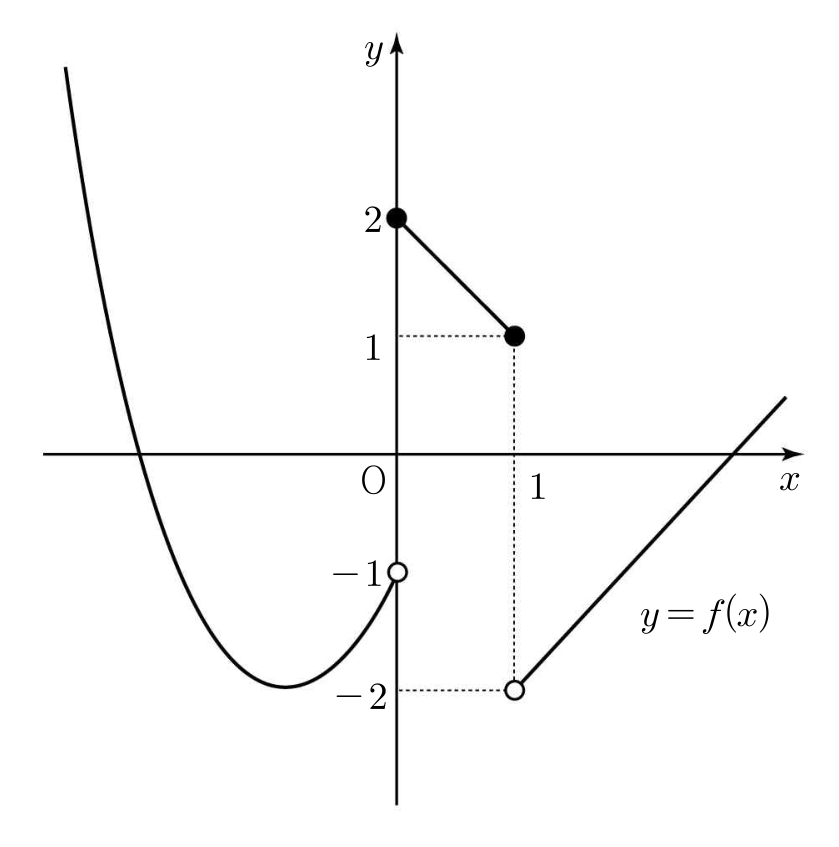
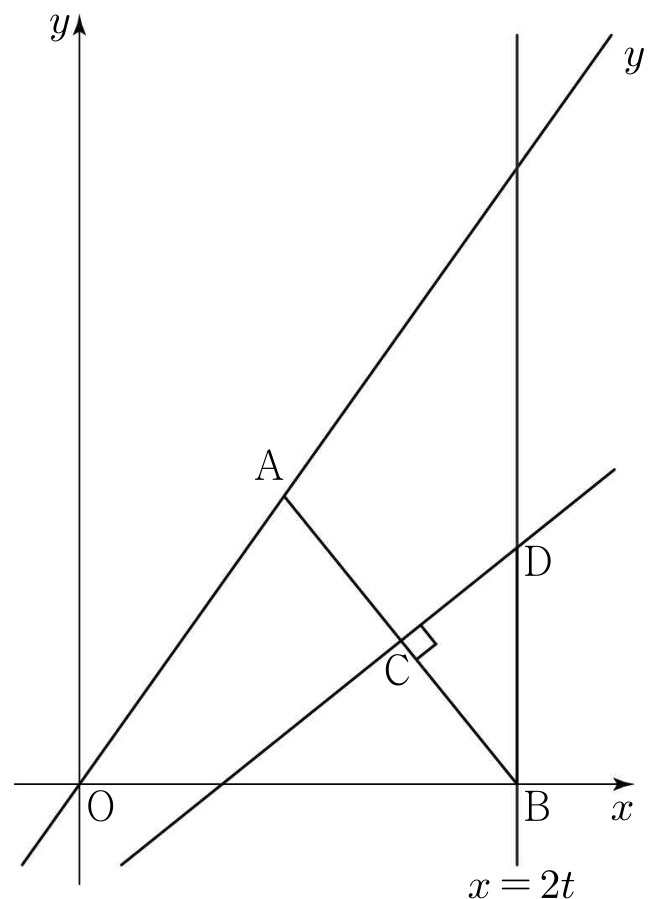
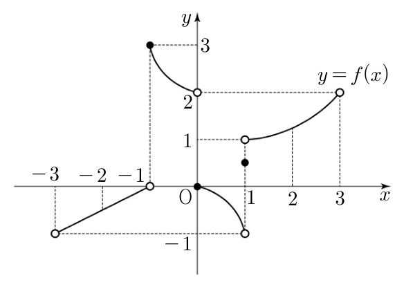
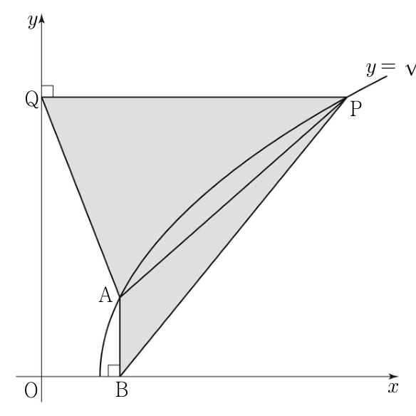
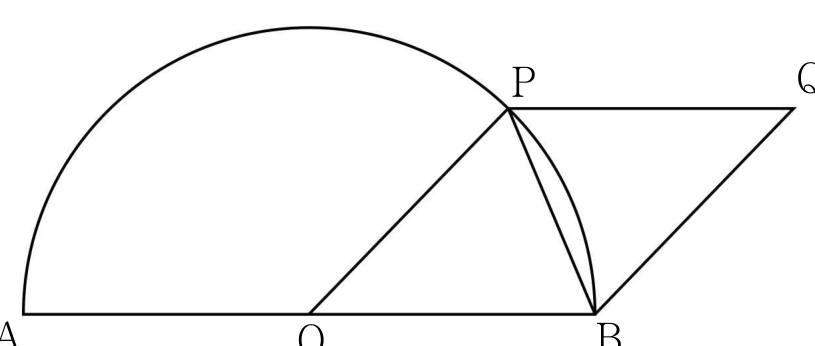
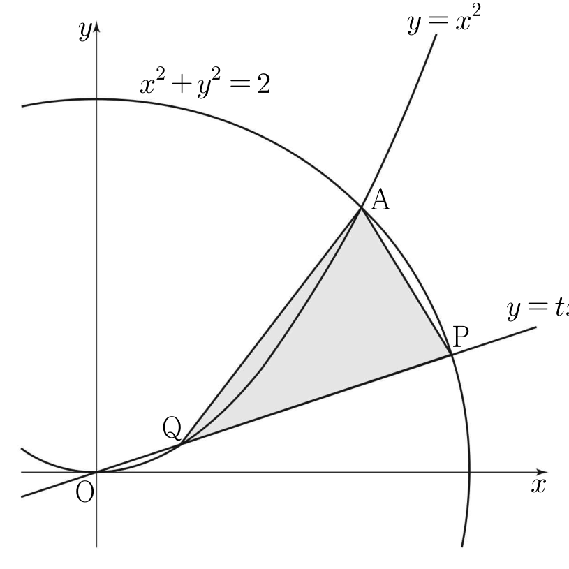
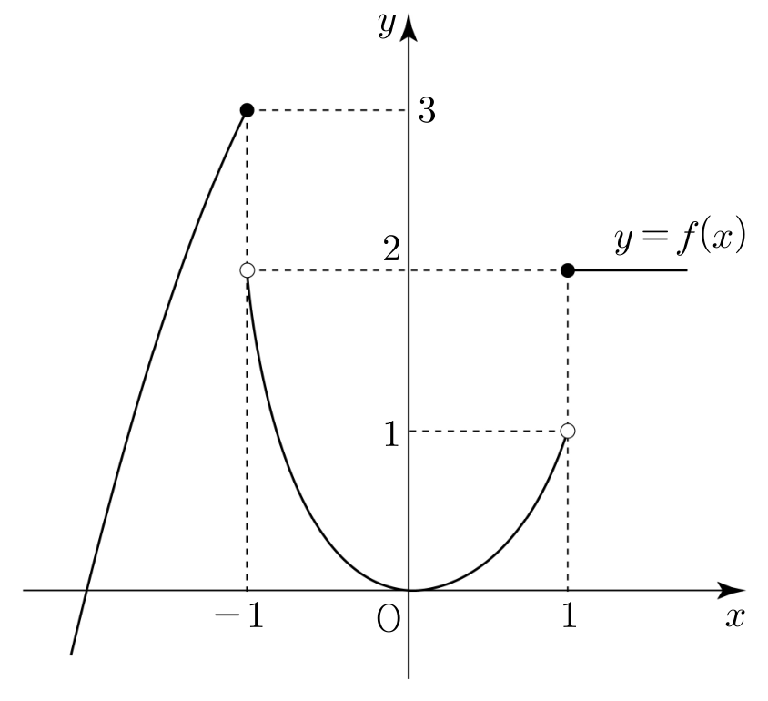
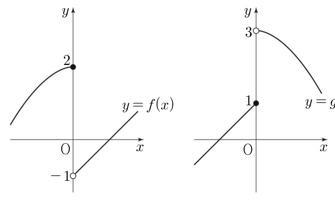
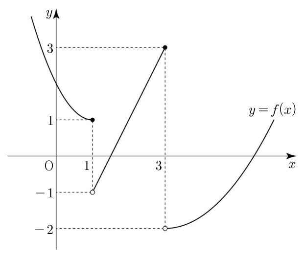
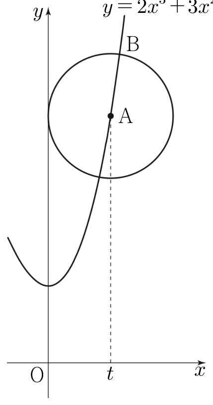

원본 (내부용)함수 $f ( x ) = \begin{cases} x ( x-2 ) & (x \le 1) \\ x ( x-2 ) +16 & (x>1) \end{cases}$ 에 대하여 함수 $f ( x ) \{ f ( x ) -a \}$가 실수 전체의 집합에서 연속이 되도록 하는 상수 $a$의 값을 구하시오. [4점]
원본 정답 14
원본 풀이 (내부용)[출제의도] 함수의 극한을 이용하여 함수의 연속성 문제 해결하기
함수 \(f(x)\)는 \(x=1\)에서 불연속이므로 함수
\(
f(x)\{f(x)-a\}
\)
가 실수 전체의 집합에서 연속이기 위해서는 \(x=1\)에서 연속이어야 한다.
\(
f(1)\{f(1)-a\}=-(-1-a)=1+a
\)
\(
\lim_{x\to1^-}f(x)\{f(x)-a\}=-(-1-a)=1+a
\)
\(
\lim_{x\to1^+}f(x)\{f(x)-a\}=15(15-a)
\)
에서
\(
1+a=15(15-a)
\)
이다. \(\therefore a=14\)
쌍둥이 1/5 · 4점 쌍둥이함수 $f\left(x\right)=\begin{cases}x\left(x-4\right) & \left(x\le 2\right)\\x\left(x-4\right)+10 & \left(x>2\right)\end{cases}$에 대하여 함수 $f\left(x\right)\left\{f\left(x\right)-a\right\}$가 실수 전체의 집합에서 연속이 되도록 하는 상수 $a$의 값을 구하세요.
쌍둥이 2/5 · 4점 쌍둥이함수 $f\left(x\right)=\begin{cases}x\left(x-3\right) & \left(x\le 1\right)\\x\left(x-3\right)+8 & \left(x>1\right)\end{cases}$에 대하여 함수 $f\left(x\right)\left\{f\left(x\right)-a\right\}$가 실수 전체의 집합에서 연속이 되도록 하는 상수 $a$의 값을 구하세요.
쌍둥이 3/5 · 4점 쌍둥이함수 $f\left(x\right)=\begin{cases}x\left(x+2\right) & \left(x\le -1\right)\\x\left(x+2\right)+12 & \left(x>-1\right)\end{cases}$에 대하여 함수 $f\left(x\right)\left\{f\left(x\right)-a\right\}$가 실수 전체의 집합에서 연속이 되도록 하는 상수 $a$의 값을 구하세요.
쌍둥이 4/5 · 4점 쌍둥이함수 $f(x)=\begin{cases}x(x-5) & (x\le 3)\\x(x-5)+8 & (x>3)\end{cases}$에 대하여 함수 $f(x)\left\{f(x)-a\right\}$가 실수 전체에서 연속이 되도록 하는 상수 $a$에 대하여 $a^2$의 값을 구하세요.
① $12$② $14$③ $16$④ $18$⑤ $20$
정답③ $16$ $x=3$에서 왼쪽 극한과 오른쪽 값은 각각 $u=-6$, $v=2$입니다. 연속 조건은 $u(u-a)=v(v-a)$이므로 $a=u+v=-4$입니다. 따라서 $a^2=16$입니다.
숫자: 원본 2 1 2 16 1 → 쌍둥이 5 3 5 8 3
쌍둥이 5/5 · 4점 쌍둥이함수 $f(x)=\begin{cases}x(x-4) & (x\le -2)\\x(x-4)+12 & (x>-2)\end{cases}$에 대하여 함수 $f(x)\left\{f(x)-a\right\}$가 실수 전체에서 연속이 되도록 하는 상수 $a$에 대하여 $a+1$의 값을 구하세요.
① $1$② $3$③ $5$④ $7$⑤ $9$
정답③ $5$ $x=-2$에서 왼쪽 극한과 오른쪽 값은 각각 $u=-4$, $v=8$입니다. 연속 조건은 $u(u-a)=v(v-a)$이므로 $a=u+v=4$입니다. 따라서 $a+1=5$입니다.
숫자: 원본 2 1 2 16 1 → 쌍둥이 4 2 4 12 2 1 · 같은 수: 1 2
5. 2018년 6월 가형 30번 · 4점 · 수학Ⅱ 함수의 극한·연속 · 4점 쌍둥이
원본 (내부용)양의 실수 $k$와 함수 $f ( x ) =ax ( x-b )$($a$, $b$는 자연수)에 대하여 함수 $g(x)$를 $g ( x ) = \begin{cases} f ( x ) & (x<b) \\ k f ( x-b ) & (x \ge b) \end{cases}$ 라 하자. 함수 $g ( x )$가 다음 조건을 만족시킨다. (가) $g ( 6 ) = -8$ (나) 방정식 $| g ( x ) | =b$의 서로 다른 실근의 개수는 $5$이다. 실수 $m$에 대하여 직선 $y=mx-1$이 함수 $y= | g ( x ) |$의 그래프와 만나는 점의 개수를 $h ( m )$이라 하자. 함수 $h ( m )$에 대하여 $\lim_{m \to t-} {h ( m )} + \lim_{m \to t+} {h ( m )} =6$을 만족시키는 모든 실수 $t$의 값의 합은 $p+q \sqrt{14}$이다. $12 ( p+q )$의 값을 구하시오. (단, $p$, $q$는 유리수이다.) [4점] ※확인 사항 ◦답안지의 해당란에 필요한 내용을 정확히 기입(표기)했는지 확인하시오.
원본 정답 219
원본 풀이 (내부용)[출제의도] 함수의 그래프를 이용하여 함수의 극한 문제 해결하기
(i) \(k=1\)일 때
방정식 \(|g(x)|=b\)의 서로 다른 실근의 개수는 2, 4, 6이므로 조건 (나)를 만족시키지 않는다.
(ii) \(k>1\)일 때
방정식 \(|g(x)|=b\)의 서로 다른 실근의 개수는 직선 \(y=b\)가 함수 \(y=|g(x)|\ (x<b)\)의 그래프에 접할 때 5이다.
\(
\left|g\left(\frac b2\right)\right|=b
\)
이므로
\(
-f\left(\frac b2\right)=b
\)
에서 \(ab=4\)이다.
\(a,\ b\)는 자연수이므로 가능한 순서쌍 \((a,b)\)는 \((1,4),\ (2,2),\ (4,1)\)이고 \(b\le4\)이다.
조건 (가)에서
\(
g(6)=kf(6-b)=ka(6-b)(6-2b)=-8
\)
\(
ka(6-b)(3-b)=-4\qquad\cdots\text{ ㉠}
\)
\(3-b<0\)이므로 만족시키는 자연수 \(b\)는 4 또는 5이다.
\(b=4,\ 5\)를 ㉠에 각각 대입하면 \(ka=2\)이다. 그런데 \(kab=4\)이므로 \(b=2\)이다. 이는 모순이다.
따라서 주어진 조건을 만족하는 두 자연수 \(a,\ b\)는 존재하지 않는다.
( i )~( iii )으로부터
\(
g(x)=
\begin{cases}
x(x-4)&(x<4)\\
2(x-4)(x-8)&(x\ge4)
\end{cases}
\)
이다.
(iii) \(k<1\)일 때
방정식 \(|g(x)|=b\)의 서로 다른 실근의 개수는 직선 \(y=b\)가 함수 \(y=|g(x)|\ (x\ge b)\)의 그래프에 접할 때 5이다.
\(
\left|g\left(\frac{3b}{2}\right)\right|=b
\)
이므로
\(
-kf\left(\frac{3b}{2}\right)=b,\quad kab=4
\)
이다. 조건 (가)에서
① \(b>6\)일 때
\(
g(6)=f(6)=-8,\quad 3a(b-6)=4
\)
이다. 이 식의 좌변은 3의 배수이지만 우변은 3의 배수가 아니다. 따라서 만족하는 두 자연수 \(a,b\)는 존재하지 않는다.
② \(b\le6\)일 때
\(
g(6)=kf(6-b)=ka(6-b)(6-2b)=-8
\)
\(
ka(6-b)(3-b)=-4\qquad\cdots\text{ ㉡}
\)
이다. 이 식의 좌변에서 \(k>0,\ a>0,\ 6-b\ge0\)이므로 \(3-b<0\)이어야 한다.
가능한 자연수 \(b\)는 4 또는 5이다. \(b=4,\ 5\)를 ㉡에 각각 대입하면 \(ka=2\)이다. 그런데 \(kab=4\)이므로 \(b=2\)이다. 이는 모순이다.
따라서 주어진 조건을 만족하는 두 자연수 \(a,b\)는 존재하지 않는다.
직선 \(y=mx-1\)이 \((4,0)\)을 지날 때 \(m\)의 값을 \(m_1\)이라 하고, 이차함수 \(y=-2(x-4)(x-8)\)의 그래프에 접할 때 \(m\)의 값을 \(m_2\)라 하자.
\(m_1\)은 직선 \(y=mx-1\)이 점 \((4,0)\)을 지날 때의 기울기이므로
\(
m_1=\frac14
\)
이다.
\(m_2\)는 직선 \(y=mx-1\)이 함수 \(y=-2(x-4)(x-8)\)의 그래프에 접할 때의 기울기이므로 이차방정식
\(
-2(x-4)(x-8)=mx-1
\)
의 판별식 \(D=0\)을 이용하여 구하면
\(
m_2=24-6\sqrt{14}
\)
이다.
위 그림에서
\(
\lim_{m\to t^-}h(m)+\lim_{m\to t^+}h(m)=6
\)
을 만족시키는 모든 실수 \(t\)의 값은 \(\frac14,\ 24-6\sqrt{14}\)이므로
\(
\frac14+(24-6\sqrt{14})
=\frac{97}{4}-6\sqrt{14}
\)
에서 \(p=\frac{97}{4},\ q=-6\)이다.
따라서
\(
12(p+q)=12\left(\frac{97}{4}-6\right)=219
\)
이다.
쌍둥이 1/5 · 4점 쌍둥이양의 실수 $k$와 함수 $f(x)=ax(x-b)$에 대하여 ($a,b$는 자연수) $g(x)=f(x)$ ($x<b$), $g(x)=k f(x-b)$ ($x\ge b$)라 하자. $g(9)=-21$이고, 방정식 $|g(x)|=4\cdot 8$의 서로 다른 실근의 개수가 5이다. 실수 $m$에 대하여 직선 $y=mx-3$과 곡선 $y=|g(x)|$의 교점의 개수를 $h(m)$이라 하자. $\lim_{m\to t^-}h(m)+\lim_{m\to t^+}h(m)=6$을 만족하는 모든 $t$의 합은 $p+q\sqrt{127}$꼴이다. ($p,q$는 유리수) $8(p-q)$의 값을 구하시오.
정답$627$ 조각적인 $|g(x)|$의 두 바깥 구간은 해당 수평선과 한 번씩 교차한다. 두 안쪽 봉우리 높이는 $ab^2/4=32$, $kab^2/4=48$이다. 근이 5개인 경우는 (1) 첫 봉우리에서 접하고 둘째에서 2개를 만나거나, (2) 둘째에서 접하고 첫째에서 2개를 만난다. 즉 $ab=4\cdot 4,k>1$ 또는 $kab=4\cdot 4,k<1$이다. $g(9)=-21$은 $b<9<2b$ 또는 $9<b$에서만 성립한다. $9<b$이면 $a(b-9)=\frac{7}{3}$이어야 하는데, 이 값은 정수가 아니므로 불가능하다. 따라서 $b<9<2b$이고 $ka=3$이다. $b$는 $5\le b\le 8$이므로 이 범위의 $b$를 전부 확인했다. $ab=4\cdot 4, k>1$인 첫 봉우리 접함 경우는 $(2,8,\frac{3}{2})$만 남고, $kab=4\cdot 4$인 둘째 봉우리 접함 경우는 $kab=4\cdot 4$이어야 하는데 아래 $kab$ 값 중 일치하는 것이 없다. 순서대로 $b:ka,kab$는 5:21/4,105/4, 6:7/3,14, 7:21/10,147/10, 8:3,24이다. 교점 개수가 변하는 기울기는 각 조각의 접선에서 생기고, 경계 $x=b,2b$에서는 $m=3/8, 3/16$이다. 판별식 0이되는 접선기울기를 포함한 전체 사건의 좌우 교점 개수는 $-72 - 6 \sqrt{129}:(2,2), -16 - 2 \sqrt{6}:(2,0), -16 + 2 \sqrt{6}:(0,0), -72 + 6 \sqrt{129}:(0,0), \frac{3}{16}:(0,2), \frac{3}{8}:(2,4), 72 - 6 \sqrt{127}:(4,2), 6 \sqrt{127} + 72:(2,2)$이다. 이중 좌우 교점 개수의 합이 6인 기울기는 $\frac{3}{8}$, $72 - 6 \sqrt{127}$이므로 $p=\frac{579}{8}, q=-6$이다. 따라서 $8(p-q)=627$이다.
쌍둥이 2/5 · 4점 쌍둥이양의 실수 $k$와 함수 $f(x)=ax(x-b)$에 대하여 ($a,b$는 자연수) $g(x)=f(x)$ ($x<b$), $g(x)=k f(x-b)$ ($x\ge b$)라 하자. $g(10)=-24$이고, 방정식 $|g(x)|=3\cdot 6$의 서로 다른 실근의 개수가 5이다. 실수 $m$에 대하여 직선 $y=mx-2$와 곡선 $y=|g(x)|$의 교점의 개수를 $h(m)$이라 하자. $\lim_{m\to t^-}h(m)+\lim_{m\to t^+}h(m)=6$을 만족하는 모든 $t$의 합은 $p+q\sqrt{642}$꼴이다. ($p,q$는 유리수) $3(p-q)$의 값을 구하시오.
정답$169$ 조각적인 $|g(x)|$의 두 바깥 구간은 해당 수평선과 한 번씩 교차한다. 두 안쪽 봉우리 높이는 $ab^2/4=18$, $kab^2/4=27$이다. 근이 5개인 경우는 (1) 첫 봉우리에서 접하고 둘째에서 2개를 만나거나, (2) 둘째에서 접하고 첫째에서 2개를 만난다. 즉 $ab=4\cdot 3,k>1$ 또는 $kab=4\cdot 3,k<1$이다. $g(10)=-24$는 $b<10<2b$ 또는 $10<b$에서만 성립한다. $10<b$이면 $a(b-10)=\frac{12}{5}$이어야 하는데, 이 값은 정수가 아니므로 불가능하다. 따라서 $b<10<2b$이고 $ka=3$이다. $b$는 $6\le b\le 9$이므로 이 범위의 $b$를 전부 확인했다. $ab=4\cdot 3, k>1$인 첫 봉우리 접함 경우는 $(2,6,\frac{3}{2})$만 남고, $kab=4\cdot 3$인 둘째 봉우리 접함 경우는 $kab=4\cdot 3$이어야 하는데 아래 $kab$ 값 중 일치하는 것이 없다. 순서대로 $b:ka,kab$는 6:3,18, 7:2,14, 8:2,16, 9:3,27이다. 교점 개수가 변하는 기울기는 각 조각의 접선에서 생기고, 경계 $x=b,2b$에서는 $m=2/6, 2/12$이다. 판별식 0이되는 접선기울기를 포함한 전체 사건의 좌우 교점 개수는 $-54 - 2 \sqrt{654}:(2,2), -16:(2,0), -8:(0,0), -54 + 2 \sqrt{654}:(0,0), \frac{1}{6}:(0,2), \frac{1}{3}:(2,4), 54 - 2 \sqrt{642}:(4,2), 2 \sqrt{642} + 54:(2,2)$이다. 이중 좌우 교점 개수의 합이 6인 기울기는 $\frac{1}{3}$, $54 - 2 \sqrt{642}$이므로 $p=\frac{163}{3}, q=-2$이다. 따라서 $3(p-q)=169$이다.
쌍둥이 3/5 · 4점 쌍둥이양의 실수 $k$와 함수 $f(x)=ax(x-b)$에 대하여 ($a,b$는 자연수) $g(x)=f(x)$ ($x<b$), $g(x)=k f(x-b)$ ($x\ge b$)라 하자. $g(13)=-33$이고, 방정식 $|g(x)|=6\cdot 12$의 서로 다른 실근의 개수가 5이다. 실수 $m$에 대하여 직선 $y=mx-2$와 곡선 $y=|g(x)|$의 교점의 개수를 $h(m)$이라 하자. $\lim_{m\to t^-}h(m)+\lim_{m\to t^+}h(m)=6$을 만족하는 모든 $t$의 합은 $p+q\sqrt{2586}$꼴이다. ($p,q$는 유리수) $6(p-q)$의 값을 구하시오.
정답$661$ 조각적인 $|g(x)|$의 두 바깥 구간은 해당 수평선과 한 번씩 교차한다. 두 안쪽 봉우리 높이는 $ab^2/4=72$, $kab^2/4=108$이다. 근이 5개인 경우는 (1) 첫 봉우리에서 접하고 둘째에서 2개를 만나거나, (2) 둘째에서 접하고 첫째에서 2개를 만난다. 즉 $ab=4\cdot 6,k>1$ 또는 $kab=4\cdot 6,k<1$이다. $g(13)=-33$은 $b<13<2b$ 또는 $13<b$에서만 성립한다. $13<b$이면 $a(b-13)=\frac{33}{13}$이어야 하는데, 이 값은 정수가 아니므로 불가능하다. 따라서 $b<13<2b$이고 $ka=3$이다. $b$는 $7\le b\le 12$이므로 이 범위의 $b$를 전부 확인했다. $ab=4\cdot 6, k>1$인 첫 봉우리 접함 경우는 $(2,12,\frac{3}{2})$만 남고, $kab=4\cdot 6$인 둘째 봉우리 접함 경우는 $kab=4\cdot 6$이어야 하는데 아래 $kab$ 값 중 일치하는 것이 없다. 순서대로 $b:ka,kab$는 7:11/2,77/2, 8:11/5,88/5, 9:33/20,297/20, 10:11/7,110/7, 11:11/6,121/6, 12:3,36이다. 교점 개수가 변하는 기울기는 각 조각의 접선에서 생기고, 경계 $x=b,2b$에서는 $m=2/12, 2/24$이다. 판별식 0이되는 접선기울기를 포함한 전체 사건의 좌우 교점 개수는 $-108 - 2 \sqrt{2598}:(2,2), -28:(2,0), -20:(0,0), -108 + 2 \sqrt{2598}:(0,0), \frac{1}{12}:(0,2), \frac{1}{6}:(2,4), 108 - 2 \sqrt{2586}:(4,2), 2 \sqrt{2586} + 108:(2,2)$이다. 이중 좌우 교점 개수의 합이 6인 기울기는 $\frac{1}{6}$, $108 - 2 \sqrt{2586}$이므로 $p=\frac{649}{6}, q=-2$이다. 따라서 $6(p-q)=661$이다.
쌍둥이 4/5 · 4점 쌍둥이양의 실수 $k$와 함수 $f(x)=ax(x-b)$에 대하여 ($a,b$는 자연수) $g(x)=f(x)$ ($x<b$), $g(x)=k f(x-b)$ ($x\ge b$)라 하자. $g(10)=-54$이고, 방정식 $|g(x)|=21/4\cdot 7$의 서로 다른 실근의 개수가 5이다. 실수 $m$에 대하여 직선 $y=mx-1$과 곡선 $y=|g(x)|$의 교점의 개수를 $h(m)$이라 하자. $\lim_{m\to t^-}h(m)+\lim_{m\to t^+}h(m)=6$을 만족하는 모든 $t$의 합은 $p+q\sqrt{55}$꼴이다. ($p,q$는 유리수) $14(p-q)$의 값을 구하시오.
정답$1493$ 조각적인 $|g(x)|$의 두 바깥 구간은 해당 수평선과 한 번씩 교차한다. 두 안쪽 봉우리 높이는 $ab^2/4=147/4$, $kab^2/4=441/8$이다. 근이 5개인 경우는 (1) 첫 봉우리에서 접하고 둘째에서 2개를 만나거나, (2) 둘째에서 접하고 첫째에서 2개를 만난다. 즉 $ab=4\cdot 21/4,k>1$ 또는 $kab=4\cdot 21/4,k<1$이다. $g(10)=-54$는 $b<10<2b$ 또는 $10<b$에서만 성립한다. $10<b$이면 $a(b-10)=\frac{27}{5}$이어야 하는데, 이 값은 정수가 아니므로 불가능하다. 따라서 $b<10<2b$이고 $ka=\frac{9}{2}$이다. $b$는 $6\le b\le 9$이므로 이 범위의 $b$를 전부 확인했다. $ab=4\cdot 21/4, k>1$인 첫 봉우리 접함 경우는 $(3,7,\frac{3}{2})$만 남고, $kab=4\cdot 21/4$인 둘째 봉우리 접함 경우는 $kab=4\cdot 21/4$이어야 하는데 아래 $kab$ 값 중 일치하는 것이 없다. 순서대로 $b:ka,kab$는 6:27/4,81/2, 7:9/2,63/2, 8:9/2,36, 9:27/4,243/4이다. 교점 개수가 변하는 기울기는 각 조각의 접선에서 생기고, 경계 $x=b,2b$에서는 $m=1/7, 1/14$이다. 판별식 0이되는 접선기울기를 포함한 전체 사건의 좌우 교점 개수는 $- \frac{189}{2} - 6 \sqrt{221}:(2,2), -21 - 2 \sqrt{3}:(2,0), -21 + 2 \sqrt{3}:(0,0), - \frac{189}{2} + 6 \sqrt{221}:(0,0), \frac{1}{14}:(0,2), \frac{1}{7}:(2,4), \frac{189}{2} - 12 \sqrt{55}:(4,2), 12 \sqrt{55} + \frac{189}{2}:(2,2)$이다. 이중 좌우 교점 개수의 합이 6인 기울기는 $\frac{1}{7}$, $\frac{189}{2} - 12 \sqrt{55}$이므로 $p=\frac{1325}{14}, q=-12$이다. 따라서 $14(p-q)=1493$이다.
쌍둥이 5/5 · 4점 쌍둥이양의 실수 $k$와 함수 $f(x)=ax(x-b)$에 대하여 ($a,b$는 자연수) $g(x)=f(x)$ ($x<b$), $g(x)=k f(x-b)$ ($x\ge b$)라 하자. $g(11)=-90$이고, 방정식 $|g(x)|=8\cdot 8$의 서로 다른 실근의 개수가 5이다. 실수 $m$에 대하여 직선 $y=mx-2$와 곡선 $y=|g(x)|$의 교점의 개수를 $h(m)$이라 하자. $\lim_{m\to t^-}h(m)+\lim_{m\to t^+}h(m)=6$을 만족하는 모든 $t$의 합은 $p+q\sqrt{1149}$꼴이다. ($p,q$는 유리수) $4(p-q)$의 값을 구하시오.
정답$593$ 조각적인 $|g(x)|$의 두 바깥 구간은 해당 수평선과 한 번씩 교차한다. 두 안쪽 봉우리 높이는 $ab^2/4=64$, $kab^2/4=96$이다. 근이 5개인 경우는 (1) 첫 봉우리에서 접하고 둘째에서 2개를 만나거나, (2) 둘째에서 접하고 첫째에서 2개를 만난다. 즉 $ab=4\cdot 8,k>1$ 또는 $kab=4\cdot 8,k<1$이다. $g(11)=-90$은 $b<11<2b$ 또는 $11<b$에서만 성립한다. $11<b$이면 $a(b-11)=\frac{90}{11}$이어야 하는데, 이 값은 정수가 아니므로 불가능하다. 따라서 $b<11<2b$이고 $ka=6$이다. $b$는 $6\le b\le 10$이므로 이 범위의 $b$를 전부 확인했다. $ab=4\cdot 8, k>1$인 첫 봉우리 접함 경우는 $(4,8,\frac{3}{2})$만 남고, $kab=4\cdot 8$인 둘째 봉우리 접함 경우는 $kab=4\cdot 8$이어야 하는데 아래 $kab$ 값 중 일치하는 것이 없다. 순서대로 $b:ka,kab$는 6:18,108, 7:15/2,105/2, 8:6,48, 9:45/7,405/7, 10:10,100이다. 교점 개수가 변하는 기울기는 각 조각의 접선에서 생기고, 경계 $x=b,2b$에서는 $m=2/8, 2/16$이다. 판별식 0이되는 접선기울기를 포함한 전체 사건의 좌우 교점 개수는 $-144 - 4 \sqrt{1155}:(2,2), -32 - 4 \sqrt{2}:(2,0), -32 + 4 \sqrt{2}:(0,0), -144 + 4 \sqrt{1155}:(0,0), \frac{1}{8}:(0,2), \frac{1}{4}:(2,4), 144 - 4 \sqrt{1149}:(4,2), 4 \sqrt{1149} + 144:(2,2)$이다. 이중 좌우 교점 개수의 합이 6인 기울기는 $\frac{1}{4}$, $144 - 4 \sqrt{1149}$이므로 $p=\frac{577}{4}, q=-4$이다. 따라서 $4(p-q)=593$이다.
원본 (내부용)함수 $y=f ( x )$의 그래프가 그림과 같다. $\mathrm{O}$ $x$ $y$ $y=f ( x )$ $1$ $-1$ $2$ $-2$ $1$ $f ( 1 ) + \lim_{x \to 0-} {f ( x )}$의 값은? [3점]

① $-2$② $-1$③ $0$④ $1$⑤ $2$
원본 정답 ③
원본 풀이 (내부용)[출제의도] 함수의 극한 이해하기
주어진 그래프로부터 \(f(1)=1,\ \lim_{x\to0}f(x)=-1\)이다. 따라서
\(
f(1)+\lim_{x\to0}f(x)=1+(-1)=0
\)
이다.
생성기 숫자판 1/6 · G2f-15#1함수 $y=f\left(x\right)$의 그래프가 그림과 같습니다. $f\left(0\right)+\lim_{x\to 2^{+}}f\left(x\right)$의 값으로 옳은 것을 고르세요.
① $-2$② $-1$③ $0$④ $1$⑤ $2$
정답③ $0$ $f\left(0\right)=2$ $x\to 2^{+}$일 때 $f\left(x\right)\to -2$ 따라서 구하는 값은 $2-2=0$
숫자: 원본 1 1 2 2 1 1 0 → 쌍둥이 0 2 · 같은 수: 0 2
생성기 숫자판 2/6 · G2f-15#1함수 $y=f\left(x\right)$의 그래프가 그림과 같습니다. $f\left(1\right)+\lim_{x\to 0^{+}}f\left(x\right)$의 값으로 옳은 것을 고르세요.
① $3$② $4$③ $5$④ $6$⑤ $7$
정답③ $5$ $f\left(1\right)=2$ $x\to 0^{+}$일 때 $f\left(x\right)\to 3$ 따라서 구하는 값은 $2+3=5$
숫자: 원본 1 1 2 2 1 1 0 → 쌍둥이 1 0 · 같은 수: 0 1
생성기 숫자판 3/6 · G2f-15#1함수 $y=f\left(x\right)$의 그래프가 그림과 같습니다. $f\left(0\right)+\lim_{x\to 2^{-}}f\left(x\right)$의 값으로 옳은 것을 고르세요.
① $2$② $3$③ $4$④ $5$⑤ $6$
정답③ $4$ $f\left(0\right)=3$ $x\to 2^{-}$일 때 $f\left(x\right)\to 1$ 따라서 구하는 값은 $3+1=4$
숫자: 원본 1 1 2 2 1 1 0 → 쌍둥이 0 2 · 같은 수: 0 2
생성기 숫자판 4/6 · G2f-15#1함수 $y=f\left(x\right)$의 그래프가 그림과 같습니다. $f\left(0\right)+\lim_{x\to 1^{-}}f\left(x\right)$의 값으로 옳은 것을 고르세요.
① $2$② $3$③ $4$④ $5$⑤ $6$
정답③ $4$ $f\left(0\right)=3$ $x\to 1^{-}$일 때 $f\left(x\right)\to 1$ 따라서 구하는 값은 $3+1=4$
숫자: 원본 1 1 2 2 1 1 0 → 쌍둥이 0 1 · 같은 수: 0 1
생성기 숫자판 5/6 · G2f-15#1함수 $y=f\left(x\right)$의 그래프가 그림과 같습니다. $f\left(0\right)+\lim_{x\to 1^{-}}f\left(x\right)$의 값으로 옳은 것을 고르세요.
① $2$② $3$③ $4$④ $5$⑤ $6$
정답③ $4$ $f\left(0\right)=3$ $x\to 1^{-}$일 때 $f\left(x\right)\to 1$ 따라서 구하는 값은 $3+1=4$
숫자: 원본 1 1 2 2 1 1 0 → 쌍둥이 0 1 · 같은 수: 0 1
생성기 숫자판 6/6 · G2f-15#1함수 $y=f\left(x\right)$의 그래프가 그림과 같습니다. $f\left(2\right)+\lim_{x\to 0^{+}}f\left(x\right)$의 값으로 옳은 것을 고르세요.
① $2$② $3$③ $4$④ $5$⑤ $6$
정답③ $4$ $f\left(2\right)=1$ $x\to 0^{+}$일 때 $f\left(x\right)\to 3$ 따라서 구하는 값은 $1+3=4$
숫자: 원본 1 1 2 2 1 1 0 → 쌍둥이 2 0 · 같은 수: 0 2
8. 2018년 6월 나형 11번 · 3점 · 수학Ⅱ 함수의 극한·연속 · G2M2-01#8
원본 (내부용)두 상수 $a$, $b$에 대하여 $\lim_{x \to 1} \frac{\sqrt{x+a} -2}{x-1} =b$ 일 때, $a+4b$의 값은? [3점]
① $2$② $4$③ $6$④ $8$⑤ $10$
원본 정답 ②
원본 풀이 (내부용)[출제의도] 함수의 극한 이해하기
\(
\lim_{x\to1}(x-1)=0
\)
이므로
\(
\lim_{x\to1}(\sqrt{x+a}-2)=0
\)
이어야 한다. 따라서 \(a=3\)이다.
\(
\begin{aligned}
\lim_{x\to1}\frac{\sqrt{x+3}-2}{x-1}
&=\lim_{x\to1}\frac{x-1}{(x-1)(\sqrt{x+3}+2)}\\
&=\lim_{x\to1}\frac{1}{\sqrt{x+3}+2}
=\frac14
\end{aligned}
\)
따라서 \(b=\frac14\)이다. 그러므로
\(
a+4b=3+4\times\frac14=4
\)
이다.
생성기 숫자판 1/6 · G2M2-01#8두 상수 $a$, $b$에 대하여 $\lim_{x\to 3}\frac{\sqrt{x+a}-2}{x-3}=b$일 때, $a+8b$의 값으로 옳은 것을 고르세요.
① $-1$② $0$③ $1$④ $2$⑤ $3$
정답⑤ $3$ $x\to 3$일 때 (분모)$\to 0$이고 극한값이 존재하므로 (분자)$\to 0$ $\sqrt{3+a}=2$에서 $a=1$ $b=\lim_{x\to 3}\frac{\sqrt{x+1}-2}{x-3}=\lim_{x\to 3}\frac{x-3}{\left(x-3\right)\left(\sqrt{x+1}+2\right)}$ $=\frac{1}{4}$ 따라서 $a+8b=1+8\times \frac{1}{4}=3$
숫자: 원본 1 2 1 4 → 쌍둥이 3 2 3 8 · 같은 수: 2
생성기 숫자판 2/6 · G2M2-01#8두 상수 $a$, $b$에 대하여 $\lim_{x\to 5}\frac{\sqrt{x+a}-3}{x-5}=b$일 때, $a+12b$의 값으로 옳은 것을 고르세요.
① $3$② $4$③ $5$④ $6$⑤ $7$
정답④ $6$ $x\to 5$일 때 (분모)$\to 0$이고 극한값이 존재하므로 (분자)$\to 0$ $\sqrt{5+a}=3$에서 $a=4$ $b=\lim_{x\to 5}\frac{\sqrt{x+4}-3}{x-5}=\lim_{x\to 5}\frac{x-5}{\left(x-5\right)\left(\sqrt{x+4}+3\right)}$ $=\frac{1}{6}$ 따라서 $a+12b=4+12\times \frac{1}{6}=6$
숫자: 원본 1 2 1 4 → 쌍둥이 5 3 5 12
생성기 숫자판 3/6 · G2M2-01#8두 상수 $a$, $b$에 대하여 $\lim_{x\to 2}\frac{\sqrt{x+a}-2}{x-2}=b$일 때, $a+4b$의 값으로 옳은 것을 고르세요.
① $1$② $2$③ $3$④ $4$⑤ $5$
정답③ $3$ $x\to 2$일 때 (분모)$\to 0$이고 극한값이 존재하므로 (분자)$\to 0$ $\sqrt{2+a}=2$에서 $a=2$ $b=\lim_{x\to 2}\frac{\sqrt{x+2}-2}{x-2}=\lim_{x\to 2}\frac{x-2}{\left(x-2\right)\left(\sqrt{x+2}+2\right)}$ $=\frac{1}{4}$ 따라서 $a+4b=2+4\times \frac{1}{4}=3$
숫자: 원본 1 2 1 4 → 쌍둥이 2 2 2 4 · 같은 수: 2 4
생성기 숫자판 4/6 · G2M2-01#8두 상수 $a$, $b$에 대하여 $\lim_{x\to 1}\frac{\sqrt{x+a}-3}{x-1}=b$일 때, $a+12b$의 값으로 옳은 것을 고르세요.
① $6$② $7$③ $8$④ $9$⑤ $10$
정답⑤ $10$ $x\to 1$일 때 (분모)$\to 0$이고 극한값이 존재하므로 (분자)$\to 0$ $\sqrt{1+a}=3$에서 $a=8$ $b=\lim_{x\to 1}\frac{\sqrt{x+8}-3}{x-1}=\lim_{x\to 1}\frac{x-1}{\left(x-1\right)\left(\sqrt{x+8}+3\right)}$ $=\frac{1}{6}$ 따라서 $a+12b=8+12\times \frac{1}{6}=10$
숫자: 원본 1 2 1 4 → 쌍둥이 1 3 1 12 · 같은 수: 1
생성기 숫자판 5/6 · G2M2-01#8두 상수 $a$, $b$에 대하여 $\lim_{x\to 3}\frac{\sqrt{x+a}-2}{x-3}=b$일 때, $a+4b$의 값으로 옳은 것을 고르세요.
① $-1$② $0$③ $1$④ $2$⑤ $3$
정답④ $2$ $x\to 3$일 때 (분모)$\to 0$이고 극한값이 존재하므로 (분자)$\to 0$ $\sqrt{3+a}=2$에서 $a=1$ $b=\lim_{x\to 3}\frac{\sqrt{x+1}-2}{x-3}=\lim_{x\to 3}\frac{x-3}{\left(x-3\right)\left(\sqrt{x+1}+2\right)}$ $=\frac{1}{4}$ 따라서 $a+4b=1+4\times \frac{1}{4}=2$
숫자: 원본 1 2 1 4 → 쌍둥이 3 2 3 4 · 같은 수: 2 4
생성기 숫자판 6/6 · G2M2-01#8두 상수 $a$, $b$에 대하여 $\lim_{x\to 4}\frac{\sqrt{x+a}-3}{x-4}=b$일 때, $a+12b$의 값으로 옳은 것을 고르세요.
① $7$② $8$③ $9$④ $10$⑤ $11$
정답① $7$ $x\to 4$일 때 (분모)$\to 0$이고 극한값이 존재하므로 (분자)$\to 0$ $\sqrt{4+a}=3$에서 $a=5$ $b=\lim_{x\to 4}\frac{\sqrt{x+5}-3}{x-4}=\lim_{x\to 4}\frac{x-4}{\left(x-4\right)\left(\sqrt{x+5}+3\right)}$ $=\frac{1}{6}$ 따라서 $a+12b=5+12\times \frac{1}{6}=7$
숫자: 원본 1 2 1 4 → 쌍둥이 4 3 4 12 · 같은 수: 4
9. 2018년 6월 나형 12번 · 3점 · 수학Ⅱ 함수의 극한·연속 · G2M8-07#4
원본 (내부용)두 함수 $f ( x ) = \begin{cases} ( x-1 )^{2} & ( x != 1 ) \\ 1 & ( x=1 )\end{cases}$, $g ( x ) =2x+k$ 에 대하여 함수 $f ( x ) g ( x )$가 실수 전체의 집합에서 연속이 되도록 하는 상수 $k$의 값은? [3점]
① $-2$② $-1$③ $0$④ $1$⑤ $2$
원본 정답 ①
원본 풀이 (내부용)[출제의도] 함수의 연속 문제 해결하기
\(f(x)\)가 \(x\ne1\)인 모든 실수에서 연속이고, \(g(x)\)는 실수 전체의 집합에서 연속이므로 \(f(x)g(x)\)가 전체 집합에서 연속이 되기 위해서는 \(x=1\)에서 연속이면 된다.
\(
\lim_{x\to1}f(x)g(x)
=\lim_{x\to1}(x-1)^2(2x+k)=0
\)
\(
f(1)g(1)=1\times(2+k)
\)
\(
\lim_{x\to1}f(x)g(x)=f(1)g(1)
\)
이므로 \(2+k=0\)이다. 따라서 \(k=-2\)이다.
생성기 숫자판 1/6 · G2M8-07#4두 함수 $f\left(x\right)=\begin{cases}\left(x-2\right)^{2} & \left(x\ne 2\right)\\ 1 & \left(x=2\right)\end{cases}$, $g\left(x\right)=2x+k$에 대하여 함수 $f\left(x\right)g\left(x\right)$가 실수 전체의 집합에서 연속이 되도록 하는 상수 $k$의 값으로 옳은 것을 고르세요.
① $-8$② $-7$③ $-6$④ $-5$⑤ $-4$
정답⑤ $-4$ 함수 $f\left(x\right)g\left(x\right)$가 $x=2$에서 연속이어야 하므로 $\lim_{x\to2}f\left(x\right)g\left(x\right)=f\left(2\right)g\left(2\right)$ $\lim_{x\to2}\left(x-2\right)^{2}\left(2x+k\right)=0$, $f\left(2\right)g\left(2\right)=\left(4+k\right)$ $4+k=0$이므로 $k=-4$
숫자: 원본 1 1 1 1 2 → 쌍둥이 2 2 1 2 2 · 같은 수: 1 2
생성기 숫자판 2/6 · G2M8-07#4두 함수 $f\left(x\right)=\begin{cases}\left(x-1\right)^{2} & \left(x\ne 1\right)\\ 1 & \left(x=1\right)\end{cases}$, $g\left(x\right)=4x+k$에 대하여 함수 $f\left(x\right)g\left(x\right)$가 실수 전체의 집합에서 연속이 되도록 하는 상수 $k$의 값으로 옳은 것을 고르세요.
① $-4$② $-3$③ $-2$④ $-1$⑤ $0$
정답① $-4$ 함수 $f\left(x\right)g\left(x\right)$가 $x=1$에서 연속이어야 하므로 $\lim_{x\to1}f\left(x\right)g\left(x\right)=f\left(1\right)g\left(1\right)$ $\lim_{x\to1}\left(x-1\right)^{2}\left(4x+k\right)=0$, $f\left(1\right)g\left(1\right)=\left(4+k\right)$ $4+k=0$이므로 $k=-4$
숫자: 원본 1 1 1 1 2 → 쌍둥이 1 1 1 1 4 · 같은 수: 1
생성기 숫자판 3/6 · G2M8-07#4두 함수 $f\left(x\right)=\begin{cases}\left(x-1\right)^{2} & \left(x\ne 1\right)\\ 1 & \left(x=1\right)\end{cases}$, $g\left(x\right)=x+k$에 대하여 함수 $f\left(x\right)g\left(x\right)$가 실수 전체의 집합에서 연속이 되도록 하는 상수 $k$의 값으로 옳은 것을 고르세요.
① $-5$② $-4$③ $-3$④ $-2$⑤ $-1$
정답⑤ $-1$ 함수 $f\left(x\right)g\left(x\right)$가 $x=1$에서 연속이어야 하므로 $\lim_{x\to1}f\left(x\right)g\left(x\right)=f\left(1\right)g\left(1\right)$ $\lim_{x\to1}\left(x-1\right)^{2}\left(x+k\right)=0$, $f\left(1\right)g\left(1\right)=\left(1+k\right)$ $1+k=0$이므로 $k=-1$
숫자: 원본 1 1 1 1 2 → 쌍둥이 1 1 1 1 · 같은 수: 1
생성기 숫자판 4/6 · G2M8-07#4두 함수 $f\left(x\right)=\begin{cases}\left(x-1\right)^{2} & \left(x\ne 1\right)\\ 4 & \left(x=1\right)\end{cases}$, $g\left(x\right)=4x+k$에 대하여 함수 $f\left(x\right)g\left(x\right)$가 실수 전체의 집합에서 연속이 되도록 하는 상수 $k$의 값으로 옳은 것을 고르세요.
① $-5$② $-4$③ $-3$④ $-2$⑤ $-1$
정답② $-4$ 함수 $f\left(x\right)g\left(x\right)$가 $x=1$에서 연속이어야 하므로 $\lim_{x\to1}f\left(x\right)g\left(x\right)=f\left(1\right)g\left(1\right)$ $\lim_{x\to1}\left(x-1\right)^{2}\left(4x+k\right)=0$, $f\left(1\right)g\left(1\right)=4\left(4+k\right)$ $4+k=0$이므로 $k=-4$
숫자: 원본 1 1 1 1 2 → 쌍둥이 1 1 4 1 4 · 같은 수: 1
생성기 숫자판 5/6 · G2M8-07#4두 함수 $f\left(x\right)=\begin{cases}\left(x-3\right)^{2} & \left(x\ne 3\right)\\ 3 & \left(x=3\right)\end{cases}$, $g\left(x\right)=2x+k$에 대하여 함수 $f\left(x\right)g\left(x\right)$가 실수 전체의 집합에서 연속이 되도록 하는 상수 $k$의 값으로 옳은 것을 고르세요.
① $-8$② $-7$③ $-6$④ $-5$⑤ $-4$
정답③ $-6$ 함수 $f\left(x\right)g\left(x\right)$가 $x=3$에서 연속이어야 하므로 $\lim_{x\to3}f\left(x\right)g\left(x\right)=f\left(3\right)g\left(3\right)$ $\lim_{x\to3}\left(x-3\right)^{2}\left(2x+k\right)=0$, $f\left(3\right)g\left(3\right)=3\left(6+k\right)$ $6+k=0$이므로 $k=-6$
숫자: 원본 1 1 1 1 2 → 쌍둥이 3 3 3 3 2 · 같은 수: 2
생성기 숫자판 6/6 · G2M8-07#4두 함수 $f\left(x\right)=\begin{cases}\left(x-1\right)^{2} & \left(x\ne 1\right)\\ 3 & \left(x=1\right)\end{cases}$, $g\left(x\right)=4x+k$에 대하여 함수 $f\left(x\right)g\left(x\right)$가 실수 전체의 집합에서 연속이 되도록 하는 상수 $k$의 값으로 옳은 것을 고르세요.
① $-4$② $-3$③ $-2$④ $-1$⑤ $0$
정답① $-4$ 함수 $f\left(x\right)g\left(x\right)$가 $x=1$에서 연속이어야 하므로 $\lim_{x\to1}f\left(x\right)g\left(x\right)=f\left(1\right)g\left(1\right)$ $\lim_{x\to1}\left(x-1\right)^{2}\left(4x+k\right)=0$, $f\left(1\right)g\left(1\right)=3\left(4+k\right)$ $4+k=0$이므로 $k=-4$
숫자: 원본 1 1 1 1 2 → 쌍둥이 1 1 3 1 4 · 같은 수: 1
10. 2018년 6월 나형 16번 · 4점 · 수학Ⅱ 함수의 극한·연속 · 4점 쌍둥이
원본 (내부용)그림과 같이 곡선 $y= \frac{4}{x}$ 위의 두 점 $\mathrm{A} ( 1,4 )$, $\mathrm{B} ( t, \frac{4}{t} )$$( t>1 )$ 를 지나는 직선이 $x$축과 만나는 점을 $\mathrm{P}$라 하자. 삼각형 $\mathrm{OPB}$의 넓이를 $S ( t )$라 할 때, $\lim_{t \to \infty } {S ( t )}$의 값은? (단, $\mathrm{O}$는 원점이다.) [4점] $\mathrm{O}$ $y= \frac{4}{x}$ $\mathrm{A}$ $x$ $y$ $\mathrm{B}$ $\mathrm{P}$
① $2$② $\frac{5}{2}$③ $3$④ $\frac{7}{2}$⑤ $4$
원본 정답 ①
원본 풀이 (내부용)[출제의도] 함수의 극한 문제 해결하기
\(A,\ B\)를 지나는 직선의 방정식은
\(
y-4=\frac{4-t}{t-1}(x-1)
\)
에서
\(
y=-\frac4t(x-1)+4
\)
이다.
\(
0=-\frac4t(x-1)+4
\)
에서 \(x=t+1\)이므로 \(P(t+1,0)\)이다. 그러므로 삼각형 \(OPB\)의 넓이는
\(
S(t)=\frac12\times(t+1)\times\frac4t
\)
이고
\(
\lim_{t\to\infty}S(t)
=\lim_{t\to\infty}\frac{2(t+1)}t=2
\)
이다.
쌍둥이 1/5 · 4점 쌍둥이곡선 $y=\frac{6}{x}$ 위의 두 점 $\mathrm{A}\left(2,\ 3\right)$, $\mathrm{B}\left(t,\ \frac{6}{t}\right)\ (t>2)$를 지나는 직선이 $x$축과 만나는 점을 $\mathrm{P}$라 합니다. 삼각형 $\mathrm{OPB}$의 넓이를 $S(t)$라 할 때, $\lim_{t\to\infty}S(t)$의 값으로 옳은 것을 고르세요. (단, $\mathrm{O}$는 원점입니다.)
쌍둥이 2/5 · 4점 쌍둥이곡선 $y=\frac{9}{x}$ 위의 두 점 $\mathrm{A}\left(3,\ 3\right)$, $\mathrm{B}\left(t,\ \frac{9}{t}\right)\ (t>3)$를 지나는 직선이 $x$축과 만나는 점을 $\mathrm{P}$라 합니다. 삼각형 $\mathrm{OPB}$의 넓이를 $S(t)$라 할 때, $\lim_{t\to\infty}S(t)$의 값으로 옳은 것을 고르세요. (단, $\mathrm{O}$는 원점입니다.)
쌍둥이 3/5 · 4점 쌍둥이곡선 $y=\frac{7}{x}$ 위의 두 점 $\mathrm{A}\left(2,\ \frac{7}{2}\right)$, $\mathrm{B}\left(t,\ \frac{7}{t}\right)\ (t>2)$를 지나는 직선이 $x$축과 만나는 점을 $\mathrm{P}$라 합니다. 삼각형 $\mathrm{OPB}$의 넓이를 $S(t)$라 할 때, $\lim_{t\to\infty}S(t)$의 값으로 옳은 것을 고르세요. (단, $\mathrm{O}$는 원점입니다.)
① $\frac{3}{2}$② $2$③ $\frac{5}{2}$④ $3$⑤ $\frac{7}{2}$
쌍둥이 4/5 · 4점 쌍둥이곡선 $y=10/x$ 위의 두 점 $A(2,5)$, $B(t,10/t)$ ($t>2$)를 지나는 직선이 $x$축과 만나는 점을 $P$라 합니다. 삼각형 $OPB$의 넓이를 $S(t)$라 할 때 $\lim_{t\to\infty}S(t)$를 구하세요.
① $4$② $9/2$③ $5$④ $11/2$⑤ $6$
정답③ $5$ 직선 $AB$의 기울기는 $(10/t-5)/(t-2)=-10/(2t)$입니다. $x$절편은 $t+2$이므로 $OP=t+2$입니다. $S(t)=\frac12(t+2)\cdot(10/t)=5+10/t$입니다. $t\to\infty$일 때 극한은 5입니다.
숫자: 원본 4 1 4 4 1 4 → 쌍둥이 10 2 5 10 2
쌍둥이 5/5 · 4점 쌍둥이곡선 $y=12/x$ 위의 두 점 $A(3,4)$, $B(t,12/t)$ ($t>3$)를 지나는 직선이 $x$축과 만나는 점을 $P$라 합니다. 삼각형 $OPB$의 넓이를 $S(t)$라 할 때 $\lim_{t\to\infty}S(t)$를 구하세요.
① $5$② $11/2$③ $6$④ $13/2$⑤ $7$
정답③ $6$ 직선 $AB$의 기울기는 $(12/t-4)/(t-3)=-12/(3t)$이고 $x$절편은 $t+3$입니다. $S(t)=\frac12(t+3)\cdot(12/t)=6+18/t$입니다. $t$가 무한히 커질 때 넓이의 극한은 6입니다.
숫자: 원본 4 1 4 4 1 4 → 쌍둥이 12 3 4 12 3 · 같은 수: 4
11. 2018년 6월 나형 26번 · 4점 · 수학Ⅱ 함수의 극한·연속 · 4점 쌍둥이
원본 (내부용)함수 $f(x)=\begin{cases}\frac{x^2+ax-10}{x-2} & (x != 2) \\ b & (x=2)\end{cases}$ 가 실수 전체의 집합에서 연속일 때, 두 상수 $a$, $b$에 대하여 $a+b$의 값을 구하시오. [4점]
원본 정답 10
원본 풀이 (내부용)[출제의도] 함수의 연속 이해하기
함수 \(f(x)\)가 실수 전체의 집합에서 연속이기 위해서는 \(x=2\)에서 연속이면 된다. 따라서
\(
\lim_{x\to2}f(x)=f(2)
\)
이므로
\(
\lim_{x\to2}\frac{x^2+ax-10}{x-2}=b
\)
이다.
\(
\lim_{x\to2}(x-2)=0
\)
이므로
\(
\lim_{x\to2}(x^2+ax-10)=0
\)
에서 \(a=3\)이다. 그러므로
\(
\begin{aligned}
\lim_{x\to2}\frac{x^2+3x-10}{x-2}
&=\lim_{x\to2}\frac{(x-2)(x+5)}{x-2}\\
&=\lim_{x\to2}(x+5)=7=b
\end{aligned}
\)
이다. 따라서 \(a+b=10\)이다.
쌍둥이 1/5 · 4점 쌍둥이함수 $f\left(x\right)=\begin{cases}\frac{x^{2}+ax-12}{x-3} & \left(x\neq 3\right)\\b & \left(x=3\right)\end{cases}$가 실수 전체의 집합에서 연속일 때, 두 상수 $a$, $b$에 대하여 $a+b$의 값을 구하세요.
쌍둥이 2/5 · 4점 쌍둥이함수 $f\left(x\right)=\begin{cases}\frac{x^{2}+ax+6}{x+2} & \left(x\neq -2\right)\\b & \left(x=-2\right)\end{cases}$가 실수 전체의 집합에서 연속일 때, 두 상수 $a$, $b$에 대하여 $a+b$의 값을 구하세요.
쌍둥이 3/5 · 4점 쌍둥이함수 $f\left(x\right)=\begin{cases}\frac{x^{2}+ax-14}{x-2} & \left(x\neq 2\right)\\b & \left(x=2\right)\end{cases}$가 실수 전체의 집합에서 연속일 때, 두 상수 $a$, $b$에 대하여 $a+b$의 값을 구하세요.
쌍둥이 4/5 · 4점 쌍둥이함수 $f(x)=\begin{cases}\frac{x^2+ax+(-20)}{x-4} & (x\ne 4)\\b & (x=4)\end{cases}$가 실수 전체에서 연속일 때, 상수 $a$, $b$에 대하여 $b-a$의 값을 구하세요.
① $4$② $6$③ $8$④ $10$⑤ $12$
정답③ $8$ 연속 조건에서 $4^2+4a+(-20)=0$입니다. 분자를 인수분해하면 $x^2+ax+(-20)=(x-4)(x+5)$이므로 $a=1$입니다. 연속이 되려면 $b$는 약분한 식의 $x=4$에서의 값이므로 $b=9$입니다. 따라서 $b-a=8$입니다.
숫자: 원본 10 2 2 2 → 쌍둥이 20 4 4 4
쌍둥이 5/5 · 4점 쌍둥이함수 $f(x)=\begin{cases}\frac{x^2+ax+(-18)}{x--3} & (x\ne -3)\\b & (x=-3)\end{cases}$가 실수 전체에서 연속일 때, 상수 $a$, $b$에 대하여 $ab$의 값을 구하세요.
① $19$② $23$③ $27$④ $31$⑤ $35$
정답③ $27$ 연속 조건에서 $(-3)^2+(-3)a+(-18)=0$입니다. 분자를 인수분해하면 $x^2-3x-18=(x+3)(x-6)$이므로 $a=-3$입니다. 약분한 식의 극한으로 $b=2(-3)+(-3)=-9$입니다. $ab=27$입니다.
숫자: 원본 10 2 2 2 → 쌍둥이 18 3 3 3
12. 2018년 6월 나형 30번 · 4점 · 수학Ⅱ 함수의 극한·연속 · 4점 쌍둥이
원본 (내부용)이차함수 $f ( x ) =x^{2} + \frac{1}{2} x$에 대하여 함수 $g ( x )$가 다음 조건을 만족시킨다. (가) $0 \le x< \frac{1}{2}$일 때, $g ( x ) =f ( x )$이다. (나) $n- \frac{1}{2} \le x<n+ \frac{1}{2}$일 때, $g ( x ) =f ( x-n ) + \frac{n}{2}$이다. (단, $n$은 자연수이다.) (다) 모든 실수 $x$에 대하여 $g ( -x ) =g ( x )$이다. 실수 $t$에 대하여 함수 $y=g ( x )$의 그래프와 함수 $y= | x | -t$의 그래프가 만나는 점의 개수를 $h ( t )$라 하자. 함수 $h ( t )$가 $t= \alpha$에서 불연속인 $\alpha$의 값을 작은 수부터 크기순으로 나열한 것을 $\alpha_{1}$, $\alpha_{2}$, $\alpha_{3}$, $\cdots$라 할 때, $16 \alpha_{20}$의 값을 구하시오. [4점] ※확인 사항 ◦답안지의 해당란에 필요한 내용을 정확히 기입(표기)했는지 확인하시오.
원본 정답 73
원본 풀이 (내부용)[출제의도] 함수의 연속 문제 해결하기
조건 (나)에 의해 \(n-\frac12\le x<n+\frac12\)일 때 함수 \(y=g(x)\)의 그래프는 함수 \(y=f(x)\)의 그래프를 \(x\)축의 방향으로 \(n\)만큼, \(y\)축의 방향으로 \(\frac n2\)만큼 평행이동한 것이다. 또한 조건 (다)에 의해 함수 \(y=g(x)\)의 그래프는 \(y\)축에 대하여 대칭이다. 따라서 함수 \(y=g(x)\)의 그래프는 다음과 같다.
그림: \(y=g(x)\)의 그래프는 \(y\)축 대칭이며, 가운데 \(y=|x|\) 모양의 골짜기와 좌우로 반복되는 완만한 곡선 구간이 이어진다. 축 눈금과 점선이 그래프의 구간 및 높이를 표시한다.
함수 \(y=|x|-t\)의 그래프는 함수 \(y=|x|\)의 그래프를 \(y\)축의 방향으로 \(-t\)만큼 평행이동한 것이다. 실수 \(t\)가 변함에 따라 함수 \(y=g(x)\)의 그래프와 함수 \(y=|x|-t\)의 그래프의 교점의 개수는 다음과 같다.
① \(t<0\)일 때
함수 \(y=g(x)\)의 그래프와 함수 \(y=|x|-t\)의 그래프가 만나는 점의 개수는 0이므로 \(h(t)=0\)이다.
② \(t=0\)일 때
두 그래프가 만나는 점의 개수는 3이므로 \(h(t)=3\)이다.
③ \(0<t<\frac1{16}\)일 때
두 그래프가 만나는 점의 개수는 6이므로 \(h(t)=6\)이다.
④ \(t=\frac1{16}\)일 때
함수 \(y=g(x)\)의 그래프와 함수 \(y=|x|-t\)의 그래프가 접하는 가장 작은 \(t\)의 값이다. 방정식 \(x^2+\frac1{16}=x-t\)가 중근을 가질 때의 \(t\)값이므로 \(t=\frac1{16}\)이다.
⑤ \(\frac1{16}<t<\frac12\)일 때
두 그래프가 만나는 점의 개수는 4이므로 \(h(t)=4\)이다.
⑥ \(t=\frac12\)일 때
두 그래프가 만나는 점의 개수는 4이므로 \(h(t)=4\)이다.
따라서 함수 \(h(t)\)가 \(t=0,\ \frac1{16}\)에서 불연속이므로
\(
\alpha_1=0,\qquad\alpha_2=\frac1{16}
\)
이다. 이때 \(x\ge0\)에서 \(y=|x|-t\)의 방정식은 각각
\(
y=x,\qquad y=x-\frac1{16}
\)
이고, \(x\)축의 방향으로 \(n\)만큼, \(y\)축의 방향으로 \(\frac n2\)만큼 평행이동하면 방정식은 각각 다음과 같다.
\(
y=(x-n)+\frac n2=x-\frac12n
\)
\(
y=\left(x-\frac1{16}-n\right)+\frac n2
=x-\left(\frac1{16}+\frac12n\right)
\)
그러므로 함수 \(h(t)\)가 \(t=\alpha\)에서 불연속인 \(\alpha\)의 값을 작은 것부터 크기순으로 나열하면 다음과 같다.
\(
0,\quad\frac1{16},\quad\frac12,\quad
\left(\frac1{16}+\frac12\right),\quad
\left(\frac12+\frac12\right),\ \ldots
\)
따라서
\(
\alpha_{2n}=\frac1{16}+\frac12(n-1)
\)
이므로
\(
16\alpha_{20}
=16\left(\frac1{16}+\frac12\times9\right)=73
\)
이다.
**[참고]**
함수 \(y=h(t)\)의 그래프는 다음과 같다.
그림: \(t=0\)에서 함수값은 3이다. 열린 원과 닫힌 원으로 표시된 점들이 \(h(t)=6\), \(h(t)=4\)인 수평 구간 및 \(t=\frac1{16},\frac12,\frac12+\frac1{16},1,1+\frac1{16},\ldots\)에 놓여 있다. 세로축에는 \(0,2,3,4,6\)이 표시되어 있다.
쌍둥이 1/5 · 4점 쌍둥이함수 $f(x)=x^2+\frac1{7}x$에 대하여 $g(x)$를 다음과 같이 정의한다. $0\le x<\frac12$이면 $g(x)=f(x)$이고, 자연수 $n$에 대하여 $n-\frac12\le x<n+\frac12$이면 $g(x)=f(x-n)+\frac n{7}$이다. 또한 $g(-x)=g(x)$이다. 실수 $t$에 대하여 $y=g(x)$와 $y=|x|-t$의 교점 수를 $h(t)$라 한다. $h(t)$가 불연속인 실수를 작은 순서로 $\alpha_1,\alpha_2,\ldots$라 할 때, $28\alpha_18$을 구하시오.
정답$197$ $x\ge0$에서 $x=n+r$ ($-1/2\le r<1/2$)이면 $g(x)=r^2+x/7$이므로 교점 조건은 $t=x-g(x)=(6)x/7-r^2$이다. 각 구간 내부의 국소 최대는 $r=3/7$에서, 값은 $6n/7+9/49$이다. 반정수 경계 $x=n+1/2$의 국소 최소값은 $6n/7+5/28$이다. 불연속점은 시작점 0, 각 반정수 경계의 국소 최소값, 각 구간 내부 국소 최대값 순서로 반복된다. 따라서 $\alpha_{18}$은 $x=8+1/2$에서의 경계 최소값이다. $\alpha_{18}=8\cdot6/7+5/28=197/28$. 따라서 $28\alpha_{18}=197$.
쌍둥이 2/5 · 4점 쌍둥이함수 $f(x)=x^2+\frac{1}{4}x$에 대하여 함수 $g(x)$를 다음과 같이 정의한다. $0\le x<\frac12$일 때 $g(x)=f(x)$이고, 자연수 $n$에 대하여 $n-\frac12\le x<n+\frac12$일 때 $g(x)=f(x-n)+n\cdot \frac{1}{4}$이다. 또한 모든 실수 $x$에 대하여 $g(-x)=g(x)$이다. 실수 $t$에 대하여 곡선 $y=g(x)$와 함수 $y=|x|-t$의 그래프의 교점의 개수를 $h(t)$라 하자. 함수 $h(t)$가 불연속인 모든 실수의 값을 작은 것부터 나열할 때, $8\alpha_{18}$의 값을 구하시오.
정답$49$ $x=n+u$로 놓으면 $t=|x|-g(x)=nd+du-u^2$ ($d=1-\frac{1}{4}=\frac{3}{4}$)이다. $n\ge1$에서 각 구간의 끝점은 이웃 구간과 이어지며, 경계 $u=\frac12$에서 $R_n=nd+\frac d2-\frac14$, 내부 꼭짓점 $u=\frac d2$에서 $M_n=nd+\frac{d^2}4$가 된다. 경계는 엄격한 국소 최솟값이고 꼭짓점은 엄격한 국소 최댓값이다. $\frac12<d<1$에서 $0<R_0<M_0<R_1<M_1<\cdots$이다. 각 수준을 지날 때 양의 $x$ 해의 개수가 변하고, 짝대칭으로 음의 $x$ 해도 함께 변한다. $x=0$에서 추가되는 수준은 $0$이므로 불연속점 순서는 $0,R_0,M_0,R_1,M_1,\ldots$이다. 따라서 $\alpha_{18}=R_8=8d+\frac d2-\frac14=\frac{49}{8}$이고, 구하는 값은 $8\alpha_{18}=49$이다.
쌍둥이 3/5 · 4점 쌍둥이함수 $f(x)=x^2+\frac{2}{5}x$에 대하여 함수 $g(x)$를 다음과 같이 정의한다. $0\le x<\frac12$일 때 $g(x)=f(x)$이고, 자연수 $n$에 대하여 $n-\frac12\le x<n+\frac12$일 때 $g(x)=f(x-n)+n\cdot \frac{2}{5}$이다. 또한 모든 실수 $x$에 대하여 $g(-x)=g(x)$이다. 실수 $t$에 대하여 곡선 $y=g(x)$와 함수 $y=|x|-t$의 그래프의 교점의 개수를 $h(t)$라 하자. 함수 $h(t)$가 불연속인 모든 실수의 값을 작은 것부터 나열할 때, $20\alpha_{18}$의 값을 구하시오.
정답$97$ $x=n+u$로 놓으면 $t=|x|-g(x)=nd+du-u^2$ ($d=1-\frac{2}{5}=\frac{3}{5}$)이다. $n\ge1$에서 각 구간의 끝점은 이웃 구간과 이어지며, 경계 $u=\frac12$에서 $R_n=nd+\frac d2-\frac14$, 내부 꼭짓점 $u=\frac d2$에서 $M_n=nd+\frac{d^2}4$가 된다. 경계는 엄격한 국소 최솟값이고 꼭짓점은 엄격한 국소 최댓값이다. $\frac12<d<1$에서 $0<R_0<M_0<R_1<M_1<\cdots$이다. 각 수준을 지날 때 양의 $x$ 해의 개수가 변하고, 짝대칭으로 음의 $x$ 해도 함께 변한다. $x=0$에서 추가되는 수준은 $0$이므로 불연속점 순서는 $0,R_0,M_0,R_1,M_1,\ldots$이다. 따라서 $\alpha_{18}=R_8=8d+\frac d2-\frac14=\frac{97}{20}$이고, 구하는 값은 $20\alpha_{18}=97$이다.
쌍둥이 4/5 · 4점 쌍둥이함수 $f(x)=x^2+\frac{1}{5}x$에 대하여 함수 $g(x)$를 다음과 같이 정의한다. $0\le x<\frac12$일 때 $g(x)=f(x)$이고, 자연수 $n$에 대하여 $n-\frac12\le x<n+\frac12$일 때 $g(x)=f(x-n)+n\cdot \frac{1}{5}$이다. 또한 모든 실수 $x$에 대하여 $g(-x)=g(x)$이다. 실수 $t$에 대하여 곡선 $y=g(x)$와 함수 $y=|x|-t$의 그래프의 교점의 개수를 $h(t)$라 하자. 함수 $h(t)$가 불연속인 모든 실수의 값을 작은 것부터 나열할 때, $20\alpha_{18}$의 값을 구하시오.
정답$131$ $x=n+u$로 놓으면 $t=|x|-g(x)=nd+du-u^2$ ($d=1-\frac{1}{5}=\frac{4}{5}$)이다. $n\ge1$에서 각 구간의 끝점은 이웃 구간과 이어지며, 경계 $u=\frac12$에서 $R_n=nd+\frac d2-\frac14$, 내부 꼭짓점 $u=\frac d2$에서 $M_n=nd+\frac{d^2}4$가 된다. 경계는 엄격한 국소 최솟값이고 꼭짓점은 엄격한 국소 최댓값이다. $\frac12<d<1$에서 $0<R_0<M_0<R_1<M_1<\cdots$이다. 각 수준을 지날 때 양의 $x$ 해의 개수가 변하고, 짝대칭으로 음의 $x$ 해도 함께 변한다. $x=0$에서 추가되는 수준은 $0$이므로 불연속점 순서는 $0,R_0,M_0,R_1,M_1,\ldots$이다. 따라서 $\alpha_{18}=R_8=8d+\frac d2-\frac14=\frac{131}{20}$이고, 구하는 값은 $20\alpha_{18}=131$이다.
쌍둥이 5/5 · 4점 쌍둥이함수 $f(x)=x^2+\frac1{6}x$에 대하여 $g(x)$를 다음과 같이 정의한다. $0\le x<\frac12$이면 $g(x)=f(x)$이고, 자연수 $n$에 대하여 $n-\frac12\le x<n+\frac12$이면 $g(x)=f(x-n)+\frac n{6}$이다. 또한 $g(-x)=g(x)$이다. 실수 $t$에 대하여 $y=g(x)$와 $y=|x|-t$의 교점 수를 $h(t)$라 한다. $h(t)$가 불연속인 실수를 작은 순서로 $\alpha_1,\alpha_2,\ldots$라 할 때, $6\alpha_18$을 구하시오.
정답$41$ $x\ge0$에서 $x=n+r$ ($-1/2\le r<1/2$)이면 $g(x)=r^2+x/6$이므로 교점 조건은 $t=x-g(x)=(5)x/6-r^2$이다. 각 구간 내부의 국소 최대는 $r=5/12$에서, 값은 $5n/6+25/144$이다. 반정수 경계 $x=n+1/2$의 국소 최소값은 $5n/6+1/6$이다. 불연속점은 시작점 0, 각 반정수 경계의 국소 최소값, 각 구간 내부 국소 최대값 순서로 반복된다. 따라서 $\alpha_{18}$은 $x=8+1/2$에서의 경계 최소값이다. $\alpha_{18}=8\cdot5/6+1/6=41/6$. 따라서 $6\alpha_{18}=41$.
생성기 숫자판 1/6 · G2M2-01#7$\lim_{x\to 3}\frac{x^{2}+ax+b}{x^{2}-9}=-1$일 때, $a+b$의 값으로 옳은 것을 고르세요. (단, $a$와 $b$는 상수입니다.)
① $15$② $18$③ $21$④ $24$⑤ $27$
정답① $15$ $x\to 3$일 때 (분모)$\to 0$이고 극한값이 존재하므로 (분자)$\to 0$ $9+3a+b=0$, $b=-3a-9$ $\frac{x^{2}+ax-3a-9}{x^{2}-9}=\frac{\left(x-3\right)\left(x+3+a\right)}{\left(x-3\right)\left(x+3\right)}$ 극한값은 $\frac{6+a}{6}=-1$이므로 $a=-12$, $b=27$ 따라서 $a+b=15$
숫자: 원본 3 2 9 3 3 → 쌍둥이 3 9 1 · 같은 수: 3 9
생성기 숫자판 2/6 · G2M2-01#7$\lim_{x\to 1}\frac{x^{2}+ax+b}{x^{2}-1}=2$일 때, $a+b$의 값으로 옳은 것을 고르세요. (단, $a$와 $b$는 상수입니다.)
① $-7$② $-5$③ $-4$④ $-3$⑤ $-1$
정답⑤ $-1$ $x\to 1$일 때 (분모)$\to 0$이고 극한값이 존재하므로 (분자)$\to 0$ $1+a+b=0$, $b=-a-1$ $\frac{x^{2}+ax-a-1}{x^{2}-1}=\frac{\left(x-1\right)\left(x+1+a\right)}{\left(x-1\right)\left(x+1\right)}$ 극한값은 $\frac{2+a}{2}=2$이므로 $a=2$, $b=-3$ 따라서 $a+b=-1$
숫자: 원본 3 2 9 3 3 → 쌍둥이 1 1 2 · 같은 수: 2
생성기 숫자판 3/6 · G2M2-01#7$\lim_{x\to 1}\frac{2x^{2}+ax+b}{x^{2}-1}=0$일 때, $a+b$의 값으로 옳은 것을 고르세요. (단, $a$와 $b$는 상수입니다.)
① $-11$② $-8$③ $-5$④ $-2$⑤ $4$
정답④ $-2$ $x\to 1$일 때 (분모)$\to 0$이고 극한값이 존재하므로 (분자)$\to 0$ $2+a+b=0$, $b=-a-2$ $\frac{2x^{2}+ax-a-2}{x^{2}-1}=\frac{\left(x-1\right)\left(2x+2+a\right)}{\left(x-1\right)\left(x+1\right)}$ 극한값은 $\frac{4+a}{2}=0$이므로 $a=-4$, $b=2$ 따라서 $a+b=-2$
숫자: 원본 3 2 9 3 3 → 쌍둥이 1 2 1 0 · 같은 수: 2
생성기 숫자판 4/6 · G2M2-01#7$\lim_{x\to 1}\frac{x^{2}+ax+b}{x^{2}-1}=-1$일 때, $a+b$의 값으로 옳은 것을 고르세요. (단, $a$와 $b$는 상수입니다.)
① $-7$② $-4$③ $-3$④ $-1$⑤ $5$
정답④ $-1$ $x\to 1$일 때 (분모)$\to 0$이고 극한값이 존재하므로 (분자)$\to 0$ $1+a+b=0$, $b=-a-1$ $\frac{x^{2}+ax-a-1}{x^{2}-1}=\frac{\left(x-1\right)\left(x+1+a\right)}{\left(x-1\right)\left(x+1\right)}$ 극한값은 $\frac{2+a}{2}=-1$이므로 $a=-4$, $b=3$ 따라서 $a+b=-1$
숫자: 원본 3 2 9 3 3 → 쌍둥이 1 1 1
생성기 숫자판 5/6 · G2M2-01#7$\lim_{x\to 2}\frac{3x^{2}+ax+b}{x^{2}-4}=5$일 때, $a+b$의 값으로 옳은 것을 고르세요. (단, $a$와 $b$는 상수입니다.)
① $-26$② $-23$③ $-20$④ $-17$⑤ $-14$
정답③ $-20$ $x\to 2$일 때 (분모)$\to 0$이고 극한값이 존재하므로 (분자)$\to 0$ $12+2a+b=0$, $b=-2a-12$ $\frac{3x^{2}+ax-2a-12}{x^{2}-4}=\frac{\left(x-2\right)\left(3x+6+a\right)}{\left(x-2\right)\left(x+2\right)}$ 극한값은 $\frac{12+a}{4}=5$이므로 $a=8$, $b=-28$ 따라서 $a+b=-20$
숫자: 원본 3 2 9 3 3 → 쌍둥이 2 3 4 5 · 같은 수: 2 3
생성기 숫자판 6/6 · G2M2-01#7$\lim_{x\to 2}\frac{2x^{2}+ax+b}{x^{2}-4}=4$일 때, $a+b$의 값으로 옳은 것을 고르세요. (단, $a$와 $b$는 상수입니다.)
① $-16$② $-13$③ $-10$④ $-7$⑤ $16$
정답① $-16$ $x\to 2$일 때 (분모)$\to 0$이고 극한값이 존재하므로 (분자)$\to 0$ $8+2a+b=0$, $b=-2a-8$ $\frac{2x^{2}+ax-2a-8}{x^{2}-4}=\frac{\left(x-2\right)\left(2x+4+a\right)}{\left(x-2\right)\left(x+2\right)}$ 극한값은 $\frac{8+a}{4}=4$이므로 $a=8$, $b=-24$ 따라서 $a+b=-16$
숫자: 원본 3 2 9 3 3 → 쌍둥이 2 2 4 4 · 같은 수: 2
15. 2018년 9월 가형 16번 · 4점 · 수학Ⅱ 함수의 극한·연속 · 4점 쌍둥이
원본 (내부용)함수 $f ( x ) =a ( x-1 )^{2} +1$에 대하여 $\lim_{x \to \infty } {\{ \sqrt{f ( -x )} - \sqrt{f ( x )} \}} =6$ 일 때, 양수 $a$의 값은? [$4$점]
① $3$② $5$③ $7$④ $9$⑤ $11$
원본 정답 ④
원본 풀이 (내부용)[출제의도] 함수의 극한 이해하기
\(
\begin{aligned}
\lim_{x\to\infty}\{\sqrt{f(-x)}-\sqrt{f(x)}\}
&=\lim_{x\to\infty}
\left\{\sqrt{a(-x-1)^2+1}-\sqrt{a(x-1)^2+1}\right\}\\
&=\lim_{x\to\infty}
\frac{4ax}{\sqrt{a(x+1)^2+1}+\sqrt{a(x-1)^2+1}}\\
&=\frac{4a}{2\sqrt a}=6
\end{aligned}
\)
따라서
\(
a=9
\)
쌍둥이 1/5 · 4점 쌍둥이함수 $f\left(x\right)=a\left(x-3\right)^{2}+1$에 대하여 $\lim_{x\to\infty}\left\{\sqrt{f\left(-x\right)}-\sqrt{f\left(x\right)}\right\}=12$일 때, 양수 $a$의 값으로 옳은 것을 고르세요.
① $2$② $3$③ $4$④ $5$⑤ $6$
정답③ $4$ $f\left(-x\right)=a\left(x+3\right)^{2}+1$이므로 $f\left(-x\right)-f\left(x\right)=12ax$ 분모와 분자에 같은 식을 곱하면 $\lim_{x\to\infty}\frac{\left\{f\left(-x\right)-f\left(x\right)\right\}}{\sqrt{f\left(-x\right)}+\sqrt{f\left(x\right)}}$ 분모와 분자를 각각 $x$로 나누면 $=\frac{12a}{2\sqrt{a}}=6\sqrt{a}$ $6\sqrt{a}=12$에서 $\sqrt{a}=2$ $a=4$
숫자: 원본 1 1 6 4 → 쌍둥이 3 1 12 · 같은 수: 1
쌍둥이 2/5 · 4점 쌍둥이함수 $f\left(x\right)=a\left(x-2\right)^{2}+3$에 대하여 $\lim_{x\to\infty}\left\{\sqrt{f\left(-x\right)}-\sqrt{f\left(x\right)}\right\}=8$일 때, 양수 $a$의 값으로 옳은 것을 고르세요.
① $1$② $2$③ $3$④ $4$⑤ $5$
정답④ $4$ $f\left(-x\right)=a\left(x+2\right)^{2}+3$이므로 $f\left(-x\right)-f\left(x\right)=8ax$ 분모와 분자에 같은 식을 곱하면 $\lim_{x\to\infty}\frac{\left\{f\left(-x\right)-f\left(x\right)\right\}}{\sqrt{f\left(-x\right)}+\sqrt{f\left(x\right)}}$ 분모와 분자를 각각 $x$로 나누면 $=\frac{8a}{2\sqrt{a}}=4\sqrt{a}$ $4\sqrt{a}=8$에서 $\sqrt{a}=2$ $a=4$
숫자: 원본 1 1 6 4 → 쌍둥이 2 3 8
쌍둥이 3/5 · 4점 쌍둥이함수 $f\left(x\right)=a\left(x+1\right)^{2}+2$에 대하여 $\lim_{x\to\infty}\left\{\sqrt{f\left(x\right)}-\sqrt{f\left(-x\right)}\right\}=10$일 때, 양수 $a$의 값으로 옳은 것을 고르세요.
① $25$② $26$③ $27$④ $28$⑤ $29$
정답① $25$ $f\left(-x\right)=a\left(x-1\right)^{2}+2$이므로 $f\left(-x\right)-f\left(x\right)=-4ax$ 분모와 분자에 같은 식을 곱하면 $\lim_{x\to\infty}\frac{-\left\{f\left(-x\right)-f\left(x\right)\right\}}{\sqrt{f\left(-x\right)}+\sqrt{f\left(x\right)}}$ 분모와 분자를 각각 $x$로 나누면 $=\frac{4a}{2\sqrt{a}}=2\sqrt{a}$ $2\sqrt{a}=10$에서 $\sqrt{a}=5$ $a=25$
숫자: 원본 1 1 6 4 → 쌍둥이 1 2 10 · 같은 수: 1
쌍둥이 4/5 · 4점 쌍둥이함수 $f(x)=a(x-4)^2+5$에 대하여 $\lim_{x\to\infty}\left\{\sqrt{f(-x)}-\sqrt{f(x)}\right\}=24$일 때, 양수 $a$에 대하여 $a^2$의 값을 구하세요.
① $61$② $71$③ $81$④ $91$⑤ $101$
정답③ $81$ $x\to\infty$일 때 제곱근의 차는 $2\times 4\sqrt{a}$에 가까워집니다. 따라서 $2\times 4\sqrt{a}=24$이므로 $\sqrt{a}=3$, $a=9$입니다. 그러므로 $a^2=81$입니다.
숫자: 원본 1 1 6 4 → 쌍둥이 4 5 24 · 같은 수: 4
쌍둥이 5/5 · 4점 쌍둥이함수 $f(x)=a(x+2)^2+7$에 대하여 $\lim_{x\to\infty}\left\{\sqrt{f(x)}-\sqrt{f(-x)}\right\}=20$일 때, 양수 $a$에 대하여 $a^2$의 값을 구하세요.
① $605$② $615$③ $625$④ $635$⑤ $645$
정답③ $625$ $x\to\infty$일 때 제곱근의 차는 $-2\times -2\sqrt{a}$에 가까워집니다. 따라서 $-2\times (-2)\sqrt{a}=20$이므로 $\sqrt{a}=5$, $a=25$입니다. 그러므로 $a^2=625$입니다.
숫자: 원본 1 1 6 4 → 쌍둥이 2 7 20
16. 2018년 9월 가형 27번 · 4점 · 수학Ⅱ 함수의 극한·연속 · 4점 쌍둥이
원본 (내부용)직선 $y= \sqrt{2} x$ 위의 점 $\mathrm{A} ( t, \sqrt{2} t )$$( t>0 )$과 $x$축 위의 점 $\mathrm{B} ( 2 t, 0 )$이 있다. 선분 $\mathrm{AB}$의 중점을 $\mathrm{C}$라 하고, 점 $\mathrm{C}$를 지나고 선분 $\mathrm{AB}$에 수직인 직선이 직선 $x=2t$와 만나는 점을 $\mathrm{D}$라 하자. 선분 $\mathrm{CD}$의 길이를 $f(t)$라 할 때, $\lim_{t \to 4} {\frac{t^{2} -16}{f(t)- \sqrt{6}} =a}$이다. $3a^{2}$의 값을 구하시오. [$4$점] $x$ $x=2t$ $\mathrm{D}$ $\mathrm{A}$ $y= \sqrt{2} x$ $y$ $\mathrm{O}$ $\mathrm{C}$ $\mathrm{B}$

원본 정답 512
원본 풀이 (내부용)[출제의도] 함수의 극한을 활용하여 수학 내적 문제 해결하기
점 \(C\)는 선분 \(AB\)의 중점이므로
\(
C\left(\frac32t,\frac{\sqrt2}{2}t\right)
\)
직선 \(AB\)의 기울기가 \(-\sqrt2\)이므로 점 \(C\)를 지나고 직선 \(AB\)에 수직인 직선을 \(l\)이라 하면 직선 \(l\)의 방정식은
\(
y=\frac{\sqrt2}{2}\left(x-\frac32t\right)+\frac{\sqrt2}{2}t
\)
점 \(D\)는 직선 \(l\)과 직선 \(x=2t\)의 교점이므로 점 \(D\)의 좌표는
\(
D\left(2t,\frac{3\sqrt2}{4}t\right)
\)
\(
\begin{aligned}
f(t)=\overline{CD}
&=\sqrt{\left(2t-\frac32t\right)^2+
\left(\frac{3\sqrt2}{4}t-\frac{\sqrt2}{2}t\right)^2}\\
&=\frac{\sqrt6}{4}t
\end{aligned}
\)
\(
\begin{aligned}
\lim_{t\to4}\frac{t^2-16}{f(t)-\sqrt6}
&=\lim_{t\to4}
\frac{t^2-4^2}{\frac{\sqrt6}{4}t-\sqrt6}\\
&=\lim_{t\to4}\frac{4(t+4)}{\sqrt6}
=\frac{16\sqrt6}{3}
\end{aligned}
\)
따라서
\(
3a^2=512
\)
쌍둥이 1/5 · 4점 쌍둥이직선 $y=\sqrt3x$ 위의 $A(t,\sqrt3t)$와 $x$축 위의 $B(2t,0)$를 잡습니다. $AB$의 중점 $C$에서 $AB$에 수직인 직선과 $x=2t$의 교점을 $D$라 하고 $CD=f(t)$라 합니다. $\lim_{t\to2}\frac{t^2-4}{f(t)-2/\sqrt3}=a$일 때 $a^2$의 값을 구하세요.
쌍둥이 2/5 · 4점 쌍둥이직선 $y=\sqrt{3}x$ 위의 점 $\mathrm{A}\left(t,\ \sqrt{3}t\right)\left(t>0\right)$과 $x$축 위의 점 $\mathrm{B}\left(2t,\ 0\right)$이 있습니다. 선분 $\mathrm{AB}$의 중점을 $\mathrm{C}$라 하고, 점 $\mathrm{C}$를 지나고 선분 $\mathrm{AB}$에 수직인 직선이 직선 $x=2t$와 만나는 점을 $\mathrm{D}$라 하겠습니다. 선분 $\mathrm{CD}$의 길이를 $f\left(t\right)$라 할 때, $\lim_{t\to 3}\frac{t^{2}-9}{f\left(t\right)-\sqrt{3}}=a$입니다. $a^{2}$의 값을 구하세요.
쌍둥이 3/5 · 4점 쌍둥이직선 $y=x$ 위의 점 $\mathrm{A}\left(t,\ t\right)\left(t>0\right)$과 $x$축 위의 점 $\mathrm{B}\left(2t,\ 0\right)$이 있습니다. 선분 $\mathrm{AB}$의 중점을 $\mathrm{C}$라 하고, 점 $\mathrm{C}$를 지나고 선분 $\mathrm{AB}$에 수직인 직선이 직선 $x=2t$와 만나는 점을 $\mathrm{D}$라 하겠습니다. 선분 $\mathrm{CD}$의 길이를 $f\left(t\right)$라 할 때, $\lim_{t\to 2}\frac{t^{2}-4}{f\left(t\right)-\sqrt{2}}=a$입니다. $a^{2}$의 값을 구하세요.
쌍둥이 4/5 · 4점 쌍둥이직선 $y=\sqrt{15}x$ 위의 점 $A(t,\sqrt{15}t)$ $(t>0)$과 $x$축 위의 점 $B(8t,0)$가 있습니다. 선분 $AB$의 중점을 $C$라 하고, 점 $C$를 지나며 선분 $AB$에 수직인 직선과 직선 $x=8t$의 교점을 $D$라 하겠습니다. $CD=f(t)$라 할 때, $\displaystyle\lim_{t\to9}\frac{t^2-81}{f(t)-\frac{252}{\sqrt{15}}}=a$입니다. $196a^2$의 값을 구하세요.
① $1183$② $1199$③ $1215$④ $1231$⑤ $1247$
정답③ $1215$ $AB$의 기울기는 $-\frac{\sqrt{15}}7$이므로 수직인 직선의 기울기는 $\frac7{\sqrt{15}}$이다. $C$에서 $D$까지의 수평 이동량은 $\frac{7t}{2}$이므로 수직 이동량은 $\frac{49t}{2\sqrt{15}}$이고, $f(t)=\frac{7t}{2}\sqrt{1+\frac{49}{15}}=\frac{28t}{\sqrt{15}}$. 따라서 분모는 $\frac{28(t-9)}{\sqrt{15}}$이고 $a=\frac{18}{28/\sqrt{15}}=\frac{9\sqrt{15}}{14}$. 그러므로 $196a^2=81\cdot15=1215$.
쌍둥이 5/5 · 4점 쌍둥이직선 $y=\sqrt3x$ 위의 $A(t,\sqrt3t)$와 $x$축 위의 $B(2t,0)$를 잡습니다. $AB$의 중점 $C$에서 $AB$에 수직인 직선과 $x=2t$의 교점을 $D$라 하고 $CD=f(t)$라 합니다. $\lim_{t\to4}\frac{t^2-16}{f(t)-4/\sqrt3}=a$일 때 $a^2$의 값을 구하세요.
원본 풀이 (내부용)[출제의도] 함수의 극한 이해하기
\(
\lim_{x\to0^+}f(x)=1,\quad
\lim_{x\to2^-}f(x)=3
\)
이므로
\(
\lim_{x\to0^+}f(x)+\lim_{x\to2^-}f(x)=1+3=4
\)
생성기 숫자판 1/5 · G2f-15#0함수 $y=f\left(x\right)$의 그래프가 그림과 같습니다. $\lim_{x\to 0^{-}}f\left(x\right)+\lim_{x\to 3^{-}}f\left(x\right)$의 값으로 옳은 것을 고르세요.
① $5$② $6$③ $7$④ $8$⑤ $9$
정답③ $7$ $x\to 0^{-}$일 때 $f\left(x\right)\to 3$ $x\to 3^{-}$일 때 $f\left(x\right)\to 4$ 따라서 구하는 값은 $3+4=7$
숫자: 원본 1 2 3 2 0 2 3 → 쌍둥이 0 3 · 같은 수: 0 3
생성기 숫자판 2/5 · G2f-15#0함수 $y=f\left(x\right)$의 그래프가 그림과 같습니다. $\lim_{x\to 0^{-}}f\left(x\right)+\lim_{x\to 2^{+}}f\left(x\right)$의 값으로 옳은 것을 고르세요.
① $2$② $3$③ $4$④ $5$⑤ $6$
정답③ $4$ $x\to 0^{-}$일 때 $f\left(x\right)\to 3$ $x\to 2^{+}$일 때 $f\left(x\right)\to 1$ 따라서 구하는 값은 $3+1=4$
숫자: 원본 1 2 3 2 0 2 3 → 쌍둥이 0 2 · 같은 수: 0 2
생성기 숫자판 3/5 · G2f-15#0함수 $y=f\left(x\right)$의 그래프가 그림과 같습니다. $\lim_{x\to 0^{+}}f\left(x\right)+\lim_{x\to 1^{+}}f\left(x\right)$의 값으로 옳은 것을 고르세요.
① $0$② $1$③ $2$④ $3$⑤ $4$
정답③ $2$ $x\to 0^{+}$일 때 $f\left(x\right)\to 1$ $x\to 1^{+}$일 때 $f\left(x\right)\to 1$ 따라서 구하는 값은 $1+1=2$
숫자: 원본 1 2 3 2 0 2 3 → 쌍둥이 0 1 · 같은 수: 0 1
생성기 숫자판 4/5 · G2f-15#0함수 $y=f\left(x\right)$의 그래프가 그림과 같습니다. $\lim_{x\to 0^{+}}f\left(x\right)+\lim_{x\to 1^{-}}f\left(x\right)$의 값으로 옳은 것을 고르세요.
① $3$② $4$③ $5$④ $6$⑤ $7$
정답③ $5$ $x\to 0^{+}$일 때 $f\left(x\right)\to 1$ $x\to 1^{-}$일 때 $f\left(x\right)\to 4$ 따라서 구하는 값은 $1+4=5$
숫자: 원본 1 2 3 2 0 2 3 → 쌍둥이 0 1 · 같은 수: 0 1
생성기 숫자판 5/5 · G2f-15#0함수 $y=f\left(x\right)$의 그래프가 그림과 같습니다. $\lim_{x\to 0^{+}}f\left(x\right)+\lim_{x\to 1^{+}}f\left(x\right)$의 값으로 옳은 것을 고르세요.
① $2$② $3$③ $4$④ $5$⑤ $6$
정답③ $4$ $x\to 0^{+}$일 때 $f\left(x\right)\to 2$ $x\to 1^{+}$일 때 $f\left(x\right)\to 2$ 따라서 구하는 값은 $2+2=4$
숫자: 원본 1 2 3 2 0 2 3 → 쌍둥이 0 1 · 같은 수: 0 1
19. 2018년 9월 나형 10번 · 3점 · 수학Ⅱ 함수의 극한·연속 · G2M6-01#1
원본 (내부용)함수 $f ( x ) =$ $\begin{cases} & \begin{aligned} \\ \end{aligned} \\ \begin{aligned} \\ \end{aligned} & \end{cases}$ $2x^{2} +ax+1$ $( x<1 )$ $7$ $( x=1 )$ $-3x+b$ $( x>1 )$ 이 실수 전체의 집합에서 연속일 때, $a+b$의 값은? $($단, $a$와 $b$는 상수이다.$)$ [$3$점]
① $11$② $12$③ $13$④ $14$⑤ $15$
원본 정답 ④
원본 풀이 (내부용)[출제의도] 연속함수의 정의 이해하기
함수 \(f(x)\)가 실수 전체의 집합에서 연속이면 함수 \(f(x)\)는 \(x=1\)에서 연속이다.
\(
\lim_{x\to1^-}f(x)=\lim_{x\to1^+}f(x)=f(1)
\)
\(
\lim_{x\to1^-}f(x)=\lim_{x\to1^-}(2x^2+ax+1)=a+3,
\)
\(
\lim_{x\to1^+}f(x)=\lim_{x\to1^+}(-3x+b)=-3+b,
\)
\(f(1)=7\)이므로 \(a+3=-3+b=7\)
\(
a=4,\quad b=10
\)
따라서 \(a+b=4+10=14\)
생성기 숫자판 1/6 · G2M6-01#1함수 $f\left(x\right)=\begin{cases}x^{2}+ax+3 & \left(x<-1\right)\\7 & \left(x=-1\right)\\-3x+b & \left(x>-1\right)\end{cases}$이 실수 전체의 집합에서 연속일 때, $a+b$의 값으로 옳은 것을 고르세요. (단, $a$, $b$는 상수입니다.)
원본 (내부용)직선 $y= \sqrt{2} x$ 위의 점 $\mathrm{A} ( t, \sqrt{2} t )$$( t>0 )$과 $x$축 위의 점 $\mathrm{B} ( 2 t,0 )$이 있다. 선분 $\mathrm{AB}$의 중점을 $\mathrm{C}$라 하고, 점 $\mathrm{C}$를 지나고 선분 $\mathrm{AB}$에 수직인 직선이 직선 $x=2t$와 만나는 점을 $\mathrm{D}$라 하자. 선분 $\mathrm{CD}$의 길이를 $f(t)$라 할 때, $\lim_{t \to 4} {\frac{t^{2} -16}{f(t)- \sqrt{6}} =k}$이다. $3k^{2}$의 값을 구하시오. [$4$점] $x$ $x=2t$ $\mathrm{D}$ $\mathrm{A}$ $y= \sqrt{2} x$ $y$ $\mathrm{O}$ $\mathrm{C}$ $\mathrm{B}$
원본 정답 512
원본 풀이 (내부용)[출제의도] 함수의 극한을 이용하여 수학 내적 문제 해결하기
점 \(C\)는 선분 \(AB\)의 중점이므로
\(
C\left(\frac32t,\frac{\sqrt2}{2}t\right)
\)
직선 \(AB\)의 기울기가 \(-\sqrt2\)이므로 점 \(C\)를 지나고 직선 \(AB\)에 수직인 직선을 \(l\)이라 하면 직선 \(l\)의 방정식은
\(
y=\frac{\sqrt2}{2}\left(x-\frac32t\right)+\frac{\sqrt2}{2}t
\)
점 \(D\)는 직선 \(l\)과 직선 \(x=2t\)의 교점이므로 점 \(D\)의 좌표는
\(
D\left(2t,\frac{3\sqrt2}{4}t\right)
\)
\(
\begin{aligned}
f(t)=\overline{CD}
&=\sqrt{\left(2t-\frac32t\right)^2+
\left(\frac{3\sqrt2}{4}t-\frac{\sqrt2}{2}t\right)^2}\\
&=\frac{\sqrt6}{4}t
\end{aligned}
\)
\(
\begin{aligned}
\lim_{t\to4}\frac{t^2-16}{f(t)-\sqrt6}
&=\lim_{t\to4}\frac{t^2-4^2}{\frac{\sqrt6}{4}t-\sqrt6}\\
&=\lim_{t\to4}\frac{4(t-4)(t+4)}{\sqrt6(t-4)}\\
&=\lim_{t\to4}\frac{4(t+4)}{\sqrt6}\\
&=\frac{16\sqrt6}{3}
\end{aligned}
\)
\(
k=\frac{16\sqrt6}{3}
\)
이므로 \(3k^2=512\)
쌍둥이 1/5 · 4점 쌍둥이직선 $y=\sqrt3x$ 위에 $A(t,\sqrt3t)$ ($t>0$), $x$축 위에 $B(3t,0)$가 있다. $AB$의 중점 $C$를 지나고 $AB$에 수직인 직선이 $x=3t$와 만나는 점을 $D$라 하고 $CD=f(t)$라 한다. $\lim_{t\to4}\frac{t^2-16}{f(t)-4\sqrt{7/3}}=k$라 할 때, $7k^2$을 구하시오.
정답$192$ $AB$의 기울기는 $-\sqrt3/2$, 수직선의 기울기는 $2/\sqrt3$. $C=(2t,\sqrt3t/2)$이며 $x_D=3t$라서 가로 차는 $t$, 세로 차는 $2t/\sqrt3$. $f(t)=CD=t\sqrt{1+4/3}=t\sqrt{7/3}$. 따라서 극한은 $k=8\sqrt{3/7}$. $7k^2=192$.
쌍둥이 2/5 · 4점 쌍둥이직선 $y=\sqrt{3}x$ 위의 점 $\mathrm{A}\left(t,\ \sqrt{3}t\right)\ (t>0)$과 $x$축 위의 점 $\mathrm{B}(2t,\ 0)$이 있습니다. 선분 $\mathrm{AB}$의 중점을 $\mathrm{C}$라 하고, 점 $\mathrm{C}$를 지나고 선분 $\mathrm{AB}$에 수직인 직선이 직선 $x=2t$와 만나는 점을 $\mathrm{D}$라 합니다. 선분 $\mathrm{CD}$의 길이를 $f(t)$라 할 때, $\lim_{t\to5}\frac{t^{2}-25}{f(t)-\frac{5\sqrt{3}}{3}}=k$입니다. $2k^{2}$의 값을 구하세요.
쌍둥이 3/5 · 4점 쌍둥이직선 $y=\sqrt{7}x$ 위의 점 $\mathrm{A}\left(t,\ \sqrt{7}t\right)\ (t>0)$과 $x$축 위의 점 $\mathrm{B}(2t,\ 0)$이 있습니다. 선분 $\mathrm{AB}$의 중점을 $\mathrm{C}$라 하고, 점 $\mathrm{C}$를 지나고 선분 $\mathrm{AB}$에 수직인 직선이 직선 $x=2t$와 만나는 점을 $\mathrm{D}$라 합니다. 선분 $\mathrm{CD}$의 길이를 $f(t)$라 할 때, $\lim_{t\to2}\frac{t^{2}-4}{f(t)-\frac{2\sqrt{14}}{7}}=k$입니다. $5k^{2}$의 값을 구하세요.
쌍둥이 4/5 · 4점 쌍둥이직선 $y=2\sqrt{2}x$ 위의 점 $\mathrm{A}\left(t,\ 2\sqrt{2}t\right)\ (t>0)$과 $x$축 위의 점 $\mathrm{B}(2t,\ 0)$이 있습니다. 선분 $\mathrm{AB}$의 중점을 $\mathrm{C}$라 하고, 점 $\mathrm{C}$를 지나고 선분 $\mathrm{AB}$에 수직인 직선이 직선 $x=2t$와 만나는 점을 $\mathrm{D}$라 합니다. 선분 $\mathrm{CD}$의 길이를 $f(t)$라 할 때, $\lim_{t\to3}\frac{t^{2}-9}{f(t)-\frac{9\sqrt{2}}{8}}=k$입니다. $7k^{2}$의 값을 구하세요.
쌍둥이 5/5 · 4점 쌍둥이직선 $y=\sqrt3x$ 위에 $A(t,\sqrt3t)$ ($t>0$), $x$축 위에 $B(2t,0)$가 있다. $AB$의 중점 $C$를 지나고 $AB$에 수직인 직선이 $x=2t$와 만나는 점을 $D$라 하고 $CD=f(t)$라 한다. $\lim_{t\to5}\frac{t^2-25}{f(t)-\frac{5\sqrt3}{3}}=k$라 할 때, $k^2$을 구하시오.
원본 (내부용)양수 $a$와 실수 $b$에 대하여 함수 $f ( x )$는 $f ( x ) =$ $\begin{cases} & \\ \begin{aligned} \\ \end{aligned} & \end{cases}$ $-3x ( x+2 )$ $( x<0 )$ $| ax^{2} +bx .|$ $( x \ge 0 )$ 이다. 실수 $t$에 대하여 $f ( x ) =t$인 모든 $x$를 작은 수부터 크기순으로 나열한 것을 $x_{1} ,x_{2} ,x_{3} , \cdots ,x_{m}$($m$은 자연수)라 할 때, 함수 $g ( t )$를 $g ( t ) =x_{1}$이라 하자. 함수 $g ( t )$가 다음 조건을 만족시킨다. (가) 함수 $g ( t )$는 $t=3$, $t=4$에서만 불연속이다. (나) $\lim_{t \to 3+} {g ( t ) = \frac{ 2}{ 3} }$ $30 \times g ( 4 )$의 값을 구하시오. [$4$점] * 확인 사항 ◦답안지의 해당란에 필요한 내용을 정확히 기입(표기)했는지 확인하시오.
원본 정답 40
원본 풀이 (내부용)[출제의도] 함수의 연속성을 활용하여 수학 내적 문제 해결하기
함수 \(f(x)\)는 곡선 \(y=ax^2+bx\)에 따라 다음과 같이 6가지의 그래프의 개형을 갖는다.
도식 설명: ①~⑥은 곡선 \(y=ax^2+bx\)의 그래프와 수평선 \(y=3,\ y=4\)의 상대 위치를 나타내는 6개의 그림이다. 각 그림의 가로축은 \(x\), 세로축은 \(y\)이며, 일부 그림은 원점에서 만나거나 극댓값·극솟값을 갖는 포물선 모양의 곡선을 보인다.
조건 (가)를 만족시키는 함수 \(f(x)\)의 그래프의 개형은 ⑤가 유일하다.
(i) 곡선 \(y=ax^2+bx\)의 꼭짓점의 \(y\)좌표는 \(-4\)이므로
\(
y=ax^2+bx=a\left(x+\frac b{2a}\right)^2-\frac{b^2}{4a}
\)
에서
\(
-\frac{b^2}{4a}=-4\quad\cdots\text{㉠}
\)
(ii) 조건 (나)에 의하여 곡선 \(y=ax^2+bx\)는 점 \(\left(\frac23,-3\right)\)을 지나고, 꼭짓점의 \(x\)좌표 \(-\dfrac b{2a}\)는 \(\dfrac23\)보다 크다.
\(
4a+6b=-27\quad\cdots\text{㉡}
\)
\(
-\frac b{2a}>\frac23\quad\cdots\text{㉢}
\)
㉠, ㉡에 의하여
\(
b^2+24b+108=(b+6)(b+18)=0
\)
\(
\left\{
\begin{array}{l}
a=\dfrac94\\
b=-6
\end{array}
\right.
\quad\text{또는}\quad
\left\{
\begin{array}{l}
a=\dfrac{81}{4}\\
b=-18
\end{array}
\right.
\)
㉢에 의하여 \(a=\dfrac94,\ b=-6\)이고 \(-\dfrac b{2a}=\dfrac43\)
따라서
\(
f(x)=
\begin{cases}
-3x(x+2) & (x<0)\\(2mm]
\left|\dfrac94x^2-6x\right| & (x\ge0)
\end{cases}
\)
도식: \(y=f(x)\)의 그래프는 \(x<0\)에서 아래쪽으로 이어지는 포물선 부분이 \((-1,3)\)에서 꼭짓점을 이루고 원점에서 만난다. \(x\ge0\)에서는 원점에서 시작해 곡선이 상승하여 \(\left(\frac23,3\right)\), \(\left(\frac43,4\right)\)을 지나 꼭짓점 \(\left(\frac43,4\right)\)을 이룬 뒤 \(x\)축에 닿고 다시 상승한다. 그림에는 \(x=-1,\ \frac23,\ \frac43\)와 \(y=3,\ 4\)의 점선 표시가 있다.
\(
f(x)=4\text{ 의 }x\text{ 좌표 }\frac43\text{ 이므로 }g(4)=\frac43
\)
\(
30\times g(4)=30\times\frac43=40
\)
**원본 쪽수: 2 / 24**
쌍둥이 1/5 · 4점 쌍둥이양수 $a,B$에 대하여 함수 $f(x)$를 $x<0$일 때 $f(x)=-\frac{7}4x(x+4)$, $x\ge0$일 때 $f(x)=|ax^2-Bx|$로 정의한다. 실수 $t$에 대하여 $f(x)=t$를 만족시키는 실근 중 가장 작은 값을 $g(t)$라 하자. 함수 $g$는 $t=7$과 $t=J$에서만 불연속이고 $J=16$, $\lim_{t\to 7+}g(t)=1$일 때, $25g(J)$의 값을 구하시오.
정답$100$ $x<0$에서 $f(x)=7-\frac{7}4(x+2)^2$이므로 최댓값은 7이다. 따라서 높이가 7보다 작을 때 가장 작은 근은 왼쪽 가지에 있고, 높이 7를 넘으면 왼쪽 근이 없어진다. 오른쪽 절댓값 이차식의 꼭짓점은 $v=\frac{B}{2a}=4$, 봉우리 높이는 $J=\frac{B^2}{4a}=16$이다. $0\le x\le v$에서 $|ax^2-Bx|=Bx-ax^2=J\left(2\frac xv-\left(\frac xv\right)^2\right)$. 이에 따라 높이 7의 첫 양의 근은 $x=1$이고, $J(2r/v-(r/v)^2)=7$이 성립한다. 높이 $J$에서 첫 근은 $x=v$이므로 $g(16)=4$이다. $s=r/v$라 하면 $7/16=2s-s^2$이다. $0<s<1$에서 $2s-s^2$은 엄격히 증가하므로 이 조건은 $v$를 유일하게 정하고, 이어서 $a=J/v^2=1$, $B=2J/v=8$도 유일하다. 높이 $J$를 넘으면 안쪽 음의 포물선 가지의 근은 사라지고 바깥 가지의 첫 근으로 바뀌므로 $g$는 이 높이에서 불연속이다. 다른 높이에서는 해당 포물선 가지의 근식이 연속이고, 왼쪽 가지가 사라지는 높이는 7뿐이다. 따라서 불연속 높이는 조건과 일치하며 구하는 값은 $25\cdot 4=100$이다.
쌍둥이 2/5 · 4점 쌍둥이함수 $f(x)$를
\[f(x)=\begin{cases}-\frac52x(x+4),&x<0,\\ |x^2-7x|,&x\ge0\end{cases}\]
로 정의한다. 실수 $t$에 대하여 $f(x)=t$인 실근 중 가장 작은 값을 $g(t)$라 하자. 함수 $g$는 $t=10$과 $t=J$에서만 불연속이고 $J=\frac{49}{4}$, $\displaystyle\lim_{t\to10+}g(t)=2$일 때, $18g(J)$의 값을 구하시오.
① $59$② $61$③ $63$④ $65$⑤ $67$
정답③ $63$ $x<0$에서 $f(x)=10-\frac52(x+2)^2$이므로 그 가지의 최댓값은 $10$이고, 모든 $t<10$에서 가장 작은 근은 $-2-2\sqrt{1-t/10}$이다. 따라서 $t=10$에서 왼쪽 값은 $-2$이다. $x\ge0$에서는 $f(x)=|x^2-7x|$. $t=10$일 때 $x^2-7x=-10$의 작은 근이 $2$이고, 양의 바깥 가지의 근은 더 크므로 $\lim_{t\to10+}g(t)=2$. $10<t<49/4$에서는 $g(t)=\frac{7-\sqrt{49-4t}}2$이다. $x^2-7x$의 최소는 $x=7/2$에서 $-49/4$이므로 $J=49/4$에서 $g(J)=7/2$. $t>J$에서는 가장 작은 근이 $\frac{7+\sqrt{49+4t}}2$로 바뀌며, 오른쪽 극한은 $\frac{7+7\sqrt2}{2}\ne7/2$이다. 각 구간에서 $g$는 연속이므로 불연속점은 $10$과 $49/4$뿐이고 $18g(J)=18\cdot\frac72=63$.
쌍둥이 3/5 · 4점 쌍둥이양수 $a,B$에 대하여 함수 $f(x)$를 $x<0$일 때 $f(x)=-\frac{9}4x(x+4)$, $x\ge0$일 때 $f(x)=|ax^2-Bx|$로 정의한다. 실수 $t$에 대하여 $f(x)=t$를 만족시키는 실근 중 가장 작은 값을 $g(t)$라 하자. 함수 $g$는 $t=9$와 $t=J$에서만 불연속이고 $J=25$, $\lim_{t\to 9+}g(t)=2$일 때, $13g(J)$의 값을 구하시오.
정답$130$ $x<0$에서 $f(x)=9-\frac{9}4(x+2)^2$이므로 최댓값은 9이다. 따라서 높이가 9보다 작을 때 가장 작은 근은 왼쪽 가지에 있고, 높이 9를 넘으면 왼쪽 근이 없어진다. 오른쪽 절댓값 이차식의 꼭짓점은 $v=\frac{B}{2a}=10$, 봉우리 높이는 $J=\frac{B^2}{4a}=25$이다. $0\le x\le v$에서 $|ax^2-Bx|=Bx-ax^2=J\left(2\frac xv-\left(\frac xv\right)^2\right)$. 이에 따라 높이 9의 첫 양의 근은 $x=2$이고, $J(2r/v-(r/v)^2)=9$가 성립한다. 높이 $J$에서 첫 근은 $x=v$이므로 $g(25)=10$이다. $s=r/v$라 하면 $9/25=2s-s^2$이다. $0<s<1$에서 $2s-s^2$은 엄격히 증가하므로 이 조건은 $v$를 유일하게 정하고, 이어서 $a=J/v^2=\frac{1}{4}$, $B=2J/v=5$도 유일하다. 높이 $J$를 넘으면 안쪽 음의 포물선 가지의 근은 사라지고 바깥 가지의 첫 근으로 바뀌므로 $g$는 이 높이에서 불연속이다. 다른 높이에서는 해당 포물선 가지의 근식이 연속이고, 왼쪽 가지가 사라지는 높이는 9뿐이다. 따라서 불연속 높이는 조건과 일치하며 구하는 값은 $13\cdot 10=130$이다.
쌍둥이 4/5 · 4점 쌍둥이양수 $a,B$에 대하여 함수 $f(x)$를 $x<0$일 때 $f(x)=-\frac{13}4x(x+4)$, $x\ge0$일 때 $f(x)=|ax^2-Bx|$로 정의한다. 실수 $t$에 대하여 $f(x)=t$를 만족시키는 실근 중 가장 작은 값을 $g(t)$라 하자. 함수 $g$는 $t=13$과 $t=J$에서만 불연속이고 $J=\frac{52}{3}$, $\lim_{t\to 13+}g(t)=2$일 때, $17g(J)$의 값을 구하시오.
① $60$② $64$③ $68$④ $72$⑤ $76$
정답③ $68$ $x<0$에서 $f(x)=13-\frac{13}4(x+2)^2$이므로 최댓값은 $13$이다. 오른쪽 절댓값 이차식은 꼭짓점 $v=\frac{B}{2a}$에서 최댓값 $J=\frac{B^2}{4a}$을 갖는다. $0\le x\le v$에서 $|ax^2-Bx|=J\left(2\frac{x}{v}-\left(\frac{x}{v}\right)^2\right)$. 높이 $13$의 가장 작은 양의 해가 $r$이므로 $J(2s-s^2)=13$, $s=\frac{r}{v}\in(0,1)$이다. $J=\frac{52}{3}$이면 $s=\frac12$뿐이므로 $v=4$이다. $a=\frac{J}{v^2}=\frac{13}{12}$, $B=\frac{2J}{v}=\frac{26}{3}$으로 정해진다. 높이 $J$에서 가장 작은 해는 $x=v=4$이므로 $g(J)=4$. 높이 $J$를 넘으면 안쪽 두 해가 사라져 바깥 양의 해로 바뀌므로 여기서 불연속이며, 왼쪽 가지가 사라지는 높이는 $13$이다. 따라서 $17g(J)=17\times4=68$이다.
쌍둥이 5/5 · 4점 쌍둥이양수 $a,B$에 대하여 함수 $f(x)$를 $x<0$일 때 $f(x)=-\frac{15}4x(x+4)$, $x\ge0$일 때 $f(x)=|ax^2-Bx|$로 정의한다. 실수 $t$에 대하여 $f(x)=t$를 만족시키는 실근 중 가장 작은 값을 $g(t)$라 하자. 함수 $g$는 $t=15$와 $t=J$에서만 불연속이고 $J=20$, $\lim_{t\to 15+}g(t)=3$일 때, $11g(J)$의 값을 구하시오.
① $58$② $62$③ $66$④ $70$⑤ $74$
정답③ $66$ $x<0$에서 $f(x)=15-\frac{15}4(x+2)^2$이므로 최댓값은 $15$이다. 오른쪽 절댓값 이차식은 꼭짓점 $v=\frac{B}{2a}$에서 최댓값 $J=\frac{B^2}{4a}$을 갖는다. $0\le x\le v$에서 $|ax^2-Bx|=J\left(2\frac{x}{v}-\left(\frac{x}{v}\right)^2\right)$. 높이 $15$의 가장 작은 양의 해가 $r$이므로 $J(2s-s^2)=15$, $s=\frac{r}{v}\in(0,1)$이다. $J=20$이면 $s=\frac12$뿐이므로 $v=6$이다. $a=\frac{J}{v^2}=\frac{5}{9}$, $B=\frac{2J}{v}=\frac{20}{3}$으로 정해진다. 높이 $J$에서 가장 작은 해는 $x=v=6$이므로 $g(J)=6$. 높이 $J$를 넘으면 안쪽 두 해가 사라져 바깥 양의 해로 바뀌므로 여기서 불연속이며, 왼쪽 가지가 사라지는 높이는 $15$이다. 따라서 $11g(J)=11\times6=66$이다.
23. 2018년 11월 가형 4번 · 3점 · 수학Ⅱ 함수의 극한·연속 · G2f-15#0
원본 (내부용)함수 \(y=f(x)\)의 그래프가 그림과 같다. \(\displaystyle \lim_{x\to0^-}f(x)+\lim_{x\to1^+}f(x)\)의 값은? [3점]
① \(-1\)② \(0\)③ \(1\)④ \(2\)⑤ \(3\)
그림·참고 ---
원본 정답 ③
원본 풀이 (내부용)[출제의도] 함수의 극한 이해하기
\(
\lim_{x\to0^-}f(x)+\lim_{x\to1^+}f(x)=-1+2=1
\)
생성기 숫자판 1/6 · G2f-15#0함수 $y=f\left(x\right)$의 그래프가 그림과 같습니다. $\lim_{x\to 0^{-}}f\left(x\right)+\lim_{x\to 3^{+}}f\left(x\right)$의 값으로 옳은 것을 고르세요.
① $-3$② $-2$③ $-1$④ $0$⑤ $1$
정답③ $-1$ $x\to 0^{-}$일 때 $f\left(x\right)\to -3$ $x\to 3^{+}$일 때 $f\left(x\right)\to 2$ 따라서 구하는 값은 $-3+2=-1$
숫자: 원본 0 1 → 쌍둥이 0 3 · 같은 수: 0
생성기 숫자판 2/6 · G2f-15#0함수 $y=f\left(x\right)$의 그래프가 그림과 같습니다. $\lim_{x\to 0^{+}}f\left(x\right)+\lim_{x\to 1^{+}}f\left(x\right)$의 값으로 옳은 것을 고르세요.
① $1$② $2$③ $3$④ $4$⑤ $5$
정답③ $3$ $x\to 0^{+}$일 때 $f\left(x\right)\to 0$ $x\to 1^{+}$일 때 $f\left(x\right)\to 3$ 따라서 구하는 값은 $0+3=3$
숫자: 원본 0 1 → 쌍둥이 0 1 · 같은 수: 0 1
생성기 숫자판 3/6 · G2f-15#0함수 $y=f\left(x\right)$의 그래프가 그림과 같습니다. $\lim_{x\to 0^{+}}f\left(x\right)+\lim_{x\to 2^{+}}f\left(x\right)$의 값으로 옳은 것을 고르세요.
① $1$② $2$③ $3$④ $4$⑤ $5$
정답③ $3$ $x\to 0^{+}$일 때 $f\left(x\right)\to 0$ $x\to 2^{+}$일 때 $f\left(x\right)\to 3$ 따라서 구하는 값은 $0+3=3$
숫자: 원본 0 1 → 쌍둥이 0 2 · 같은 수: 0
생성기 숫자판 4/6 · G2f-15#0함수 $y=f\left(x\right)$의 그래프가 그림과 같습니다. $\lim_{x\to 0^{-}}f\left(x\right)+\lim_{x\to 2^{+}}f\left(x\right)$의 값으로 옳은 것을 고르세요.
① $0$② $1$③ $2$④ $3$⑤ $4$
정답③ $2$ $x\to 0^{-}$일 때 $f\left(x\right)\to -1$ $x\to 2^{+}$일 때 $f\left(x\right)\to 3$ 따라서 구하는 값은 $-1+3=2$
숫자: 원본 0 1 → 쌍둥이 0 2 · 같은 수: 0
생성기 숫자판 5/6 · G2f-15#0함수 $y=f\left(x\right)$의 그래프가 그림과 같습니다. $\lim_{x\to 0^{-}}f\left(x\right)+\lim_{x\to 1^{+}}f\left(x\right)$의 값으로 옳은 것을 고르세요.
① $-2$② $-1$③ $0$④ $1$⑤ $2$
정답③ $0$ $x\to 0^{-}$일 때 $f\left(x\right)\to -2$ $x\to 1^{+}$일 때 $f\left(x\right)\to 2$ 따라서 구하는 값은 $-2+2=0$
숫자: 원본 0 1 → 쌍둥이 0 1 · 같은 수: 0 1
생성기 숫자판 6/6 · G2f-15#0함수 $y=f\left(x\right)$의 그래프가 그림과 같습니다. $\lim_{x\to 0^{-}}f\left(x\right)+\lim_{x\to 1^{-}}f\left(x\right)$의 값으로 옳은 것을 고르세요.
① $-3$② $-2$③ $-1$④ $0$⑤ $1$
정답③ $-1$ $x\to 0^{-}$일 때 $f\left(x\right)\to -3$ $x\to 1^{-}$일 때 $f\left(x\right)\to 2$ 따라서 구하는 값은 $-3+2=-1$
숫자: 원본 0 1 → 쌍둥이 0 1 · 같은 수: 0 1
24. 2018년 11월 가형 28번 · 4점 · 수학Ⅱ 함수의 극한·연속 · 4점 쌍둥이
원본 (내부용)실수 \(t\)에 대하여 두 함수 \( f(x)= \begin{cases} -x^2+3kx+2 & (x<0)\\[2pt] x^2+\dfrac{4}{3k}x-2 & (x\ge 0) \end{cases} \) \( g(x)=2x+t \) 의 그래프가 만나는 점의 개수를 \(h(t)\)라 하자. 함수 \(h(t)\)가 \(t=\alpha\)에서 불연속이 되는 실수 \(\alpha\)의 개수가 2가 되도록 양수 \(k\)를 정할 때, \(150k\)의 값을 구하시오. [4점] ---
원본 정답 100
원본 풀이 (내부용)[출제의도] 함수의 극한 추론하기
함수 \(y=f(x)\)의 그래프는 \(x=0\)에서 불연속이고 그 개형은 그림과 같다.
함수 \(h(t)\)에 대하여
(i) \(-2<t<2\)일 때
\(k\)값에 관계없이 두 함수 \(y=f(x),\ y=g(x)\)의 그래프가 만나는 점의 개수는 2이므로 \(h(t)=2\)
#### 원본 PDF 페이지 번호: 2
쌍둥이 1/5 · 4점 쌍둥이실수 $t$에 대하여 $f(x)=\begin{cases}-x^2+2kx+5&(x<0)\\x^2+\frac2k x-2&(x\ge0)\end{cases}$, $g(x)=2x+t$라 합니다. 두 그래프의 교점 개수를 $h(t)$라 할 때, $h(t)$가 불연속인 실수 $t$의 개수가 $2$가 되도록 하는 양수 $k$에 대하여 $k+2$의 값을 구하세요.
정답$3$ $F(x)=f(x)-2x$라 하면 왼쪽은 $-x^2+(2k-2)x+5$, 오른쪽은 $x^2+(2/k-2)x-2$이다. 교점 수가 바뀌는 경계 높이는 $5$와 $-2$이다. 왼쪽 내부 꼭짓점은 $k<1$일 때만 정의역 $x<0$ 안에 있고, 오른쪽 내부 꼭짓점은 $k>1$일 때만 $x>0$ 안에 있다. 따라서 $k\ne1$이면 두 경계값에 더해 한 꼭짓점 높이에서도 변화하여 불연속점이 세 개이다. $k=1$에서 양쪽 꼭짓점은 경계에 놓여 추가 변화가 없으므로 불연속점은 높이 $5,-2$ 두 개이다. 따라서 $k=1$이고 $k+2=3$이다.
쌍둥이 2/5 · 4점 쌍둥이실수 $t$에 대하여 두 함수 $f(x)=\begin{cases}-x^{2}+2kx+3 & (x<0)\\ x^{2}+\frac{9}{2k}x-1 & (x\ge0)\end{cases}$, $g(x)=3x+t$의 그래프가 만나는 점의 개수를 $h(t)$라 합니다. 함수 $h(t)$가 $t=\alpha$에서 불연속이 되는 실수 $\alpha$의 개수가 $2$가 되도록 양수 $k$를 정할 때, $60k$의 값을 구하세요.
정답$90$ 직선 $y=3x+t$가 점 $(0,\ 3)$, $(0,\ -1)$를 지날 때, 즉 $t=3$, $t=-1$에서 $h(t)$는 불연속입니다. $x<0$에서 $-x^{2}+2kx+3=3x+t$가 중근을 가지면 그 근은 $x=\frac{2k-3}{2}$이고, $x\ge0$에서 $x^{2}+\frac{9}{2k}x-1=3x+t$가 중근을 가지면 그 근은 $x=\frac{3}{2}-\frac{9}{4k}$입니다. $k<\frac{3}{2}$이면 왼쪽 접점이 $x<0$에 있어 접할 때의 $t$가 하나 더 생기고, $k>\frac{3}{2}$이면 오른쪽 접점이 $x>0$에 있어 $t<-1$인 접선이 하나 더 생기므로 불연속점이 $3$개입니다. $k=\frac{3}{2}$이면 두 접점이 모두 $x=0$이 되어 불연속점은 $t=3$, $t=-1$ 두 개뿐입니다. $60k=60\times\frac{3}{2}=90$
쌍둥이 3/5 · 4점 쌍둥이실수 $t$에 대하여 두 함수 $f(x)=\begin{cases}-x^{2}+3kx+1 & (x<0)\\ x^{2}+\frac{16}{3k}x-3 & (x\ge0)\end{cases}$, $g(x)=4x+t$의 그래프가 만나는 점의 개수를 $h(t)$라 합니다. 함수 $h(t)$가 $t=\alpha$에서 불연속이 되는 실수 $\alpha$의 개수가 $2$가 되도록 양수 $k$를 정할 때, $30k$의 값을 구하세요.
정답$40$ 직선 $y=4x+t$가 점 $(0,\ 1)$, $(0,\ -3)$를 지날 때, 즉 $t=1$, $t=-3$에서 $h(t)$는 불연속입니다. $x<0$에서 $-x^{2}+3kx+1=4x+t$가 중근을 가지면 그 근은 $x=\frac{3k-4}{2}$이고, $x\ge0$에서 $x^{2}+\frac{16}{3k}x-3=4x+t$가 중근을 가지면 그 근은 $x=\frac{4}{2}-\frac{16}{6k}$입니다. $k<\frac{4}{3}$이면 왼쪽 접점이 $x<0$에 있어 접할 때의 $t$가 하나 더 생기고, $k>\frac{4}{3}$이면 오른쪽 접점이 $x>0$에 있어 $t<-3$인 접선이 하나 더 생기므로 불연속점이 $3$개입니다. $k=\frac{4}{3}$이면 두 접점이 모두 $x=0$이 되어 불연속점은 $t=1$, $t=-3$ 두 개뿐입니다. $30k=30\times\frac{4}{3}=40$
쌍둥이 4/5 · 4점 쌍둥이실수 $t$에 대하여 두 함수 $f(x)=\begin{cases}-x^{2}+4kx+2 & (x<0)\\ x^{2}+\frac{9}{4k}x-5 & (x\ge0)\end{cases}$, $g(x)=3x+t$의 그래프가 만나는 점의 개수를 $h(t)$라 합니다. 함수 $h(t)$가 $t=\alpha$에서 불연속이 되는 실수 $\alpha$의 개수가 $2$가 되도록 양수 $k$를 정할 때, $100k$의 값을 구하세요.
정답$75$ 직선 $y=3x+t$가 점 $(0,\ 2)$, $(0,\ -5)$를 지날 때, 즉 $t=2$, $t=-5$에서 $h(t)$는 불연속입니다. $x<0$에서 $-x^{2}+4kx+2=3x+t$가 중근을 가지면 그 근은 $x=\frac{4k-3}{2}$이고, $x\ge0$에서 $x^{2}+\frac{9}{4k}x-5=3x+t$가 중근을 가지면 그 근은 $x=\frac{3}{2}-\frac{9}{8k}$입니다. $k<\frac{3}{4}$이면 왼쪽 접점이 $x<0$에 있어 접할 때의 $t$가 하나 더 생기고, $k>\frac{3}{4}$이면 오른쪽 접점이 $x>0$에 있어 $t<-5$인 접선이 하나 더 생기므로 불연속점이 $3$개입니다. $k=\frac{3}{4}$이면 두 접점이 모두 $x=0$이 되어 불연속점은 $t=2$, $t=-5$ 두 개뿐입니다. $100k=100\times\frac{3}{4}=75$
쌍둥이 5/5 · 4점 쌍둥이실수 $t$에 대하여 $f(x)=\begin{cases}-x^2+2kx+3&(x<0)\\x^2+\frac8k x-1&(x\ge0)\end{cases}$, $g(x)=4x+t$라 합니다. 두 그래프의 교점 개수를 $h(t)$라 할 때, $h(t)$가 불연속인 실수 $t$의 개수가 $2$가 되도록 하는 양수 $k$에 대하여 $k+1$의 값을 구하세요.
정답$3$ 교점은 $F(x)=f(x)-4x=t$의 해이다. 왼쪽 식은 $-x^2+(2k-4)x+3$, 오른쪽 식은 $x^2+(8/k-4)x-1$이다. 각 반쪽 포물선의 접점에서 해 개수가 변하고, 경계 $x=0$에서도 각각 높이 $3,-1$을 지난다. 왼쪽 꼭짓점이 $x<0$일 조건은 $k<2$이고, 오른쪽 꼭짓점이 $x>0$일 조건은 $k>2$이다. 어느 쪽이든 $k\ne2$이면 두 경계 높이와 내부 꼭짓점 높이가 서로 달라 불연속점이 세 개이다. $k=2$이면 두 꼭짓점이 모두 경계 $x=0$에 오므로 내부에서 추가 변화가 없고, 높이 $3,-1$에서만 불연속이다. 따라서 $k=2$이고 $k+1=3$이다.
25. 2018년 11월 나형 15번 · 4점 · 수학Ⅱ 함수의 극한·연속 · 4점 쌍둥이
원본 (내부용)\(-3<x<3\)에서 정의된 함수 \(y=f(x)\)의 그래프가 그림과 같다. 그래프의 표시: - 왼쪽 선분은 \((-3,-1)\)에서 열린 점으로 시작하여 \((-1,0)\)의 열린 점에 끝난다. - 위쪽 곡선은 \((-1,3)\)의 닫힌 점에서 시작하여 \((0,2)\)의 열린 점에 끝난다. - 아래쪽 곡선은 \((0,0)\)의 닫힌 점에서 시작하여 \((1,-1)\)의 열린 점에 끝난다. - 오른쪽 곡선은 \((1,1)\)의 열린 점에서 시작하여 \((3,2)\)의 열린 점에 끝난다. \(x=1\)에는 별도로 닫힌 점이 표시되어 있다. - 축 눈금에는 \(x=-3,-2,-1,1,2,3\), \(y=-1,1,2,3\)이 표시되어 있다. 부등식 \(\displaystyle\lim_{x\to a-}f(x)>\lim_{x\to a+}f(x)\)를 만족시키는 상수 \(a\)의 값은? (단, \(-3<a<3\)) [4점]

① \(-2\)② \(-1\)③ 0④ 1⑤ 2
원본 정답 ③
원본 풀이 (내부용)[출제의도] 함수의 극한 이해하기
\(
\lim_{x\to0^-}f(x)=2,\quad \lim_{x\to0^+}f(x)=0
\)
이므로 부등식
\(
\lim_{x\to a^-}f(x)>\lim_{x\to a^+}f(x)
\)
를 만족시키는 \(a\)의 값은 \(0\)
쌍둥이 1/5 · 4점 쌍둥이$-3<x<4$에서 정의된 함수 $y=f(x)$의 그래프가 그림과 같습니다. 부등식 $\lim_{x\to a-}f(x)>\lim_{x\to a+}f(x)$를 만족시키는 상수 $a$의 값을 고르세요. (단, $-3<a<4$)
26. 2018년 11월 나형 21번 · 4점 · 수학Ⅱ 함수의 극한·연속 · 4점 쌍둥이
원본 (내부용)실수 \(t\)에 대하여 좌표평면에서 집합 \( \{(x,y)\mid y=x\ \text{또는}\ y=(x-a)^2-a\}\quad(\text{단, }a\text{는 실수}) \) 가 나타내는 도형이 직선 \(x+y=t\)와 만나는 점의 개수를 \(f(t)\)라 하자. \<보기\>에서 옳은 것만을 있는 대로 고른 것은? [4점] \<보기\> ㄱ. \(a=0\)일 때, \(f(0)=2\)이다. ㄴ. 함수 \(f(t)\)는 \(t=-\frac14\)에서 불연속이다. ㄷ. 함수 \(f(t)\)가 \(t=\alpha\)에서 불연속이 되는 실수 \(\alpha\)의 개수가 2인 모든 \(a\)의 값의 합은 \(\frac14\)이다.
① ㄱ② ㄱ, ㄴ③ ㄱ, ㄷ④ ㄴ, ㄷ⑤ ㄱ, ㄴ, ㄷ
원본 정답 ⑤
원본 풀이 (내부용)[출제의도] 함수의 연속 추론하기
ㄱ. 집합 \(\{(x,y)\mid y=x\text{ 또는 }y=x^2\}\)이 나타내는 도형과 직선 \(x+y=0\)을 좌표평면에 나타내면 그림과 같다.
\(x^2=-x\)에서 \(x=0\) 또는 \(x=-1\)
\(
\therefore\ a=0\text{일 때, }f(0)=2\text{이다. (참)}
\)
ㄴ. \(x+y=-\frac14\)과 \(y=(x-a)^2-a\)를 연립하여 정리하면
\(
x^2-(2a-1)x+a^2-a+\frac14=0
\)
이다. 이 이차방정식의 판별식을 \(D_1\)이라 하면
\(
D_1=(2a-1)^2-4\left(a^2-a+\frac14\right)=0
\)
이므로 직선 \(x+y=-\frac14\)과 곡선은 한 점에서 만난다.
\(
\lim_{t\to-\frac14^-}f(t)=1,\qquad
\lim_{t\to-\frac14^+}f(t)=3
\)
이므로 함수 \(f(t)\)는 \(t=-\frac14\)에서 불연속이다. (참)
ㄷ.
(i) 곡선 \(y=(x-a)^2-a\)와 직선 \(y=x\)가 만나는 점의 개수가 0인 경우
함수 \(f(t)\)의 불연속인 점의 개수가 1이다.
(ii) 곡선 \(y=(x-a)^2-a\)와 직선 \(y=ax\)가 만나는 점의 개수가 1인 경우
함수 \(f(t)\)의 불연속인 점의 개수가 2이다.
곡선 \(y=(x-a)^2-a\)와 직선 \(y=ax\)의 교점의 \(x\)좌표 \(x\)는
\(
(x-a)^2-a=ax
\)
에서 이를 정리하면
\(
x^2-(2a+1)x+a^2-a=0
\)
이 이차방정식의 판별식을 \(D_2\)라 하면
\(
D_2=(2a+1)^2-4(a^2-a)=8a+1
\)
\(
D_2=0\text{에서 }a=-\frac18
\)
(iii) 곡선 \(y=(x-a)^2-a\)와 직선 \(y=ax\)가 만나는 점의 개수가 2인 경우
(a) 곡선 \(y=(x-a)^2-a\)가 두 직선 \(y=x,\ y=-x-\frac14\)의 교점을 지나는 경우
두 직선의 교점 \(\left(-\frac18,-\frac18\right)\)을 지나므로
\(
-\frac18=\left(-\frac18-a\right)^2-a
\)
를 정리하면
\(
\left(a-\frac38\right)^2=0
\)
\(
\therefore\ a=\frac38
\)
(b) 곡선 \(y=(x-a)^2-a\)가 두 직선 \(y=x,\ y=-x-\frac14\)의 교점을 지나지 않는 경우
함수 \(f(t)\)의 불연속인 점의 개수가 3이다.
(i), (ii), (iii)에 의하여 함수 \(f(t)\)가 \(t=\alpha\)에서 불연속이 되는 실수 \(\alpha\)의 개수가 2일 때, \(\alpha\)의 값은 \(-\frac18,\ \frac38\)이다.
따라서 모든 \(a\)의 값의 합은 \(\frac14\)이다. (참)
따라서 ㄱ, ㄴ, ㄷ
쌍둥이 1/5 · 4점 쌍둥이실수 $t$에 대하여 좌표평면에서 집합 $\{(x,\ y)\,|\,y=3x\text{ 또는 }y=2(x-a)^{2}-a\}$ (단, $a$는 실수)가 나타내는 도형이 직선 $x+y=t$와 만나는 점의 개수를 $f(t)$라 합니다. <보기>에서 옳은 것만을 있는 대로 고른 것을 고르세요. <보기> ㄱ. $a=0$일 때, $f(6)=2$입니다. ㄴ. 함수 $f(t)$는 $t=-\frac{1}{8}$에서 불연속입니다. ㄷ. 함수 $f(t)$가 $t=\alpha$에서 불연속이 되는 실수 $\alpha$의 개수가 $2$인 모든 $a$의 값의 합은 $-\frac{1}{16}$입니다.
① ㄱ② ㄱ, ㄴ③ ㄱ, ㄷ④ ㄴ, ㄷ⑤ ㄱ, ㄴ, ㄷ
정답⑤ ㄱ, ㄴ, ㄷ 직선 $x+y=t$는 $y=3x$와 항상 한 점 $\left(\frac{t}{4},\ \frac{3t}{4}\right)$에서 만나고, 포물선과는 $2(x-a)^{2}+(x-a)-t=0$에서 판별식 $1+8t$의 부호에 따라 $2,\ 1,\ 0$개의 점에서 만납니다(겹치는 점은 한 번만 셈) ㄱ. $a=0$, $t=6$이면 $y=3x$와는 $x=\frac{3}{2}$에서, 포물선과는 $2x^{2}+x-6=0$에서 $x=-2,\ \frac{3}{2}$에서 만나고, 겹치는 점을 한 번만 세면 $2$개이므로 참 ㄴ. $t=-\frac{1}{8}$의 앞뒤에서 포물선과 만나는 점의 개수가 $0$에서 $2$로 바뀌므로 불연속입니다. 참 ㄷ. 그 밖의 불연속점은 직선 $y=3x$와 포물선의 교점을 직선 $x+y=t$가 지날 때입니다. $2a^{2}-4ax-a+2x^{2}-3x=0$이 중근을 가지면 $a=-\frac{9}{32}$, 한 근에서의 $t$가 $-\frac{1}{8}$이면 $a=\frac{7}{32}$ 따라서 불연속점이 $2$개인 $a$의 값의 합은 $-\frac{1}{16}$이므로 참. 옳은 것은 ㄱ, ㄴ, ㄷ
쌍둥이 2/5 · 4점 쌍둥이실수 $t$에 대하여 좌표평면에서 집합 $\{(x,\ y)\,|\,y=2x\text{ 또는 }y=3(x-a)^{2}-a\}$ (단, $a$는 실수)가 나타내는 도형이 직선 $x+y=t$와 만나는 점의 개수를 $f(t)$라 합니다. <보기>에서 옳은 것만을 있는 대로 고른 것을 고르세요. <보기> ㄱ. $a=0$일 때, $f(1)=2$입니다. ㄴ. 함수 $f(t)$는 $t=-\frac{1}{12}$에서 불연속입니다. ㄷ. 함수 $f(t)$가 $t=\alpha$에서 불연속이 되는 실수 $\alpha$의 개수가 $2$인 모든 $a$의 값의 합은 $\frac{1}{36}$입니다.
① ㄱ② ㄱ, ㄴ③ ㄱ, ㄷ④ ㄴ, ㄷ⑤ ㄱ, ㄴ, ㄷ
정답④ ㄴ, ㄷ 직선 $x+y=t$는 $y=2x$와 항상 한 점 $\left(\frac{t}{3},\ \frac{2t}{3}\right)$에서 만나고, 포물선과는 $3(x-a)^{2}+(x-a)-t=0$에서 판별식 $1+12t$의 부호에 따라 $2,\ 1,\ 0$개의 점에서 만납니다(겹치는 점은 한 번만 셈) ㄱ. $a=0$, $t=1$이면 $y=2x$와는 $x=\frac{1}{3}$에서, 포물선과는 $3x^{2}+x-1=0$에서 $x=-\frac{\sqrt{13}}{6}-\frac{1}{6},\ -\frac{1}{6}+\frac{\sqrt{13}}{6}$에서 만나고, 겹치는 점을 한 번만 세면 $3$개이므로 거짓 ㄴ. $t=-\frac{1}{12}$의 앞뒤에서 포물선과 만나는 점의 개수가 $0$에서 $2$로 바뀌므로 불연속입니다. 참 ㄷ. 그 밖의 불연속점은 직선 $y=2x$와 포물선의 교점을 직선 $x+y=t$가 지날 때입니다. $3a^{2}-6ax-a+3x^{2}-2x=0$이 중근을 가지면 $a=-\frac{1}{9}$, 한 근에서의 $t$가 $-\frac{1}{12}$이면 $a=\frac{5}{36}$ 따라서 불연속점이 $2$개인 $a$의 값의 합은 $\frac{1}{36}$이므로 참. 옳은 것은 ㄴ, ㄷ
쌍둥이 3/5 · 4점 쌍둥이실수 $t$에 대하여 좌표평면에서 집합 $\{(x,\ y)\,|\,y=3x\text{ 또는 }y=(x-a)^{2}-a\}$ (단, $a$는 실수)가 나타내는 도형이 직선 $x+y=t$와 만나는 점의 개수를 $f(t)$라 합니다. <보기>에서 옳은 것만을 있는 대로 고른 것을 고르세요. <보기> ㄱ. $a=0$일 때, $f(12)=2$입니다. ㄴ. 함수 $f(t)$는 $t=-\frac{1}{4}$에서 불연속입니다. ㄷ. 함수 $f(t)$가 $t=\alpha$에서 불연속이 되는 실수 $\alpha$의 개수가 $2$인 모든 $a$의 값의 합은 $\frac{1}{8}$입니다.
① ㄱ② ㄱ, ㄴ③ ㄱ, ㄷ④ ㄴ, ㄷ⑤ ㄱ, ㄴ, ㄷ
정답② ㄱ, ㄴ 직선 $x+y=t$는 $y=3x$와 항상 한 점 $\left(\frac{t}{4},\ \frac{3t}{4}\right)$에서 만나고, 포물선과는 $(x-a)^{2}+(x-a)-t=0$에서 판별식 $1+4t$의 부호에 따라 $2,\ 1,\ 0$개의 점에서 만납니다(겹치는 점은 한 번만 셈) ㄱ. $a=0$, $t=12$이면 $y=3x$와는 $x=3$에서, 포물선과는 $x^{2}+x-12=0$에서 $x=-4,\ 3$에서 만나고, 겹치는 점을 한 번만 세면 $2$개이므로 참 ㄴ. $t=-\frac{1}{4}$의 앞뒤에서 포물선과 만나는 점의 개수가 $0$에서 $2$로 바뀌므로 불연속입니다. 참 ㄷ. 그 밖의 불연속점은 직선 $y=3x$와 포물선의 교점을 직선 $x+y=t$가 지날 때입니다. $a^{2}-2ax-a+x^{2}-3x=0$이 중근을 가지면 $a=-\frac{9}{16}$, 한 근에서의 $t$가 $-\frac{1}{4}$이면 $a=\frac{7}{16}$ 따라서 불연속점이 $2$개인 $a$의 값의 합은 $-\frac{1}{8}$이므로 거짓. 옳은 것은 ㄱ, ㄴ
쌍둥이 4/5 · 4점 쌍둥이실수 $t$에 대하여 집합 $\{(x,y)\mid y=2x\text{ 또는 }y=1(x-a)^2-a\}$가 직선 $x+y=t$와 만나는 점의 개수를 $f(t)$라 한다. 다음 보기 중 옳은 것만을 고르시오. <보기> ㄱ. $a=0$일 때 $f(0)=3$입니다. ㄴ. 함수 $f(t)$는 $t=-\frac{1}{4}$에서 불연속입니다. ㄷ. $f(t)$가 불연속인 실수 $t$의 개수가 2개가 되게 하는 모든 $a$의 합은 $1/12$입니다.
① ㄱ② ㄴ③ ㄱ, ㄷ④ ㄴ, ㄷ⑤ ㄱ, ㄴ, ㄷ
정답④ ㄴ, ㄷ 직선은 $y=2x$와 항상 한 점에서 만나고, 포물선과의 교점 방정식은 $1(x-a)^2+(x-a)-t=0$이다. 판별식이 0인 $t=-1/(41)$에서 포물선 교점 수가 바뀌므로 ㄴ은 참. 교점이 중복되는 경우는 직선-포물선 교점에서 생긴다. 판별식을 0으로 두는 접선 조건과 교점의 $x+y=-1/(4c)$ 조건을 풀면, 불연속점이 정확히 2개가 되는 두 $a$의 합은 $(-L^2+2L+1)/(4c(L+1))$이다. 대입하면 그 합은 $1/12$이므로 ㄷ은 참. $a=0,t=0$에서는 두 곡선이 원점에서 만나 한 점만 추가되어 총 1개이므로 ㄱ의 주장은 거짓. 따라서 답은 ㄴ, ㄷ.
쌍둥이 5/5 · 4점 쌍둥이실수 $t$에 대하여 집합 $\{(x,y)\mid y=4x\text{ 또는 }y=3(x-a)^2-a\}$가 직선 $x+y=t$와 만나는 점의 개수를 $f(t)$라 한다. 다음 보기 중 옳은 것만을 고르시오. <보기> ㄱ. $a=0$일 때 $f(0)=3$입니다. ㄴ. 함수 $f(t)$는 $t=-\frac{1}{12}$에서 불연속입니다. ㄷ. $f(t)$가 불연속인 실수 $t$의 개수가 2개가 되게 하는 모든 $a$의 합은 $-7/60$입니다.
① ㄱ② ㄴ③ ㄱ, ㄷ④ ㄴ, ㄷ⑤ ㄱ, ㄴ, ㄷ
정답④ ㄴ, ㄷ 직선은 $y=4x$와 항상 한 점에서 만나고, 포물선과의 교점 방정식은 $3(x-a)^2+(x-a)-t=0$이다. 판별식이 0인 $t=-1/(43)$에서 포물선 교점 수가 바뀌므로 ㄴ은 참. 교점이 중복되는 경우는 직선-포물선 교점에서 생긴다. 판별식을 0으로 두는 접선 조건과 교점의 $x+y=-1/(4c)$ 조건을 풀면, 불연속점이 정확히 2개가 되는 두 $a$의 합은 $(-L^2+2L+1)/(4c(L+1))$이다. 대입하면 그 합은 $-7/60$이므로 ㄷ은 참. $a=0,t=0$에서는 두 곡선이 원점에서 만나 한 점만 추가되어 총 1개이므로 ㄱ의 주장은 거짓. 따라서 답은 ㄴ, ㄷ.
27. 2018년 11월 나형 28번 · 4점 · 수학Ⅱ 함수의 극한·연속 · 4점 쌍둥이
원본 (내부용)그림과 같이 곡선 \(y=\sqrt{4x-3}\) 위에 두 점 \(A(1,1)\)과 \(P(t,\sqrt{4t-3})\)이 있다. 점 \(A\)에서 \(x\)축에 내린 수선의 발을 \(B\), 점 \(P\)에서 \(y\)축에 내린 수선의 발을 \(Q\)라 할 때, 삼각형 \(PAB\)와 삼각형 \(PQA\)의 넓이를 각각 \(S(t), T(t)\)라 하자. \(\displaystyle \lim_{t\to 1+}\frac{T(t)}{S(t)}\)의 값을 구하시오. (단, \(t>1\)) [4점] ---

원본 정답 ②
원본 풀이 (내부용)[출제의도] 함수의 극한을 활용하여 문제해결하기
\(P(t,\sqrt{4t-3}),\ Q(0,\sqrt{4t-3})\)이므로
\(
S(t)=\frac12\times1\times(t-1),\qquad
T(t)=\frac12\times t\times(\sqrt{4t-3}-1)
\)
따라서
\(
\begin{aligned}
\lim_{t\to1+}\frac{T(t)}{S(t)}
&=\lim_{t\to1+}
\frac{\frac12\times t\times(\sqrt{4t-3}-1)}
{\frac12\times(t-1)}\\
&=\lim_{t\to1+}\frac{4t(t-1)}{(t-1)(\sqrt{4t-3}+1)}\\
&=2
\end{aligned}
\)
쌍둥이 1/5 · 4점 쌍둥이곡선 $y=\sqrt{8x-7}$ 위에 두 점 $\mathrm{A}(1,\ 1)$와 $\mathrm{P}\left(t,\ \sqrt{8t-7}\right)$가 있습니다. 점 $\mathrm{A}$에서 $x$축에 내린 수선의 발을 $\mathrm{B}$, 점 $\mathrm{P}$에서 $y$축에 내린 수선의 발을 $\mathrm{Q}$라 할 때, 삼각형 $\mathrm{PAB}$와 삼각형 $\mathrm{PQA}$의 넓이를 각각 $S(t)$, $T(t)$라 합니다. $\lim_{t\to1+}\frac{T(t)}{S(t)}$의 값을 구하세요. (단, $t>1$)
정답$4$ $S(t)=\frac{1}{2}\times\overline{\mathrm{AB}}\times(t-1)=\frac{(t-1)}{2}$, $T(t)=\frac{1}{2}\times\overline{\mathrm{PQ}}\times\left(\sqrt{8t-7}-1\right)=\frac{t\left(\sqrt{8t-7}-1\right)}{2}$ $\frac{T(t)}{S(t)}=\frac{t\left(\sqrt{8t-7}-1\right)}{(t-1)}=\frac{8t}{\left(\sqrt{8t-7}+1\right)}$ $t\to1+$일 때 $\frac{8}{1\times2}=4$
쌍둥이 2/5 · 4점 쌍둥이곡선 $y=\sqrt{12x-11}$ 위에 두 점 $\mathrm{A}(1,\ 1)$와 $\mathrm{P}\left(t,\ \sqrt{12t-11}\right)$가 있습니다. 점 $\mathrm{A}$에서 $x$축에 내린 수선의 발을 $\mathrm{B}$, 점 $\mathrm{P}$에서 $y$축에 내린 수선의 발을 $\mathrm{Q}$라 할 때, 삼각형 $\mathrm{PAB}$와 삼각형 $\mathrm{PQA}$의 넓이를 각각 $S(t)$, $T(t)$라 합니다. $\lim_{t\to1+}\frac{T(t)}{S(t)}$의 값을 구하세요. (단, $t>1$)
정답$6$ $S(t)=\frac{1}{2}\times\overline{\mathrm{AB}}\times(t-1)=\frac{(t-1)}{2}$, $T(t)=\frac{1}{2}\times\overline{\mathrm{PQ}}\times\left(\sqrt{12t-11}-1\right)=\frac{t\left(\sqrt{12t-11}-1\right)}{2}$ $\frac{T(t)}{S(t)}=\frac{t\left(\sqrt{12t-11}-1\right)}{(t-1)}=\frac{12t}{\left(\sqrt{12t-11}+1\right)}$ $t\to1+$일 때 $\frac{12}{1\times2}=6$
쌍둥이 3/5 · 4점 쌍둥이곡선 $y=\sqrt{16x-15}$ 위에 두 점 $\mathrm{A}(1,\ 1)$와 $\mathrm{P}\left(t,\ \sqrt{16t-15}\right)$가 있습니다. 점 $\mathrm{A}$에서 $x$축에 내린 수선의 발을 $\mathrm{B}$, 점 $\mathrm{P}$에서 $y$축에 내린 수선의 발을 $\mathrm{Q}$라 할 때, 삼각형 $\mathrm{PAB}$와 삼각형 $\mathrm{PQA}$의 넓이를 각각 $S(t)$, $T(t)$라 합니다. $\lim_{t\to1+}\frac{T(t)}{S(t)}$의 값을 구하세요. (단, $t>1$)
정답$8$ $\overline{AB}=1$, $\overline{PQ}=t$이므로 $S(t)=\frac{t-1}{2}$, $T(t)=\frac{t(\sqrt{16t-15}-1)}{2}$이다. $\frac{T(t)}{S(t)}=\frac{t(\sqrt{16t-15}-1)}{t-1}=\frac{16t}{\sqrt{16t-15}+1}$이다. $t\to1+$일 때 이 값은 $\frac{16}{2}=8$로 수렴한다.
쌍둥이 4/5 · 4점 쌍둥이곡선 $y=\sqrt{10x-9}$ 위에 A(1,1), P(t,√(10t−9)) (t>1)가 있습니다. A에서 x축에 내린 발을 B, P에서 y축에 내린 발을 Q라 하고 △PAB, △PQA의 넓이를 S(t),T(t)라 합니다. $\lim_{t\to1+}T(t)/S(t)$는?
① $3$② $4$③ $5$④ $6$⑤ $7$
정답③ $5$ S(t)=(t−1)/2, T(t)=t(√(10t−9)−1)/2이다. 비는 t(√(10t−9)−1)/(t−1)=10t/(√(10t−9)+1)이다. t→1+에서 극한은 5이다.
쌍둥이 5/5 · 4점 쌍둥이곡선 $y=\sqrt{14x-13}$ 위에 A(1,1), P(t,√(14t−13)) (t>1)가 있습니다. A에서 x축에 내린 발을 B, P에서 y축에 내린 발을 Q라 하고 △PAB, △PQA의 넓이를 S(t),T(t)라 합니다. $\lim_{t\to1+}T(t)/S(t)$는?
① $5$② $6$③ $7$④ $8$⑤ $9$
정답③ $7$ S(t)=(t−1)/2, T(t)=t(√(14t−13)−1)/2이다. 비는 14t/(√(14t−13)+1)로 정리된다. t→1+에서 극한은 7이다.
33. 2019년 11월 가형 12번 · 3점 · 수학Ⅱ 함수의 극한·연속 · G2M6-01#3
원본 (내부용)실수 전체의 집합에서 연속인 함수 \(f(x)\)가 모든 실수 \(x\)에 대하여 \( (x-1)f(x)=x^3+ax+b \) 를 만족시킨다. \(f(1)=4\)일 때, \(a\times b\)의 값은? (단, \(a,b\)는 상수이다.) [3점]
① \(-2\)② \(-1\)③ 0④ 1⑤ 2
원본 정답 ①
원본 풀이 (내부용)[출제의도] 함수의 연속 이해하기
\(
f(x)=
\begin{cases}
\dfrac{x^3+ax+b}{x-1} & (x\ne1)\\
4 & (x=1)
\end{cases}
\quad\text{이고}
\)
함수 \(f(x)\)는 실수 전체의 집합에서 연속이므로 \(x=1\)에서 연속이다.
\(
\lim_{x\to1}\frac{x^3+ax+b}{x-1}=4\text{에서 }\lim_{x\to1}(x-1)=0\text{이므로}
\)
\(
\lim_{x\to1}(x^3+ax+b)=1+a+b=0,\qquad b=-a-1
\)
\(
\begin{aligned}
\lim_{x\to1}\frac{x^3+ax-a-1}{x-1}
&=\lim_{x\to1}\frac{(x-1)(x^2+x+a+1)}{x-1}\\
&=\lim_{x\to1}(x^2+x+a+1)\\
&=3+a=4
\end{aligned}
\)
따라서 \(a=1,\;b=-2\)이므로 \(a\times b=-2\)
생성기 숫자판 1/6 · G2M6-01#3실수 전체의 집합에서 연속인 함수 $f\left(x\right)$가 모든 실수 $x$에 대하여 $\left(x+3\right)f\left(x\right)=x^{3}+ax+b$를 만족시킵니다. $f\left(-3\right)=1$일 때, $a+b$의 값으로 옳은 것을 고르세요. (단, $a$, $b$는 상수입니다.)
생성기 숫자판 2/6 · G2M6-01#3실수 전체의 집합에서 연속인 함수 $f\left(x\right)$가 모든 실수 $x$에 대하여 $\left(x-1\right)f\left(x\right)=x^{3}+ax+b$를 만족시킵니다. $f\left(1\right)=-11$일 때, $a+b$의 값으로 옳은 것을 고르세요. (단, $a$, $b$는 상수입니다.)
생성기 숫자판 3/6 · G2M6-01#3실수 전체의 집합에서 연속인 함수 $f\left(x\right)$가 모든 실수 $x$에 대하여 $\left(x-1\right)f\left(x\right)=x^{3}+ax+b$를 만족시킵니다. $f\left(1\right)=16$일 때, $a+b$의 값으로 옳은 것을 고르세요. (단, $a$, $b$는 상수입니다.)
생성기 숫자판 4/6 · G2M6-01#3실수 전체의 집합에서 연속인 함수 $f\left(x\right)$가 모든 실수 $x$에 대하여 $\left(x-4\right)f\left(x\right)=x^{3}+ax+b$를 만족시킵니다. $f\left(4\right)=10$일 때, $a+b$의 값으로 옳은 것을 고르세요. (단, $a$, $b$는 상수입니다.)
생성기 숫자판 5/6 · G2M6-01#3실수 전체의 집합에서 연속인 함수 $f\left(x\right)$가 모든 실수 $x$에 대하여 $\left(x-4\right)f\left(x\right)=x^{3}+ax+b$를 만족시킵니다. $f\left(4\right)=14$일 때, $a+b$의 값으로 옳은 것을 고르세요. (단, $a$, $b$는 상수입니다.)
생성기 숫자판 6/6 · G2M6-01#3실수 전체의 집합에서 연속인 함수 $f\left(x\right)$가 모든 실수 $x$에 대하여 $\left(x-4\right)f\left(x\right)=x^{3}+ax+b$를 만족시킵니다. $f\left(4\right)=0$일 때, $a+b$의 값으로 옳은 것을 고르세요. (단, $a$, $b$는 상수입니다.)
34. 2019년 11월 가형 19번 · 4점 · 수학Ⅱ 함수의 극한·연속 · 4점 쌍둥이
원본 (내부용)그림과 같이 길이가 2인 선분 \(AB\)를 지름으로 하는 반원과 선분 \(AB\)의 중점 \(O\)가 있다. 호 \(AB\) 위의 점 \(P\)에 대하여 점 \(P\)를 지나고 직선 \(AB\)와 평행한 직선과 점 \(B\)를 지나고 직선 \(OP\)와 평행한 직선이 만나는 점을 \(Q\)라 하자. \(BP=t\)라 할 때, \( \lim_{t\to0^+}\frac{3-AQ}{t^2} \) 의 값은? (단, \(0<t<\sqrt2\)) [4점] 도형 설명: \(A,O,B\)는 한 직선 위에 있고 \(O\)는 \(AB\)의 중점이다. \(P\)는 반원 위의 점이다. \(PQ\parallel AB,\ BQ\parallel OP\)이며, \(BP=t\)로 표시되어 있다.

① \(\frac16\)② \(\frac13\)③ \(\frac12\)④ \(\frac23\)⑤ \(\frac56\)
원본 정답 ②
원본 풀이 (내부용)[출제의도] 함수의 극한을 활용하여 문제해결하기
그림과 같이 두 점 \(P,\ Q\)에서 직선 \(AB\)에 내린 수선의 발을 각각 \(H_1,\ H_2\)라 하자.
직각삼각형 \(APB\)에서
\(
\overline{AP}=\sqrt{4-t^2}
\)
이고, 직각삼각형 \(OH_1P\)에서
\(
\overline{OH_1}^{\,2}+\overline{PH_1}^{\,2}=1
\)
이다.
직각삼각형 \(AH_1P\)에서
\(
\overline{AP}^{\,2}=(1+\overline{OH_1})^2+\overline{PH_1}^{\,2},
\quad 4-t^2=2+2\overline{OH_1}
\)
이므로
\(
\overline{OH_1}=1-\frac{t^2}{2}.
\)
\(
\overline{PH_1}=\sqrt{1-\overline{OH_1}^{\,2}}
=\frac{t}{2}\sqrt{4-t^2}.
\)
\(
\overline{BH_2}=\overline{OH_1},\quad
\overline{QH_2}=\overline{PH_1}
\)
이므로, 직각삼각형 \(AH_2Q\)에서
\(
\begin{aligned}
\overline{AQ}
&=\sqrt{(2+\overline{BH_2})^2+\overline{QH_2}^{\,2}}\\
&=\sqrt{(2+\overline{OH_1})^2+\overline{PH_1}^{\,2}}\\
&=\sqrt{\left\{2+\left(1-\frac{t^2}{2}\right)\right\}^2
+\frac{t^2}{4}(4-t^2)}\\
&=\sqrt{9-2t^2}.
\end{aligned}
\)
따라서
\(
\begin{aligned}
\lim_{t\to0+}\frac{3-\overline{AQ}}{t^2}
&=\lim_{t\to0+}\frac{3-\sqrt{9-2t^2}}{t^2}\\
&=\lim_{t\to0+}\frac{9-(9-2t^2)}
{t^2(3+\sqrt{9-2t^2})}\\
&=\lim_{t\to0+}\frac{2}{3+\sqrt{9-2t^2}}\\
&=\frac13.
\end{aligned}
\)
**도형 설명:** \(A,B,H_1,H_2\)는 직선 \(AB\) 위에 이 순서로 놓여 있다. \(O\)는 \(AB\) 위에 있고, \(P\)는 원 위의 점이며 \(Q\)는 위쪽에 있다. \(PH_1\), \(QH_2\)는 \(AB\)에 수직이다. 그림에 \(P\)에서의 직각 표시가 있고, \(A,O,P,Q\) 및 \(A,P,Q\)를 잇는 선분들이 표시되어 있다.
쌍둥이 1/5 · 4점 쌍둥이길이가 $6$인 선분 $\mathrm{AB}$를 지름으로 하는 반원과 선분 $\mathrm{AB}$의 중점 $\mathrm{O}$가 있습니다. 호 $\mathrm{AB}$ 위의 점 $\mathrm{P}$에 대하여 점 $\mathrm{P}$를 지나고 직선 $\mathrm{AB}$와 평행한 직선과 점 $\mathrm{B}$를 지나고 직선 $\mathrm{OP}$와 평행한 직선이 만나는 점을 $\mathrm{Q}$라 합니다. $\overline{\mathrm{BP}}=t$라 할 때, $\lim_{t\to0+}\frac{9-\overline{\mathrm{AQ}}}{t^{2}}$의 값으로 옳은 것을 고르세요. (단, $0<t<3\sqrt{2}$)
① $\frac{1}{9}$② $\frac{2}{9}$③ $\frac{1}{3}$④ $\frac{4}{9}$⑤ $\frac{5}{9}$
쌍둥이 2/5 · 4점 쌍둥이길이가 $4$인 선분 $\mathrm{AB}$를 지름으로 하는 반원과 선분 $\mathrm{AB}$의 중점 $\mathrm{O}$가 있습니다. 호 $\mathrm{AB}$ 위의 점 $\mathrm{P}$에 대하여 점 $\mathrm{P}$를 지나고 직선 $\mathrm{AB}$와 평행한 직선과 점 $\mathrm{B}$를 지나고 직선 $\mathrm{OP}$와 평행한 직선이 만나는 점을 $\mathrm{Q}$라 합니다. $\overline{\mathrm{BP}}=t$라 할 때, $\lim_{t\to0+}\frac{6-\overline{\mathrm{AQ}}}{t^{2}}$의 값으로 옳은 것을 고르세요. (단, $0<t<2\sqrt{2}$)
① $\frac{1}{6}$② $\frac{1}{3}$③ $\frac{1}{2}$④ $\frac{2}{3}$⑤ $\frac{5}{6}$
쌍둥이 3/5 · 4점 쌍둥이길이가 $8$인 선분 $\mathrm{AB}$를 지름으로 하는 반원과 선분 $\mathrm{AB}$의 중점 $\mathrm{O}$가 있습니다. 호 $\mathrm{AB}$ 위의 점 $\mathrm{P}$에 대하여 점 $\mathrm{P}$를 지나고 직선 $\mathrm{AB}$와 평행한 직선과 점 $\mathrm{B}$를 지나고 직선 $\mathrm{OP}$와 평행한 직선이 만나는 점을 $\mathrm{Q}$라 합니다. $\overline{\mathrm{BP}}=t$라 할 때, $\lim_{t\to0+}\frac{12-\overline{\mathrm{AQ}}}{t^{2}}$의 값으로 옳은 것을 고르세요. (단, $0<t<4\sqrt{2}$)
① $\frac{1}{12}$② $\frac{1}{6}$③ $\frac{1}{4}$④ $\frac{1}{3}$⑤ $\frac{5}{12}$
쌍둥이 4/5 · 4점 쌍둥이길이가 5인 선분 AB를 지름으로 하는 반원과 중점 O가 있습니다. 호 AB 위 P를 지나고 AB와 평행한 직선과 B를 지나고 OP와 평행한 직선의 교점을 Q라 합니다. BP=t일 때 $\lim_{t\to0+}\frac{15/2-AQ}{t^2}$는?
① $\frac17$② $\frac16$③ $\frac15$④ $\frac14$⑤ $\frac13$
정답③ $\frac15$ A=(0,0), B=(5,0), O=(5/2,0)로 놓고 P의 중심각을 θ라 하면 t=5sin(θ/2)이다. P=(5/2+(5/2)cosθ,(5/2)sinθ)이고 B를 지나 OP와 평행한 직선과 P의 수평선의 교점은 Q_x=5+(5/2)cosθ이다. 따라서 AQ=15/2−5sin²(θ/2)=15/2−t²/5이다. 주어진 극한은 1/5이다.
숫자: 원본 2 0 3 0 2 → 쌍둥이 5 0 15 2 · 같은 수: 0 2
쌍둥이 5/5 · 4점 쌍둥이길이가 8인 선분 AB를 지름으로 하는 반원과 중점 O가 있습니다. 호 AB 위 P를 지나고 AB와 평행한 직선과 B를 지나고 OP와 평행한 직선의 교점을 Q라 합니다. BP=t일 때 $\lim_{t\to0+}\frac{12-AQ}{t^2}$는?
① $\frac1{10}$② $\frac19$③ $\frac18$④ $\frac17$⑤ $\frac16$
정답③ $\frac18$ A=(0,0), B=(8,0), O=(4,0)로 놓고 중심각을 θ라 하면 t=8sin(θ/2)이다. 교점 좌표에서 AQ=12−8sin²(θ/2)=12−t²/8이다. 극한은 1/8이다.
숫자: 원본 2 0 3 0 2 → 쌍둥이 8 0 12 · 같은 수: 0
35. 2019년 11월 가형 21번 · 4점 · 수학Ⅱ 함수의 극한·연속 · 4점 쌍둥이
원본 (내부용)세 실수 \(a,b,c\)에 대하여 함수 \(f(x)\)는 \( f(x)= \begin{cases} -|2x+a| &(x<0)\\ x^2+bx+c &(x\ge0) \end{cases} \) 이고, 함수 \(|f(x)|\)는 실수 전체의 집합에서 연속이다. 실수 \(t\)에 대하여 직선 \(y=t\)가 두 함수 \(y=f(x),\ y=|f(x)|\)의 그래프와 만나는 점의 개수를 각각 \(g(t),h(t)\)라 할 때, 두 함수 \(g(t),h(t)\)가 다음 조건을 만족시킨다. (가) 함수 \(g(t)\)의 치역은 \(\{1,2,3,4\}\)이다. (나) \(\displaystyle\lim_{t\to2^-}h(t)\times\lim_{t\to2^+}h(t)=12\) \(f(-2)+f(6)\)의 값은? [4점]
① 12② 14③ 16④ 18⑤ 20
그림·참고 단답형
원본 정답 ①
원본 풀이 (내부용)[출제의도] 함수의 연속을 이용하여 추론하기
함수 \(|f(x)|\)는 실수 전체의 집합에서 연속이므로
\(
\lim_{x\to0-}|f(x)|=\lim_{x\to0-}|2x+a|=|a|,
\)
\(
|f(0)|=\lim_{x\to0}|f(x)|=\lim_{x\to0}|x^2+bx+c|=|c|
\)
에서
\(
a=c\text{ 또는 }a=-c
\)
이다.
조건 (가)에서 \(4\)가 함수 \(g(t)\)의 치역의 원소 중 하나이므로 함수 \(y=f(x)\)의 그래프와 직선 \(y=t\)가 서로 다른 네 점에서 만나도록 하는 실수 \(t\)가 존재해야 한다.
그러므로 직선 \(y=t\)가 \(x<0\)에서 함수 \(y=f(x)\)의 그래프와 서로 다른 두 점에서 만나고, \(x\ge0\)에서도 함수 \(y=f(x)\)의 그래프와 서로 다른 두 점에서 만나도록 하는 실수 \(t\)가 존재해야 한다.
따라서 \(a>0,\ b<0,\ c=-a\)이고, 함수 \(y=x^2+bx+c\;(x\ge0)\)의 최솟값이 \(0\)보다 작아야 한다.
함수 \(y=x^2+bx+c\;(x\ge0)\)의 최솟값을 \(k\)라 하자.
(i) \(-a<k<0\)일 때
함수 \(y=f(x)\)의 그래프의 개형은 그림과 같으므로 함수 \(g(t)\)의 치역은 \(\{1,2,3,4\}\)이다.
**도형 설명:** 왼쪽 그래프는 \(y=f(x)\)이며, \(x<0\)에서는 꼭짓점이 원점인 꺾은선 형태, \(x\ge0\)에서는 \((0,a)\)에서 시작해 아래로 내려갔다가 위로 올라가는 포물선 형태이다. 포물선의 최솟값은 \(k\)로 표시되어 있다. 오른쪽 그래프 \(y=h(t)\)는 \(t=0\)에서 열린 점 \((0,0)\)과 닫힌 점 \((0,3)\)을 표시하고, \(0<t<-k\)에서 \(6\), \(t=-k\)에서 \(5\), \(-k<t<a\)에서 \(4\), \(t=a\)에서 \(3\), \(t>a\)에서 \(2\)로 나타낸 계단형 그래프이다.
(ii) \(k<-a\)일 때
함수 \(y=|f(x)|\)의 그래프의 개형과 함수 \(y=h(t)\)의 그래프는 그림과 같다.
**도형 설명:** \(y=|f(x)|\)의 그래프는 \(x\)축 아래의 부분을 반사한 형태로, 왼쪽 꺾은선의 꼭짓점과 포물선의 두 영점에서 \(x\)축에 닿는다. \(y=h(t)\)는 \(t=0\)에서 열린 점 \((0,0)\), 닫힌 점 \((0,3)\)을 표시하고, \(0<t<-k\)에서 \(6\), \(t=-k\)에서 \(5\), \(-k<t<a\)에서 \(4\), \(t=a\)에서 \(3\), \(t>a\)에서 \(2\)로 나타낸 계단형 그래프이다.
(iii) \(k=-a\)일 때
함수 \(y=f(x)\)의 그래프의 개형은 그림과 같으므로 함수 \(g(t)\)의 치역은 \(\{1,2,3,4\}\)이다.
**도형 설명:** \(y=f(x)\)는 \(x<0\)에서 꺾은선 형태로 원점에서 \(x\)축에 닿고, \(x\ge0\)에서는 \((0,a)\)에서 시작하여 최솟값 \(-a\)를 갖는 포물선이다. 함께 그려진 \(y=|f(x)|\)는 음수인 부분을 \(x\)축 위로 반사한 형태이다. \(y=h(t)\)의 그래프에는 \(t=0\)에서 열린 점 \((0,0)\)과 닫힌 점 \((0,3)\), \(t=a\)에서 닫힌 점 \((a,4)\)와 열린 점 \((a,2)\)이 표시되어 있고, \(0<t<a\)에서 \(6\), \(t>a\)에서 \(2\)인 수평 구간이 표시되어 있다.
**원본 PDF 페이지: 7**
## 교사용/정답·해설 자료
쌍둥이 1/5 · 4점 쌍둥이세 실수 $a,b,c$에 대하여 함수 $f(x)$는
$f(x)=\begin{cases}-|3x+a| &(x<0)\\x^2+bx+c &(x\ge0)\end{cases}$이고, 함수 $|f(x)|$는 실수 전체에서 연속이다.
실수 $t$에 대하여 직선 $y=t$와 $y=f(x), y=|f(x)|$의 그래프가 만나는 점의 개수를 각각 $g(t),h(t)$라 할 때, $g(t)$의 치역은 $\{1,2,3,4\}$이고
$3\lim_{t\to 8^-}h(t)\times\lim_{t\to 8^+}h(t)=36$이다.
$2f(-3)-f(7)$의 값은?
① $① -3$② $② -1$③ $③ 1$④ $④ 3$⑤ $⑤ 5$
정답$① ① -3$ $|f|$의 0에서의 연속성으로 $|c|=|a|$이다. $g(t)$가 4를 취하려면 왼쪽 절댓값 직선과 오른쪽 포물선이 각각 두 점에서 만나야 하므로 $a>0,b<0,c=a$이고 포물선의 최솟값 $k=c-b^2/4<0$이다. 양의 높이 $u$에서 $h(u)$는 $u=a$에서 왼쪽 직선과 $Q=u$의 교점수가 줄고, $u=-k$에서 $Q=-u$의 두 교점이 사라진다. 한 경계만 $T$를 지나면 좌우 극한 곱은 $8$ 또는 $24$이고, 경계가 겹칠 때만 $6\times2=12$이다. 따라서 $a=T=-k=8$. 그러므로 $b^2=4(c-k)=8T$, $b<0$이므로 $b=-8$, $c=8$. 좌우 극한 곱은 구조상 항상 $12$이므로 문항에는 $3$배한 동치 조건으로 썼다. 각 정의역에 맞춰 직접 대입하면 $2f(-3)-f(7)=-3$이다.
쌍둥이 2/5 · 4점 쌍둥이세 실수 $a,b,c$에 대하여 함수 $f(x)$는
$f(x)=\begin{cases}-|4x+a| &(x<0)\\x^2+bx+c &(x\ge0)\end{cases}$이고, 함수 $|f(x)|$는 실수 전체에서 연속이다.
실수 $t$에 대하여 직선 $y=t$와 $y=f(x), y=|f(x)|$의 그래프가 만나는 점의 개수를 각각 $g(t),h(t)$라 할 때, $g(t)$의 치역은 $\{1,2,3,4\}$이고
$4\lim_{t\to 18^-}h(t)\times\lim_{t\to 18^+}h(t)=48$이다.
$2f(-4)-f(10)$의 값은?
① $① -8$② $② -6$③ $③ -4$④ $④ -2$⑤ $⑤ 0$
정답$④ ④ -2$ $|f|$의 0에서의 연속성으로 $|c|=|a|$이다. $g(t)$가 4를 취하려면 왼쪽 절댓값 직선과 오른쪽 포물선이 각각 두 점에서 만나야 하므로 $a>0,b<0,c=a$이고 포물선의 최솟값 $k=c-b^2/4<0$이다. 양의 높이 $u$에서 $h(u)$는 $u=a$에서 왼쪽 직선과 $Q=u$의 교점수가 줄고, $u=-k$에서 $Q=-u$의 두 교점이 사라진다. 한 경계만 $T$를 지나면 좌우 극한 곱은 $8$ 또는 $24$이고, 경계가 겹칠 때만 $6\times2=12$이다. 따라서 $a=T=-k=18$. 그러므로 $b^2=4(c-k)=8T$, $b<0$이므로 $b=-12$, $c=18$. 좌우 극한 곱은 구조상 항상 $12$이므로 문항에는 $4$배한 동치 조건으로 썼다. 각 정의역에 맞춰 직접 대입하면 $2f(-4)-f(10)=-2$이다.
쌍둥이 3/5 · 4점 쌍둥이세 실수 $a,b,c$에 대하여 함수 $f(x)$는
$f(x)=\begin{cases}-|5x+a| &(x<0)\\x^2+bx+c &(x\ge0)\end{cases}$이고, 함수 $|f(x)|$는 실수 전체에서 연속이다.
실수 $t$에 대하여 직선 $y=t$와 $y=f(x), y=|f(x)|$의 그래프가 만나는 점의 개수를 각각 $g(t),h(t)$라 할 때, $g(t)$의 치역은 $\{1,2,3,4\}$이고
$5\lim_{t\to 32^-}h(t)\times\lim_{t\to 32^+}h(t)=60$이다.
$2f(-5)-f(13)$의 값은?
① $① -15$② $② -13$③ $③ -11$④ $④ -9$⑤ $⑤ -7$
정답$⑤ ⑤ -7$ $|f|$의 0에서의 연속성으로 $|c|=|a|$이다. $g(t)$가 4를 취하려면 왼쪽 절댓값 직선과 오른쪽 포물선이 각각 두 점에서 만나야 하므로 $a>0,b<0,c=a$이고 포물선의 최솟값 $k=c-b^2/4<0$이다. 양의 높이 $u$에서 $h(u)$는 $u=a$에서 왼쪽 직선과 $Q=u$의 교점수가 줄고, $u=-k$에서 $Q=-u$의 두 교점이 사라진다. 한 경계만 $T$를 지나면 좌우 극한 곱은 $8$ 또는 $24$이고, 경계가 겹칠 때만 $6\times2=12$이다. 따라서 $a=T=-k=32$. 그러므로 $b^2=4(c-k)=8T$, $b<0$이므로 $b=-16$, $c=32$. 좌우 극한 곱은 구조상 항상 $12$이므로 문항에는 $5$배한 동치 조건으로 썼다. 각 정의역에 맞춰 직접 대입하면 $2f(-5)-f(13)=-7$이다.
쌍둥이 4/5 · 4점 쌍둥이세 실수 $a,b,c$에 대하여 함수 $f(x)$는
$f(x)=\begin{cases}- |6x+a| &(x<0)\\x^2+bx+c &(x\ge0)\end{cases}$이고, 함수 $|f(x)|$는 실수 전체에서 연속이다.
실수 $t$에 대하여 직선 $y=t$와 $y=f(x), y=|f(x)|$의 그래프가 만나는 점의 개수를 각각 $g(t),h(t)$라 할 때, $g(t)$의 치역은 $\{1,2,3,4\}$이고
$6\lim_{t\to 50^-}h(t)\times\lim_{t\to 50^+}h(t)=72$이다.
$f(-4)+f(12)$의 값을 구하시오.
① ① $-80$② ② $-76$③ ③ $-72$④ ④ $-68$⑤ ⑤ $-64$
정답③ ③ $-72$ $|f|$의 0에서의 연속성으로 $|c|=|a|$이다. $g(t)$가 4를 취하려면 왼쪽 절댓값 직선과 오른쪽 포물선이 각각 두 점에서 만나야 하므로 $a>0$, $b<0$, $c=a$이고 포물선의 최솟값 $k=c-b^2/4<0$이다. 양의 높이에서 $h$의 변화 경계는 $a$와 $-k$이다. 두 경계가 다르면 주어진 극한 곱은 $8$ 또는 $24$이고, 같을 때에는 $6\times2=12$이다. 조건의 극한 곱은 $12$이므로 $a=-k=50$이다. $c=a=50$이고 $k=-50$이므로 $b^2=4(c-k)=850=400$이다. $b<0$이어서 $b=-20$이다. $f(-4)=-|6\times(-4)+50|=-26$이고 $f(12)=12^2+(-20)\times12+50=-46$이다. 따라서 $f(-4)+f(12)=-26+(-46)=-72$이다.
쌍둥이 5/5 · 4점 쌍둥이세 실수 $a,b,c$에 대하여 함수 $f(x)$는
$f(x)=\begin{cases}- |7x+a| &(x<0)\\x^2+bx+c &(x\ge0)\end{cases}$이고, 함수 $|f(x)|$는 실수 전체에서 연속이다.
실수 $t$에 대하여 직선 $y=t$와 $y=f(x), y=|f(x)|$의 그래프가 만나는 점의 개수를 각각 $g(t),h(t)$라 할 때, $g(t)$의 치역은 $\{1,2,3,4\}$이고
$7\lim_{t\to 72^-}h(t)\times\lim_{t\to 72^+}h(t)=84$이다.
$f(-5)+f(13)$의 값을 구하시오.
① ① $-116$② ② $-112$③ ③ $-108$④ ④ $-104$⑤ ⑤ $-100$
정답③ ③ $-108$ $|f|$의 0에서의 연속성으로 $|c|=|a|$이다. $g(t)$가 4를 취하려면 왼쪽 절댓값 직선과 오른쪽 포물선이 각각 두 점에서 만나야 하므로 $a>0$, $b<0$, $c=a$이고 포물선의 최솟값 $k=c-b^2/4<0$이다. 양의 높이에서 $h$의 변화 경계는 $a$와 $-k$이다. 두 경계가 다르면 주어진 극한 곱은 $8$ 또는 $24$이고, 같을 때에는 $6\times2=12$이다. 조건의 극한 곱은 $12$이므로 $a=-k=72$이다. $c=a=72$이고 $k=-72$이므로 $b^2=4(c-k)=872=576$이다. $b<0$이어서 $b=-24$이다. $f(-5)=-|7\times(-5)+72|=-37$이고 $f(13)=13^2+(-24)\times13+72=-71$이다. 따라서 $f(-5)+f(13)=-37+(-71)=-108$이다.
38. 2019년 11월 나형 6번 · 3점 · 수학Ⅱ 함수의 극한·연속 · G2M6-01#4
원본 (내부용)두 함수 \(f(x),\ g(x)\)가 \( \lim_{x\to2}f(x)=1,\qquad \lim_{x\to2}\{2f(x)+g(x)\}=8 \) 을 만족시킬 때, \(\displaystyle\lim_{x\to2}g(x)\)의 값은? [3점]
① 2② 4③ 6④ 8⑤ 10
원본 정답 ③
원본 풀이 (내부용)[출제의도] 함수의 극한을 활용하여 문제해결하기
\(
\lim_{x\to2}2f(x)=2\times\lim_{x\to2}f(x)=2\times1=2
\)
이므로
\(
\begin{aligned}
\lim_{x\to2}g(x)
&=\lim_{x\to2}\{2f(x)+g(x)-2f(x)\}\\
&=\lim_{x\to2}\{2f(x)+g(x)\}-\lim_{x\to2}2f(x)\\
&=8-2=6
\end{aligned}
\)
생성기 숫자판 1/6 · G2M6-01#4두 함수 $f\left(x\right)$, $g\left(x\right)$에 대하여 $\lim_{x\to -1}f\left(x\right)=4$, $\lim_{x\to -1}\left\{2f\left(x\right)+g\left(x\right)\right\}=15$일 때, $\lim_{x\to -1}g\left(x\right)$의 값으로 옳은 것을 고르세요.
생성기 숫자판 2/6 · G2M6-01#4두 함수 $f\left(x\right)$, $g\left(x\right)$에 대하여 $\lim_{x\to -1}f\left(x\right)=-3$, $\lim_{x\to -1}\left\{4f\left(x\right)+g\left(x\right)\right\}=8$일 때, $\lim_{x\to -1}g\left(x\right)$의 값으로 옳은 것을 고르세요.
생성기 숫자판 3/6 · G2M6-01#4두 함수 $f\left(x\right)$, $g\left(x\right)$에 대하여 $\lim_{x\to 3}f\left(x\right)=1$, $\lim_{x\to 3}\left\{2f\left(x\right)+g\left(x\right)\right\}=-2$일 때, $\lim_{x\to 3}g\left(x\right)$의 값으로 옳은 것을 고르세요.
생성기 숫자판 4/6 · G2M6-01#4두 함수 $f\left(x\right)$, $g\left(x\right)$에 대하여 $\lim_{x\to 2}f\left(x\right)=1$, $\lim_{x\to 2}\left\{2f\left(x\right)+g\left(x\right)\right\}=15$일 때, $\lim_{x\to 2}g\left(x\right)$의 값으로 옳은 것을 고르세요.
생성기 숫자판 5/6 · G2M6-01#4두 함수 $f\left(x\right)$, $g\left(x\right)$에 대하여 $\lim_{x\to -1}f\left(x\right)=-3$, $\lim_{x\to -1}\left\{3f\left(x\right)+g\left(x\right)\right\}=12$일 때, $\lim_{x\to -1}g\left(x\right)$의 값으로 옳은 것을 고르세요.
생성기 숫자판 6/6 · G2M6-01#4두 함수 $f\left(x\right)$, $g\left(x\right)$에 대하여 $\lim_{x\to -1}f\left(x\right)=3$, $\lim_{x\to -1}\left\{3f\left(x\right)+g\left(x\right)\right\}=1$일 때, $\lim_{x\to -1}g\left(x\right)$의 값으로 옳은 것을 고르세요.
39. 2019년 11월 나형 7번 · 3점 · 수학Ⅱ 함수의 극한·연속 · G2f-15#1
원본 (내부용)함수 \(y=f(x)\)의 그래프가 그림과 같다. 그림의 표시: \(x=1\)에서 \((1,1)\)과 \((1,-1)\)은 빈 원, \((1,0)\)은 검은 점이다. 곡선은 왼쪽에서 \(y=2\)를 따라오다가 \((1,1)\)의 빈 원으로 이어진다. \((1,-1)\)의 빈 원에서 출발하는 선분은 \((3,-3)\)의 빈 원까지 내려가며, \((3,1)\)은 검은 점이다. \(x=3\)의 검은 점에서 오른쪽 위로 뻗는 직선이 있다. \(y=1\)에서 \(x=1\)부터 \(x=3\)까지 점선, \(y=-3\)에서 \(x=3\)까지 점선이 표시되어 있다. 축에는 \(x=1,3\), \(y=2,1,-1,-3\)이 표시되어 있다. \( f(3)+\lim_{x\to1^-}f(x)\text{의 값은?} \) [3점]
① \(-2\)② \(-1\)③ 0④ 1⑤ 2
그림·참고 *하단 표기: 2 / 12*
원본 정답 ⑤
원본 풀이 (내부용)[출제의도] 함수의 극한 이해하기
\(
f(3)+\lim_{x\to1^-}f(x)=1+1=2
\)
생성기 숫자판 1/6 · G2f-15#1함수 $y=f\left(x\right)$의 그래프가 그림과 같습니다. $f\left(2\right)+\lim_{x\to 1^{-}}f\left(x\right)$의 값으로 옳은 것을 고르세요.
① $4$② $5$③ $6$④ $7$⑤ $8$
정답③ $6$ $f\left(2\right)=3$ $x\to 1^{-}$일 때 $f\left(x\right)\to 3$ 따라서 구하는 값은 $3+3=6$
41. 2019년 11월 나형 16번 · 4점 · 수학Ⅱ 함수의 극한·연속 · 4점 쌍둥이
원본 (내부용)그림과 같이 좌표평면에서 양의 실수 \(t\)에 대하여 함수 \(f(x)=\sqrt{x}\)의 그래프가 두 직선 \(x=t,\ x=t+4\)와 만나는 점을 각각 \(A,\ B\)라 하고, 점 \(A\)에서 직선 \(x=t+4\)에 내린 수선의 발을 \(C\)라 하자. 삼각형 \(ABC\)의 넓이를 \(S(t)\)라 할 때, \( \lim_{t\to\infty}\frac{\sqrt{t}\times S(t)}{2} \) 의 값은? [4점] 그림의 표시: 곡선 \(y=f(x)\)가 \(x=t\)에서 \(A\), \(x=t+4\)에서 \(B\)와 만나며, \(A\)에서 수직선 \(x=t+4\)로 내린 수선의 발이 \(C\)이다. \(\angle C\)는 직각으로 표시되어 있다.
① \(\frac{\sqrt{2}}{2}\)② 1③ \(\sqrt{2}\)④ 2⑤ \(2\sqrt{2}\)
그림·참고 *하단 표기: 6 / 12*
원본 정답 ④
원본 풀이 (내부용)[출제의도] 함수의 극한을 활용하여 문제해결하기
\(
A(t,\sqrt t),\quad B(t+4,\sqrt{t+4}),\quad C(t+4,\sqrt t)
\)
이므로
\(
\overline{AC}=4,\quad
\overline{BC}=\sqrt{t+4}-\sqrt t
\)
삼각형 \(ABC\)의 넓이는
\(
S(t)=\frac12\times4\times(\sqrt{t+4}-\sqrt t)
=2(\sqrt{t+4}-\sqrt t)
\)
이다.
\(
\begin{aligned}
\lim_{t\to\infty}\frac{\sqrt t\times S(t)}2
&=\lim_{t\to\infty}\sqrt t(\sqrt{t+4}-\sqrt t)\\
&=\lim_{t\to\infty}
\frac{\sqrt t(\sqrt{t+4}-\sqrt t)(\sqrt{t+4}+\sqrt t)}
{\sqrt{t+4}+\sqrt t}\\
&=\lim_{t\to\infty}\frac{4\sqrt t}{\sqrt{t+4}+\sqrt t}\\
&=\lim_{t\to\infty}\frac4{\sqrt{1+\frac4t}+1}\\
&=\frac4{1+1}=2
\end{aligned}
\)
쌍둥이 1/5 · 4점 쌍둥이양수 t에 대하여 $f(x)=\sqrt{x}$의 그래프가 x=t, x=t+4와 만나는 점을 A,B라 하고 A에서 x=t+4에 내린 수선의 발을 C라 합니다. 삼각형 ABC의 넓이를 S(t)라 할 때 $\lim_{t\to\infty}\frac{\sqrt{t}S(t)}2$는?
① $1$② $\frac32$③ $2$④ $\frac52$⑤ $3$
정답③ $2$ AC=4이고 BC=√(t+4)−√t이므로 S(t)=2(√(t+4)−√t). 따라서 √t S(t)/2=√t(√(t+4)−√t)=4√t/(√(t+4)+√t). 극한은 2이다.
숫자: 원본 4 4 2 4 4 → 쌍둥이 4 4 2 · 같은 수: 2 4
쌍둥이 2/5 · 4점 쌍둥이양의 실수 $t$에 대하여 함수 $f(x)=\sqrt{x}$의 그래프가 두 직선 $x=t$, $x=t+2$와 만나는 점을 각각 $\mathrm{A}$, $\mathrm{B}$라 하고, 점 $\mathrm{A}$에서 직선 $x=t+2$에 내린 수선의 발을 $\mathrm{C}$라 합니다. 삼각형 $\mathrm{ABC}$의 넓이를 $S(t)$라 할 때, $\lim_{t\to\infty}\frac{\sqrt{t}\times S(t)}{2}$의 값으로 옳은 것을 고르세요.
① $\frac{\sqrt{3}}{4}$② $\frac{\sqrt{2}}{3}$③ $\frac{1}{2}$④ $\frac{2\sqrt{2}}{5}$⑤ $\frac{\sqrt{3}}{3}$
쌍둥이 3/5 · 4점 쌍둥이양의 실수 $t$에 대하여 함수 $f(x)=\sqrt{x}$의 그래프가 두 직선 $x=t$, $x=t+6$과 만나는 점을 각각 $\mathrm{A}$, $\mathrm{B}$라 하고, 점 $\mathrm{A}$에서 직선 $x=t+6$에 내린 수선의 발을 $\mathrm{C}$라 합니다. 삼각형 $\mathrm{ABC}$의 넓이를 $S(t)$라 할 때, $\lim_{t\to\infty}\frac{\sqrt{t}\times S(t)}{2}$의 값으로 옳은 것을 고르세요.
① $3\sqrt{2}$② $\frac{5\sqrt{3}}{2}$③ $\frac{9}{2}$④ $\frac{8\sqrt{3}}{3}$⑤ $\frac{10\sqrt{2}}{3}$
쌍둥이 4/5 · 4점 쌍둥이양의 실수 $t$에 대하여 함수 $f(x)=\sqrt{x}$의 그래프가 두 직선 $x=t$, $x=t+8$과 만나는 점을 각각 $\mathrm{A}$, $\mathrm{B}$라 하고, 점 $\mathrm{A}$에서 직선 $x=t+8$에 내린 수선의 발을 $\mathrm{C}$라 합니다. 삼각형 $\mathrm{ABC}$의 넓이를 $S(t)$라 할 때, $\lim_{t\to\infty}\frac{\sqrt{t}\times S(t)}{2}$의 값으로 옳은 것을 고르세요.
① $\frac{11\sqrt{2}}{2}$② $\frac{9\sqrt{3}}{2}$③ $8$④ $6\sqrt{2}$⑤ $5\sqrt{3}$
쌍둥이 5/5 · 4점 쌍둥이양수 t에 대하여 $f(x)=\sqrt{x}$의 그래프가 x=t, x=t+6과 만나는 점을 A,B라 하고 A에서 x=t+6에 내린 수선의 발을 C라 합니다. 삼각형 ABC의 넓이를 S(t)라 할 때 $\lim_{t\to\infty}\frac{\sqrt{t}S(t)}2$는?
① $4$② $\frac{17}{4}$③ $\frac92$④ $\frac{19}{4}$⑤ $5$
42. 2019년 11월 나형 30번 · 4점 · 수학Ⅱ 함수의 극한·연속 · 4점 쌍둥이
원본 (내부용)좌표평면에서 실수 \(m\)에 대하여 함수 \( f(x)= \begin{cases} x^2+ax+b & (x<m)\\ \dfrac{1}{4}(x-3)^2 & (x\ge m) \end{cases} \) 의 그래프가 직선 \(y=mx\)와 만나는 점의 개수를 \(g(m)\)이라 하자. \(m\le 0\)에서 함수 \(g(m)\)이 연속이 되도록 하는 상수 \(a,\ b\)에 대하여 \(a+b\)의 값을 구하시오. [4점] 답안지의 해당란에 필요한 내용을 정확히 기입(표기)했는지 확인하시오.
원본 정답 48
원본 풀이 (내부용)[출제의도] 함수의 연속을 이용하여 추론하기
정의역이 \(\{x\mid x\ge m\}\)인 함수 \(y=\frac14(x-3)^2\)의 그래프가 직선 \(y=mx\)와 만나는 점의 개수를 \(h_1(m)\)이라 하고,
정의역이 \(\{x\mid x<m\}\)인 함수 \(y=x^2+ax+b\)의 그래프가 직선 \(y=mx\)와 만나는 점의 개수를 \(h_2(m)\)이라 하면 \(g(m)=h_1(m)+h_2(m)\)이다.
함수 \(g(m)\)이 \(m=0\)에서 연속이므로
\(
g(0)=\lim_{m\to0+}g(m)=\lim_{m\to0-}g(m)
\)
함수 \(y=\frac14(x-3)^2\)의 그래프는 \(x=3\)에서 \(x\)축에 접하므로
\(
\lim_{m\to0+}h_1(m)=2,\quad
\lim_{m\to0-}h_1(m)=0,\quad h_1(0)=1
\)
\(
\begin{aligned}
\lim_{m\to0+}g(m)
&=\lim_{m\to0+}\{h_1(m)+h_2(m)\}\\
&=2+\lim_{m\to0+}h_2(m)
\end{aligned}
\)
\(
\begin{aligned}
\lim_{m\to0-}g(m)
&=\lim_{m\to0-}\{h_1(m)+h_2(m)\}\\
&=0+\lim_{m\to0-}h_2(m)
\end{aligned}
\)
\(
g(0)=h_1(0)+h_2(0)=1+h_2(0)
\)
따라서
\(
2+\lim_{m\to0+}h_2(m)
=0+\lim_{m\to0-}h_2(m)
=1+h_2(0)
\)
이때 \(h_2(m)=0\) 또는 \(h_2(m)=1\) 또는 \(h_2(m)=2\)이므로
\(h_2(0)=0\)일 때
\(
2+\lim_{m\to0+}h_2(m)=1+h_2(0)=1,\quad
\lim_{m\to0-}h_2(m)=-1
\)
이므로 성립하지 않는다.
\(h_2(0)=2\)일 때
\(
0+\lim_{m\to0-}h_2(m)=1+h_2(0)=3
\)
\(\lim_{m\to0-}h_2(m)=3\)이므로 성립하지 않는다.
따라서 \(h_2(0)=1\).
\(
\lim_{m\to0-}h_2(m)=2,\quad
\lim_{m\to0+}h_2(m)=0
\)
함수 \(y=x^2+ax+b\)의 그래프는 \(x<0\)에서 \(x\)축에 접한다.
따라서 \(a>0,\ b=\frac{a^2}{4},\ g(0)=2\).
(i) 직선 \(y=mx\)와 곡선 \(y=\frac14(x-3)^2\)의 위치 관계를 확인하면
\(
mx=\frac14(x-3)^2
\)
\(
x^2-(4m+6)x+9=0
\)
의 판별식을 \(D\)라 하면
\(
D=(4m+6)^2-4\times9=16m(m+3)
\)
함수 \(y=\frac14(x-3)^2\)의 그래프와 직선 \(y=mx\)는
\(
-3<m<0
\)
에서 만나지 않고,
\(
m=0,\quad m=-3
\)
에서 한 점에서 만나고,
\(
m<-3\text{ 또는 }m>0
\)
에서 두 점에서 만난다.
\(x=m\)일 때 직선 \(y=mx\)와 함수 \(y=\frac14(x-3)^2\)의 \(y\)좌표의 대소관계를 확인하면
\(
\frac14(m-3)^2-m^2=-\frac34(m+3)(m-1)
\)
이므로 \(m<0\)에서
\(
-3<m<0
\)
일 때 함수 \(y=\frac14(x-3)^2\)의 \(y\)좌표가 더 크고,
\(
m<-3
\)
일 때 함수 \(y=mx\)의 \(y\)좌표가 더 크다.
직선 \(y=mx\)와 함수 \(y=\frac14(x-3)^2\)의 그래프의 교점의 개수는 다음과 같다.
i) \(m<-3\)일 때
\(x\ge m\)에서 교점의 개수 \(h_1(m)=1\).
**도형 설명:** 위로 열린 포물선 \(y=\frac14(x-3)^2\)와 직선 \(y=mx\)가 두 점에서 만나며, \(x=m\)의 경계가 점선으로 표시되어 있다. 영역 \(x\ge m\)에서 교점 하나가 표시되어 있다.
ii) \(m=-3\)일 때
\(x\ge m\)에서 교점의 개수 \(h_1(m)=1\).
**도형 설명:** 위로 열린 포물선 \(y=\frac14(x-3)^2\)와 직선 \(y=mx\)가 한 점에서 만나며, \(x=m\)의 경계가 점선으로 표시되어 있다.
---
## 인쇄된 풀이/답안 자료 — 30번 계속
**도형 설명:** 위로 열린 포물선 \(y=\frac14(x-3)^2\)와 직선 \(y=mx\), \(x=m\)의 경계가 표시되어 있다. 직선과 포물선은 한 점에서 만나고, \(x\ge m\)에서 교점의 개수는 \(h_1(m)=1\)이다.
iii) \(-3<m<0\)일 때
\(x\ge m\)에서 교점의 개수 \(h_1(m)=0\).
**도형 설명:** 위로 열린 포물선 \(y=\frac14(x-3)^2\)와 직선 \(y=mx\)가 표시되어 있고, \(x=m\)의 경계가 점선으로 표시되어 있다. \(x\ge m\)인 영역에는 교점이 없다.
\(g(m)\)은 \(m\le0\)에서 연속이고 \(g(0)=2\)이므로
\(
\begin{array}{ll}
m<-3\text{일 때}&h_2(m)=1\\
m=-3\text{일 때}&h_2(m)=1\\
-3<m<0\text{일 때}&h_2(m)=2
\end{array}
\)
(ii) 직선 \(y=mx\)와 곡선 \(y=x^2+ax+\frac{a^2}{4}\)의 위치 관계를 확인하면
\(x=m\)일 때
\(
m^2+am+\frac{a^2}{4}-m\times m
=a\left(m+\frac a4\right)
\)
이므로 \(m=-\frac a4\)일 때 함수 \(y=x^2+ax+\frac{a^2}{4}\)의 그래프와 직선 \(y=mx\)는 \(x=m\)에서 만난다.
i) \(m<-\frac a4\)일 때
\(x<m\)에서 교점의 개수 \(h_2(m)=1\).
**도형 설명:** 위로 열린 포물선 \(y=x^2+ax+b\)와 기울기가 음수인 직선 \(y=mx\)가 표시되어 있다. 경계 \(x=m\)은 점선으로 표시되어 있으며, \(x<m\)인 영역에서 교점이 하나이다.
ii) \(m=-\frac a4\)일 때
\(x<m\)에서 교점의 개수 \(h_2(m)=1\).
**도형 설명:** 위로 열린 포물선 \(y=x^2+ax+b\)와 직선 \(y=mx\)가 표시되어 있다. 두 그래프의 교점 중 하나가 경계 \(x=m\)에 놓여 있고, \(x<m\)에서 교점의 개수는 1이다.
iii) \(-\frac a4<m<0\)일 때
\(x<m\)에서 교점의 개수 \(h_2(m)=2\).
**도형 설명:** 위로 열린 포물선 \(y=x^2+ax+b\)와 직선 \(y=mx\)가 표시되어 있으며, \(x<m\)인 영역에 두 교점이 있다.
(i), (ii)에서
\(
\begin{array}{c|ccc}
h_2(m)&1&1&2\\ \hline
(i)&m<-3&m=-3&-3<m<0\\
(ii)&m<-\frac a4&m=-\frac a4&-\frac a4<m<0
\end{array}
\)
\(m\le0\)에서 함수 \(g(m)\)이 연속이 되려면
\(
-\frac a4=-3,\quad a=12
\)
\(
b=\frac{a^2}{4}=36
\)
따라서 \(a+b=48\).
쌍둥이 1/5 · 4점 쌍둥이실수 $m$에 대해 $f(x)=\begin{cases}4x^2+ax+b&(x<m)\\ (x-6)^2&(x\ge m)\end{cases}$와 직선 $y=4mx$의 교점 개수를 $g(m)$이라 하자. $a=-24$이고 $g$가 $m\le0$에서 연속일 때 $(b-a)/3$을 구하시오.
① $-44$② $-42$③ $-40$④ $-38$⑤ $-36$
정답③ $-40$ 오른쪽 가지는 $x^2-(2d+4m)x+d^2=0$을 만족하며 판별식은 $16m(m+d)$이다. $m<-d$와 $m=-d$에서 교점 하나, $-d<m<0$에서 교점이 없고 $m=0$에서 하나이다. 왼쪽 식은 $Ax^2+(a-Am)x+b=0$이다. 경계 $x=m$의 값은 $am+b$이므로 $b=ad$일 때 경계 교점이 $m=-d$에서만 생긴다. $a<0$이면 꼭짓점은 $m$의 오른쪽이고, $x<m$에서 근은 $m<-d$일 때 0개, $-d<m<0$일 때 1개이다. 따라서 전체 교점 개수는 $m\le0$에서 항상 1이다. $d=6$, $a=-24$이므로 $b=ad=-144$이고 $(b-a)/3=-120/3=-40$.
숫자: 원본 1 4 3 0 → 쌍둥이 4 6 4 24 0 3 · 같은 수: 0 3 4
쌍둥이 2/5 · 4점 쌍둥이좌표평면에서 실수 $m$에 대하여 함수 $f(x)$를 \[ f(x)=\begin{cases} 2x^2+ax+b & (x<m)\\ \dfrac{2}4(x-4)^2 & (x\ge m) \end{cases} \]의 그래프와 직선 $y=2mx$가 만나는 점의 개수를 $g(m)$이라 하자. 함수 $g(m)$이 $m\le0$에서 연속이 되도록 하는 상수 $a,b$에 대하여 $b-a$의 값을 구하시오. [4점]
정답$96$ 오른쪽 포물선은 직선과 $x^2-(24+4m)x+16=0$에서 만나며 판별식은 $16m(m+4)$이다. 정의역 $x\ge m$까지 고려하면 $m<-4$와 $m=-4$에서는 한 점, $-4<m<0$에서는 0개, $m=0$에서는 한 점이다. $m=0$에서 오른쪽 교점은 한 점이고 왼쪽 교점은 $x<0$의 근 개수이다. 연속이려면 $m\to0^-$의 왼쪽 근은 2개여야 하고, $m=0$에서는 1개여야 한다. 왼쪽 교점 방정식의 판별식이 $m=0$에서 0이 되며 중근이 음수여야 하므로 $a>0$, $b=a^2/(42)$이다. 이때 $m<0$의 왼쪽 교점 방정식 판별식은 양의 인수와 $m(2m-2a)$의 곱이므로 양수이다. 교점 수가 바뀌는 경계는 왼쪽 정의역 끝 $x=m$이 교점일 때이며, $f(m)=2m^2$은 $am+b=0$, 즉 $m=-b/a=-a/(42)$에서 성립한다. 오른쪽 가지의 교점 수가 바뀌는 $m=-4$에서 연속이어야 하므로 $a=424$, $b=4216$이다. 따라서 $b-a=96$이다.
숫자: 원본 1 4 3 0 → 쌍둥이 2 2 4 4 2 0 · 같은 수: 0 4
쌍둥이 3/5 · 4점 쌍둥이좌표평면에서 실수 $m$에 대하여 함수 $f(x)$를 \[ f(x)=\begin{cases} 3x^2+ax+b & (x<m)\\ \dfrac{3}4(x-5)^2 & (x\ge m) \end{cases} \]의 그래프와 직선 $y=3mx$가 만나는 점의 개수를 $g(m)$이라 하자. 함수 $g(m)$이 $m\le0$에서 연속이 되도록 하는 상수 $a,b$에 대하여 $b-a$의 값을 구하시오. [4점]
정답$240$ 오른쪽 포물선은 직선과 $x^2-(25+4m)x+25=0$에서 만나며 판별식은 $16m(m+5)$이다. 정의역 $x\ge m$까지 고려하면 $m<-5$와 $m=-5$에서는 한 점, $-5<m<0$에서는 0개, $m=0$에서는 한 점이다. $m=0$에서 오른쪽 교점은 한 점이고 왼쪽 교점은 $x<0$의 근 개수이다. 연속이려면 $m\to0^-$의 왼쪽 근은 2개여야 하고, $m=0$에서는 1개여야 한다. 왼쪽 교점 방정식의 판별식이 $m=0$에서 0이 되며 중근이 음수여야 하므로 $a>0$, $b=a^2/(43)$이다. 이때 $m<0$의 왼쪽 교점 방정식 판별식은 양의 인수와 $m(3m-2a)$의 곱이므로 양수이다. 교점 수가 바뀌는 경계는 왼쪽 정의역 끝 $x=m$이 교점일 때이며, $f(m)=3m^2$은 $am+b=0$, 즉 $m=-b/a=-a/(43)$에서 성립한다. 오른쪽 가지의 교점 수가 바뀌는 $m=-5$에서 연속이어야 하므로 $a=435$, $b=4325$이다. 따라서 $b-a=240$이다.
숫자: 원본 1 4 3 0 → 쌍둥이 3 3 4 5 3 0 · 같은 수: 0 3 4
쌍둥이 4/5 · 4점 쌍둥이좌표평면에서 실수 $m$에 대하여 함수 $f(x)$를 \[ f(x)=\begin{cases} 4x^2+ax+b & (x<m)\\ \dfrac{4}4(x-6)^2 & (x\ge m) \end{cases} \]의 그래프와 직선 $y=4mx$가 만나는 점의 개수를 $g(m)$이라 하자. 함수 $g(m)$이 $m\le0$에서 연속이 되도록 하는 상수 $a,b$에 대하여 $b-a$의 값을 구하시오. [4점]
정답$480$ 오른쪽 포물선은 직선과 $x^2-(26+4m)x+36=0$에서 만나며 판별식은 $16m(m+6)$이다. 정의역 $x\ge m$까지 고려하면 $m<-6$과 $m=-6$에서는 한 점, $-6<m<0$에서는 0개, $m=0$에서는 한 점이다. $m=0$에서 오른쪽 교점은 한 점이고 왼쪽 교점은 $x<0$의 근 개수이다. 연속이려면 $m\to0^-$의 왼쪽 근은 2개여야 하고, $m=0$에서는 1개여야 한다. 왼쪽 교점 방정식의 판별식이 $m=0$에서 0이 되며 중근이 음수여야 하므로 $a>0$, $b=a^2/(44)$이다. 이때 $m<0$의 왼쪽 교점 방정식 판별식은 양의 인수와 $m(4m-2a)$의 곱이므로 양수이다. 교점 수가 바뀌는 경계는 왼쪽 정의역 끝 $x=m$이 교점일 때이며, $f(m)=4m^2$은 $am+b=0$, 즉 $m=-b/a=-a/(44)$에서 성립한다. 오른쪽 가지의 교점 수가 바뀌는 $m=-6$에서 연속이어야 하므로 $a=446$, $b=4436$이다. 따라서 $b-a=480$이다.
숫자: 원본 1 4 3 0 → 쌍둥이 4 4 4 6 4 0 · 같은 수: 0 4
쌍둥이 5/5 · 4점 쌍둥이실수 $m$에 대해 $f(x)=\begin{cases}3x^2+ax+b&(x<m)\\ \frac34(x-5)^2&(x\ge m)\end{cases}$와 직선 $y=3mx$의 교점 개수를 $g(m)$이라 하자. $a=-15$이고 $g$가 $m\le0$에서 연속일 때 $2(b-a)$를 구하시오.
① $-128$② $-124$③ $-120$④ $-116$⑤ $-112$
정답③ $-120$ 오른쪽 가지는 $x^2-(2d+4m)x+d^2=0$을 만족하며 판별식은 $16m(m+d)$이다. $m<-d$와 $m=-d$에서 교점 하나, $-d<m<0$에서 교점이 없고 $m=0$에서 하나이다. 왼쪽 식은 $Ax^2+(a-Am)x+b=0$이다. 경계 $x=m$의 값은 $am+b$이므로 $b=ad$일 때 경계 교점이 $m=-d$에서만 생긴다. $a<0$이면 꼭짓점은 $m$의 오른쪽이고, $x<m$에서 근은 $m<-d$일 때 0개, $-d<m<0$일 때 1개이다. 따라서 전체 교점 개수는 $m\le0$에서 항상 1이다. $d=5$, $a=-15$이므로 $b=ad=-75$이고 $2(b-a)=2(-60)=-120$.
원본 (내부용)이차함수 \(f(x)=x^2+2x+2\)와 실수 \(t\)에 대하여 함수 \(g(x)\)는 \( g(x)= \begin{cases} f(x) & (x<0)\\ |f(-x)-t| & (x\ge 0) \end{cases} \) 이다. 함수 \(y=g(x)\)의 그래프와 직선 \(y=\frac{t}{3}\)가 만나는 서로 다른 모든 점의 개수를 \(h(t)\)라 하자. \( \lim_{t\to\alpha-}h(t)\ne\lim_{t\to\alpha+}h(t) \) 인 모든 실수 \(\alpha\)를 작은 수부터 크기순으로 나열한 것을 \(\alpha_1,\alpha_2,\cdots,\alpha_m\) (\(m\)은 자연수)라 할 때, \( \sum_{k=1}^{m}\{4\alpha_k\times h(\alpha_k)\} \) 의 값을 구하시오. [4점] ○ 답안지의 해당란에 필요한 내용을 정확히 기입(표기)했는지 확인하시오.
원본 정답 141
원본 풀이 (내부용)[출제의도] 함수의 극한을 활용하여 문제 해결하기
(i) 함수 \(y=f(x)\;(x<0)\)의 그래프와 직선 \(y=\frac t3\)가 만나는 서로 다른 점의 개수를 \(r(t)\)라 하면
**그래프 설명:** \(x<0\)인 부분의 \(y=f(x)\)는 꼭짓점이 \((-1,1)\)인 위로 열린 포물선으로 그려져 있다. \(x=0\)에 열린 점 \((0,2)\)가 있고, 수평선 \(y=\frac t3\)가 표시되어 있다.
\(
r(t)=
\begin{cases}
0 &(t<3)\\
1 &(t=3)\\
2 &(3<t<6)\\
1 &(t\ge6)
\end{cases}
\)
(ii) 함수 \(y=|f(-x)-t|\;(x\ge0)\)의 그래프와 직선 \(y=\frac t3\)가 만나는 서로 다른 점의 개수를 \(s(t)\)라 하자.
\(
f(-x)-t=x^2-2x+2-t=(x-1)^2+1-t
\)
함수 \(y=f(-x)-t\)의 그래프의 꼭짓점의 좌표는 \((1,1-t)\), \(y\)축과 만나는 점의 \(y\)좌표는 \(2-t\).
(1)
\(
1-t>\frac t3\quad\left(t<\frac34\right)\text{일 때},\quad s(t)=0
\)
**그래프 설명:** \(y=|f(-x)-t|\)의 포물선과 수평선 \(y=\frac t3\)가 나타나 있다. 꼭짓점은 \((1,1-t)\), \(y\)축 교점의 높이는 \(2-t\)로 표시되어 있다.
---
**30번 해설 이어짐**
(2)
\(
1-t=\frac t3\quad\left(t=\frac34\right)\text{일 때},\quad s(t)=1
\)
(3)
\(
|1-t|<\frac t3<2-t
\quad\left(\frac34<t<\frac32\right)\text{일 때},\quad s(t)=2
\)
(4)
\(
t-1=\frac t3=2-t\quad\left(t=\frac32\right)\text{일 때},\quad s(t)=3
\)
(5)
\(
t-2<\frac t3<t-1
\quad\left(\frac32<t<3\right)\text{일 때},\quad s(t)=3
\)
(6)
\(
\frac t3=t-2\quad(t=3)\text{일 때},\quad s(t)=3
\)
(7)
\(
\frac t3<t-2\quad(t>3)\text{일 때},\quad s(t)=2
\)
(2)–(7)의 그래프 설명: 각 경우에 \(y=|f(-x)-t|\)의 포물선과 \(y=\frac t3\) 수평선의 상대적 위치가 그려져 있다. 표시된 꼭짓점의 \(x\)좌표는 1이며, 왼쪽 끝점 높이 \(2-t\), 꼭짓점 높이 \(1-t\) 또는 \(t-1\), 오른쪽에서 만나는 위치가 경우별로 표시되어 있다.
따라서
\(
s(t)=
\begin{cases}
0 &(t<\frac34)\\
1 &(t=\frac34)\\
2 &(\frac34<t<\frac32)\\
3 &(\frac32\le t\le3)\\
2 &(t>3)
\end{cases}
\)
(i), (ii)에 의하여 함수 \(y=g(x)\)의 그래프와 직선 \(y=\frac t3\)가 만나는 서로 다른 점의 개수
\(
h(t)=r(t)+s(t)
\)
\(
h(t)=
\begin{cases}
0 &(t<\frac34)\\
1 &(t=\frac34)\\
2 &(\frac34<t<\frac32)\\
3 &(\frac32\le t<3)\\
4 &(3\le t<6)\\
3 &(t\ge6)
\end{cases}
\)
**그래프 설명:** 계단함수 \(y=h(t)\). \(t=\frac34,\frac32,3,6\)에서 값이 바뀌며, 각 구간의 높이 0, 1, 2, 3, 4가 표시되어 있다. 열린 점과 닫힌 점으로 경계 포함 여부가 나타나 있다.
\(
\lim_{t\to\alpha^-}h(t)\ne\lim_{t\to\alpha^+}h(t)
\)
인 \(\alpha\)를 작은 수부터 크기순으로 나열하면
\(
\alpha_1=\frac34,\quad\alpha_2=\frac32,\quad\alpha_3=3,\quad\alpha_4=6
\)
이고
\(
h(\alpha_1)=1,\quad h(\alpha_2)=3,\quad h(\alpha_3)=4,\quad h(\alpha_4)=3
\)
따라서
\(
\begin{aligned}
\sum_{k=1}^{m}\{4\alpha_k\times h(\alpha_k)\}
&=4\times\left(\frac34\times1+\frac32\times3+3\times4+6\times3\right)\\
&=141
\end{aligned}
\)
**(참고)** 실수 \(t\)에 대하여 직선 \(y=\frac t3\)와 함수 \(y=g(x)\)의 그래프는 다음과 같다.
(i) \(t<\frac34\)일 때, (ii) \(t=\frac34\)일 때, (iii) \(\frac34<t<\frac32\)일 때, (iv) \(\frac32\le t<3\)일 때, (v) \(3\le t<6\)일 때, (vi) \(t\ge6\)일 때의 그래프가 각각 제시되어 있다. 각 그림에는 좌표축, \(y=g(x)\) 그래프와 수평선 \(y=\frac t3\), 경계점의 열린 점·닫힌 점이 표시되어 있다. (iii)과 (iv)는 각각 표시된 범위 안에서 두 하위 구간으로 나뉘어 그래프가 제시되어 있다.
쌍둥이 1/5 · 4점 쌍둥이이차함수 $f(x)=4(x+2)^2+12$와 실수 $t$에 대하여 함수 $g(x)$는 $g(x)=\begin{cases}f(x)&(x<0),\\|f(-x)-t|&(x\ge0)\end{cases}$이다. 그래프 $y=g(x)$와 직선 $y=t/3$의 교점 개수를 $h(t)$라 하자. $\lim_{t\to\alpha-}h(t)\ne\lim_{t\to\alpha+}h(t)$인 모든 실수 $\alpha$를 오름차순으로 $\alpha_1,\ldots,\alpha_m$이라 할 때 $6\sum_{j=1}^m h(\alpha_j)(\alpha_j-20)$의 값을 구하시오.
① $2094$② $2106$③ $2118$④ $2130$⑤ $2142$
정답③ $2118$ 왼쪽 가지는 $(x+2)^2=t/12-3$이므로 경계는 $t=36,84$이다. 오른쪽 두 식은 $f(-x)=4t/3,2t/3$이고, 제곱근 안이 0 또는 4가 되는 경계는 각각 $9,21$ 및 $18,42$이다. 정렬한 경계는 $9,18,21,36,42,84$이다. 정의역과 경계근을 포함해 교점 수는 $1,3,4,4,5,3$이다. $\sum h(\alpha_j)(\alpha_j-20)=353$이므로 요구값은 $6\cdot353=2118$.
쌍둥이 2/5 · 4점 쌍둥이이차함수 $f(x)=2 x^{2} + 8 x + 14$와 실수 $t$에 대하여 함수 $g(x)$는
$g(x)=\begin{cases}f(x)&(x<0),\\|f(-x)-t|&(x\ge0)\end{cases}$이다. 함수 $y=g(x)$의 그래프와 직선 $y=\frac{t}{4}$가 만나는 서로 다른 점의 개수를 $h(t)$라 하자.
$\lim_{t\to\alpha-}h(t)\ne\lim_{t\to\alpha+}h(t)$인 모든 실수 $\alpha$를 작은 수부터 크기순으로 나열한 것을 $\alpha_1,\alpha_2,\cdots,\alpha_m$이라 할 때,
$5\displaystyle\sum_{j=1}^m h(\alpha_j)(\alpha_j-20)$의 값을 구하시오. [4점]
정답$148$ $f(x)=2((x+2)^2+3)$으로 완전제곱하였다. 왼쪽 구간 방정식은 $(x+2)^2=\frac{t}{8}-3$이고, 오른쪽 절댓값 방정식은 $(x-2)^2=\frac{(r+1)t}{8}-3$ 또는 $(x-2)^2=\frac{(r-1)t}{8}-3$이다. 제곱근 안의 값이 $0$ 또는 $2^2$이 되는 여섯 경계는 $\alpha=\frac{24}{5}, 8, \frac{56}{5}, \frac{56}{3}, 24, 56$이다. 각 경계는 서로 다르며, 왼쪽 구간은 판별식이 $0$ 또는 $2^2$일 때, 오른쪽 두 식은 각각 판별식이 $0$ 또는 $2^2$일 때만 근 개수가 바뀐다. 따라서 이 경계 밖에서는 근 개수가 일정하고, 인접 구간의 근 개수는 직접 비교해 모두 다름을 확인했다. 경계에서의 근 개수는 차례로 $(1, 3, 4, 3, 3, 3)$이다. 따라서 $m=6$이고, 정확한 합은 $5\sum_{j=1}^6h(\alpha_j)(\alpha_j-20)=148$이다.
쌍둥이 3/5 · 4점 쌍둥이이차함수 $f(x)=3 x^{2} + 18 x + 33$과 실수 $t$에 대하여 함수 $g(x)$는
$g(x)=\begin{cases}f(x)&(x<0),\\|f(-x)-t|&(x\ge0)\end{cases}$이다. 함수 $y=g(x)$의 그래프와 직선 $y=\frac{t}{5}$가 만나는 서로 다른 점의 개수를 $h(t)$라 하자.
$\lim_{t\to\alpha-}h(t)\ne\lim_{t\to\alpha+}h(t)$인 모든 실수 $\alpha$를 작은 수부터 크기순으로 나열한 것을 $\alpha_1,\alpha_2,\cdots,\alpha_m$이라 할 때,
$8\displaystyle\sum_{j=1}^m h(\alpha_j)(\alpha_j-47)$의 값을 구하시오. [4점]
정답$150$ $f(x)=3((x+3)^2+2)$로 완전제곱하였다. 왼쪽 구간 방정식은 $(x+3)^2=\frac{t}{15}-2$이고, 오른쪽 절댓값 방정식은 $(x-3)^2=\frac{(r+1)t}{15}-2$ 또는 $(x-3)^2=\frac{(r-1)t}{15}-2$이다. 제곱근 안의 값이 $0$ 또는 $3^2$이 되는 여섯 경계는 $\alpha=5, \frac{15}{2}, \frac{55}{2}, 30, \frac{165}{4}, 165$이다. 각 경계는 서로 다르며, 왼쪽 구간은 판별식이 $0$ 또는 $3^2$일 때, 오른쪽 두 식은 각각 판별식이 $0$ 또는 $3^2$일 때만 근 개수가 바뀐다. 따라서 이 경계 밖에서는 근 개수가 일정하고, 인접 구간의 근 개수는 직접 비교해 모두 다름을 확인했다. 경계에서의 근 개수는 차례로 $(1, 3, 4, 4, 5, 3)$이다. 따라서 $m=6$이고, 정확한 합은 $8\sum_{j=1}^6h(\alpha_j)(\alpha_j-47)=150$이다.
쌍둥이 4/5 · 4점 쌍둥이이차함수 $f(x)=4 x^{2} + 16 x + 36$과 실수 $t$에 대하여 함수 $g(x)$는
$g(x)=\begin{cases}f(x)&(x<0),\\|f(-x)-t|&(x\ge0)\end{cases}$이다. 함수 $y=g(x)$의 그래프와 직선 $y=\frac{t}{6}$가 만나는 서로 다른 점의 개수를 $h(t)$라 하자.
$\lim_{t\to\alpha-}h(t)\ne\lim_{t\to\alpha+}h(t)$인 모든 실수 $\alpha$를 작은 수부터 크기순으로 나열한 것을 $\alpha_1,\alpha_2,\cdots,\alpha_m$이라 할 때,
$35\displaystyle\sum_{j=1}^m h(\alpha_j)(\alpha_j-79)$의 값을 구하시오. [4점]
정답$251$ $f(x)=4((x+2)^2+5)$로 완전제곱하였다. 왼쪽 구간 방정식은 $(x+2)^2=\frac{t}{24}-5$이고, 오른쪽 절댓값 방정식은 $(x-2)^2=\frac{(r+1)t}{24}-5$ 또는 $(x-2)^2=\frac{(r-1)t}{24}-5$이다. 제곱근 안의 값이 $0$ 또는 $2^2$이 되는 여섯 경계는 $\alpha=\frac{120}{7}, 24, \frac{216}{7}, \frac{216}{5}, 120, 216$이다. 각 경계는 서로 다르며, 왼쪽 구간은 판별식이 $0$ 또는 $2^2$일 때, 오른쪽 두 식은 각각 판별식이 $0$ 또는 $2^2$일 때만 근 개수가 바뀐다. 따라서 이 경계 밖에서는 근 개수가 일정하고, 인접 구간의 근 개수는 직접 비교해 모두 다름을 확인했다. 경계에서의 근 개수는 차례로 $(1, 3, 4, 3, 3, 3)$이다. 따라서 $m=6$이고, 정확한 합은 $35\sum_{j=1}^6h(\alpha_j)(\alpha_j-79)=251$이다.
쌍둥이 5/5 · 4점 쌍둥이이차함수 $f(x)=2(x+3)^2+4$와 실수 $t$에 대하여 함수 $g(x)$는 $g(x)=\begin{cases}f(x)&(x<0),\\|f(-x)-t|&(x\ge0)\end{cases}$이다. 그래프 $y=g(x)$와 직선 $y=t/3$의 교점 개수를 $h(t)$라 하자. $\lim_{t\to\alpha-}h(t)\ne\lim_{t\to\alpha+}h(t)$인 모든 실수 $\alpha$를 오름차순으로 $\alpha_1,\ldots,\alpha_m$이라 할 때 $5\sum_{j=1}^m h(\alpha_j)(\alpha_j-15)$의 값을 구하시오.
① $966$② $978$③ $990$④ $1002$⑤ $1014$
정답③ $990$ 왼쪽 가지는 $(x+3)^2=t/6-2$이므로 경계는 $t=12,66$이다. 오른쪽 두 식은 $f(-x)=4t/3,2t/3$이고, 제곱근 안이 0 또는 9이 되는 경계는 각각 $3,33/2$ 및 $6,33$이다. 정렬한 경계는 $3,6,12,33/2,33,66$이다. 정의역 $x<0,x\ge0$과 경계근 중복을 적용해 교점 수는 $1,3,5,6,5,3$이다. $\sum h(\alpha_j)(\alpha_j-15)=198$이므로 요구값은 $5\cdot198=990$.
원본 (내부용)실수 전체의 집합에서 정의된 함수 \(f(x)\)가 모든 실수 \(x\)에 대하여 부등식 \( 5x-1<(x^2+1)f(x)<5x+2 \) 를 만족시킬 때, \( \lim_{x\to\infty}xf(x) \) 의 값은? [3점]
① 1② 2③ 3④ 4⑤ 5
원본 정답 ⑤
원본 풀이 (내부용)[출제의도] 함수의 극한 이해하기
부등식 \(5x-1<(x^2+1)f(x)<5x+2\)에서
\(
\frac{5x-1}{x^2+1}<f(x)<\frac{5x+2}{x^2+1}
\)
\(x>0\)일 때,
\(
\frac{x(5x-1)}{x^2+1}<xf(x)<\frac{x(5x+2)}{x^2+1}
\)
이고
\(
\lim_{x\to\infty}\frac{x(5x-1)}{x^2+1}
=\lim_{x\to\infty}\frac{x(5x+2)}{x^2+1}=5
\)
함수의 극한의 대소 관계에 의해
\(
\lim_{x\to\infty}xf(x)=5
\)
생성기 숫자판 1/6 · G2M6-01#5실수 전체의 집합에서 정의된 함수 $f\left(x\right)$가 모든 실수 $x$에 대하여 부등식 $9x-3<\left(x^{2}+8\right)f\left(x\right)<9x+6$을 만족시킬 때, $\lim_{x\to\infty}xf\left(x\right)$의 값으로 옳은 것을 고르세요.
① $7$② $8$③ $9$④ $10$⑤ $11$
정답③ $9$ $x>0$일 때 각 변을 $x^{2}+8$로 나누고 $x$를 곱하면 $\frac{x\left(9x-3\right)}{x^{2}+8}<xf\left(x\right)<\frac{x\left(9x+6\right)}{x^{2}+8}$ $\lim_{x\to\infty}\frac{9x^{2}-3x}{x^{2}+8}=9$, $\lim_{x\to\infty}\frac{9x^{2}+6x}{x^{2}+8}=9$ 함수의 극한의 대소 관계에 의하여 $\lim_{x\to\infty}xf\left(x\right)=9$
숫자: 원본 5 1 1 5 2 → 쌍둥이 9 3 8 9 6
생성기 숫자판 2/6 · G2M6-01#5실수 전체의 집합에서 정의된 함수 $f\left(x\right)$가 모든 실수 $x$에 대하여 부등식 $5x-2<\left(x^{2}+7\right)f\left(x\right)<5x+5$를 만족시킬 때, $\lim_{x\to\infty}xf\left(x\right)$의 값으로 옳은 것을 고르세요.
① $4$② $5$③ $6$④ $7$⑤ $8$
정답② $5$ $x>0$일 때 각 변을 $x^{2}+7$로 나누고 $x$를 곱하면 $\frac{x\left(5x-2\right)}{x^{2}+7}<xf\left(x\right)<\frac{x\left(5x+5\right)}{x^{2}+7}$ $\lim_{x\to\infty}\frac{5x^{2}-2x}{x^{2}+7}=5$, $\lim_{x\to\infty}\frac{5x^{2}+5x}{x^{2}+7}=5$ 함수의 극한의 대소 관계에 의하여 $\lim_{x\to\infty}xf\left(x\right)=5$
숫자: 원본 5 1 1 5 2 → 쌍둥이 5 2 7 5 5 · 같은 수: 2 5
생성기 숫자판 3/6 · G2M6-01#5실수 전체의 집합에서 정의된 함수 $f\left(x\right)$가 모든 실수 $x$에 대하여 부등식 $12x-8<\left(x^{2}+9\right)f\left(x\right)<12x+8$을 만족시킬 때, $\lim_{x\to\infty}xf\left(x\right)$의 값으로 옳은 것을 고르세요.
① $12$② $13$③ $14$④ $15$⑤ $16$
정답① $12$ $x>0$일 때 각 변을 $x^{2}+9$로 나누고 $x$를 곱하면 $\frac{x\left(12x-8\right)}{x^{2}+9}<xf\left(x\right)<\frac{x\left(12x+8\right)}{x^{2}+9}$ $\lim_{x\to\infty}\frac{12x^{2}-8x}{x^{2}+9}=12$, $\lim_{x\to\infty}\frac{12x^{2}+8x}{x^{2}+9}=12$ 함수의 극한의 대소 관계에 의하여 $\lim_{x\to\infty}xf\left(x\right)=12$
숫자: 원본 5 1 1 5 2 → 쌍둥이 12 8 9 12 8
생성기 숫자판 4/6 · G2M6-01#5실수 전체의 집합에서 정의된 함수 $f\left(x\right)$가 모든 실수 $x$에 대하여 부등식 $2x-4<\left(x^{2}+9\right)f\left(x\right)<2x+4$를 만족시킬 때, $\lim_{x\to\infty}xf\left(x\right)$의 값으로 옳은 것을 고르세요.
① $2$② $3$③ $4$④ $5$⑤ $6$
정답① $2$ $x>0$일 때 각 변을 $x^{2}+9$로 나누고 $x$를 곱하면 $\frac{x\left(2x-4\right)}{x^{2}+9}<xf\left(x\right)<\frac{x\left(2x+4\right)}{x^{2}+9}$ $\lim_{x\to\infty}\frac{2x^{2}-4x}{x^{2}+9}=2$, $\lim_{x\to\infty}\frac{2x^{2}+4x}{x^{2}+9}=2$ 함수의 극한의 대소 관계에 의하여 $\lim_{x\to\infty}xf\left(x\right)=2$
숫자: 원본 5 1 1 5 2 → 쌍둥이 2 4 9 2 4 · 같은 수: 2
생성기 숫자판 5/6 · G2M6-01#5실수 전체의 집합에서 정의된 함수 $f\left(x\right)$가 모든 실수 $x$에 대하여 부등식 $13x-7<\left(x^{2}+5\right)f\left(x\right)<13x+4$를 만족시킬 때, $\lim_{x\to\infty}xf\left(x\right)$의 값으로 옳은 것을 고르세요.
① $13$② $14$③ $15$④ $16$⑤ $17$
정답① $13$ $x>0$일 때 각 변을 $x^{2}+5$로 나누고 $x$를 곱하면 $\frac{x\left(13x-7\right)}{x^{2}+5}<xf\left(x\right)<\frac{x\left(13x+4\right)}{x^{2}+5}$ $\lim_{x\to\infty}\frac{13x^{2}-7x}{x^{2}+5}=13$, $\lim_{x\to\infty}\frac{13x^{2}+4x}{x^{2}+5}=13$ 함수의 극한의 대소 관계에 의하여 $\lim_{x\to\infty}xf\left(x\right)=13$
숫자: 원본 5 1 1 5 2 → 쌍둥이 13 7 5 13 4 · 같은 수: 5
생성기 숫자판 6/6 · G2M6-01#5실수 전체의 집합에서 정의된 함수 $f\left(x\right)$가 모든 실수 $x$에 대하여 부등식 $13x-8<\left(x^{2}+5\right)f\left(x\right)<13x+8$을 만족시킬 때, $\lim_{x\to\infty}xf\left(x\right)$의 값으로 옳은 것을 고르세요.
① $9$② $10$③ $11$④ $12$⑤ $13$
정답⑤ $13$ $x>0$일 때 각 변을 $x^{2}+5$로 나누고 $x$를 곱하면 $\frac{x\left(13x-8\right)}{x^{2}+5}<xf\left(x\right)<\frac{x\left(13x+8\right)}{x^{2}+5}$ $\lim_{x\to\infty}\frac{13x^{2}-8x}{x^{2}+5}=13$, $\lim_{x\to\infty}\frac{13x^{2}+8x}{x^{2}+5}=13$ 함수의 극한의 대소 관계에 의하여 $\lim_{x\to\infty}xf\left(x\right)=13$
숫자: 원본 5 1 1 5 2 → 쌍둥이 13 8 5 13 8 · 같은 수: 5
46. 2020년 11월 9번 · 3점 · 수학Ⅱ 함수의 극한·연속 · G2M6-01#10
원본 (내부용)다항함수 \(f(x)\)가 \( \lim_{x\to2}(x+1)f(x)=6 \) 을 만족시킨다. \( \lim_{x\to2}(x^2+ax-1)f(x)=26 \) 일 때, \(a+f(2)\)의 값은? (단, \(a\)는 상수이다.) [3점]
① 6② 7③ 8④ 9⑤ 10
원본 정답 ②
원본 풀이 (내부용)[출제의도] 함수의 연속 이해하기
\(f(x)\)가 다항함수이므로
\(
\lim_{x\to2}(x+1)f(x)
=\lim_{x\to2}(x+1)\times\lim_{x\to2}f(x)
=3\times\lim_{x\to2}f(x)=6
\)
에서 \(\lim_{x\to2}f(x)=2\)이고 \(f(2)=2\)
\(
\lim_{x\to2}(x^2+ax-1)f(x)
=\lim_{x\to2}(x^2+ax-1)\times\lim_{x\to2}f(x)
=(2a+3)\times2=26
\)
에서 \(a=5\)
따라서 \(a+f(2)=5+2=7\)
생성기 숫자판 1/6 · G2M6-01#10다항함수 $f\left(x\right)$에 대하여 $\lim_{x\to 4}\left(x-3\right)f\left(x\right)=-5$, $\lim_{x\to 4}\left(x^{2}+ax+5\right)f\left(x\right)=95$일 때, $a+f\left(4\right)$의 값으로 옳은 것을 고르세요. (단, $a$는 상수입니다.)
원본 (내부용)양수 \(k\)에 대하여 함수 \(f(x)\)를 \( f(x)=\left|\frac{kx}{x-1}\right| \) 라 하자. 실수 \(t\)에 대하여 곡선 \(y=f(x)\)와 직선 \(y=t\)가 만나는 점의 개수를 \(g(t)\)라 하자. 함수 \(g(t)\)가 \( \lim_{t\to0+}g(t)+\lim_{t\to2-}g(t)+g(4)=5 \) 를 만족시킬 때, \(f(3)\)의 값은? [4점]
① 6② \(\frac{15}{2}\)③ 9④ \(\frac{21}{2}\)⑤ 12
원본 정답 ①
원본 풀이 (내부용)[출제의도] 함수의 극한 추론하기
\(
f(x)=\left|\frac{kx}{x-1}\right|
=\left|\frac{k}{x-1}+k\right|
\)
이므로 함수 \(y=f(x)\)의 그래프는 다음과 같다.
〔그래프: 세로 점근선 \(x=1\), 수평 점근선 \(y=k\), 원점 \(O\) 표시. \(x<1\)에서는 곡선이 \(y=k\) 아래에서 내려와 원점에 닿은 뒤 \(x=1\) 왼쪽에서 위로 발산한다. \(x>1\)에서는 \(+\infty\)에서 감소하여 \(y=k\) 위쪽에서 접근한다.〕
(i) \(t<0\)일 때
곡선 \(y=f(x)\)와 직선 \(y=t\)는 만나지 않으므로
\(
g(t)=0
\)
(ii) \(t=0\) 또는 \(t=k\)일 때
곡선 \(y=f(x)\)와 직선 \(y=t\)는 한 점에서 만나므로
\(
g(t)=1
\)
(iii) \(0<t<k\) 또는 \(t>k\)일 때
곡선 \(y=f(x)\)와 직선 \(y=t\)는 두 점에서 만나므로
\(
g(t)=2
\)
(i), (ii), (iii)에 의해 함수 \(g(t)\)는
\(
g(t)=
\begin{cases}
0 &(t<0)\\
1 &(t=0\text{ 또는 }t=k)\\
2 &(0<t<k\text{ 또는 }t>k)
\end{cases}
\)
\(
\lim_{t\to0+}g(t)=2\text{이고, 모든 양수 }a\text{에 대하여 }
\lim_{t\to a-}g(t)=2
\)
\(
\lim_{t\to0+}g(t)+\lim_{t\to2-}g(t)+g(4)=5
\)
에서 \(g(4)=1\)이므로 \(k=4\)
따라서
\(
f(3)=\left|\frac{4\times3}{3-1}\right|=6
\)
쌍둥이 1/5 · 4점 쌍둥이양수 $k$에 대하여 함수 $f\left(x\right)=\left|\frac{kx}{x-2}\right|$라 하겠습니다. 실수 $t$에 대하여 곡선 $y=f\left(x\right)$와 직선 $y=t$가 만나는 점의 개수를 $g\left(t\right)$라 하겠습니다. 함수 $g\left(t\right)$가 $\lim_{t\to 0+}g\left(t\right)+\lim_{t\to 1-}g\left(t\right)+g\left(6\right)=5$를 만족시킬 때, $f\left(4\right)$의 값으로 옳은 것을 고르세요.
① $\frac{15}{2}$② $9$③ $\frac{21}{2}$④ $12$⑤ $\frac{27}{2}$
쌍둥이 2/5 · 4점 쌍둥이양수 $k$에 대하여 함수 $f\left(x\right)=\left|\frac{kx}{x-1}\right|$라 하겠습니다. 실수 $t$에 대하여 곡선 $y=f\left(x\right)$와 직선 $y=t$가 만나는 점의 개수를 $g\left(t\right)$라 하겠습니다. 함수 $g\left(t\right)$가 $\lim_{t\to 0+}g\left(t\right)+\lim_{t\to 3-}g\left(t\right)+g\left(5\right)=5$를 만족시킬 때, $f\left(2\right)$의 값으로 옳은 것을 고르세요.
쌍둥이 3/5 · 4점 쌍둥이양수 $k$에 대하여 함수 $f\left(x\right)=\left|\frac{kx}{x-3}\right|$라 하겠습니다. 실수 $t$에 대하여 곡선 $y=f\left(x\right)$와 직선 $y=t$가 만나는 점의 개수를 $g\left(t\right)$라 하겠습니다. 함수 $g\left(t\right)$가 $\lim_{t\to 0+}g\left(t\right)+\lim_{t\to 1-}g\left(t\right)+g\left(2\right)=5$를 만족시킬 때, $f\left(5\right)$의 값으로 옳은 것을 고르세요.
① $\frac{7}{2}$② $5$③ $\frac{13}{2}$④ $8$⑤ $\frac{19}{2}$
원본 (내부용)그림과 같이 좌표평면에서 원 \(x^2+y^2=2\)와 곡선 \(y=x^2\)이 제1사분면에서 만나는 점을 \(A\)라 하자. 실수 \(t\) (\(0<t<1\))에 대하여 직선 \(y=tx\)가 원 \(x^2+y^2=2\), 곡선 \(y=x^2\)과 제1사분면에서 만나는 점을 각각 \(P\), \(Q\)라 하자. 삼각형 \(PAQ\)의 넓이를 \(S(t)\)라 할 때, \( \lim_{t\to1^-}\frac{S(t)}{(1-t)^2}=k \) 이다. \(20k\)의 값을 구하시오. [4점]

원본 정답 15
원본 풀이 (내부용)[출제의도] 함수의 극한을 활용하여 문제해결하기
\(y=x^2\)과 \(y=tx\)를 연립하여 정리하면
\(
x(x-t)=0\text{이고 }x>0\text{이므로 }x=t
\)
그러므로 점 \(Q\)의 좌표는 \(Q(t,t^2)\)
원점을 \(O\)라 하면
\(
\overline{OP}=\sqrt2,\quad\overline{OQ}=t\sqrt{1+t^2}
\)
이므로
\(
\overline{PQ}=\overline{OP}-\overline{OQ}=\sqrt2-t\sqrt{1+t^2}
\)
\(x^2+y^2=2\)와 \(y=x^2\)를 연립하여 정리하면
\(
(y+2)(y-1)=0\text{이고 }y>0\text{이므로 }y=1
\)
\(x^2=1\)에서 \(x>0\)이므로 \(x=1\)
그러므로 점 \(A\)의 좌표는 \(A(1,1)\)
점 \(A\)에서 직선 \(y=tx\)에 내린 수선의 발을 \(H\)라 하면 \(0<t<1\)이므로
\(
\overline{AH}=\frac{|t-1|}{\sqrt{t^2+1}}=\frac{1-t}{\sqrt{t^2+1}}
\)
삼각형 \(PAQ\)의 넓이 \(S(t)\)는
\(
\begin{aligned}
S(t)
&=\frac12\times\overline{PQ}\times\overline{AH}\\
&=\frac12\times(\sqrt2-t\sqrt{1+t^2})\times\frac{1-t}{\sqrt{1+t^2}}
\end{aligned}
\)
이므로
\(
\begin{aligned}
k
&=\lim_{t\to1-}\frac{S(t)}{(1-t)^2}\\
&=\lim_{t\to1-}\frac{\sqrt2-t\sqrt{1+t^2}}{2(1-t)\sqrt{1+t^2}}\\
&=\lim_{t\to1-}\frac{2-t^2-t^4}{2(1-t)\sqrt{1+t^2}\left(\sqrt2+t\sqrt{1+t^2}\right)}\\
&=\lim_{t\to1-}\frac{(t^2+2)(1+t)}{2\sqrt{1+t^2}\left(\sqrt2+t\sqrt{1+t^2}\right)}\\
&=\frac{3\times2}{2\sqrt2(\sqrt2+\sqrt2)}=\frac34
\end{aligned}
\)
따라서 \(20k=20\times\frac34=15\)
---
쌍둥이 1/5 · 4점 쌍둥이좌표평면에서 원 $x^2+y^2=90$과 곡선 $y=x^2$이 제1사분면에서 만나는 점을 $A$라 하자. $0<t<3$에서 직선 $y=tx$가 원과 곡선과 만나는 점을 각각 $P,Q$라 하고, 삼각형 $PAQ$의 넓이를 $S(t)$라 하자. $\lim_{t\to3-}\frac{S(t)}{(3-t)^2}=k$일 때, $400k$를 구하시오.
① $1120$② $1130$③ $1140$④ $1150$⑤ $1160$
정답③ $1140$ $x^2+x^4=90$에서 $A=(3,9)$이고, 이 점에서 직선의 기울기는 $3$이다. $P=(\sqrt{90/(1+t^2)},\ t\sqrt{90/(1+t^2)})$, $Q=(t,t^2)$이다. $t=3$에서 $P=Q=A$. 미분하면 $P'=(-9/10,3/10)$, $Q'=(1,6)$이다. 따라서 $k=\frac12|\det(P',Q')|=\frac12|(-9/10)\cdot6-1\cdot(3/10)|=57/20$. $400k=400\cdot57/20=1140$.
쌍둥이 2/5 · 4점 쌍둥이좌표평면에서 원 $x^{2}+y^{2}=20$과 곡선 $y=x^{2}$이 제$1$사분면에서 만나는 점을 $A$라 합니다. 실수 $t$ $(0<t<2)$에 대하여 직선 $y=tx$가 원 $x^{2}+y^{2}=20$, 곡선 $y=x^{2}$과 제$1$사분면에서 만나는 점을 각각 $P$, $Q$라 합니다. 삼각형 $PAQ$의 넓이를 $S(t)$라 할 때, $\lim_{t\to2-}\frac{S(t)}{(2-t)^{2}}=k$입니다. $10k$의 값을 구하세요.
정답$18$ $x^{2}+x^{4}=20$에서 $A(2,\ 4)$이고 직선 $OA$의 기울기는 $2$입니다. $P\left(\sqrt{\frac{20}{1+t^{2}}},\ t\sqrt{\frac{20}{1+t^{2}}}\right)$, $Q\left(t,\ t^{2}\right)$ $t=2$에서 $P$, $Q$는 모두 $A$이고, $t$에 대한 변화율은 $P$가 $\left(-\frac{4}{5},\ \frac{2}{5}\right)$, $Q$가 $\left(1,\ 4\right)$입니다. 따라서 $\overrightarrow{AP}\approx(2-t)\left(\frac{4}{5},\ -\frac{2}{5}\right)$, $\overrightarrow{AQ}\approx(2-t)\left(-1,\ -4\right)$이므로 $\frac{S(t)}{(2-t)^{2}}\to\frac{1}{2}\left|\left(-\frac{4}{5}\right)\times4-1\times\frac{2}{5}\right|=\frac{9}{5}$ $10k=10\times\frac{9}{5}=18$
쌍둥이 3/5 · 4점 쌍둥이좌표평면에서 원 $x^{2}+y^{2}=5$와 곡선 $y=2x^{2}$이 제$1$사분면에서 만나는 점을 $A$라 합니다. 실수 $t$ $(0<t<2)$에 대하여 직선 $y=tx$가 원 $x^{2}+y^{2}=5$, 곡선 $y=2x^{2}$과 제$1$사분면에서 만나는 점을 각각 $P$, $Q$라 합니다. 삼각형 $PAQ$의 넓이를 $S(t)$라 할 때, $\lim_{t\to2-}\frac{S(t)}{(2-t)^{2}}=k$입니다. $100k$의 값을 구하세요.
정답$45$ $x^{2}+2^{2}x^{4}=5$에서 $A(1,\ 2)$이고 직선 $OA$의 기울기는 $2$입니다. $P\left(\sqrt{\frac{5}{1+t^{2}}},\ t\sqrt{\frac{5}{1+t^{2}}}\right)$, $Q\left(\frac{t}{2},\ \frac{t^{2}}{2}\right)$ $t=2$에서 $P$, $Q$는 모두 $A$이고, $t$에 대한 변화율은 $P$가 $\left(-\frac{2}{5},\ \frac{1}{5}\right)$, $Q$가 $\left(\frac{1}{2},\ 2\right)$입니다. 따라서 $\overrightarrow{AP}\approx(2-t)\left(\frac{2}{5},\ -\frac{1}{5}\right)$, $\overrightarrow{AQ}\approx(2-t)\left(-\frac{1}{2},\ -2\right)$이므로 $\frac{S(t)}{(2-t)^{2}}\to\frac{1}{2}\left|\left(-\frac{2}{5}\right)\times2-\frac{1}{2}\times\frac{1}{5}\right|=\frac{9}{20}$ $100k=100\cdot\frac{9}{20}=45$
쌍둥이 4/5 · 4점 쌍둥이좌표평면에서 원 $x^{2}+y^{2}=10$과 곡선 $y=3x^{2}$이 제$1$사분면에서 만나는 점을 $A$라 합니다. 실수 $t$ $(0<t<3)$에 대하여 직선 $y=tx$가 원 $x^{2}+y^{2}=10$, 곡선 $y=3x^{2}$과 제$1$사분면에서 만나는 점을 각각 $P$, $Q$라 합니다. 삼각형 $PAQ$의 넓이를 $S(t)$라 할 때, $\lim_{t\to3-}\frac{S(t)}{(3-t)^{2}}=k$입니다. $60k$의 값을 구하세요.
정답$19$ $x^{2}+3^{2}x^{4}=10$에서 $A(1,\ 3)$이고 직선 $OA$의 기울기는 $3$입니다. $P\left(\sqrt{\frac{10}{1+t^{2}}},\ t\sqrt{\frac{10}{1+t^{2}}}\right)$, $Q\left(\frac{t}{3},\ \frac{t^{2}}{3}\right)$ $t=3$에서 $P$, $Q$는 모두 $A$이고, $t$에 대한 변화율은 $P$가 $\left(-\frac{3}{10},\ \frac{1}{10}\right)$, $Q$가 $\left(\frac{1}{3},\ 2\right)$입니다. 따라서 $\overrightarrow{AP}\approx(3-t)\left(\frac{3}{10},\ -\frac{1}{10}\right)$, $\overrightarrow{AQ}\approx(3-t)\left(-\frac{1}{3},\ -2\right)$이므로 $\frac{S(t)}{(3-t)^{2}}\to\frac{1}{2}\left|\left(-\frac{3}{10}\right)\times2-\frac{1}{3}\times\frac{1}{10}\right|=\frac{19}{60}$ $60k=60\times\frac{19}{60}=19$
쌍둥이 5/5 · 4점 쌍둥이좌표평면에서 원 $x^2+y^2=26$과 곡선 $y=5x^2$이 제1사분면에서 만나는 점을 $A$라 한다. $0<t<5$에서 직선 $y=tx$가 원과 곡선과 만나는 점을 각각 $P,Q$라 하고 삼각형 $PAQ$의 넓이를 $S(t)$라 하자. $\lim_{t\to 5-}\frac{S(t)}{(5-t)^2}=k$일 때, 260k를 구하시오.
정답$51$ 교점은 $A=(1,5)$이며 $t=5$일 때 $P=Q=A$. 원 위 점은 $P=(\sqrt{26/(1+t^2)},t\sqrt{26/(1+t^2)})$, 포물선 위 점은 $Q=(t/5,t^2/5)$. $t=5$에서 미분하면 $P'=(-5/26,1/26)$, $Q'=(1/5,2)$. 따라서 $k=\frac12|\det(P',Q')|=\frac12\left|-10/26-1/(5\cdot 26)\right|=\frac{51}{260}$. 그러므로 $260k=51$.
원본 (내부용)5 이하의 두 자연수 \(a,b\)에 대하여 두 함수 \(f(x), g(x)\)를 \( f(x)=x^2-2ax+a^2-a+1,\qquad g(x)= \begin{cases} x+b &(1<x<3),\\ 7-b &(x\le 1\text{ 또는 }x\ge 3) \end{cases} \) 이라 하자. 함수 \(f(x)g(x)\)가 실수 전체의 집합에서 연속이 되도록 하는 모든 순서쌍 \((a,b)\)의 개수를 구하시오. [4점]
원본 정답 7
원본 풀이 (내부용)[출제의도] 함수의 연속을 활용하여 문제해결하기
함수 \(f(x)g(x)\)가 실수 전체의 집합에서 연속이기 위해서는 \(x=1\)과 \(x=3\)에서 연속이어야 한다.
(i) 함수 \(f(x)g(x)\)가 \(x=1\)에서 연속일 때
\(
\begin{aligned}
f(1)g(1)
&=\lim_{x\to1-}f(x)g(x)\\
&=(a^2-3a+2)(7-b)\\
&=(a-1)(a-2)(7-b)
\end{aligned}
\)
\(
\begin{aligned}
\lim_{x\to1+}f(x)g(x)
&=(a^2-3a+2)(1+b)\\
&=(a-1)(a-2)(1+b)
\end{aligned}
\)
이므로
\(
(a-1)(a-2)(7-b)=(a-1)(a-2)(1+b)
\)
에서 \(a=1\) 또는 \(a=2\) 또는 \(b=3\)
(ii) 함수 \(f(x)g(x)\)가 \(x=3\)에서 연속일 때
\(
\begin{aligned}
f(3)g(3)
&=\lim_{x\to3-}f(x)g(x)\\
&=(a^2-7a+10)(7-b)\\
&=(a-2)(a-5)(7-b)
\end{aligned}
\)
\(
\begin{aligned}
\lim_{x\to3+}f(x)g(x)
&=(a^2-7a+10)(3+b)\\
&=(a-2)(a-5)(3+b)
\end{aligned}
\)
이므로
\(
(a-2)(a-5)(7-b)=(a-2)(a-5)(3+b)
\)
에서 \(a=2\) 또는 \(a=5\) 또는 \(b=2\)
(i), (ii)에서
- \(a=1\)인 경우
함수 \(f(x)g(x)\)는 \(x=1\)에서 연속이고 \(x=3\)에서 연속이기 위해서는 \(b=2\)
- \(a=2\)인 경우
함수 \(f(x)g(x)\)는 \(x=1\)과 \(x=3\)에서 모두 연속이므로 \(b=1,2,3,4,5\)
- \(a=3\) 또는 \(a=4\)인 경우
함수 \(f(x)g(x)\)가 \(x=1\)과 \(x=3\)에서 모두 연속이 되도록 하는 \(b\)의 값은 존재하지 않는다.
- \(a=5\)인 경우
함수 \(f(x)g(x)\)는 \(x=3\)에서 연속이고 \(x=1\)에서도 연속이기 위해서는 \(b=3\)
따라서 함수 \(f(x)g(x)\)가 실수 전체의 집합에서 연속이 되도록 하는 모든 순서쌍 \((a,b)\)는
\(
(1,2),\ (2,1),\ (2,2),\ (2,3),\ (2,4),\ (2,5),\ (5,3)
\)
이고 그 개수는 7이다.
쌍둥이 1/5 · 4점 쌍둥이$5$ 이하의 두 자연수 $a,b$에 대하여 $f(x)=x^2-3ax+a^2-19a+39$, $g(x)=\begin{cases}x+b &(1<x<5)\\11-b &(x\le1\text{ 또는 }x\ge5)\end{cases}$라 하겠습니다. $f(x)g(x)$가 실수 전체에서 연속이 되도록 하는 순서쌍 $(a,b)$의 개수를 구하세요.
정답$5$ $x=1$에서 연속이려면 $f(1)=0$ 또는 $b=5$이고, $x=5$에서는 $f(5)=0$ 또는 $b=3$입니다. $f(1)=a^2-22a+40=(a-2)(a-20)$, $f(5)=a^2-34a+64=(a-2)(a-32)$입니다. $a\le7$이므로 두 값이 동시에 $0$이 되는 허용 자연수는 $a=2$뿐입니다. 이때 두 경계에서 모두 곱이 $0$이므로 $b$는 $1$부터 $B$까지 모두 가능합니다. 다른 $a$에서는 $b=5$와 $b=3$을 동시에 만족해야 하므로 불가능합니다. 따라서 가능한 순서쌍은 $(2,1),(2,2),\ldots,(2,5)$이고 개수는 $5$개입니다.
쌍둥이 2/5 · 4점 쌍둥이$3$ 이하의 두 자연수 $a,b$에 대하여 $f(x)=x^2-3ax+a^2-19a+39$, $g(x)=\begin{cases}x+b &(1<x<5)\\11-b &(x\le1\text{ 또는 }x\ge5)\end{cases}$라 하겠습니다. $f(x)g(x)$가 실수 전체에서 연속이 되도록 하는 순서쌍 $(a,b)$의 개수를 구하세요.
정답$3$ $x=1$에서 연속이려면 $f(1)=0$ 또는 $b=5$이고, $x=5$에서는 $f(5)=0$ 또는 $b=3$입니다. $f(1)=a^2-22a+40=(a-2)(a-20)$, $f(5)=a^2-34a+64=(a-2)(a-32)$입니다. $a\le7$이므로 두 값이 동시에 $0$이 되는 허용 자연수는 $a=2$뿐입니다. 이때 두 경계에서 모두 곱이 $0$이므로 $b$는 $1$부터 $B$까지 모두 가능합니다. 다른 $a$에서는 $b=5$와 $b=3$을 동시에 만족해야 하므로 불가능합니다. 따라서 가능한 순서쌍은 $(2,1),(2,2),\ldots,(2,3)$이고 개수는 $3$개입니다.
쌍둥이 3/5 · 4점 쌍둥이$4$ 이하의 두 자연수 $a,b$에 대하여 $f(x)=x^2-3ax+a^2-19a+39$, $g(x)=\begin{cases}x+b &(1<x<5)\\11-b &(x\le1\text{ 또는 }x\ge5)\end{cases}$라 하겠습니다. $f(x)g(x)$가 실수 전체에서 연속이 되도록 하는 순서쌍 $(a,b)$의 개수를 구하세요.
정답$4$ $x=1$에서 연속이려면 $f(1)=0$ 또는 $b=5$이고, $x=5$에서는 $f(5)=0$ 또는 $b=3$입니다. $f(1)=a^2-22a+40=(a-2)(a-20)$, $f(5)=a^2-34a+64=(a-2)(a-32)$입니다. $a\le7$이므로 두 값이 동시에 $0$이 되는 허용 자연수는 $a=2$뿐입니다. 이때 두 경계에서 모두 곱이 $0$이므로 $b$는 $1$부터 $B$까지 모두 가능합니다. 다른 $a$에서는 $b=5$와 $b=3$을 동시에 만족해야 하므로 불가능합니다. 따라서 가능한 순서쌍은 $(2,1),(2,2),\ldots,(2,4)$이고 개수는 $4$개입니다.
쌍둥이 4/5 · 4점 쌍둥이$6$ 이하의 두 자연수 $a,b$에 대하여 $f(x)=x^2-3ax+a^2-19a+39$, $g(x)=\begin{cases}x+b &(1<x<5)\\11-b &(x\le1\text{ 또는 }x\ge5)\end{cases}$라 하겠습니다. $f(x)g(x)$가 실수 전체에서 연속이 되도록 하는 순서쌍 $(a,b)$의 개수를 구하세요.
정답$6$ $x=1$에서 연속이려면 $f(1)=0$ 또는 $b=5$이고, $x=5$에서는 $f(5)=0$ 또는 $b=3$입니다. $f(1)=a^2-22a+40=(a-2)(a-20)$, $f(5)=a^2-34a+64=(a-2)(a-32)$입니다. $a\le7$이므로 두 값이 동시에 $0$이 되는 허용 자연수는 $a=2$뿐입니다. 이때 두 경계에서 모두 곱이 $0$이므로 $b$는 $1$부터 $B$까지 모두 가능합니다. 다른 $a$에서는 $b=5$와 $b=3$을 동시에 만족해야 하므로 불가능합니다. 따라서 가능한 순서쌍은 $(2,1),(2,2),\ldots,(2,6)$이고 개수는 $6$개입니다.
쌍둥이 5/5 · 4점 쌍둥이$7$ 이하의 두 자연수 $a,b$에 대하여 $f(x)=x^2-3ax+a^2-19a+39$, $g(x)=\begin{cases}x+b &(1<x<5)\\11-b &(x\le1\text{ 또는 }x\ge5)\end{cases}$라 하겠습니다. $f(x)g(x)$가 실수 전체에서 연속이 되도록 하는 순서쌍 $(a,b)$의 개수를 구하세요.
정답$7$ $x=1$에서 연속이려면 $f(1)=0$ 또는 $b=5$이고, $x=5$에서는 $f(5)=0$ 또는 $b=3$입니다. $f(1)=a^2-22a+40=(a-2)(a-20)$, $f(5)=a^2-34a+64=(a-2)(a-32)$입니다. $a\le7$이므로 두 값이 동시에 $0$이 되는 허용 자연수는 $a=2$뿐입니다. 이때 두 경계에서 모두 곱이 $0$이므로 $b$는 $1$부터 $B$까지 모두 가능합니다. 다른 $a$에서는 $b=5$와 $b=3$을 동시에 만족해야 하므로 불가능합니다. 따라서 가능한 순서쌍은 $(2,1),(2,2),\ldots,(2,7)$이고 개수는 $7$개입니다.
쌍둥이 1/5 · 4점 쌍둥이다항함수 $f(x)$가 $\lim_{x\to\infty}\frac{f(x)}{7x^2}=1$, $\lim_{x\to -2}\frac{f(x)+3}{(x+2)(x-1)}=4$를 만족시킬 때, $f(3)$의 값을 구하세요.
① $104$② $108$③ $112$④ $116$⑤ $120$
정답③ $112$ 첫째 극한에서 $f(x)=7x^2+px+r$이다. 둘째 극한에서 $f(-2)=-3$이고 $\frac{f\prime(-2)}{-2-1}=4$이므로 $f\prime(-2)=-12$. $f\prime(x)=14x+p$이므로 $-28+p=-12$, 즉 $p=16$이다. $28-32+r=-3$에서 $r=1$이다. 따라서 $f(3)=7(3)^2+16(3)+1=63+48+1=112$이고 정답 선택지는 하나이다.
쌍둥이 2/5 · 4점 쌍둥이다항함수 $f\left(x\right)$가 $\lim_{x\to\infty}\frac{f\left(x\right)}{3x^{2}}=1$, $\lim_{x\to 2}\frac{f\left(x\right)-1}{\left(x-2\right)\left(x-3\right)}=6$을 만족시킬 때, $f\left(5\right)$의 값을 구하세요.
정답$10$ 첫째 조건에서 $f\left(x\right)$는 최고차항의 계수가 $3$인 이차함수입니다. 둘째 조건에서 (분모)$\to 0$이므로 $f\left(2\right)=1$, 즉 $f\left(x\right)-1=3\left(x-2\right)\left(x-p\right)$로 놓을 수 있습니다. $\lim_{x\to 2}\frac{3\left(x-p\right)}{x-3}=\frac{3\left(2-p\right)}{-1}=6$에서 $p=4$ $f\left(x\right)=3\left(x-2\right)\left(x-4\right)+1$이므로 $f\left(5\right)=3\times 3\times 1+1$ $=10$
쌍둥이 3/5 · 4점 쌍둥이다항함수 $f\left(x\right)$가 $\lim_{x\to\infty}\frac{f\left(x\right)}{x^{2}}=1$, $\lim_{x\to 1}\frac{f\left(x\right)+2}{\left(x-1\right)\left(x+1\right)}=3$을 만족시킬 때, $f\left(3\right)$의 값을 구하세요.
정답$14$ 첫째 조건에서 $f\left(x\right)$는 최고차항의 계수가 $1$인 이차함수입니다. 둘째 조건에서 (분모)$\to 0$이므로 $f\left(1\right)=-2$, 즉 $f\left(x\right)+2=\left(x-1\right)\left(x-p\right)$로 놓을 수 있습니다. $\lim_{x\to 1}\frac{\left(x-p\right)}{x+1}=\frac{\left(1-p\right)}{2}=3$에서 $p=-5$ $f\left(x\right)=\left(x-1\right)\left(x+5\right)-2$이므로 $f\left(3\right)=2\times 8-2$ $=14$
쌍둥이 4/5 · 4점 쌍둥이다항함수 $f(x)$가 $\lim_{x\to\infty}\frac{f(x)}{3x^2}=1$, $\lim_{x\to6}\frac{f(x)-11}{(x-6)(x-8)}=7$을 만족시킬 때, $f(9)$의 값을 구하세요.
정답$-4$ 첫째 극한에서 $f(x)=3x^2+px+r$이다. 둘째 극한이 유한하므로 $f(6)=11$이고, $\frac{f\prime(6)}{6-8}=7$이므로 $f\prime(6)=-14$. $f\prime(x)=6x+p$이므로 $36+p=-14$, 즉 $p=-50$. 또한 $108-300+r=11$에서 $r=203$이다. 따라서 $f(9)=3(9)^2-50(9)+203=243-450+203=-4$.
쌍둥이 5/5 · 4점 쌍둥이다항함수 $f(x)$가 $\lim_{x\to\infty}\frac{f(x)}{5x^2}=1$, $\lim_{x\to6}\frac{f(x)-13}{(x-6)(x-9)}=4$를 만족시킬 때, $f(8)$의 값을 구하세요.
① $5$② $7$③ $9$④ $11$⑤ $13$
정답③ $9$ 첫째 극한에서 $f(x)=5x^2+px+r$이다. 둘째 극한에서 $f(6)=13$이고 $\frac{f\prime(6)}{6-9}=4$이므로 $f\prime(6)=-12$. $f\prime(x)=10x+p$이므로 $60+p=-12$, 즉 $p=-72$. $180-432+r=13$에서 $r=265$이다. 따라서 $f(8)=5(8)^2-72(8)+265=320-576+265=9$, 선택지 가운데 정답은 $9$ 하나이다.
원본 (내부용)세 실수 \(a\ (a\ne 0),\ b,\ k\)에 대하여 함수 \(f(x)\)를 \( f(x)= \begin{cases} ax^2+(2b-3)x+a^2-3 & (x<k)\\[2mm] -\dfrac{1}{3}ax^2+(b+5)x+a^2-1 & (x\ge k) \end{cases} \) 라 하자. 함수 \( g(x)=\lim_{t\to x^+}\frac{|f(t)|}{f(t)} -\lim_{t\to x^-}\frac{|f(t)|}{f(t)} \) 에 대하여 두 함수 \(f(x),g(x)\)가 다음 조건을 만족시킨다. \( \begin{aligned} \text{(가)}\quad &\text{임의의 실수 }\alpha\text{에 대하여 }\lim_{x\to\alpha}f(x)\text{가 존재한다.}\\ \text{(나)}\quad &\text{두 함수 }y=g(x)\text{와 }y=-4\left|\log_2\frac{x}{2}\right|+2\text{의 그래프의}\\ &\text{서로 다른 교점의 개수는 }5\text{이다.} \end{aligned} \) \(k=p+q\sqrt{17}\)일 때, \(16(p+q)\)의 값을 구하시오. (단, \(p,\ q\)는 유리수이다.) [4점] #### 확인 사항 - 답안지의 해당란에 필요한 내용을 정확히 기입(표기)했는지 확인하시오.
원본 정답 28
원본 풀이 (내부용)[출제의도] 함수의 극한의 성질을 이용하여 함수 추론하기
\(
f_1(x)=ax^2+(2b-3)x+a^2-3,
\)
\(
f_2(x)=-\frac13ax^2+(b+5)x+a^2-1\text{이라 하면}
\)
\(
f(x)=
\begin{cases}
f_1(x)&(x<k)\\
f_2(x)&(x\ge k)
\end{cases}
\)
\(f(x)>0\)이면 \(\dfrac{|f(x)|}{f(x)}=1\),
\(f(x)<0\)이면 \(\dfrac{|f(x)|}{f(x)}=-1\)
임의의 실수 \(\alpha\)에 대하여 \(\lim_{x\to\alpha}f(x)\)가 존재하므로
(i) \(x_1<x<x_2\)인 모든 \(x\)에 대하여 \(f(x)\ge0\)일 때
\(
x_1<\alpha<x_2\text{인 임의의 }\alpha\text{에 대하여}
\)
\(
\lim_{t\to\alpha+}\frac{|f(t)|}{f(t)}
=\lim_{t\to\alpha-}\frac{|f(t)|}{f(t)}=1,\quad g(\alpha)=0
\)
(ii) \(x_3<x<x_4\)인 모든 \(x\)에 대하여 \(f(x)\le0\)일 때
\(
x_3<\alpha<x_4\text{인 임의의 }\alpha\text{에 대하여}
\)
\(
\lim_{t\to\alpha+}\frac{|f(t)|}{f(t)}
=\lim_{t\to\alpha-}\frac{|f(t)|}{f(t)}=-1,\quad g(\alpha)=0
\)
(iii) \(f(\alpha)=0\)이고 \(x=\alpha\)의 좌우에서 \(f(x)\)의 함수값의 부호가 음(-)에서 양(+)으로 변하는 경우
\(
\lim_{t\to\alpha+}\frac{|f(t)|}{f(t)}=1,\quad
\lim_{t\to\alpha-}\frac{|f(t)|}{f(t)}=-1
\)
이므로 \(g(\alpha)=2\)
(iv) \(f(\alpha)=0\)이고 \(x=\alpha\)의 좌우에서 \(f(x)\)의 함수값의 부호가 양(+)에서 음(-)으로 변하는 경우
\(
\lim_{t\to\alpha+}\frac{|f(t)|}{f(t)}=-1,\quad
\lim_{t\to\alpha-}\frac{|f(t)|}{f(t)}=1
\)
이므로 \(g(\alpha)=-2\)
(i), (ii), (iii), (iv)에 의하여 함수 \(g(x)\)의 함수값이 될 수 있는 것은 \(-2,0,2\)
함수
\(
y=-4\left|\log_2\frac{x}{2}\right|+2
\)
의 그래프의 개형은 다음과 같다.
함수 \(y=g(x)\)의 그래프와 함수 \(y=-4\left|\log_2\frac{x}{2}\right|+2\)의 그래프의 교점의 \(y\)좌표는 \(-2,0,2\)만 가능하다.
방정식
\(
-4\left|\log_2\frac{x}{2}\right|+2=-2
\)
의 해는 \(x=1\) 또는 \(x=4\)
방정식
\(
-4\left|\log_2\frac{x}{2}\right|+2=0
\)
의 해는 \(x=\sqrt2\) 또는 \(x=2\sqrt2\)
방정식
\(
-4\left|\log_2\frac{x}{2}\right|+2=2
\)
의 해는 \(x=2\)
함수 \(y=g(x)\)의 그래프와 함수 \(y=-4\left|\log_2\frac{x}{2}\right|+2\)의 그래프의 교점의 개수가 5이므로 교점은
\(
(1,-2),\quad(\sqrt2,0),\quad(2,2),\quad(2\sqrt2,0),\quad(4,-2)
\)
이고
\(
g(1)=g(4)=-2,\quad g(2)=2,\quad
f(1)=f(2)=f(4)=0
\)
\(k\le1\)이면 \(x\ge k\)에서
\(
f(x)=f_2(x)=-\frac13ax^2+(b+5)x+a^2-1
\)
이므로 \(f(1)=f(2)=f(4)=0\)이 성립하지 않는다.
\(k>4\)이면 \(x<k\)에서
\(
f(x)=f_1(x)=ax^2+(2b-3)x+a^2-3
\)
이므로 \(f(1)=f(2)=f(4)=0\)이 성립하지 않는다.
그러므로 \(1<k\le4\)이고
\(
f(1)=f_1(1),\quad f(4)=f_2(4)\quad\cdots\text{㉠}
\)
\(a<0\)이면 함수 \(f_1(x)\)의 그래프는 위로 볼록, 함수 \(f_2(x)\)의 그래프는 아래로 볼록이고
\(
g(1)=g(4)=-2,\quad f_1(1)=f_2(4)=0
\)
을 만족시키는 두 곡선 \(y=f_1(x),\ y=f_2(x)\)의 개형은 다음과 같다.
이때 \(f_1(2)\ne0\)이고 \(f_2(2)\ne0\)이므로 \(f(2)=0\)이 성립하지 않는다.
그러므로 \(a>0\)
㉠에 의하여
\(
f(1)=f_1(1)=a+(2b-3)+a^2-3=0
\)
\(
f(4)=f_2(4)=-\frac{16}{3}a+(4b+20)+a^2-1=0
\)
에서 \(a=-\frac{31}{3}\) 또는 \(a=3\)
\(a>0\)이므로 \(a=3,\ b=-3\)
\(
f(x)=
\begin{cases}
3x^2-9x+6 &(x<k)\\
-x^2+2x+8 &(x\ge k)
\end{cases}
\)
조건 (가)에 의하여
\(
\lim_{x\to k-}f(x)=\lim_{x\to k+}f(x)
\)
\(
\lim_{x\to k-}(3x^2-9x+6)=\lim_{x\to k+}(-x^2+2x+8)
\)
\(
4k^2-11k-2=0,\quad k=\frac{11\pm3\sqrt{17}}8
\)
\(1<k\le4\)이므로 \(k=\frac{11+3\sqrt{17}}8\)
따라서 \(p=\frac{11}{8},\ q=\frac38\)
\(
16(p+q)=16\times\frac{14}{8}=28
\)
[참고]
함수 \(y=f(x)\)의 그래프의 개형은 다음과 같다.
쌍둥이 1/5 · 4점 쌍둥이세 실수 $A\ (A\ne 0),\ B,\ K$에 대하여 함수 $F(X)$를 $X<K$일 때 $A^{2} + A x^{2} + x \left(2 B - 24\right) - 48$, $X\ge K$일 때 $A^{2} - \frac{A x^{2}}{3} + x \left(B + 40\right) - 16$으로 정의한다. 함수 $G(X)=\lim_{T\to X^+}\frac{|F(T)|}{F(T)}-\lim_{T\to X^-}\frac{|F(T)|}{F(T)}$라 하자. (가) 임의의 실수 $\alpha$에 대하여 $\lim_{X\to\alpha}F(X)$가 존재한다. (나) 두 그래프 $Y=G(X)$와 $Y=2-8\left|\log_{4}\frac{X}{4}\right|$의 서로 다른 교점의 개수는 5이다. $K=p+q\sqrt{17}$일 때, $8(p-q)$의 값을 구하시오. (단, $p,q$는 유리수이다.) [4점]
정답$16$ (나)에서 $G(4)=2$이므로 두 번째 왼쪽 근에서 부호가 음수에서 양수로 바뀌며 $A>0$이다. 다섯 교점이어야 하므로 $F(2)=F(4)=F(8)=0$이다. $F(2)=F(8)=0$에 $\alpha=A/4$, $\beta=B/8$을 대입해 소거하면 $2(3-\alpha)(3\alpha+31)/3=0$이고, $A>0$에서 $\alpha=3$, 이어 $\beta=-3$이다. 따라서 $A=12$, $B=-24$이다. 두 조각의 차는 $F_1(X)-F_2(X)=8 \left(2 x^{2} - 11 x - 4\right)$이다. (가)의 연속 조건에서 $K=2(11\pm3\sqrt{17})/8$이고, $K>22$이므로 $K=\frac{11}{4} + \frac{3 \sqrt{17}}{4}$이다. 이 값은 $22<K<42$를 만족한다. 로그함수는 $-4|\log_2(X/4)|+2$와 같다. 다섯 교점의 가로좌표는 $2, 2\sqrt2, 4, 4\sqrt2, 8$이며, 세 근에서의 $G$값은 $-2,2,-2$, 나머지 두 점에서는 $0$이다. 이 레벨 집합 외에는 교점이 없으므로 교점은 정확히 다섯 개이다. $K=2(11+3\sqrt{17})/8$이므로 $p=112/8$, $q=32/8$. 따라서 $8(p-q)=16$이다.
쌍둥이 2/5 · 4점 쌍둥이세 실수 $A\ (A\ne 0),\ B,\ K$에 대하여 함수 $F(X)$를 $X<K$일 때 $A^{2} + A x^{2} + x \left(2 B - 81\right) - 243$, $X\ge K$일 때 $A^{2} - \frac{A x^{2}}{3} + x \left(B + 135\right) - 81$로 정의한다. 함수 $G(X)=\lim_{T\to X^+}\frac{|F(T)|}{F(T)}-\lim_{T\to X^-}\frac{|F(T)|}{F(T)}$라 하자. (가) 임의의 실수 $\alpha$에 대하여 $\lim_{X\to\alpha}F(X)$가 존재한다. (나) 두 그래프 $Y=G(X)$와 $Y=2-12\left|\log_{8}\frac{X}{6}\right|$의 서로 다른 교점의 개수는 5이다. $K=p+q\sqrt{17}$일 때, $8(p-q)$의 값을 구하시오. (단, $p,q$는 유리수이다.) [4점]
정답$24$ (나)에서 $G(6)=2$이므로 두 번째 왼쪽 근에서 부호가 음수에서 양수로 바뀌며 $A>0$이다. 다섯 교점이어야 하므로 $F(3)=F(6)=F(12)=0$이다. $F(3)=F(12)=0$에 $\alpha=A/9$, $\beta=B/27$을 대입해 소거하면 $2(3-\alpha)(3\alpha+31)/3=0$이고, $A>0$에서 $\alpha=3$, 이어 $\beta=-3$이다. 따라서 $A=27$, $B=-81$이다. 두 조각의 차는 $F_1(X)-F_2(X)=9 \left(4 x^{2} - 33 x - 18\right)$이다. (가)의 연속 조건에서 $K=3(11\pm3\sqrt{17})/8$이고, $K>23$이므로 $K=\frac{33}{8} + \frac{9 \sqrt{17}}{8}$이다. 이 값은 $23<K<43$을 만족한다. 로그함수는 $-4|\log_2(X/6)|+2$와 같다. 다섯 교점의 가로좌표는 $3, 3\sqrt2, 6, 6\sqrt2, 12$이며, 세 근에서의 $G$값은 $-2,2,-2$, 나머지 두 점에서는 $0$이다. 이 레벨 집합 외에는 교점이 없으므로 교점은 정확히 다섯 개이다. $K=3(11+3\sqrt{17})/8$이므로 $p=113/8$, $q=33/8$. 따라서 $8(p-q)=24$이다.
쌍둥이 3/5 · 4점 쌍둥이세 실수 $A\ (A\ne 0),\ B,\ K$에 대하여 함수 $F(X)$를 $X<K$일 때 $A^{2} + A x^{2} + x \left(2 B - 192\right) - 768$, $X\ge K$일 때 $A^{2} - \frac{A x^{2}}{3} + x \left(B + 320\right) - 256$으로 정의한다. 함수 $G(X)=\lim_{T\to X^+}\frac{|F(T)|}{F(T)}-\lim_{T\to X^-}\frac{|F(T)|}{F(T)}$라 하자. (가) 임의의 실수 $\alpha$에 대하여 $\lim_{X\to\alpha}F(X)$가 존재한다. (나) 두 그래프 $Y=G(X)$와 $Y=2-16\left|\log_{16}\frac{X}{8}\right|$의 서로 다른 교점의 개수는 5이다. $K=p+q\sqrt{17}$일 때, $8(p-q)$의 값을 구하시오. (단, $p,q$는 유리수이다.) [4점]
정답$32$ (나)에서 $G(8)=2$이므로 두 번째 왼쪽 근에서 부호가 음수에서 양수로 바뀌며 $A>0$이다. 다섯 교점이어야 하므로 $F(4)=F(8)=F(16)=0$이다. $F(4)=F(16)=0$에 $\alpha=A/16$, $\beta=B/64$를 대입해 소거하면 $2(3-\alpha)(3\alpha+31)/3=0$이고, $A>0$에서 $\alpha=3$, 이어 $\beta=-3$이다. 따라서 $A=48$, $B=-192$이다. 두 조각의 차는 $F_1(X)-F_2(X)=64 \left(x^{2} - 11 x - 8\right)$이다. (가)의 연속 조건에서 $K=4(11\pm3\sqrt{17})/8$이고, $K>24$이므로 $K=\frac{11}{2} + \frac{3 \sqrt{17}}{2}$이다. 이 값은 $24<K<44$를 만족한다. 로그함수는 $-4|\log_2(X/8)|+2$와 같다. 다섯 교점의 가로좌표는 $4, 4\sqrt2, 8, 8\sqrt2, 16$이며, 세 근에서의 $G$값은 $-2,2,-2$, 나머지 두 점에서는 $0$이다. 이 레벨 집합 외에는 교점이 없으므로 교점은 정확히 다섯 개이다. $K=4(11+3\sqrt{17})/8$이므로 $p=114/8$, $q=34/8$. 따라서 $8(p-q)=32$이다.
쌍둥이 4/5 · 4점 쌍둥이세 실수 $A\ (A\ne0),\ B,\ K$에 대하여 함수 $F(X)$를 $X<K$일 때 $A^2+Ax^2+x(2B-375)-1875$, $X\ge K$일 때 $A^2-\frac{Ax^2}{3}+x(B+625)-625$로 정의한다. 함수 $G(X)=\lim_{T\to X^+}\frac{|F(T)|}{F(T)}-\lim_{T\to X^-}\frac{|F(T)|}{F(T)}$라 하자. (가) 임의의 실수 $\alpha$에 대하여 $\lim_{X\to\alpha}F(X)$가 존재한다. (나) 두 그래프 $Y=G(X)$와 $Y=2-4\left|\log_2\frac{X}{10}\right|$의 서로 다른 교점의 개수는 5이다. $K=p+q\sqrt{17}$일 때, $p-q$의 값을 구하시오. (단, $p,q$는 유리수이다.) [4점]
① $3$② $4$③ $5$④ $6$⑤ $7$
정답③ $5$ $F_1(X)=75(X-5)(X-10)$이고 $F_2(X)=-25(X-20)(X+10)$이다. 두 식의 차는 $25(4X^2-55X-50)$이다. 연속 조건 $F_1(K)=F_2(K)$에서 $K=\frac{55\pm15\sqrt{17}}8$이고, 교점 배열을 만족하는 값은 $K=\frac{55+15\sqrt{17}}8$이다. 따라서 $p=55/8$, $q=15/8$이며 $p-q=5$이다.
쌍둥이 5/5 · 4점 쌍둥이세 실수 $A\ (A\ne0),\ B,\ K$에 대하여 함수 $F(X)$를 $X<K$일 때 $A^2+Ax^2+x(2B-648)-3888$, $X\ge K$일 때 $A^2-\frac{Ax^2}{3}+x(B+1080)-1296$으로 정의한다. 함수 $G(X)=\lim_{T\to X^+}\frac{|F(T)|}{F(T)}-\lim_{T\to X^-}\frac{|F(T)|}{F(T)}$라 하자. (가) 임의의 실수 $\alpha$에 대하여 $\lim_{X\to\alpha}F(X)$가 존재한다. (나) 두 그래프 $Y=G(X)$와 $Y=2-4\left|\log_2\frac{X}{12}\right|$의 서로 다른 교점의 개수는 5이다. $K=p+q\sqrt{17}$일 때, $p-q$의 값을 구하시오. (단, $p,q$는 유리수이다.) [4점]
① $4$② $5$③ $6$④ $7$⑤ $8$
정답③ $6$ $F_1(X)=108(X-6)(X-12)$이고 $F_2(X)=-36(X-24)(X+12)$이다. 두 식의 차는 $72(2X^2-33X-36)$이다. 연속 조건 $F_1(K)=F_2(K)$에서 $K=\frac{33\pm9\sqrt{17}}4$이고, 교점 배열을 만족하는 값은 $K=\frac{33+9\sqrt{17}}4$이다. 따라서 $p=33/4$, $q=9/4$이며 $p-q=6$이다.
55. 2021년 11월 13번 · 3점 · 수학Ⅱ 함수의 극한·연속 · G2M6-01#6
원본 (내부용)\(0\)이 아닌 모든 실수 \(x\)에 대하여 함수 \(f(x)\)가 \( \frac{1}{2}x^2+2x<f(x)<x^2+2x \) 를 만족시킬 때, \( \lim_{x\to 0}\frac{xf(x)+5x}{2f(x)-x} \) 의 값은? [3점]
① \(\frac{5}{3}\)② \(2\)③ \(\frac{7}{3}\)④ \(\frac{8}{3}\)⑤ \(3\)
원본 정답 ①
원본 풀이 (내부용)[출제의도] 함수의 극한 이해하기
(i) 부등식
\(
\frac12x^2+2x<f(x)<x^2+2x
\)
에서
\(
\lim_{x\to0}\left(\frac12x^2+2x\right)
=\lim_{x\to0}(x^2+2x)=0
\)
이므로 함수의 극한의 대소 관계에 의해
\(
\lim_{x\to0}f(x)=0
\)
(ii) \(x>0\)일 때,
\(
\frac12x+2<\frac{f(x)}x<x+2
\)
이고,
\(
\lim_{x\to0^+}\left(\frac12x+2\right)
=\lim_{x\to0^+}(x+2)=2
\)
이므로 함수의 극한의 대소 관계에 의해
\(
\lim_{x\to0^+}\frac{f(x)}x=2
\)
\(x<0\)일 때,
\(
x+2<\frac{f(x)}x<\frac12x+2
\)
이고,
\(
\lim_{x\to0^-}(x+2)
=\lim_{x\to0^-}\left(\frac12x+2\right)=2
\)
이므로 함수의 극한의 대소 관계에 의해
\(
\lim_{x\to0^-}\frac{f(x)}x=2
\)
\(
\lim_{x\to0^+}\frac{f(x)}x
=\lim_{x\to0^-}\frac{f(x)}x=2\text{이므로 }
\lim_{x\to0}\frac{f(x)}x=2
\)
(i), (ii)에 의해
\(
\left(\sin\theta-\cos\theta\right)^2
=1-2\sin\theta\cos\theta=\frac74
\)
따라서
\(
\sin\theta-\cos\theta=\frac{\sqrt7}{2}
\)
생성기 숫자판 1/6 · G2M6-01#6$0$이 아닌 모든 실수 $x$에 대하여 함수 $f\left(x\right)$가 $\frac{1}{2}x^{2}+6x<f\left(x\right)<x^{2}+6x$를 만족시킬 때, $\lim_{x\to 0}\frac{xf\left(x\right)+2x}{3f\left(x\right)-x}$의 값으로 옳은 것을 고르세요.
① $\frac{5}{51}$② $\frac{16}{153}$③ $\frac{1}{9}$④ $\frac{2}{17}$⑤ $\frac{19}{17}$
정답④ $\frac{2}{17}$ $x\neq 0$일 때 $\frac{f\left(x\right)}{x}$는 $\frac{1}{2}x+6$과 $x+6$ 사이의 값이므로 $\lim_{x\to 0}\frac{f\left(x\right)}{x}=6$ 분모와 분자를 각각 $x$로 나누면 $\lim_{x\to 0}\frac{f\left(x\right)+2}{3\times \frac{f\left(x\right)}{x}-1}$ $=\frac{0+2}{3\times 6-1}$ $=\frac{2}{17}$
생성기 숫자판 2/6 · G2M6-01#6$0$이 아닌 모든 실수 $x$에 대하여 함수 $f\left(x\right)$가 $\frac{1}{2}x^{2}+2x<f\left(x\right)<x^{2}+2x$를 만족시킬 때, $\lim_{x\to 0}\frac{xf\left(x\right)+5x}{3f\left(x\right)-x}$의 값으로 옳은 것을 고르세요.
① $\frac{2}{3}$② $\frac{5}{6}$③ $1$④ $\frac{4}{3}$⑤ $2$
정답③ $1$ $x\neq 0$일 때 $\frac{f\left(x\right)}{x}$는 $\frac{1}{2}x+2$와 $x+2$ 사이의 값이므로 $\lim_{x\to 0}\frac{f\left(x\right)}{x}=2$ 분모와 분자를 각각 $x$로 나누면 $\lim_{x\to 0}\frac{f\left(x\right)+5}{3\times \frac{f\left(x\right)}{x}-1}$ $=\frac{0+5}{3\times 2-1}$ $=1$
생성기 숫자판 3/6 · G2M6-01#6$0$이 아닌 모든 실수 $x$에 대하여 함수 $f\left(x\right)$가 $\frac{1}{2}x^{2}+5x<f\left(x\right)<x^{2}+5x$를 만족시킬 때, $\lim_{x\to 0}\frac{xf\left(x\right)+4x}{4f\left(x\right)-x}$의 값으로 옳은 것을 고르세요.
① $\frac{18}{95}$② $\frac{1}{5}$③ $\frac{4}{19}$④ $\frac{31}{57}$⑤ $\frac{23}{19}$
정답③ $\frac{4}{19}$ $x\neq 0$일 때 $\frac{f\left(x\right)}{x}$는 $\frac{1}{2}x+5$와 $x+5$ 사이의 값이므로 $\lim_{x\to 0}\frac{f\left(x\right)}{x}=5$ 분모와 분자를 각각 $x$로 나누면 $\lim_{x\to 0}\frac{f\left(x\right)+4}{4\times \frac{f\left(x\right)}{x}-1}$ $=\frac{0+4}{4\times 5-1}$ $=\frac{4}{19}$
생성기 숫자판 4/6 · G2M6-01#6$0$이 아닌 모든 실수 $x$에 대하여 함수 $f\left(x\right)$가 $\frac{1}{2}x^{2}+6x<f\left(x\right)<x^{2}+6x$를 만족시킬 때, $\lim_{x\to 0}\frac{xf\left(x\right)+14x}{2f\left(x\right)-x}$의 값으로 옳은 것을 고르세요.
① $\frac{14}{11}$② $\frac{53}{33}$③ $\frac{64}{33}$④ $\frac{25}{11}$⑤ $\frac{36}{11}$
정답① $\frac{14}{11}$ $x\neq 0$일 때 $\frac{f\left(x\right)}{x}$는 $\frac{1}{2}x+6$과 $x+6$ 사이의 값이므로 $\lim_{x\to 0}\frac{f\left(x\right)}{x}=6$ 분모와 분자를 각각 $x$로 나누면 $\lim_{x\to 0}\frac{f\left(x\right)+14}{2\times \frac{f\left(x\right)}{x}-1}$ $=\frac{0+14}{2\times 6-1}$ $=\frac{14}{11}$
생성기 숫자판 5/6 · G2M6-01#6$0$이 아닌 모든 실수 $x$에 대하여 함수 $f\left(x\right)$가 $\frac{1}{2}x^{2}+8x<f\left(x\right)<x^{2}+8x$를 만족시킬 때, $\lim_{x\to 0}\frac{xf\left(x\right)+4x}{5f\left(x\right)-x}$의 값으로 옳은 것을 고르세요.
① $\frac{6}{65}$② $\frac{37}{390}$③ $\frac{19}{195}$④ $\frac{1}{10}$⑤ $\frac{4}{39}$
정답⑤ $\frac{4}{39}$ $x\neq 0$일 때 $\frac{f\left(x\right)}{x}$는 $\frac{1}{2}x+8$과 $x+8$ 사이의 값이므로 $\lim_{x\to 0}\frac{f\left(x\right)}{x}=8$ 분모와 분자를 각각 $x$로 나누면 $\lim_{x\to 0}\frac{f\left(x\right)+4}{5\times \frac{f\left(x\right)}{x}-1}$ $=\frac{0+4}{5\times 8-1}$ $=\frac{4}{39}$
생성기 숫자판 6/6 · G2M6-01#6$0$이 아닌 모든 실수 $x$에 대하여 함수 $f\left(x\right)$가 $\frac{1}{2}x^{2}+2x<f\left(x\right)<x^{2}+2x$를 만족시킬 때, $\lim_{x\to 0}\frac{xf\left(x\right)+14x}{2f\left(x\right)-x}$의 값으로 옳은 것을 고르세요.
① $\frac{7}{2}$② $4$③ $\frac{13}{3}$④ $\frac{14}{3}$⑤ $\frac{17}{3}$
정답④ $\frac{14}{3}$ $x\neq 0$일 때 $\frac{f\left(x\right)}{x}$는 $\frac{1}{2}x+2$와 $x+2$ 사이의 값이므로 $\lim_{x\to 0}\frac{f\left(x\right)}{x}=2$ 분모와 분자를 각각 $x$로 나누면 $\lim_{x\to 0}\frac{f\left(x\right)+14}{2\times \frac{f\left(x\right)}{x}-1}$ $=\frac{0+14}{2\times 2-1}$ $=\frac{14}{3}$
원본 (내부용)그림과 같이 실수 \(t\;(0<t<1)\)에 대하여 직선 \(y=2t\)가 두 곡선 \(y=x^2,\ y=tx^2\)과 제1사분면에서 만나는 점을 각각 \(A,\ B\)라 하고, 직선 \(y=t+1\)이 두 곡선 \(y=x^2,\ y=tx^2\)과 제1사분면에서 만나는 점을 각각 \(C,\ D\)라 하자. 사각형 \(ABDC\)의 넓이를 \(S(t)\)라 할 때, \( \lim_{t\to1^-}\frac{S(t)}{(1-t)^2} \) 의 값은? [4점]
① \(\frac14\)② \(\frac{\sqrt2}{4}\)③ \(\frac12\)④ \(\frac{\sqrt2}{2}\)⑤ \(1\)
원본 정답 ④
원본 풀이 (내부용)[출제의도] 함수의 극한을 활용하여 문제해결하기
네 점 \(A,\;B,\;C,\;D\)의 좌표는 각각
\(
A(\sqrt{2t},\,2t),\quad B(\sqrt2,\,2t),\quad
C(\sqrt{t+1},\,t+1),\quad D\left(\sqrt{\frac{t+1}{t}},\,t+1\right)
\)
이므로
\(
\overline{AB}=\sqrt2-\sqrt{2t}=\sqrt2(1-\sqrt t)
\)
\(
\overline{CD}=\sqrt{t+1}-\sqrt{\frac{t+1}{t}}
=\sqrt{\frac{t+1}{t}}(1-\sqrt t)
\)
점 \(C\)에서 직선 \(AB\)에 내린 수선의 발을 \(H\)라 하면
\(
\overline{CH}=(t+1)-2t=1-t\text{이다.}
\)
\(
S(t)=\frac12\times(\overline{AB}+\overline{CD})\times\overline{CH}
\)
\(
=\frac12\left\{\sqrt2(1-\sqrt t)+
\sqrt{\frac{t+1}{t}}(1-\sqrt t)\right\}(1-t)
\)
\(
=\frac12\left(\sqrt2+\sqrt{\frac{t+1}{t}}\right)(1-\sqrt t)(1-t)
\)
따라서
\(
\lim_{t\to1}\frac{S(t)}{(1-t)^2}
=\lim_{t\to1}\frac12\left(\sqrt2+\sqrt{\frac{t+1}{t}}\right)
\frac{1-\sqrt t}{1-t}
\)
\(
=\frac14\times2\sqrt2=\frac{\sqrt2}{2}
\)
쌍둥이 1/5 · 4점 쌍둥이실수 $t$ $(0<t<1)$에 대하여 직선 $y=6t$가 두 곡선 $y=x^{2}$, $y=tx^{2}$과 제$1$사분면에서 만나는 점을 각각 $A$, $B$라 하고, 직선 $y=t+5$가 두 곡선 $y=x^{2}$, $y=tx^{2}$과 제$1$사분면에서 만나는 점을 각각 $C$, $D$라 합니다. 사각형 $ABDC$의 넓이를 $S(t)$라 할 때, $\lim_{t\to1-}\frac{S(t)}{(1-t)^{2}}$의 값으로 옳은 것을 고르세요.
① $\frac{15\sqrt{6}}{8}$② $\frac{5\sqrt{6}}{2}$③ $\frac{25\sqrt{6}}{8}$④ $\frac{15\sqrt{6}}{4}$⑤ $\frac{35\sqrt{6}}{8}$
쌍둥이 2/5 · 4점 쌍둥이실수 $t$ $(0<t<1)$에 대하여 직선 $y=3t$가 두 곡선 $y=x^{2}$, $y=tx^{2}$과 제$1$사분면에서 만나는 점을 각각 $A$, $B$라 하고, 직선 $y=t+2$가 두 곡선 $y=x^{2}$, $y=tx^{2}$과 제$1$사분면에서 만나는 점을 각각 $C$, $D$라 합니다. 사각형 $ABDC$의 넓이를 $S(t)$라 할 때, $\lim_{t\to1-}\frac{S(t)}{(1-t)^{2}}$의 값으로 옳은 것을 고르세요.
① $0$② $\frac{\sqrt{3}}{4}$③ $\frac{\sqrt{3}}{2}$④ $\frac{3\sqrt{3}}{4}$⑤ $\sqrt{3}$
쌍둥이 3/5 · 4점 쌍둥이실수 $t$ $(0<t<1)$에 대하여 직선 $y=5t$가 두 곡선 $y=x^{2}$, $y=tx^{2}$과 제$1$사분면에서 만나는 점을 각각 $A$, $B$라 하고, 직선 $y=t+4$가 두 곡선 $y=x^{2}$, $y=tx^{2}$과 제$1$사분면에서 만나는 점을 각각 $C$, $D$라 합니다. 사각형 $ABDC$의 넓이를 $S(t)$라 할 때, $\lim_{t\to1-}\frac{S(t)}{(1-t)^{2}}$의 값으로 옳은 것을 고르세요.
① $2\sqrt{5}$② $\frac{5\sqrt{5}}{2}$③ $3\sqrt{5}$④ $\frac{7\sqrt{5}}{2}$⑤ $4\sqrt{5}$
쌍둥이 4/5 · 4점 쌍둥이0<t<1에서 직선 y=4t와 y=t+3이 포물선 y=x², y=tx²의 제1사분면 교점들을 만듭니다. 두 직선 사이의 교점으로 만든 사각형 넓이를 S(t)라 할 때 $\lim_{t\to1-}S(t)/(1-t)^2$은?
① $2$② $\frac52$③ $3$④ $\frac72$⑤ $4$
정답③ $3$ 높이 y에서 두 포물선의 x좌표 차는 √y(1/√t−1)이다. 따라서 $S(t)=∫_{4t}^{t+3}√y(1/√t−1)dy$. 1/√t−1은 (1−t)/2에 비례하고, 위끝−아래끝=3(1−t)이다. 적분의 평균 높이는 √4=2로 수렴하므로 극한은 (1/2)·3·2=3이다.
생성기 숫자판 1/6 · G2M2-01#4$\lim_{x\to\infty}\frac{9x^{2}-5}{3x^{2}-x}$의 값을 구하세요.
정답$3$ 분모와 분자를 각각 $x^{2}$으로 나누면 $\lim_{x\to\infty}\frac{9x^{2}-5}{3x^{2}-x}=\lim_{x\to\infty}\frac{9-\frac{5}{x^{2}}}{3-\frac{1}{x}}$ $=\frac{9}{3}$ $=3$
숫자: 원본 9 1 3 5 → 쌍둥이 9 5 3 · 같은 수: 3 5 9
생성기 숫자판 2/6 · G2M2-01#4$\lim_{x\to\infty}\frac{4x^{2}+3}{x^{2}-x}$의 값을 구하세요.
정답$4$ 분모와 분자를 각각 $x^{2}$으로 나누면 $\lim_{x\to\infty}\frac{4x^{2}+3}{x^{2}-x}=\lim_{x\to\infty}\frac{4+\frac{3}{x^{2}}}{1-\frac{1}{x}}$ $=4$
숫자: 원본 9 1 3 5 → 쌍둥이 4 3 · 같은 수: 3
생성기 숫자판 3/6 · G2M2-01#4$\lim_{x\to\infty}\frac{9x^{2}+2}{3x^{2}+2x}$의 값을 구하세요.
정답$3$ 분모와 분자를 각각 $x^{2}$으로 나누면 $\lim_{x\to\infty}\frac{9x^{2}+2}{3x^{2}+2x}=\lim_{x\to\infty}\frac{9+\frac{2}{x^{2}}}{3+\frac{2}{x}}$ $=\frac{9}{3}$ $=3$
숫자: 원본 9 1 3 5 → 쌍둥이 9 2 3 2 · 같은 수: 3 9
생성기 숫자판 4/6 · G2M2-01#4$\lim_{x\to\infty}\frac{2x^{2}+2}{2x^{2}+5x}$의 값을 구하세요.
정답$1$ 분모와 분자를 각각 $x^{2}$으로 나누면 $\lim_{x\to\infty}\frac{2x^{2}+2}{2x^{2}+5x}=\lim_{x\to\infty}\frac{2+\frac{2}{x^{2}}}{2+\frac{5}{x}}$ $=\frac{2}{2}$ $=1$
숫자: 원본 9 1 3 5 → 쌍둥이 2 2 2 5 · 같은 수: 5
생성기 숫자판 5/6 · G2M2-01#4$\lim_{x\to\infty}\frac{x^{2}-2}{x^{2}+3x}$의 값을 구하세요.
정답$1$ 분모와 분자를 각각 $x^{2}$으로 나누면 $\lim_{x\to\infty}\frac{x^{2}-2}{x^{2}+3x}=\lim_{x\to\infty}\frac{1-\frac{2}{x^{2}}}{1+\frac{3}{x}}$ $=1$
숫자: 원본 9 1 3 5 → 쌍둥이 2 3 · 같은 수: 3
생성기 숫자판 6/6 · G2M2-01#4$\lim_{x\to\infty}\frac{6x^{2}-2}{2x^{2}-2x}$의 값을 구하세요.
정답$3$ 분모와 분자를 각각 $x^{2}$으로 나누면 $\lim_{x\to\infty}\frac{6x^{2}-2}{2x^{2}-2x}=\lim_{x\to\infty}\frac{6-\frac{2}{x^{2}}}{2-\frac{2}{x}}$ $=\frac{6}{2}$ $=3$
숫자: 원본 9 1 3 5 → 쌍둥이 6 2 2 2
58. 2021년 11월 30번 · 4점 · 수학Ⅱ 함수의 극한·연속 · 4점 쌍둥이
원본 (내부용)두 자연수 \(a,\ b\)에 대하여 함수 \(f(x)=x^2-2ax+b\)라 할 때, 함수 \(g(x)\)를 \( g(x)= \begin{cases} f(x+a) & (x\le a)\\ |f(x)| & (x>a) \end{cases} \) 라 하자. 실수 \(t\)에 대하여 직선 \(y=t\)와 함수 \(y=g(x)\)의 그래프가 만나는 서로 다른 점의 개수를 \(h(t)\)라 할 때, 함수 \(h(t)\)는 다음 조건을 만족시킨다. \( k\ge 24\text{인 임의의 실수 }k\text{에 대해서만 함수 } \{h(t)-2\}h(t-k)\text{가 실수 전체의 집합에서 연속이다.} \) \(10a+b\)의 값을 구하시오. [4점] ※ 확인 사항 답안지의 해당란에 필요한 내용을 정확히 기입(표기)했는지 확인하시오.
원본 정답 44
원본 풀이 (내부용)[출제의도] 함수의 연속을 이용하여 추론하기
\(
f(x)=(x-a)^2-a^2+b
\)
이라 하자. 이차함수 \(y=f(x)\)의 그래프의 꼭짓점의 좌표는 \((a,\,-a^2+b)\)이다.
\(
f(x+a)=x^2-a^2+b
\)
이므로 이차함수 \(y=f(x+a)\)의 그래프의 꼭짓점의 좌표는 \((0,\,-a^2+b)\)이고
\(
g(a)=f(2a)=b
\)
(i) \(a^2-b\le0\)일 때
\(
-a^2+b\ge0
\)
두 함수 \(y=g(x),\;y=h(t)\)의 그래프의 개형은 다음과 같다.
\(t>b\)일 때 \(h(t)-2=0\)이고
\(
t<-a^2+b+k\text{일 때 }h(t-k)=0\text{이다.}
\)
(a) \(k>a^2\)일 때
모든 실수 \(t\)에 대하여 \(\{h(t)-2\}h(t-k)=0\)이므로 함수 \(\{h(t)-2\}h(t-k)\)는 실수 전체의 집합에서 연속이다.
(b) \(k=a^2\)일 때
\(
\{h(t)-2\}h(t-k)=
\begin{cases}
0 &(t\ne b)\\
1 &(t=b)
\end{cases}
\)
이므로 함수 \(\{h(t)-2\}h(t-k)\)는 \(t=b\)에서 불연속이다.
(c) \(k<a^2\)일 때
\(
\lim_{t\to b^+}\{h(t)-2\}=0
\)
이고
\(
\lim_{t\to b^+}h(t-k)=\alpha_2\;(\alpha_2=2,\;3,\;4)\text{이므로}
\)
\(
\lim_{t\to b^+}\{h(t)-2\}h(t-k)=0
\)
한편
\(
\lim_{t\to b^-}\{h(t)-2\}=1
\)
이고
\(
\lim_{t\to b^-}h(t-k)=\beta_2\;(\beta_2=2,\;3,\;4)\text{이므로}
\)
\(
\lim_{t\to b^-}\{h(t)-2\}h(t-k)\ne0
\)
그러므로 함수 \(\{h(t)-2\}h(t-k)\)는 \(t=b\)에서 불연속이다.
(a), (b), (c)에 의해 \(k>a^2\)인 임의의 실수 \(k\)에 대해서만 함수 \(\{h(t)-2\}h(t-k)\)는 실수 전체의 집합에서 연속이다.
(ii) \(0<a^2-b<b\)인 경우
두 함수 \(y=g(x),\;y=h(t)\)의 그래프의 개형은 다음과 같다.
\(t\ge a^2-b\)일 때 \(h(t)-2=0\)이고
\(
t<-a^2+b+k\text{일 때 }h(t-k)=0\text{이다.}
\)
(a) \(k>2b\)일 때
모든 실수 \(t\)에 대하여 \(\{h(t)-2\}h(t-k)=0\)이므로 함수 \(\{h(t)-2\}h(t-k)\)는 실수 전체의 집합에서 연속이다.
(b) \(k=2b\)일 때
\(
\{h(t)-2\}h(t-k)=
\begin{cases}
0 &(t\ne b)\\
1 &(t=b)
\end{cases}
\)
이므로 함수 \(\{h(t)-2\}h(t-k)\)는 \(t=b\)에서 불연속이다.
(c) \(k<2b\)일 때
\(
\lim_{t\to b^+}\{h(t)-2\}=0
\)
이고
\(
\lim_{t\to b^+}h(t-k)=\alpha_3\;(\alpha_3=2,\;4)\text{이므로}
\)
\(
\lim_{t\to b^+}\{h(t)-2\}h(t-k)=0
\)
한편
\(
\lim_{t\to b^-}\{h(t)-2\}=2
\)
이고
\(
\lim_{t\to b^-}h(t-k)=\beta_3\;(\beta_3=2,\;4)\text{이므로}
\)
\(
\lim_{t\to b^-}\{h(t)-2\}h(t-k)\ne0
\)
그러므로 함수 \(\{h(t)-2\}h(t-k)\)는 \(t=b\)에서 불연속이다.
(a), (b), (c)에 의해 \(k>2b\)인 임의의 실수 \(k\)에 대해서만 함수 \(\{h(t)-2\}h(t-k)\)는 실수 전체의 집합에서 연속이다.
(iii) \(a^2-b=b\)인 경우
두 함수 \(y=g(x),\;y=h(t)\)의 그래프의 개형은 다음과 같다.
(b) \(k<2(a^2-b)\)일 때
\(
\lim_{t\to(a^2-b)^+}\{h(t)-2\}=0
\)
이고
\(
\lim_{t\to(a^2-b)^+}h(t-k)=\alpha_4\;(\alpha_4=2,\;3,\;4)\text{이므로}
\)
\(
\lim_{t\to(a^2-b)^+}\{h(t)-2\}h(t-k)=0
\)
한편
\(
\lim_{t\to(a^2-b)^-}\{h(t)-2\}=1
\)
이고
\(
\lim_{t\to(a^2-b)^-}h(t-k)=\beta_4\;(\beta_4=2,\;3,\;4)\text{이므로}
\)
\(
\lim_{t\to(a^2-b)^-}\{h(t)-2\}h(t-k)\ne0
\)
그러므로 함수 \(\{h(t)-2\}h(t-k)\)는 \(t=a^2-b\)에서 불연속이다.
(a), (b)에 의해 \(k\ge2(a^2-b)\)인 임의의 실수 \(k\)에 대해서만 함수 \(\{h(t)-2\}h(t-k)\)는 실수 전체의 집합에서 연속이다.
(iv) \(a^2-b>b\)인 경우
두 함수 \(y=g(x),\;y=h(t)\)의 그래프의 개형은 다음과 같다.
(b) \(k<2(a^2-b)\)일 때
\(
\lim_{t\to(a^2-b)^+}\{h(t)-2\}=0
\)
이고
\(
\lim_{t\to(a^2-b)^+}h(t-k)=\alpha_4\;(\alpha_4=2,\;3,\;4)\text{이므로}
\)
\(
\lim_{t\to(a^2-b)^+}\{h(t)-2\}h(t-k)=0
\)
한편
\(
\lim_{t\to(a^2-b)^-}\{h(t)-2\}=1
\)
이고
\(
\lim_{t\to(a^2-b)^-}h(t-k)=\beta_4\;(\beta_4=2,\;3,\;4)\text{이므로}
\)
\(
\lim_{t\to(a^2-b)^-}\{h(t)-2\}h(t-k)\ne0
\)
그러므로 함수 \(\{h(t)-2\}h(t-k)\)는 \(t=a^2-b\)에서 불연속이다.
(a), (b)에 의해 \(k\ge2(a^2-b)\)인 임의의 실수 \(k\)에 대해서만 함수 \(\{h(t)-2\}h(t-k)\)는 실수 전체의 집합에서 연속이다.
(i)~(iv)에서 조건을 만족시키는 경우는 (iv)이므로
\(
2(a^2-b)=24
\)
\(
a^2-b=12\text{에서 }b=a^2-12>0\text{이므로 }a^2>12
\)
\(
a^2-b>b\text{에서 }a^2-2b=a^2-2(a^2-12)=24-a^2>0
\)
이므로 \(a^2<24\).
그러므로 \(12<a^2<24\).
\(a\)는 자연수이므로 \(a=4,\;b=4\).
따라서 \(10a+b=44\).
---
**30번 이어짐 — 그림 설명 및 풀이**
앞 페이지의 (i)~(iv) 각 경우에 대한 그래프와 연속 조건이 이어진다.
(i) \(a^2-b\le0\)인 경우 그림: \(y=g(x)\)는 꼭짓점 \((0,-a^2+b)\)인 위로 열린 곡선이며 \(x=a\)에서 높이 \(b\)의 닫힌 점이 있다. 오른쪽 곡선은 \((a,-a^2+b)\)의 열린 점에서 시작하여 \(x\)축에 닿은 뒤 위로 향한다. \(y=h(t)\)의 계단 그래프는 \(t=-a^2+b,\;0,\;a^2-b,\;b\)에서 점프하며, 열린 점과 닫힌 점은 그림에 표시된 대로이다.
(ii) \(0<a^2-b<b\)인 경우 그림: \(y=g(x)\)의 꼭짓점은 \((0,-a^2+b)\)이고 \(x=a\)에서 높이 \(b\)의 닫힌 점, 높이 \(a^2-b\)의 열린 점이 있다. \(y=h(t)\)는 \(t=-a^2+b,\;0,\;b,\;a^2-b\)에서 점프하며, 표시된 점들의 높이는 각각 0, 1, 2, 3, 4이다.
(iii) \(a^2-b=b\)인 경우 그림: \(y=g(x)\)의 꼭짓점은 \((0,-b)\)이고 \(x=a\)에서 높이 \(b\)의 점이 있다. \(y=h(t)\)는 \(t=-a^2+b,\;0,\;b\)에서 점프하며, 표시된 점들의 높이는 0, 1, 2, 3, 4이다.
(iv) \(a^2-b>b\)인 경우 그림: \(y=g(x)\)의 꼭짓점은 \((0,-a^2+b)\)이고 \(x=a\)에서 높이 \(b\)의 닫힌 점과 높이 \(a^2-b\)의 열린 점이 있다. \(y=h(t)\)는 \(t=-a^2+b,\;0,\;b,\;a^2-b\)에서 점프하며 표시된 점들의 높이는 0, 1, 2, 3, 4이다.
---
## 풀이 및 답
쌍둥이 1/5 · 4점 쌍둥이두 자연수 $a,b$에 대하여 함수 $f(x)=x^2-8ax+b$라 할 때, 함수 $g(x)$를
$g(x)=\begin{cases}f(x+4a)&(x\le 4a),\\|f(x)|&(x>4a)\end{cases}$라 하자. 실수 $t$에 대하여 직선 $y=t$와 함수 $y=g(x)$의 그래프가 만나는 서로 다른 점의 개수를 $h(t)$라 하자. 함수 $\{h(t)-2\}h(t-k)$가 실수 전체에서 연속이 되게 하는 실수 $k$의 집합이 $[100,\infty)$일 때, $3a+5b$의 값을 구하시오. [4점]
정답$76$ $A=4a$라 놓으면 $f(x+4a)=x^2-A^2+b=x^2-v$이고, $f(x)=(x-A)^2-v$이다. 여기서 $v=A^2-b=50$, $b=14$이므로 $0<b<v$이다. 두 가지의 수평선 교점을 세면 $h(t)$는 차례로 $0,1,2,3,4,4,3,2,2$이며 경계는 $-v,0,b,v$이다. 각 경계의 점값을 포함하면 $h(-v)=1$, $h(0)=3$, $h(b)=4$, $h(v)=2$이다. $k\ge2v=100$이면 $t<k-v$에서 $h(t-k)=0$이고 $t>v$에서 $h(t)-2=0$이다. 경계 $t=k-v$에서는 $t\ge v$이므로 첫 인수가 0이며, $t=v$에서도 두 번째 가지의 점값과 오른쪽 값이 2여서 곱은 연속이다. 따라서 네 점프의 곱이 모두 상쇄된다. 반대로 $k<0$이면 $t=k-v$에서, $0\le k<v$이면 $t=k$에서, $k=v$이면 $t=v$에서, $v<k<2v$이면 $t=k-v$에서 각각 곱의 점프가 남는다. 마지막 구간에서 $k=v+b$인 경우도 $t=b$의 점값과 좌극한이 달라 불연속이다. 따라서 연속이 되는 $k$의 집합은 정확히 $[2v,\infty)$이다. 주어진 임계값에서 $K=2v$이므로 $(4a)^2<K<2(4a)^2$. 이 부등식을 만족하는 자연수 $a$는 2 하나뿐이고, $b=(42)^2-100/2=14$이다. 따라서 $3a+5b=76$이다.
숫자: 원본 2 24 2 10 → 쌍둥이 8 4 4 4 2 100 3 5 · 같은 수: 2
쌍둥이 2/5 · 4점 쌍둥이두 자연수 $a,b$에 대하여 함수 $f(x)=x^2-14ax+b$라 할 때, 함수 $g(x)$를 $g(x)=\begin{cases}f(x+7a)&(x\le 7a),\\|f(x)|&(x>7a)\end{cases}$라 하자. 실수 $t$에 대하여 직선 $y=t$와 함수 $y=g(x)$의 그래프가 만나는 서로 다른 점의 개수를 $h(t)$라 하자. 함수 $\{h(t)-2\}h(t-k)$가 실수 전체에서 연속이 되게 하는 실수 $k$의 집합이 $[84,\infty)$일 때, $3a+2b$의 값을 구하시오. [4점]
정답$17$ $A=7a$라 두면 $f(x+7a)=x^2-A^2+b=x^2-v$이고 $f(x)=(x-A)^2-v$이다. 여기서 $a=1$, $b=7$이면 $A=7$, $v=A^2-b=42$이므로 $0<b<v<A^2$. 수평선 교점 수를 경계 $-v,0,b,v$에서 세면 점프가 생기는 높이는 이 네 값이다. 곱 $\{h(t)-2\}h(t-k)$의 모든 점프가 상쇄되는 $k$의 집합은 $[2v,\infty)$이므로 주어진 경계는 $2v=84$와 일치한다. $A^2/2<v<A^2$에서 $49a^2/2<42<49a^2$이므로 자연수 $a=1$만 가능하다. 따라서 $b=49-42=7$이고 $3a+2b=3+14=17$.
숫자: 원본 2 24 2 10 → 쌍둥이 14 7 7 7 2 84 3 2 · 같은 수: 2
쌍둥이 3/5 · 4점 쌍둥이두 자연수 $a,b$에 대하여 함수 $f(x)=x^2-6ax+b$라 할 때, 함수 $g(x)$를
$g(x)=\begin{cases}f(x+3a)&(x\le 3a),\\|f(x)|&(x>3a)\end{cases}$라 하자. 실수 $t$에 대하여 직선 $y=t$와 함수 $y=g(x)$의 그래프가 만나는 서로 다른 점의 개수를 $h(t)$라 하자. 함수 $\{h(t)-2\}h(t-k)$가 실수 전체에서 연속이 되게 하는 실수 $k$의 집합이 $[60,\infty)$일 때, $5a+3b$의 값을 구하시오. [4점]
정답$28$ $A=3a$라 놓으면 $f(x+3a)=x^2-A^2+b=x^2-v$이고, $f(x)=(x-A)^2-v$이다. 여기서 $v=A^2-b=30$, $b=6$이므로 $0<b<v$이다. 두 가지의 수평선 교점을 세면 $h(t)$는 차례로 $0,1,2,3,4,4,3,2,2$이며 경계는 $-v,0,b,v$이다. 각 경계의 점값을 포함하면 $h(-v)=1$, $h(0)=3$, $h(b)=4$, $h(v)=2$이다. $k\ge2v=60$이면 $t<k-v$에서 $h(t-k)=0$이고 $t>v$에서 $h(t)-2=0$이다. 경계 $t=k-v$에서는 $t\ge v$이므로 첫 인수가 0이며, $t=v$에서도 두 번째 가지의 점값과 오른쪽 값이 2여서 곱은 연속이다. 따라서 네 점프의 곱이 모두 상쇄된다. 반대로 $k<0$이면 $t=k-v$에서, $0\le k<v$이면 $t=k$에서, $k=v$이면 $t=v$에서, $v<k<2v$이면 $t=k-v$에서 각각 곱의 점프가 남는다. 마지막 구간에서 $k=v+b$인 경우도 $t=b$의 점값과 좌극한이 달라 불연속이다. 따라서 연속이 되는 $k$의 집합은 정확히 $[2v,\infty)$이다. 주어진 임계값에서 $K=2v$이므로 $(3a)^2<K<2(3a)^2$. 이 부등식을 만족하는 자연수 $a$는 2 하나뿐이고, $b=(32)^2-60/2=6$이다. 따라서 $5a+3b=28$이다.
숫자: 원본 2 24 2 10 → 쌍둥이 6 3 3 3 2 60 5 3 · 같은 수: 2
쌍둥이 4/5 · 4점 쌍둥이두 자연수 $a,b$에 대하여 함수 $f(x)=x^2-18ax+b$라 할 때, 함수 $g(x)$를 $g(x)=\begin{cases}f(x+9a)&(x\le 9a),\\|f(x)|&(x>9a)\end{cases}$라 하자. 실수 $t$에 대하여 직선 $y=t$와 함수 $y=g(x)$의 그래프가 만나는 서로 다른 점의 개수를 $h(t)$라 하자. 함수 $\{h(t)-2\}h(t-k)$가 실수 전체에서 연속이 되게 하는 실수 $k$의 집합이 $[136,\infty)$일 때, $4a+3b$의 값을 구하시오. [4점]
① $39$② $41$③ $43$④ $45$⑤ $47$
정답③ $43$ $A=9a$라 두면 $f(x+9a)=x^2-A^2+b=x^2-v$이고 $f(x)=(x-A)^2-v$이다. $a=1$, $b=13$이면 $A=9$, $v=A^2-b=68$이어서 $0<b<v<A^2$. 경계 $-v,0,b,v$에서 수평선 교점 수를 세면 곱 $\{h(t)-2\}h(t-k)$가 연속이 되는 실수의 집합은 $[2v,\infty)$이다. 실제로 $2v=136$이다. $A^2/2<v<A^2$에서 $81a^2/2<68<81a^2$이므로 자연수 $a=1$이다. 따라서 $b=81-68=13$이고 $4a+3b=4+39=43$.
숫자: 원본 2 24 2 10 → 쌍둥이 18 9 9 9 2 136 4 3 · 같은 수: 2
쌍둥이 5/5 · 4점 쌍둥이두 자연수 $a,b$에 대하여 함수 $f(x)=x^2-12ax+b$라 할 때, 함수 $g(x)$를 $g(x)=\begin{cases}f(x+6a)&(x\le 6a),\\|f(x)|&(x>6a)\end{cases}$라 하자. 실수 $t$에 대하여 직선 $y=t$와 함수 $y=g(x)$의 그래프가 만나는 서로 다른 점의 개수를 $h(t)$라 하자. 함수 $\{h(t)-2\}h(t-k)$가 실수 전체에서 연속이 되게 하는 실수 $k$의 집합이 $[216,\infty)$일 때, $a+2b$의 값을 구하시오. [4점]
① $70$② $72$③ $74$④ $76$⑤ $78$
정답③ $74$ $A=6a$라 놓으면 $f(x+6a)=x^2-A^2+b=x^2-v$, $v=A^2-b$이다. $0<b<v<A^2$일 때 수평선 교점수를 경계 $-v,0,b,v$에서 직접 세면 구간별 값은 $0,2,4,3,2$ (경계값은 각각 $1,3,4,2$)이며, 곱의 점프가 모두 상쇄되는 $k$는 정확히 $[2v,\infty)$이다. $2v=216$이고 $A^2/2<v<A^2$이므로 $36a^2<216<72a^2$, 즉 $3<a^2<6$이다. 따라서 $a=2$, $v=108$, $b=A^2-v=36$이다. 주어진 식은 a+2b이므로 답은 $74$이다.
숫자: 원본 2 24 2 10 → 쌍둥이 12 6 6 6 2 216 2 · 같은 수: 2
59. 2022년 9월 5번 · 3점 · 수학Ⅱ 함수의 극한·연속 · G2f-09#0
원본 (내부용)함수 \(y=f(x)\)의 그래프가 그림과 같다. \( \lim_{x\to-1+} f(x)+\lim_{x\to1-} f(x) \) 의 값은? [3점]

① 1② 2③ 3④ 4⑤ 5
원본 정답 ③
원본 풀이 (내부용)[출제의도] 함수의 극한 이해하기
\(
\lim_{x\to-1+}f(x)+\lim_{x\to1-}f(x)=2+1=3
\)
생성기 숫자판 1/6 · G2f-09#0함수 $y=f\left(x\right)$의 그래프가 그림과 같습니다. $\lim_{x\to -2+}f\left(x\right)+\lim_{x\to 1-}f\left(x\right)$의 값으로 옳은 것을 고르세요.
① $1$② $2$③ $3$④ $4$⑤ $5$
정답③ $3$ $x\to -2+$일 때 $f\left(x\right)\to 2$ $x\to 1-$일 때 $f\left(x\right)\to 1$ 따라서 구하는 값은 $2+1=3$
원본 (내부용)두 함수 \(f(x),g(x)\)가 \( \lim_{x\to1}\frac{f(x)}{x-1}=8,\qquad \lim_{x\to1}\frac{g(x)}{x^2-1}=\frac12 \) 를 만족시킬 때, \( \lim_{x\to1}\frac{(x+1)f(x)}{g(x)} \) 의 값을 구하시오. [4점]
원본 정답 16
원본 풀이 (내부용)[출제의도] 함수의 극한에 대한 성질 이해하기
\(
\lim_{x\to1}\frac{g(x)}{x^2-1}=\frac12
\)
이므로
\(
\begin{aligned}
\lim_{x\to1}\frac{(x+1)f(x)}{g(x)}
&=\lim_{x\to1}\left\{\frac{f(x)}{x-1}\times\frac{x^2-1}{g(x)}\right\}\\
&=8\times2=16
\end{aligned}
\)
쌍둥이 1/5 · 4점 쌍둥이두 함수 $f(x)$, $g(x)$가 $\lim_{x\to2}\frac{f(x)}{x-2}=6$, $\lim_{x\to2}\frac{g(x)}{x^{2}-4}=\frac{1}{3}$을 만족시킬 때, $\lim_{x\to2}\frac{(x+2)f(x)}{g(x)}$의 값을 구하세요.
정답$18$ $\frac{(x+2)f(x)}{g(x)}=\frac{f(x)}{x-2}\times\frac{(x+2)(x-2)}{g(x)}=\frac{f(x)}{x-2}\times\frac{x^{2}-4}{g(x)}$ $\lim_{x\to2}\frac{x^{2}-4}{g(x)}=\frac{1}{\frac{1}{3}}=3$ 구하는 값은 $6\times3=18$
쌍둥이 2/5 · 4점 쌍둥이두 함수 $f(x)$, $g(x)$가 $\lim_{x\to3}\frac{f(x)}{x-3}=5$, $\lim_{x\to3}\frac{g(x)}{x^{2}-9}=\frac{1}{4}$을 만족시킬 때, $\lim_{x\to3}\frac{(x+3)f(x)}{g(x)}$의 값을 구하세요.
정답$20$ $\frac{(x+3)f(x)}{g(x)}=\frac{f(x)}{x-3}\times\frac{(x+3)(x-3)}{g(x)}=\frac{f(x)}{x-3}\times\frac{x^{2}-9}{g(x)}$ $\lim_{x\to3}\frac{x^{2}-9}{g(x)}=\frac{1}{\frac{1}{4}}=4$ 구하는 값은 $5\times4=20$
쌍둥이 3/5 · 4점 쌍둥이두 함수 $f(x)$, $g(x)$가 $\lim_{x\to4}\frac{f(x)}{x-4}=9$, $\lim_{x\to4}\frac{g(x)}{x^{2}-16}=\frac{3}{2}$을 만족시킬 때, $\lim_{x\to4}\frac{(x+4)f(x)}{g(x)}$의 값을 구하세요.
정답$6$ $\frac{(x+4)f(x)}{g(x)}=\frac{f(x)}{x-4}\times\frac{(x+4)(x-4)}{g(x)}=\frac{f(x)}{x-4}\times\frac{x^{2}-16}{g(x)}$ $\lim_{x\to4}\frac{x^{2}-16}{g(x)}=\frac{1}{\frac{3}{2}}=\frac{2}{3}$ 구하는 값은 $9\times\frac{2}{3}=6$
쌍둥이 4/5 · 4점 쌍둥이두 함수 $f(x)$, $g(x)$가 $\lim_{x\to5}\frac{f(x)}{x-5}=7$, $\lim_{x\to5}\frac{g(x)}{x^2-25}=\frac25$를 만족시킬 때, $\lim_{x\to5}\frac{f(x)}{g(x)}$의 값을 구하세요.
① $\frac32$② $\frac85$③ $\frac74$④ $2$⑤ $\frac94$
정답③ $\frac74$ $\frac{g(x)}{x-5}=(x+5)\frac{g(x)}{x^2-25}$이므로 $\lim_{x\to5}\frac{g(x)}{x-5}=10\cdot\frac25=4$이다. 따라서 $\lim_{x\to5}\frac{f(x)}{g(x)}=\frac{\lim f(x)/(x-5)}{\lim g(x)/(x-5)}=\frac74$이다.
쌍둥이 5/5 · 4점 쌍둥이두 함수 $f(x)$, $g(x)$가 $\lim_{x\to6}\frac{f(x)}{x-6}=11$, $\lim_{x\to6}\frac{g(x)}{x^2-36}=\frac56$을 만족시킬 때, $\lim_{x\to6}\frac{f(x)}{g(x)}$의 값을 구하세요.
① $\frac9{10}$② $1$③ $\frac{11}{10}$④ $\frac65$⑤ $\frac54$
정답③ $\frac{11}{10}$ $\frac{g(x)}{x-6}=(x+6)\frac{g(x)}{x^2-36}$이므로 $\lim_{x\to6}\frac{g(x)}{x-6}=12\cdot\frac56=10$이다. 따라서 $\lim_{x\to6}\frac{f(x)}{g(x)}=\frac{\lim f(x)/(x-6)}{\lim g(x)/(x-6)}=\frac{11}{10}$이다.
원본 (내부용)양수 \(m\)과 \(0\)이 아닌 실수 \(a\)에 대하여 두 함수 \( f(x)= \begin{cases} x^2+(a-1)x-a^2+2 & (x\le 2m)\\ -3x+4a & (x>2m) \end{cases}, \qquad g(x)= \begin{cases} ax-a & (x\le m+1)\\ x-a+1 & (x>m+1) \end{cases} \) 이 다음 조건을 만족시킨다. (가) \(\displaystyle \lim_{x\to\alpha-} f(x)\ne\lim_{x\to\alpha+} f(x),\quad \lim_{x\to\beta-} g(x)\ne\lim_{x\to\beta+} g(x)\)인 실수 \(\alpha,\beta\)가 존재한다. (나) 모든 실수 \(k\)에 대하여 \(\displaystyle \lim_{x\to k}\frac{f(x)}{g(x)}\)의 값이 존재한다. \(m+g(a^2)\)의 값을 구하시오. [4점]
원본 정답 ④
원본 풀이 (내부용)[출제의도] 함수의 극한에 대한 성질을 이용하여 문제 해결하기
함수 \(f(x)\)는 \(x=2m\)을 제외한 모든 실수에서 극한값을 가지므로
\(
\lim_{x\to2m-}f(x)\ne\lim_{x\to2m+}f(x)\quad\cdots\quad\text{①}
\)
조건 (가)에서 \(\alpha=2m\).
\(\lim_{x\to2m}g(x)\)의 값이 존재한다고 가정하면, 조건 (나)에 의하여
\(
\begin{aligned}
\lim_{x\to2m}f(x)
&=\lim_{x\to2m}\left\{\frac{f(x)}{g(x)}\times g(x)\right\}\\
&=\lim_{x\to2m}\frac{f(x)}{g(x)}\times\lim_{x\to2m}g(x)
\end{aligned}
\)
\(\lim_{x\to2m}f(x)\)의 값이 존재하므로 ①을 만족시키지 않는다. 따라서 \(\lim_{x\to2m}g(x)\)의 값은 존재하지 않는다.
조건 (가)에 의하여 \(\beta=2m\).
함수 \(g(x)\)는 \(x=m+1\)을 제외한 모든 실수에서 극한값을 가지므로 \(2m=m+1,\ m=1\).
\(
\lim_{x\to1}g(x)=\lim_{x\to1}(ax-a)=0
\)
조건 (나)에서
\(
\lim_{x\to1}\frac{f(x)}{g(x)}
\)
의 값이 존재하므로
\(
\begin{aligned}
\lim_{x\to1}f(x)
&=\lim_{x\to1}\{x^2+(a-1)x-a^2+2\}\\
&=-a^2+a+2=-(a+1)(a-2)=0
\end{aligned}
\)
\(a=-1\) 또는 \(a=2\).
(i) \(a=-1\)인 경우
\(
\lim_{x\to2-}\frac{f(x)}{g(x)}
=\lim_{x\to2-}\frac{x^2-2x+1}{-x+1}=-1
\)
\(
\lim_{x\to2+}\frac{f(x)}{g(x)}
=\lim_{x\to2+}\frac{-3x-4}{x+2}=-\frac52
\)
좌우 극한이 같지 않으므로 조건 (나)를 만족시키지 않는다.
(ii) \(a=2\)인 경우
\(
\lim_{x\to2-}\frac{f(x)}{g(x)}
=\lim_{x\to2-}\frac{x^2+x-2}{2x-2}=2
\)
\(
\lim_{x\to2+}\frac{f(x)}{g(x)}
=\lim_{x\to2+}\frac{-3x+8}{x-1}=2
\)
좌우 극한이 같으므로 조건 (나)를 만족시킨다.
(i), (ii)에 의하여 \(a=2,\ m=2-1=1\).
\(
f(x)=
\begin{cases}
x^2+x-2 &(x\le2)\\
-3x+8 &(x>2)
\end{cases}
\qquad
g(x)=
\begin{cases}
2x-2 &(x\le2)\\
x-1 &(x>2)
\end{cases}
\)
따라서 \(m+g(a^2)=1+g(4)=1+3=4\).
쌍둥이 1/5 · 4점 쌍둥이양의 실수 \(m\)과 0이 아닌 실수 \(a\)에 대하여 두 함수 \(F,G\)를 다음과 같이 정의한다. \(F(x)=\begin{cases}x^2+(a-7)x-a^2+98&(x\le3m)\\-21x+49a&(x>3m)\end{cases}\), \(G(x)=\begin{cases}ax-7a&(x\le m+14)\\7x-7a+49&(x>m+14)\end{cases}\). 두 함수 각각 좌우극한이 서로 다른 점이 존재하고, 모든 실수 \(k\)에서 \(\lim_{x\to k}F(x)/G(x)\)가 유한하게 존재한다. \(3m+G(a^2)\)의 값을 구하시오.
① $1336$② $1340$③ $1344$④ $1348$⑤ $1352$
정답③ $1344$ \(F\)와 \(G\)의 점프점은 각각 \(3m\), \(m+14\)이다. 두 점이 다르면 한 함수만 점프하여 몫의 유한한 극한과 양립하지 못한다. 따라서 두 점은 일치하여 \(m=7\)이다. \(x=m\)에서 \(G(m)=0\)이므로 유한한 극한을 위해 \(F(m)=0\)이어야 한다. 대입한 방정식은 \(a^2-7a-98=0\)이고, 근은 \(a=14\) 또는 \(a=-7\)이다. 음의 근은 점프점에서 좌우 몫이 \(-2\), \(-\frac{16}{5}\)로 달라 탈락한다. \(a=14\)이면 \(x=m\)에서 몫의 극한은 \(3/2\), 점프점 \(x=3m\)에서 양쪽 극한은 모두 \(5/2\)이다. \(G\)의 유일한 영점은 \(x=m\)이므로 조건을 만족한다. \(a^2=196>3m\)이고 \(G(a^2)=7\cdot 196-7\cdot 14+49=1323\)이다. 따라서 \(3m+G(a^2)=1344\)이다.
쌍둥이 2/5 · 4점 쌍둥이양의 실수 \(m\)과 0이 아닌 실수 \(a\)에 대하여 두 함수 \(F,G\)를 다음과 같이 정의한다. \(F(x)=\begin{cases}x^2+(a-2)x-a^2+8&(x\le3m)\\-6x+14a&(x>3m)\end{cases}\), \(G(x)=\begin{cases}ax-2a&(x\le m+4)\\2x-2a+4&(x>m+4)\end{cases}\). 두 함수 각각 좌우극한이 서로 다른 점이 존재하고, 모든 실수 \(k\)에서 \(\lim_{x\to k}F(x)/G(x)\)가 유한하게 존재한다. \(3m+G(a^2)\)의 값을 구하시오.
① $26$② $30$③ $34$④ $38$⑤ $42$
정답③ $34$ \(F\)와 \(G\)의 점프점은 각각 \(3m\), \(m+4\)이다. 두 점이 다르면 한 함수만 점프하여 몫의 유한한 극한과 양립하지 못한다. 따라서 두 점은 일치하여 \(m=2\)이다. \(x=m\)에서 \(G(m)=0\)이므로 유한한 극한을 위해 \(F(m)=0\)이어야 한다. 대입한 방정식은 \(a^2-2a-8=0\)이고, 근은 \(a=4\) 또는 \(a=-2\)이다. 음의 근은 점프점에서 좌우 몫이 \(-2\), \(-\frac{16}{5}\)로 달라 탈락한다. \(a=4\)이면 \(x=m\)에서 몫의 극한은 \(3/2\), 점프점 \(x=3m\)에서 양쪽 극한은 모두 \(5/2\)이다. \(G\)의 유일한 영점은 \(x=m\)이므로 조건을 만족한다. \(a^2=16>3m\)이고 \(G(a^2)=2\cdot 16-2\cdot 4+4=28\)이다. 따라서 \(3m+G(a^2)=34\)이다.
쌍둥이 3/5 · 4점 쌍둥이양의 실수 \(m\)과 0이 아닌 실수 \(a\)에 대하여 두 함수 \(F,G\)를 다음과 같이 정의한다. \(F(x)=\begin{cases}x^2+(a-8)x-a^2+128&(x\le3m)\\-24x+56a&(x>3m)\end{cases}\), \(G(x)=\begin{cases}ax-8a&(x\le m+16)\\8x-8a+64&(x>m+16)\end{cases}\). 두 함수 각각 좌우극한이 서로 다른 점이 존재하고, 모든 실수 \(k\)에서 \(\lim_{x\to k}F(x)/G(x)\)가 유한하게 존재한다. \(3m+G(a^2)\)의 값을 구하시오.
① $2000$② $2004$③ $2008$④ $2012$⑤ $2016$
정답③ $2008$ \(F\)와 \(G\)의 점프점은 각각 \(3m\), \(m+16\)이다. 두 점이 다르면 한 함수만 점프하여 몫의 유한한 극한과 양립하지 못한다. 따라서 두 점은 일치하여 \(m=8\)이다. \(x=m\)에서 \(G(m)=0\)이므로 유한한 극한을 위해 \(F(m)=0\)이어야 한다. 대입한 방정식은 \(a^2-8a-128=0\)이고, 근은 \(a=16\) 또는 \(a=-8\)이다. 음의 근은 점프점에서 좌우 몫이 \(-2\), \(-\frac{16}{5}\)로 달라 탈락한다. \(a=16\)이면 \(x=m\)에서 몫의 극한은 \(3/2\), 점프점 \(x=3m\)에서 양쪽 극한은 모두 \(5/2\)이다. \(G\)의 유일한 영점은 \(x=m\)이므로 조건을 만족한다. \(a^2=256>3m\)이고 \(G(a^2)=8\cdot 256-8\cdot 16+64=1984\)이다. 따라서 \(3m+G(a^2)=2008\)이다.
쌍둥이 4/5 · 4점 쌍둥이양의 실수 \(m\)과 0이 아닌 실수 \(a\)에 대하여 두 함수 \(F,G\)를 다음과 같이 정의한다. \(F(x)=\begin{cases}x^2+(a-5)x-a^2+50&(x\le3m)\\-15x+35a&(x>3m)\end{cases}\), \(G(x)=\begin{cases}ax-5a&(x\le m+10)\\5x-5a+25&(x>m+10)\end{cases}\). 두 함수 각각 좌우극한이 서로 다른 점이 존재하고, 모든 실수 \(k\)에서 \(\lim_{x\to k}F(x)/G(x)\)가 유한하게 존재한다. \(3m+G(a^2)\)의 값을 구하시오.
① $482$② $486$③ $490$④ $494$⑤ $498$
정답③ $490$ \(F\)와 \(G\)의 점프점은 각각 \(3m\), \(m+10\)이다. 두 점이 다르면 한 함수만 점프하여 몫의 유한한 극한과 양립하지 못한다. 따라서 두 점은 일치하여 \(m=5\)이다. \(x=m\)에서 \(G(m)=0\)이므로 유한한 극한을 위해 \(F(m)=0\)이어야 한다. 대입한 방정식은 \(a^2-5a-50=0\)이고, 근은 \(a=10\) 또는 \(a=-5\)이다. 음의 근은 점프점에서 좌우 몫이 \(-2\), \(-\frac{16}{5}\)로 달라 탈락한다. \(a=10\)이면 \(x=m\)에서 몫의 극한은 \(3/2\), 점프점 \(x=3m\)에서 양쪽 극한은 모두 \(5/2\)이다. \(G\)의 유일한 영점은 \(x=m\)이므로 조건을 만족한다. \(a^2=100>3m\)이고 \(G(a^2)=5\cdot 100-5\cdot 10+25=475\)이다. 따라서 \(3m+G(a^2)=490\)이다.
쌍둥이 5/5 · 4점 쌍둥이양의 실수 \(m\)과 0이 아닌 실수 \(a\)에 대하여 두 함수 \(F,G\)를 다음과 같이 정의한다. \(F(x)=\begin{cases}x^2+(a-6)x-a^2+72&(x\le3m)\\-18x+42a&(x>3m)\end{cases}\), \(G(x)=\begin{cases}ax-6a&(x\le m+12)\\6x-6a+36&(x>m+12)\end{cases}\). 두 함수 각각 좌우극한이 서로 다른 점이 존재하고, 모든 실수 \(k\)에서 \(\lim_{x\to k}F(x)/G(x)\)가 유한하게 존재한다. \(3m+G(a^2)\)의 값을 구하시오.
① $838$② $842$③ $846$④ $850$⑤ $854$
정답③ $846$ \(F\)와 \(G\)의 점프점은 각각 \(3m\), \(m+12\)이다. 두 점이 다르면 한 함수만 점프하여 몫의 유한한 극한과 양립하지 못한다. 따라서 두 점은 일치하여 \(m=6\)이다. \(x=m\)에서 \(G(m)=0\)이므로 유한한 극한을 위해 \(F(m)=0\)이어야 한다. 대입한 방정식은 \(a^2-6a-72=0\)이고, 근은 \(a=12\) 또는 \(a=-6\)이다. 음의 근은 점프점에서 좌우 몫이 \(-2\), \(-\frac{16}{5}\)로 달라 탈락한다. \(a=12\)이면 \(x=m\)에서 몫의 극한은 \(3/2\), 점프점 \(x=3m\)에서 양쪽 극한은 모두 \(5/2\)이다. \(G\)의 유일한 영점은 \(x=m\)이므로 조건을 만족한다. \(a^2=144>3m\)이고 \(G(a^2)=6\cdot 144-6\cdot 12+36=828\)이다. 따라서 \(3m+G(a^2)=846\)이다.
원본 (내부용)함수 \(f(x)\)가 모든 실수 \(x\)에 대하여 \( 2x+1\le f(x)\le (x+1)^2 \) 을 만족시킬 때, \(\displaystyle\lim_{x\to0}(x+5)f(x)\)의 값은? [3점]
① \(1\)② \(2\)③ \(3\)④ \(4\)⑤ \(5\)
그림·참고 ---
원본 정답 ⑤
원본 풀이 (내부용)[출제의도] 함수의 극한의 성질 이해하기
\(
2x+1\le f(x)\le (x+1)^2
\)
에서
\(
\lim_{x\to0}(2x+1)=\lim_{x\to0}(x+1)^2=1
\)
이므로 함수의 극한의 대소 관계에 의하여
\(
\lim_{x\to0}f(x)=1
\)
\(
\lim_{x\to0}(x+5)f(x)
=\lim_{x\to0}(x+5)\times\lim_{x\to0}f(x)
=5\times1=5
\)
생성기 숫자판 1/6 · G2M6-01#7함수 $f\left(x\right)$가 모든 실수 $x$에 대하여 $20x+100\le f\left(x\right)\le \left(x+10\right)^{2}$을 만족시킬 때, $\lim_{x\to 0}\left(x+7\right)f\left(x\right)$의 값으로 옳은 것을 고르세요.
① $400$② $500$③ $600$④ $700$⑤ $800$
정답④ $700$ $\lim_{x\to 0}\left(20x+100\right)=100$, $\lim_{x\to 0}\left(x+10\right)^{2}=100$이므로 함수의 극한의 대소 관계에 의하여 $\lim_{x\to 0}f\left(x\right)=100$ $\lim_{x\to 0}\left(x+7\right)f\left(x\right)=7\times 100$ $=700$
숫자: 원본 2 1 1 0 5 → 쌍둥이 20 100 10 0 7 · 같은 수: 0
생성기 숫자판 2/6 · G2M6-01#7함수 $f\left(x\right)$가 모든 실수 $x$에 대하여 $16x+64\le f\left(x\right)\le \left(x+8\right)^{2}$을 만족시킬 때, $\lim_{x\to 0}\left(x+3\right)f\left(x\right)$의 값으로 옳은 것을 고르세요.
① $64$② $128$③ $192$④ $256$⑤ $320$
정답③ $192$ $\lim_{x\to 0}\left(16x+64\right)=64$, $\lim_{x\to 0}\left(x+8\right)^{2}=64$이므로 함수의 극한의 대소 관계에 의하여 $\lim_{x\to 0}f\left(x\right)=64$ $\lim_{x\to 0}\left(x+3\right)f\left(x\right)=3\times 64$ $=192$
숫자: 원본 2 1 1 0 5 → 쌍둥이 16 64 8 0 3 · 같은 수: 0
생성기 숫자판 3/6 · G2M6-01#7함수 $f\left(x\right)$가 모든 실수 $x$에 대하여 $2x+1\le f\left(x\right)\le \left(x+1\right)^{2}$을 만족시킬 때, $\lim_{x\to 0}\left(x+7\right)f\left(x\right)$의 값으로 옳은 것을 고르세요.
① $3$② $4$③ $5$④ $6$⑤ $7$
정답⑤ $7$ $\lim_{x\to 0}\left(2x+1\right)=1$, $\lim_{x\to 0}\left(x+1\right)^{2}=1$이므로 함수의 극한의 대소 관계에 의하여 $\lim_{x\to 0}f\left(x\right)=1$ $\lim_{x\to 0}\left(x+7\right)f\left(x\right)=7\times 1$ $=7$
숫자: 원본 2 1 1 0 5 → 쌍둥이 2 1 1 0 7 · 같은 수: 0 1 2
생성기 숫자판 4/6 · G2M6-01#7함수 $f\left(x\right)$가 모든 실수 $x$에 대하여 $22x+121\le f\left(x\right)\le \left(x+11\right)^{2}$을 만족시킬 때, $\lim_{x\to 0}\left(x+7\right)f\left(x\right)$의 값으로 옳은 것을 고르세요.
① $484$② $605$③ $726$④ $847$⑤ $968$
정답④ $847$ $\lim_{x\to 0}\left(22x+121\right)=121$, $\lim_{x\to 0}\left(x+11\right)^{2}=121$이므로 함수의 극한의 대소 관계에 의하여 $\lim_{x\to 0}f\left(x\right)=121$ $\lim_{x\to 0}\left(x+7\right)f\left(x\right)=7\times 121$ $=847$
숫자: 원본 2 1 1 0 5 → 쌍둥이 22 121 11 0 7 · 같은 수: 0
생성기 숫자판 5/6 · G2M6-01#7함수 $f\left(x\right)$가 모든 실수 $x$에 대하여 $10x+25\le f\left(x\right)\le \left(x+5\right)^{2}$을 만족시킬 때, $\lim_{x\to 0}\left(x+4\right)f\left(x\right)$의 값으로 옳은 것을 고르세요.
① $25$② $50$③ $75$④ $100$⑤ $125$
정답④ $100$ $\lim_{x\to 0}\left(10x+25\right)=25$, $\lim_{x\to 0}\left(x+5\right)^{2}=25$이므로 함수의 극한의 대소 관계에 의하여 $\lim_{x\to 0}f\left(x\right)=25$ $\lim_{x\to 0}\left(x+4\right)f\left(x\right)=4\times 25$ $=100$
숫자: 원본 2 1 1 0 5 → 쌍둥이 10 25 5 0 4 · 같은 수: 0 5
생성기 숫자판 6/6 · G2M6-01#7함수 $f\left(x\right)$가 모든 실수 $x$에 대하여 $8x+16\le f\left(x\right)\le \left(x+4\right)^{2}$을 만족시킬 때, $\lim_{x\to 0}\left(x+3\right)f\left(x\right)$의 값으로 옳은 것을 고르세요.
① $32$② $48$③ $64$④ $80$⑤ $96$
정답② $48$ $\lim_{x\to 0}\left(8x+16\right)=16$, $\lim_{x\to 0}\left(x+4\right)^{2}=16$이므로 함수의 극한의 대소 관계에 의하여 $\lim_{x\to 0}f\left(x\right)=16$ $\lim_{x\to 0}\left(x+3\right)f\left(x\right)=3\times 16$ $=48$
숫자: 원본 2 1 1 0 5 → 쌍둥이 8 16 4 0 3 · 같은 수: 0
63. 2022년 11월 6번 · 3점 · 수학Ⅱ 함수의 극한·연속 · G2M6-01#8
원본 (내부용)함수 \(f(x)\)에 대하여 \(\displaystyle\lim_{x\to\infty}\frac{f(x)}x=3\)일 때, \( \lim_{x\to\infty}\frac{2x^2-1}{\{f(x)\}^2+3x^2} \) 의 값은? [3점]
① \(\frac16\)② \(\frac13\)③ \(\frac12\)④ \(\frac23\)⑤ \(\frac56\)
원본 정답 ①
원본 풀이 (내부용)[출제의도] 함수의 극한 이해하기
\(
\lim_{x\to\infty}
\frac{2x^2-1}{\{f(x)\}^2+3x^2}
=
\lim_{x\to\infty}
\frac{2-\frac1{x^2}}
{\left\{\frac{f(x)}x\right\}^2+3}
=\frac{2-0}{0+3}=\frac16
\)
생성기 숫자판 1/6 · G2M6-01#8함수 $f\left(x\right)$에 대하여 $\lim_{x\to\infty}\frac{f\left(x\right)}{x}=6$일 때, $\lim_{x\to\infty}\frac{9x^{2}+4}{\left\{f\left(x\right)\right\}^{2}+7x^{2}}$의 값으로 옳은 것을 고르세요.
① $\frac{9}{43}$② $\frac{1}{4}$③ $\frac{18}{43}$④ $\frac{9}{13}$⑤ $\frac{61}{86}$
정답① $\frac{9}{43}$ 분모와 분자를 각각 $x^{2}$으로 나누면 $\lim_{x\to\infty}\frac{9+\frac{4}{x^{2}}}{\left\{\frac{f\left(x\right)}{x}\right\}^{2}+7}$ $=\frac{9}{6^{2}+7}$ $=\frac{9}{43}$
숫자: 원본 3 2 1 3 → 쌍둥이 6 9 4 7
생성기 숫자판 2/6 · G2M6-01#8함수 $f\left(x\right)$에 대하여 $\lim_{x\to\infty}\frac{f\left(x\right)}{x}=2$일 때, $\lim_{x\to\infty}\frac{x^{2}+7}{\left\{f\left(x\right)\right\}^{2}+7x^{2}}$의 값으로 옳은 것을 고르세요.
① $\frac{7}{99}$② $\frac{1}{11}$③ $\frac{1}{9}$④ $\frac{2}{11}$⑤ $\frac{13}{22}$
정답② $\frac{1}{11}$ 분모와 분자를 각각 $x^{2}$으로 나누면 $\lim_{x\to\infty}\frac{1+\frac{7}{x^{2}}}{\left\{\frac{f\left(x\right)}{x}\right\}^{2}+7}$ $=\frac{1}{2^{2}+7}$ $=\frac{1}{11}$
숫자: 원본 3 2 1 3 → 쌍둥이 2 7 7 · 같은 수: 2
생성기 숫자판 3/6 · G2M6-01#8함수 $f\left(x\right)$에 대하여 $\lim_{x\to\infty}\frac{f\left(x\right)}{x}=8$일 때, $\lim_{x\to\infty}\frac{2x^{2}+12}{\left\{f\left(x\right)\right\}^{2}+12x^{2}}$의 값으로 옳은 것을 고르세요.
① $\frac{1}{38}$② $\frac{1}{32}$③ $\frac{1}{19}$④ $\frac{1}{10}$⑤ $\frac{10}{19}$
정답① $\frac{1}{38}$ 분모와 분자를 각각 $x^{2}$으로 나누면 $\lim_{x\to\infty}\frac{2+\frac{12}{x^{2}}}{\left\{\frac{f\left(x\right)}{x}\right\}^{2}+12}$ $=\frac{2}{8^{2}+12}$ $=\frac{1}{38}$
숫자: 원본 3 2 1 3 → 쌍둥이 8 2 12 12 · 같은 수: 2
생성기 숫자판 4/6 · G2M6-01#8함수 $f\left(x\right)$에 대하여 $\lim_{x\to\infty}\frac{f\left(x\right)}{x}=6$일 때, $\lim_{x\to\infty}\frac{10x^{2}-4}{\left\{f\left(x\right)\right\}^{2}+3x^{2}}$의 값으로 옳은 것을 고르세요.
① $\frac{2}{13}$② $\frac{25}{117}$③ $\frac{55}{234}$④ $\frac{10}{39}$⑤ $\frac{20}{39}$
정답④ $\frac{10}{39}$ 분모와 분자를 각각 $x^{2}$으로 나누면 $\lim_{x\to\infty}\frac{10-\frac{4}{x^{2}}}{\left\{\frac{f\left(x\right)}{x}\right\}^{2}+3}$ $=\frac{10}{6^{2}+3}$ $=\frac{10}{39}$
숫자: 원본 3 2 1 3 → 쌍둥이 6 10 4 3 · 같은 수: 3
생성기 숫자판 5/6 · G2M6-01#8함수 $f\left(x\right)$에 대하여 $\lim_{x\to\infty}\frac{f\left(x\right)}{x}=4$일 때, $\lim_{x\to\infty}\frac{9x^{2}-5}{\left\{f\left(x\right)\right\}^{2}+12x^{2}}$의 값으로 옳은 것을 고르세요.
① $\frac{9}{28}$② $\frac{9}{16}$③ $\frac{9}{14}$④ $\frac{23}{28}$⑤ $\frac{37}{28}$
정답① $\frac{9}{28}$ 분모와 분자를 각각 $x^{2}$으로 나누면 $\lim_{x\to\infty}\frac{9-\frac{5}{x^{2}}}{\left\{\frac{f\left(x\right)}{x}\right\}^{2}+12}$ $=\frac{9}{4^{2}+12}$ $=\frac{9}{28}$
숫자: 원본 3 2 1 3 → 쌍둥이 4 9 5 12
생성기 숫자판 6/6 · G2M6-01#8함수 $f\left(x\right)$에 대하여 $\lim_{x\to\infty}\frac{f\left(x\right)}{x}=6$일 때, $\lim_{x\to\infty}\frac{x^{2}-10}{\left\{f\left(x\right)\right\}^{2}+1x^{2}}$의 값으로 옳은 것을 고르세요.
① $\frac{8}{333}$② $\frac{11}{444}$③ $\frac{17}{666}$④ $\frac{35}{1332}$⑤ $\frac{1}{37}$
정답⑤ $\frac{1}{37}$ 분모와 분자를 각각 $x^{2}$으로 나누면 $\lim_{x\to\infty}\frac{1-\frac{10}{x^{2}}}{\left\{\frac{f\left(x\right)}{x}\right\}^{2}+1}$ $=\frac{1}{6^{2}+1}$ $=\frac{1}{37}$
숫자: 원본 3 2 1 3 → 쌍둥이 6 10 1 · 같은 수: 1
64. 2022년 11월 7번 · 3점 · 수학Ⅱ 함수의 극한·연속 · G2f-14#0
원본 (내부용)두 함수 \(y=f(x),\ y=g(x)\)의 그래프가 그림과 같다. - \(y=f(x)\) 그래프: \(x<0\) 쪽 곡선이 \(y\)-축의 \((0,2)\)에 닫힌 점으로 이어진다. \(x>0\) 쪽에는 \(y\)-축의 \((0,-1)\)에서 열린 점으로 시작하는 직선이 그려져 있다. - \(y=g(x)\) 그래프: \(x<0\) 쪽 직선이 \(y\)-축의 \((0,1)\)에 닫힌 점으로 이어진다. \(x>0\) 쪽에는 \(y\)-축의 \((0,3)\)에서 열린 점으로 시작하는 곡선이 그려져 있다. \( \lim_{x\to0}\{f(x)+kg(x)\} \) 의 값이 존재할 때, 상수 \(k\)의 값은? [3점]

① \(\frac12\)② \(1\)③ \(\frac32\)④ \(2\)⑤ \(\frac52\)
그림·참고 ---
원본 정답 ③
원본 풀이 (내부용)[출제의도] 함수의 극한 이해하기
\(
\lim_{x\to0^-}\{f(x)+kg(x)\}=2+k\times1=2+k
\)
\(
\lim_{x\to0^+}\{f(x)+kg(x)\}=(-1)+k\times3=-1+3k
\)
\(
\lim_{x\to0}\{f(x)+kg(x)\}
\)
의 값이 존재하므로
\(
2+k=-1+3k
\)
에서
\(
k=\frac32
\)
생성기 숫자판 1/6 · G2f-14#0두 함수 $y=f\left(x\right)$, $y=g\left(x\right)$의 그래프가 그림과 같습니다. 두 그래프에서 $x<0$인 쪽과 $x>0$인 쪽의 함숫값을 각각 살펴봅니다. 여기서 $x=0$에서 $f(x)$의 좌극한과 우극한은 각각 3,-3이고, $g(x)$의 좌극한과 우극한은 각각 2,4입니다. $\lim_{x\to 0}\left\{f\left(x\right)+kg\left(x\right)\right\}$의 값이 존재할 때, 상수 $k$의 값으로 옳은 것을 고르세요.
① $2$② $\frac{5}{2}$③ $3$④ $\frac{7}{2}$⑤ $4$
정답③ $3$ $\lim_{x\to 0-}\left\{f\left(x\right)+kg\left(x\right)\right\}=3+2k$ $\lim_{x\to 0+}\left\{f\left(x\right)+kg\left(x\right)\right\}=-3+4k$ 극한값이 존재하려면 두 값이 같아야 하므로 $3+2k=-3+4k$ 따라서 $k=3$
생성기 숫자판 2/6 · G2f-14#0두 함수 $y=f\left(x\right)$, $y=g\left(x\right)$의 그래프가 그림과 같습니다. 두 그래프에서 $x<0$인 쪽과 $x>0$인 쪽의 함숫값을 각각 살펴봅니다. 여기서 $x=0$에서 $f(x)$의 좌극한과 우극한은 각각 4,-3이고, $g(x)$의 좌극한과 우극한은 각각 1,3입니다. $\lim_{x\to 0}\left\{f\left(x\right)+kg\left(x\right)\right\}$의 값이 존재할 때, 상수 $k$의 값으로 옳은 것을 고르세요.
① $\frac{5}{2}$② $3$③ $\frac{7}{2}$④ $4$⑤ $\frac{9}{2}$
정답③ $\frac{7}{2}$ $\lim_{x\to 0-}\left\{f\left(x\right)+kg\left(x\right)\right\}=4+1k$ $\lim_{x\to 0+}\left\{f\left(x\right)+kg\left(x\right)\right\}=-3+3k$ 극한값이 존재하려면 두 값이 같아야 하므로 $4+1k=-3+3k$ 따라서 $k=\frac{7}{2}$
생성기 숫자판 3/6 · G2f-14#0두 함수 $y=f\left(x\right)$, $y=g\left(x\right)$의 그래프가 그림과 같습니다. 두 그래프에서 $x<0$인 쪽과 $x>0$인 쪽의 함숫값을 각각 살펴봅니다. 여기서 $x=0$에서 $f(x)$의 좌극한과 우극한은 각각 2,-2이고, $g(x)$의 좌극한과 우극한은 각각 2,3입니다. $\lim_{x\to 0}\left\{f\left(x\right)+kg\left(x\right)\right\}$의 값이 존재할 때, 상수 $k$의 값으로 옳은 것을 고르세요.
① $3$② $\frac{7}{2}$③ $4$④ $\frac{9}{2}$⑤ $5$
정답③ $4$ $\lim_{x\to 0-}\left\{f\left(x\right)+kg\left(x\right)\right\}=2+2k$ $\lim_{x\to 0+}\left\{f\left(x\right)+kg\left(x\right)\right\}=-2+3k$ 극한값이 존재하려면 두 값이 같아야 하므로 $2+2k=-2+3k$ 따라서 $k=4$
생성기 숫자판 4/6 · G2f-14#0두 함수 $y=f\left(x\right)$, $y=g\left(x\right)$의 그래프가 그림과 같습니다. 두 그래프에서 $x<0$인 쪽과 $x>0$인 쪽의 함숫값을 각각 살펴봅니다. 여기서 $x=0$에서 $f(x)$의 좌극한과 우극한은 각각 3,-3이고, $g(x)$의 좌극한과 우극한은 각각 2,3입니다. $\lim_{x\to 0}\left\{f\left(x\right)+kg\left(x\right)\right\}$의 값이 존재할 때, 상수 $k$의 값으로 옳은 것을 고르세요.
① $5$② $\frac{11}{2}$③ $6$④ $\frac{13}{2}$⑤ $7$
정답③ $6$ $\lim_{x\to 0-}\left\{f\left(x\right)+kg\left(x\right)\right\}=3+2k$ $\lim_{x\to 0+}\left\{f\left(x\right)+kg\left(x\right)\right\}=-3+3k$ 극한값이 존재하려면 두 값이 같아야 하므로 $3+2k=-3+3k$ 따라서 $k=6$
생성기 숫자판 5/6 · G2f-14#0두 함수 $y=f\left(x\right)$, $y=g\left(x\right)$의 그래프가 그림과 같습니다. 두 그래프에서 $x<0$인 쪽과 $x>0$인 쪽의 함숫값을 각각 살펴봅니다. 여기서 $x=0$에서 $f(x)$의 좌극한과 우극한은 각각 4,-3이고, $g(x)$의 좌극한과 우극한은 각각 2,4입니다. $\lim_{x\to 0}\left\{f\left(x\right)+kg\left(x\right)\right\}$의 값이 존재할 때, 상수 $k$의 값으로 옳은 것을 고르세요.
① $\frac{5}{2}$② $3$③ $\frac{7}{2}$④ $4$⑤ $\frac{9}{2}$
정답③ $\frac{7}{2}$ $\lim_{x\to 0-}\left\{f\left(x\right)+kg\left(x\right)\right\}=4+2k$ $\lim_{x\to 0+}\left\{f\left(x\right)+kg\left(x\right)\right\}=-3+4k$ 극한값이 존재하려면 두 값이 같아야 하므로 $4+2k=-3+4k$ 따라서 $k=\frac{7}{2}$
생성기 숫자판 6/6 · G2f-14#0두 함수 $y=f\left(x\right)$, $y=g\left(x\right)$의 그래프가 그림과 같습니다. 두 그래프에서 $x<0$인 쪽과 $x>0$인 쪽의 함숫값을 각각 살펴봅니다. 여기서 $x=0$에서 $f(x)$의 좌극한과 우극한은 각각 1,-3이고, $g(x)$의 좌극한과 우극한은 각각 1,2입니다. $\lim_{x\to 0}\left\{f\left(x\right)+kg\left(x\right)\right\}$의 값이 존재할 때, 상수 $k$의 값으로 옳은 것을 고르세요.
① $3$② $\frac{7}{2}$③ $4$④ $\frac{9}{2}$⑤ $5$
정답③ $4$ $\lim_{x\to 0-}\left\{f\left(x\right)+kg\left(x\right)\right\}=1+1k$ $\lim_{x\to 0+}\left\{f\left(x\right)+kg\left(x\right)\right\}=-3+2k$ 극한값이 존재하려면 두 값이 같아야 하므로 $1+1k=-3+2k$ 따라서 $k=4$
원본 (내부용)실수 전체의 집합에서 연속인 함수 \(f(x)\)가 모든 실수 \(x\)에 대하여 \( (x-1)f(x)=\sqrt{x^2+3}+a \) 를 만족시킬 때, \(f(1)\)의 값은? (단, \(a\)는 상수이다.) [3점]
① \(\frac14\)② \(\frac12\)③ \(\frac34\)④ \(1\)⑤ \(\frac54\)
원본 정답 ②
원본 풀이 (내부용)[출제의도] 연속함수의 성질을 활용하여 문제해결하기
\(
(x-1)f(x)=\sqrt{x^2+3}+a
\)
양변에 \(x=1\)을 대입하면
\(
0=\sqrt{1^2+3}+a
\)
에서 \(a=-2\).
\(x\ne1\)일 때,
\(
f(x)=\frac{\sqrt{x^2+3}-2}{x-1}
\)
함수 \(f(x)\)는 \(x=1\)에서 연속이므로
\(
f(1)=\lim_{x\to1}f(x)
=\lim_{x\to1}\frac{\sqrt{x^2+3}-2}{x-1}
\)
\(
=\lim_{x\to1}\frac{x^2-1}{(x-1)(\sqrt{x^2+3}+2)}
=\lim_{x\to1}\frac{x+1}{\sqrt{x^2+3}+2}
=\frac{1+1}{\sqrt{1^2+3}+2}
=\frac12
\)
생성기 숫자판 1/6 · G2M6-01#9실수 전체의 집합에서 연속인 함수 $f\left(x\right)$가 모든 실수 $x$에 대하여 $\left(x-1\right)f\left(x\right)=\sqrt{x^{2}+35}+a$를 만족시킬 때, $f\left(1\right)$의 값으로 옳은 것을 고르세요. (단, $a$는 상수입니다.)
① $\frac{1}{6}$② $\frac{1}{3}$③ $\frac{5}{12}$④ $\frac{2}{3}$⑤ $\frac{7}{6}$
생성기 숫자판 2/6 · G2M6-01#9실수 전체의 집합에서 연속인 함수 $f\left(x\right)$가 모든 실수 $x$에 대하여 $\left(x--3\right)f\left(x\right)=\sqrt{x^{2}+160}+a$를 만족시킬 때, $f\left(-3\right)$의 값으로 옳은 것을 고르세요. (단, $a$는 상수입니다.)
① $-\frac{3}{13}$② $\frac{1}{52}$③ $\frac{1}{13}$④ $\frac{7}{26}$⑤ $\frac{10}{13}$
생성기 숫자판 3/6 · G2M6-01#9실수 전체의 집합에서 연속인 함수 $f\left(x\right)$가 모든 실수 $x$에 대하여 $\left(x-1\right)f\left(x\right)=\sqrt{x^{2}+8}+a$를 만족시킬 때, $f\left(1\right)$의 값으로 옳은 것을 고르세요. (단, $a$는 상수입니다.)
① $\frac{1}{3}$② $\frac{7}{12}$③ $\frac{2}{3}$④ $\frac{5}{6}$⑤ $\frac{4}{3}$
생성기 숫자판 4/6 · G2M6-01#9실수 전체의 집합에서 연속인 함수 $f\left(x\right)$가 모든 실수 $x$에 대하여 $\left(x-3\right)f\left(x\right)=\sqrt{x^{2}+16}+a$를 만족시킬 때, $f\left(3\right)$의 값으로 옳은 것을 고르세요. (단, $a$는 상수입니다.)
① $\frac{1}{10}$② $\frac{1}{5}$③ $\frac{7}{20}$④ $\frac{3}{5}$⑤ $\frac{17}{20}$
생성기 숫자판 5/6 · G2M6-01#9실수 전체의 집합에서 연속인 함수 $f\left(x\right)$가 모든 실수 $x$에 대하여 $\left(x-1\right)f\left(x\right)=\sqrt{x^{2}+3}+a$를 만족시킬 때, $f\left(1\right)$의 값으로 옳은 것을 고르세요. (단, $a$는 상수입니다.)
① $\frac{1}{4}$② $\frac{1}{2}$③ $\frac{3}{4}$④ $1$⑤ $\frac{3}{2}$
생성기 숫자판 6/6 · G2M6-01#9실수 전체의 집합에서 연속인 함수 $f\left(x\right)$가 모든 실수 $x$에 대하여 $\left(x--1\right)f\left(x\right)=\sqrt{x^{2}+120}+a$를 만족시킬 때, $f\left(-1\right)$의 값으로 옳은 것을 고르세요. (단, $a$는 상수입니다.)
① $-\frac{1}{11}$② $\frac{1}{11}$③ $\frac{7}{44}$④ $\frac{9}{22}$⑤ $\frac{10}{11}$
원본 (내부용)두 집합 \( A=\{(x,y)\mid x^2+y^2=5,\ y\ge0\},\qquad B=\{(x,y)\mid y=2|x|\} \) 에 대하여 좌표평면에서 집합 \(A\cup B\)가 나타내는 도형을 \(S\)라 하자. 양의 실수 \(m\)에 대하여 직선 \(y=m(x+5)\)와 도형 \(S\)와 만나는 점의 개수를 \(f(m)\)이라 할 때, 열린구간 \((0,\infty)\)에서 함수 \(f(m)\)은 \(m=\alpha_1,\ m=\alpha_2,\ m=\alpha_3\)에서만 불연속이다. \(\alpha_1+\alpha_2+\alpha_3\)의 값은? [4점]
① \(\frac{17}{6}\)② \(3\)③ \(\frac{19}{6}\)④ \(\frac{10}{3}\)⑤ \(\frac72\)
그림·참고 도형 설명: 좌표축 위에 원점 \(O\)를 중심으로 하는 반지름 \(\sqrt5\)의 윗반원이 그려져 있다. 또한 원점에서 위쪽으로 뻗는 대칭인 두 반직선이 있고, 이들은 \(y=2|x|\)의 그래프를 나타낸다.
원본 정답 ①
원본 풀이 (내부용)[출제의도] 함수의 연속을 활용하여 문제해결하기
직선 \(y=m(x+5)\)는 기울기가 \(m\ (m>0)\)이고 점 \((-5,0)\)을 지나는 직선이다.
함수 \(y=2|x|\)의 그래프와 곡선 \(x^2+y^2=5\ (y\ge0)\)은 두 점 \((-1,2), (1,2)\)에서 만난다.
직선 \(y=m(x+5)\)가 점 \((1,2)\)를 지날 때 \(m=\frac13\).
직선 \(y=m(x+5)\)가 점 \((-1,2)\)를 지날 때 \(m=\frac12\).
이때 두 점 \((0,0),(-1,2)\)를 지나는 직선의 기울기가 \(-2\)이므로 곡선 \(x^2+y^2=5\ (y\ge0)\) 위의 점 \((-1,2)\)에서의 접선의 기울기는 \(\frac12\).
그러므로 직선 \(y=\frac12(x+5)\)는 곡선 \(x^2+y^2=5\ (y\ge0)\) 위의 점 \((-1,2)\)에서의 접선이다.
[그래프 설명] 좌표축 \(x,y\), 곡선 \(y=2|x|\), 위쪽 반원 \(x^2+y^2=5\), 직선 \(y=m(x+5)\)의 예시 \(m=2,\ \frac12,\ \frac13\)이 표시되어 있다. \(x\)축에는 \(-5,-\sqrt5,0,\sqrt5\)가 표시되어 있고, 반원과 \(y=2|x|\)의 교점은 \((-1,2),(1,2)\)이다.
\(
\begin{array}{ll}
\text{(i)}&0<m<\frac13\text{일 때},\ f(m)=4\\
\text{(ii)}&m=\frac13\text{일 때},\ f(m)=3\\
\text{(iii)}&\frac13<m<\frac12\text{일 때},\ f(m)=4\\
\text{(iv)}&\frac12\le m<2\text{일 때},\ f(m)=2\\
\text{(v)}&m\ge2\text{일 때},\ f(m)=1
\end{array}
\)
(i)~(v)에 의하여
\(
f(m)=
\begin{cases}
1 &(m\ge2)\\
2 &\left(\frac12\le m<2\right)\\
3 &\left(m=\frac13\right)\\
4 &\left(0<m<\frac13\text{ 또는 }\frac13<m<\frac12\right)
\end{cases}
\)
따라서 열린구간 \((0,\infty)\)에서 함수 \(f(m)\)는 \(m=\frac13,\ m=\frac12,\ m=2\)에서만 불연속이므로
\(
a_1+a_2+a_3=\frac13+\frac12+2=\frac{17}{6}
\)
쌍둥이 1/5 · 4점 쌍둥이두 집합 $A=\left\{\left(x,\ y\right)\mid x^{2}+y^{2}=10,\ y\ge 0\right\}$, $B=\left\{\left(x,\ y\right)\mid y=3\left|x\right|\right\}$에 대하여 좌표평면에서 집합 $A\cup B$가 나타내는 도형을 $S$라 하겠습니다. 양의 실수 $m$에 대하여 직선 $y=m\left(x+10\right)$과 도형 $S$가 만나는 점의 개수를 $f\left(m\right)$이라 할 때, 열린구간 $\left(0,\ \infty\right)$에서 함수 $f\left(m\right)$은 $m=\alpha_{1}$, $m=\alpha_{2}$, $m=\alpha_{3}$에서만 불연속입니다. $\alpha_{1}+\alpha_{2}+\alpha_{3}$의 값으로 옳은 것을 고르세요.
① $\frac{443}{132}$② $\frac{227}{66}$③ $\frac{155}{44}$④ $\frac{119}{33}$⑤ $\frac{487}{132}$
정답④ $\frac{119}{33}$ 반원과 두 반직선은 점 $\left(-1,\ 3\right)$, $\left(1,\ 3\right)$에서 만나고, 직선은 항상 점 $\left(-10,\ 0\right)$을 지납니다. 원점에서 직선 $mx-y+10m=0$까지의 거리가 $\sqrt{10}$일 때 접하므로 $\frac{10m}{\sqrt{m^{2}+1}}=\sqrt{10}$, $m=\frac{1}{3}$ (이때 접점은 $\left(-1,\ 3\right)$) 직선이 점 $\left(1,\ 3\right)$을 지날 때 $m=\frac{3}{11}$, 반직선 $y=3x\left(x>0\right)$와 평행할 때 $m=3$에서 만나는 점의 개수가 바뀝니다. $\alpha_{1}+\alpha_{2}+\alpha_{3}=\frac{3}{11}+\frac{1}{3}+3$ $=\frac{119}{33}$
쌍둥이 2/5 · 4점 쌍둥이두 집합 $A=\left\{\left(x,\ y\right)\mid x^{2}+y^{2}=17,\ y\ge 0\right\}$, $B=\left\{\left(x,\ y\right)\mid y=4\left|x\right|\right\}$에 대하여 좌표평면에서 집합 $A\cup B$가 나타내는 도형을 $S$라 하겠습니다. 양의 실수 $m$에 대하여 직선 $y=m\left(x+17\right)$과 도형 $S$가 만나는 점의 개수를 $f\left(m\right)$이라 할 때, 열린구간 $\left(0,\ \infty\right)$에서 함수 $f\left(m\right)$은 $m=\alpha_{1}$, $m=\alpha_{2}$, $m=\alpha_{3}$에서만 불연속입니다. $\alpha_{1}+\alpha_{2}+\alpha_{3}$의 값으로 옳은 것을 고르세요.
① $\frac{79}{18}$② $\frac{161}{36}$③ $\frac{41}{9}$④ $\frac{167}{36}$⑤ $\frac{85}{18}$
정답② $\frac{161}{36}$ 반원과 두 반직선은 점 $\left(-1,\ 4\right)$, $\left(1,\ 4\right)$에서 만나고, 직선은 항상 점 $\left(-17,\ 0\right)$을 지납니다. 원점에서 직선 $mx-y+17m=0$까지의 거리가 $\sqrt{17}$일 때 접하므로 $\frac{17m}{\sqrt{m^{2}+1}}=\sqrt{17}$, $m=\frac{1}{4}$ (이때 접점은 $\left(-1,\ 4\right)$) 직선이 점 $\left(1,\ 4\right)$을 지날 때 $m=\frac{4}{18}$, 반직선 $y=4x\left(x>0\right)$와 평행할 때 $m=4$에서 만나는 점의 개수가 바뀝니다. $\alpha_{1}+\alpha_{2}+\alpha_{3}=\frac{2}{9}+\frac{1}{4}+4$ $=\frac{161}{36}$
쌍둥이 3/5 · 4점 쌍둥이두 집합 $A=\{(x,y)\mid x^2+y^2=13,\ y\ge0\}$, $B=\{(x,y)\mid y=2|x|\}$가 나타내는 도형을 $S$라 하겠습니다. 직선 $y=\frac15(x+13)$과 $S$의 교점의 개수를 구하세요.
① $2$② $3$③ $4$④ $5$⑤ $6$
정답③ $4$ 원 $x^2+y^2=13$과 직선의 교점을 세면 $x^2+\frac1{25}(x+13)^2=13$이다. 이 이차식의 판별식은 $4\cdot13\left(1-\frac{12}{25}\right)>0$이므로 반원과 두 점에서 만난다. $B$의 왼쪽 가지 $y=-2x$와 직선은 한 점에서 만나고, 오른쪽 가지 $y=2x$와는 기울기가 달라 한 점에서 만난다. 원의 반원과 직선의 교점은 $(2,3)$, $(-3,2)$이다. 이 점들은 각각 $y=2|x|$를 만족하지 않으므로 두 도형의 교점은 겹치지 않는다. 따라서 교점은 $2+2=4$개이다.
쌍둥이 4/5 · 4점 쌍둥이두 집합 $A=\{(x,y)\mid x^2+y^2=19,\ y\ge0\}$, $B=\{(x,y)\mid y=5|x|\}$가 나타내는 도형을 $S$라 하겠습니다. 직선 $y=\frac14(x+19)$와 $S$의 교점의 개수를 구하세요.
① $1$② $2$③ $3$④ $4$⑤ $5$
정답② $2$ 원과 직선의 교점 방정식은 $x^2+\frac1{16}(x+19)^2=19$이다. 판별식은 $4\cdot19\left(1-\frac{18}{16}\right)<0$이므로 반원과 만나지 않는다. $y=5|x|$의 왼쪽 가지와 직선은 한 점에서 만난다. 오른쪽 가지와도 만나며, 두 교점은 각각 $x<0$, $x>0$이므로 서로 다르다. 따라서 교점은 $2$개이다.
쌍둥이 5/5 · 4점 쌍둥이두 집합 $A=\left\{\left(x,\ y\right)\mid x^{2}+y^{2}=37,\ y\ge 0\right\}$, $B=\left\{\left(x,\ y\right)\mid y=6\left|x\right|\right\}$에 대하여 좌표평면에서 집합 $A\cup B$가 나타내는 도형을 $S$라 하겠습니다. 양의 실수 $m$에 대하여 직선 $y=m\left(x+37\right)$과 도형 $S$가 만나는 점의 개수를 $f\left(m\right)$이라 할 때, 열린구간 $\left(0,\ \infty\right)$에서 함수 $f\left(m\right)$은 $m=\alpha_{1}$, $m=\alpha_{2}$, $m=\alpha_{3}$에서만 불연속입니다. $\alpha_{1}+\alpha_{2}+\alpha_{3}$의 값으로 옳은 것을 고르세요.
① $\frac{358}{57}$② $\frac{359}{57}$③ $\frac{721}{114}$④ $\frac{361}{57}$⑤ $\frac{362}{57}$
정답③ $\frac{721}{114}$ 반원과 두 반직선은 점 $\left(-1,\ 6\right)$, $\left(1,\ 6\right)$에서 만나고, 직선은 항상 점 $\left(-37,\ 0\right)$을 지납니다. 원점에서 직선 $mx-y+37m=0$까지의 거리가 $\sqrt{37}$일 때 접하므로 $\frac{37m}{\sqrt{m^{2}+1}}=\sqrt{37}$, $m=\frac{1}{6}$ (이때 접점은 $\left(-1,\ 6\right)$) 직선이 점 $\left(1,\ 6\right)$을 지날 때 $m=\frac{3}{19}$, 반직선 $y=6x\left(x>0\right)$와 평행할 때 $m=6$에서 만나는 점의 개수가 바뀝니다. $\alpha_{1}+\alpha_{2}+\alpha_{3}=\frac{3}{19}+\frac{1}{6}+6$ $=\frac{721}{114}$
원본 (내부용)일차함수 \(f(x)\)와 최고차항의 계수가 1인 이차함수 \(g(x)\)에 대하여 \( \lim_{x\to -3}\frac{f(x)g(x)}{(x+3)^2}=4,\qquad \lim_{x\to -3}\frac{f(x)+g(x)}{x+3}=-4 \) 일 때, \(g(2)-f(2)\)의 값을 구하시오. [4점]
원본 정답 25
원본 풀이 (내부용)[출제의도] 함수의 극한을 활용하여 문제해결하기
두 함수 \(f(x)g(x),\ f(x)+g(x)\)는 \(x=-3\)에서 연속이다.
\(
\lim_{x\to-3}\frac{f(x)g(x)}{(x+3)^2}=4
\)
에서 \(\lim_{x\to-3}(x+3)^2=0\)이므로
\(
\lim_{x\to-3}f(x)g(x)=f(-3)g(-3)=0\quad\cdots㉠
\)
\(
\lim_{x\to-3}\frac{f(x)+g(x)}{x+3}=-4
\)
에서 \(\lim_{x\to-3}(x+3)=0\)이므로
\(
\lim_{x\to-3}\{f(x)+g(x)\}=f(-3)+g(-3)=0\quad\cdots㉡
\)
㉠, ㉡에 의하여 \(f(-3)=g(-3)=0\)이므로 두 함수 \(f(x),g(x)\)는 각각 \(x+3\)을 인수로 갖는다.
\(
f(x)=a(x+3),\quad g(x)=(x+3)(x+b)\quad(a,b\text{는 상수})
\)
라 하면
\(
\lim_{x\to-3}\frac{f(x)g(x)}{(x+3)^2}
=\lim_{x\to-3}\frac{a(x+3)^2(x+b)}{(x+3)^2}
=\lim_{x\to-3}a(x+b)=a(-3+b)=4\quad\cdots㉠
\)
\(
\lim_{x\to-3}\frac{f(x)+g(x)}{x+3}
=\lim_{x\to-3}\frac{a(x+3)+(x+3)(x+b)}{x+3}
=\lim_{x\to-3}(a+x+b)=a-3+b=-4\quad\cdots㉡
\)
㉠, ㉡을 연립하면
\(
a(-a-4)=4,\quad a^2+4a+4=0
\)
\(
(a+2)^2=0\text{에서 }a=-2,\quad b=1
\)
\(
f(x)=-2(x+3),\quad g(x)=(x+3)(x+1)
\)
따라서
\(
g(2)-f(2)=5\times3-(-2)\times5=25
\)
쌍둥이 1/5 · 4점 쌍둥이일차함수 $f\left(x\right)$와 최고차항의 계수가 $1$인 이차함수 $g\left(x\right)$에 대하여 $\lim_{x\to -2}\frac{f\left(x\right)g\left(x\right)}{\left(x+2\right)^{2}}=9$, $\lim_{x\to -2}\frac{f\left(x\right)+g\left(x\right)}{x+2}=6$일 때, $g\left(1\right)-f\left(1\right)$의 값을 구하세요.
정답$9$ 둘째 극한에서 (분모)$\to 0$이므로 $f\left(-2\right)+g\left(-2\right)=0$ $f\left(-2\right)\neq 0$이면 첫째 극한에서 $g\left(x\right)=\left(x+2\right)^{2}$이어야 하고, 이때 $f\left(-2\right)=-g\left(-2\right)=0$이 되어 모순이므로 $f\left(-2\right)=g\left(-2\right)=0$ $f\left(x\right)=m\left(x+2\right)\left(m\neq 0\right)$, $g\left(x\right)=\left(x+2\right)\left(x+k\right)$로 놓으면 첫째 극한: $m\left(-2+k\right)=9$, 둘째 극한: $m-2+k=6$ $s=-2+k$라 하면 $ms=9$, $m+s=6$이므로 $m$, $s$는 $t^{2}-6t+9=0$의 두 근이고 $\left(t-3\right)^{2}=0$에서 $m=s=3$ $f\left(x\right)=3\left(x+2\right)$, $g\left(x\right)=\left(x+2\right)\left(x+5\right)$이므로 $g\left(1\right)-f\left(1\right)=18-9$ $=9$
쌍둥이 2/5 · 4점 쌍둥이일차함수 $f\left(x\right)$와 최고차항의 계수가 $1$인 이차함수 $g\left(x\right)$에 대하여 $\lim_{x\to 1}\frac{f\left(x\right)g\left(x\right)}{\left(x-1\right)^{2}}=9$, $\lim_{x\to 1}\frac{f\left(x\right)+g\left(x\right)}{x-1}=-6$일 때, $g\left(5\right)-f\left(5\right)$의 값을 구하세요.
정답$16$ 둘째 극한에서 (분모)$\to 0$이므로 $f\left(1\right)+g\left(1\right)=0$ $f\left(1\right)\neq 0$이면 첫째 극한에서 $g\left(x\right)=\left(x-1\right)^{2}$이어야 하고, 이때 $f\left(1\right)=-g\left(1\right)=0$이 되어 모순이므로 $f\left(1\right)=g\left(1\right)=0$ $f\left(x\right)=m\left(x-1\right)\left(m\neq 0\right)$, $g\left(x\right)=\left(x-1\right)\left(x+k\right)$로 놓으면 첫째 극한: $m\left(1+k\right)=9$, 둘째 극한: $m+1+k=-6$ $s=1+k$라 하면 $ms=9$, $m+s=-6$이므로 $m$, $s$는 $t^{2}+6t+9=0$의 두 근이고 $\left(t+3\right)^{2}=0$에서 $m=s=-3$ $f\left(x\right)=-3\left(x-1\right)$, $g\left(x\right)=\left(x-1\right)\left(x-4\right)$이므로 $g\left(5\right)-f\left(5\right)=4-\left(-12\right)$ $=16$
쌍둥이 3/5 · 4점 쌍둥이일차함수 $f\left(x\right)$와 최고차항의 계수가 $1$인 이차함수 $g\left(x\right)$에 대하여 $\lim_{x\to 2}\frac{f\left(x\right)g\left(x\right)}{\left(x-2\right)^{2}}=1$, $\lim_{x\to 2}\frac{f\left(x\right)+g\left(x\right)}{x-2}=-2$일 때, $g\left(4\right)-f\left(4\right)$의 값을 구하세요.
정답$4$ 둘째 극한에서 (분모)$\to 0$이므로 $f\left(2\right)+g\left(2\right)=0$ $f\left(2\right)\neq 0$이면 첫째 극한에서 $g\left(x\right)=\left(x-2\right)^{2}$이어야 하고, 이때 $f\left(2\right)=-g\left(2\right)=0$이 되어 모순이므로 $f\left(2\right)=g\left(2\right)=0$ $f\left(x\right)=m\left(x-2\right)\left(m\neq 0\right)$, $g\left(x\right)=\left(x-2\right)\left(x+k\right)$로 놓으면 첫째 극한: $m\left(2+k\right)=1$, 둘째 극한: $m+2+k=-2$ $s=2+k$라 하면 $ms=1$, $m+s=-2$이므로 $m$, $s$는 $t^{2}+2t+1=0$의 두 근이고 $\left(t+1\right)^{2}=0$에서 $m=s=-1$ $f\left(x\right)=-1\left(x-2\right)$, $g\left(x\right)=\left(x-2\right)\left(x-3\right)$이므로 $g\left(4\right)-f\left(4\right)=2-\left(-2\right)$ $=4$
쌍둥이 4/5 · 4점 쌍둥이일차함수 $f(x)$와 최고차항의 계수가 $1$인 이차함수 $g(x)$에 대하여 $\lim_{x\to3}\frac{f(x)g(x)}{(x-3)^2}=16$, $\lim_{x\to3}\frac{f(x)+g(x)}{x-3}=8$일 때, $g(10)-f(10)$의 값을 구하세요.
① $42$② $45$③ $49$④ $52$⑤ $56$
정답③ $49$ 두 극한이 유한한 값이므로 $f(3)=g(3)=0$입니다. $f\prime(3)=u$, $g\prime(3)=v$라 하면 $uv=16$, $u+v=8$이므로 $u=v=4$입니다. $f(x)=4(x-3)$, $g(x)=(x-3)(x+1)$이므로 $g(10)-f(10)=77-28=49$입니다.
쌍둥이 5/5 · 4점 쌍둥이일차함수 $f(x)$와 최고차항의 계수가 $1$인 이차함수 $g(x)$에 대하여 $\lim_{x\to-2}\frac{f(x)g(x)}{(x+2)^2}=25$, $\lim_{x\to-2}\frac{f(x)+g(x)}{x+2}=10$일 때, $g(4)-f(4)$의 값을 구하세요.
① $30$② $33$③ $36$④ $39$⑤ $42$
정답③ $36$ 두 극한으로부터 $f(-2)=g(-2)=0$입니다. $f\prime(-2)=u$, $g\prime(-2)=v$라 하면 $uv=25$, $u+v=10$이므로 $u=v=5$입니다. $f(x)=5(x+2)$, $g(x)=(x+2)(x+7)$이므로 $g(4)-f(4)=66-30=36$입니다.
생성기 숫자판 1/6 · G2M9-05#2$\lim_{x\to\infty}\frac{\left(3x+1\right)^{2}}{x^{2}+3x+5}$의 값으로 옳은 것을 고르세요.
① $7$② $8$③ $9$④ $10$⑤ $11$
정답③ $9$ 분모와 분자를 각각 $x^{2}$으로 나누면 $\lim_{x\to\infty}\frac{\left(3x+1\right)^{2}}{x^{2}+3x+5}=\lim_{x\to\infty}\frac{\left(3+\frac{1}{x}\right)^{2}}{1+3\times\frac{1}{x}+5\times\frac{1}{x^{2}}}$ $=\frac{3^{2}}{1}=9$
숫자: 원본 2 1 4 5 → 쌍둥이 3 1 3 5 · 같은 수: 1 5
생성기 숫자판 2/6 · G2M9-05#2$\lim_{x\to\infty}\frac{\left(3x+1\right)^{2}}{x^{2}+5x+7}$의 값으로 옳은 것을 고르세요.
① $8$② $9$③ $10$④ $11$⑤ $12$
정답② $9$ 분모와 분자를 각각 $x^{2}$으로 나누면 $\lim_{x\to\infty}\frac{\left(3x+1\right)^{2}}{x^{2}+5x+7}=\lim_{x\to\infty}\frac{\left(3+\frac{1}{x}\right)^{2}}{1+5\times\frac{1}{x}+7\times\frac{1}{x^{2}}}$ $=\frac{3^{2}}{1}=9$
숫자: 원본 2 1 4 5 → 쌍둥이 3 1 5 7 · 같은 수: 1 5
생성기 숫자판 3/6 · G2M9-05#2$\lim_{x\to\infty}\frac{\left(3x-1\right)^{2}}{x^{2}+x+4}$의 값으로 옳은 것을 고르세요.
① $8$② $9$③ $10$④ $11$⑤ $12$
정답② $9$ 분모와 분자를 각각 $x^{2}$으로 나누면 $\lim_{x\to\infty}\frac{\left(3x-1\right)^{2}}{x^{2}+x+4}=\lim_{x\to\infty}\frac{\left(3-\frac{1}{x}\right)^{2}}{1+\frac{1}{x}+4\times\frac{1}{x^{2}}}$ $=\frac{3^{2}}{1}=9$
숫자: 원본 2 1 4 5 → 쌍둥이 3 1 4 · 같은 수: 1 4
생성기 숫자판 4/6 · G2M9-05#2$\lim_{x\to\infty}\frac{\left(2x+2\right)^{2}}{x^{2}+4x+7}$의 값으로 옳은 것을 고르세요.
① $3$② $4$③ $5$④ $6$⑤ $7$
정답② $4$ 분모와 분자를 각각 $x^{2}$으로 나누면 $\lim_{x\to\infty}\frac{\left(2x+2\right)^{2}}{x^{2}+4x+7}=\lim_{x\to\infty}\frac{\left(2+2\times\frac{1}{x}\right)^{2}}{1+4\times\frac{1}{x}+7\times\frac{1}{x^{2}}}$ $=\frac{2^{2}}{1}=4$
숫자: 원본 2 1 4 5 → 쌍둥이 2 2 4 7 · 같은 수: 2 4
생성기 숫자판 5/6 · G2M9-05#2$\lim_{x\to\infty}\frac{\left(3x+1\right)^{2}}{x^{2}+2x+5}$의 값으로 옳은 것을 고르세요.
① $6$② $7$③ $8$④ $9$⑤ $10$
정답④ $9$ 분모와 분자를 각각 $x^{2}$으로 나누면 $\lim_{x\to\infty}\frac{\left(3x+1\right)^{2}}{x^{2}+2x+5}=\lim_{x\to\infty}\frac{\left(3+\frac{1}{x}\right)^{2}}{1+2\times\frac{1}{x}+5\times\frac{1}{x^{2}}}$ $=\frac{3^{2}}{1}=9$
숫자: 원본 2 1 4 5 → 쌍둥이 3 1 2 5 · 같은 수: 1 2 5
생성기 숫자판 6/6 · G2M9-05#2$\lim_{x\to\infty}\frac{\left(3x-1\right)^{2}}{x^{2}+2x+2}$의 값으로 옳은 것을 고르세요.
① $6$② $7$③ $8$④ $9$⑤ $10$
정답④ $9$ 분모와 분자를 각각 $x^{2}$으로 나누면 $\lim_{x\to\infty}\frac{\left(3x-1\right)^{2}}{x^{2}+2x+2}=\lim_{x\to\infty}\frac{\left(3-\frac{1}{x}\right)^{2}}{1+2\times\frac{1}{x}+2\times\frac{1}{x^{2}}}$ $=\frac{3^{2}}{1}=9$
숫자: 원본 2 1 4 5 → 쌍둥이 3 1 2 2 · 같은 수: 1 2
70. 2024년 9월 5번 · 3점 · 수학Ⅱ 함수의 극한·연속 · G2f-08#1
원본 (내부용)함수 \(y=f(x)\)의 그래프가 그림과 같다. $그림$ \(x<0\): 이차함수 모양 곡선이 \((-2,0)\)을 지나고 꼭짓점 \((-1,-1)\)은 빈 점, \(x=-1\)에서의 함숫값은 채운 점 \((-1,0)\), 곡선은 원점의 빈 점 \((0,0)\)으로 이어진다. \(0\le x<1\): 채운 점 \((0,1)\)에서 빈 점 \((1,2)\)까지 선분. \(x\ge1\): 채운 점 \((1,-1)\)에서 시작해 \((2,0)\)을 지나는 직선. 점선 \(x=-1,\ x=1,\ y=-1,\ y=2\). (원본 확대 직접 확인) \( \lim_{x\to-1}f(x)+\lim_{x\to1-}f(x) \) 의 값은? [3점]
① \(-2\)② \(-1\)③ \(0\)④ \(1\)⑤ \(2\)
원본 정답 ④
원본 풀이 (내부용)[출제의도] 함수의 극한 이해하기
\(
\lim_{x\to-1-}f(x)=-1,\quad \lim_{x\to-1+}f(x)=-1
\)
이므로
\(
\lim_{x\to-1}f(x)=-1
\)
\(
\lim_{x\to1-}f(x)=2
\)
따라서
\(
\lim_{x\to-1}f(x)+\lim_{x\to1-}f(x)=-1+2=1
\)
생성기 숫자판 1/6 · G2f-08#1함수 $y=f\left(x\right)$의 그래프가 그림과 같고, 두 경계의 $x$좌표가 $0$, $3$이며 각 경계의 좌우 극한값이 $(0,2)$, $(3,-2)$이고 채워진 두 점의 함수값이 $2$, $-2$일 때, $\lim_{x\to 0^{+}}f\left(x\right)-\lim_{x\to 3^{+}}f\left(x\right)$의 값으로 옮은 것을 고르세요.
① $2$② $3$③ $4$④ $5$⑤ $6$
정답③ $4$ $x\to 0^{+}$일 때 $f\left(x\right)\to 2$ $x\to 3^{+}$일 때 $f\left(x\right)\to -2$ 따라서 구하는 값은 $2-\left(-2\right)=4$
생성기 숫자판 2/6 · G2f-08#1함수 $y=f\left(x\right)$의 그래프가 그림과 같고, 두 경계의 $x$좌표가 $0$, $2$이며 각 경계의 좌우 극한값이 $(0,1)$, $(3,-2)$이고 채워진 두 점의 함수값이 $1$, $-2$일 때, $\lim_{x\to 0^{-}}f\left(x\right)+\lim_{x\to 2^{+}}f\left(x\right)$의 값으로 옮은 것을 고르세요.
① $-4$② $-3$③ $-2$④ $-1$⑤ $0$
정답③ $-2$ $x\to 0^{-}$일 때 $f\left(x\right)\to 0$ $x\to 2^{+}$일 때 $f\left(x\right)\to -2$ 따라서 구하는 값은 $0-2=-2$
생성기 숫자판 3/6 · G2f-08#1함수 $y=f\left(x\right)$의 그래프가 그림과 같고, 두 경계의 $x$좌표가 $0$, $1$이며 각 경계의 좌우 극한값이 $(0,2)$, $(3,-3)$이고 채워진 두 점의 함수값이 $2$, $-3$일 때, $\lim_{x\to 0^{+}}f\left(x\right)-\lim_{x\to 1^{-}}f\left(x\right)$의 값으로 옮은 것을 고르세요.
① $-3$② $-2$③ $-1$④ $0$⑤ $1$
정답③ $-1$ $x\to 0^{+}$일 때 $f\left(x\right)\to 2$ $x\to 1^{-}$일 때 $f\left(x\right)\to 3$ 따라서 구하는 값은 $2-3=-1$
생성기 숫자판 4/6 · G2f-08#1함수 $y=f\left(x\right)$의 그래프가 그림과 같고, 두 경계의 $x$좌표가 $0$, $1$이며 각 경계의 좌우 극한값이 $(0,2)$, $(3,-2)$이고 채워진 두 점의 함수값이 $2$, $-2$일 때, $\lim_{x\to 0^{+}}f\left(x\right)-\lim_{x\to 1^{-}}f\left(x\right)$의 값으로 옮은 것을 고르세요.
① $-3$② $-2$③ $-1$④ $0$⑤ $1$
정답③ $-1$ $x\to 0^{+}$일 때 $f\left(x\right)\to 2$ $x\to 1^{-}$일 때 $f\left(x\right)\to 3$ 따라서 구하는 값은 $2-3=-1$
생성기 숫자판 5/6 · G2f-08#1함수 $y=f\left(x\right)$의 그래프가 그림과 같고, 두 경계의 $x$좌표가 $0$, $3$이며 각 경계의 좌우 극한값이 $(0,1)$, $(3,-3)$이고 채워진 두 점의 함수값이 $1$, $-3$일 때, $\lim_{x\to 0^{-}}f\left(x\right)+\lim_{x\to 3^{+}}f\left(x\right)$의 값으로 옮은 것을 고르세요.
① $-5$② $-4$③ $-3$④ $-2$⑤ $-1$
정답③ $-3$ $x\to 0^{-}$일 때 $f\left(x\right)\to 0$ $x\to 3^{+}$일 때 $f\left(x\right)\to -3$ 따라서 구하는 값은 $0-3=-3$
생성기 숫자판 6/6 · G2f-08#1함수 $y=f\left(x\right)$의 그래프가 그림과 같고, 두 경계의 $x$좌표가 $0$, $3$이며 각 경계의 좌우 극한값이 $(0,2)$, $(3,-1)$이고 채워진 두 점의 함수값이 $2$, $-1$일 때, $\lim_{x\to 0^{+}}f\left(x\right)-\lim_{x\to 3^{-}}f\left(x\right)$의 값으로 옮은 것을 고르세요.
① $-3$② $-2$③ $-1$④ $0$⑤ $1$
정답③ $-1$ $x\to 0^{+}$일 때 $f\left(x\right)\to 2$ $x\to 3^{-}$일 때 $f\left(x\right)\to 3$ 따라서 구하는 값은 $2-3=-1$
원본 (내부용)두 실수 \(a,b\)에 대하여 함수 \(f(x)\)는 \( f(x)= \begin{cases} 2^{x+a} & (x\le 0)\\ (x+b)^2 & (x>0) \end{cases} \) 이다. 실수 \(t\)에 대하여 \(x\)에 대한 방정식 \(f(x)=t\)의 서로 다른 실근의 개수를 \(g(t)\)라 할 때, 함수 \(g(t)\)는 다음 조건을 만족시킨다. \( \begin{gathered} \lim_{t\to k^-}g(t)\ne\lim_{t\to k^+}g(t)\ \text{와}\\ \lim_{t\to 2k^-}g(t)\ne\lim_{t\to 2k^+}g(t)\ \text{를 모두 만족시키는 양수 }k\text{가 존재한다.} \end{gathered} \) \( \lim_{t\to16^-}g(t)\times\lim_{t\to16^+}g(t)=2 \) 가 되도록 하는 두 실수 \(a,b\)의 순서쌍 \((a,b)\)에 대하여 \(a+b\)의 최댓값과 최솟값의 곱은? [4점]
① \(-11\)② \(-10\)③ \(-9\)④ \(-8\)⑤ \(-7\)
그림·참고 단답형
원본 정답 ③
원본 풀이 (내부용)[출제의도] 함수의 극한을 활용하여 추론하기
\(
\lim_{t\to16^-}g(t)\times\lim_{t\to16^+}g(t)=2
\)
를 만족시키는 경우는
\(
2^a=16\quad\text{또는}\quad b^2=16
\)
이다.
(i) \(2^a=16,\ b^2=8\)인 경우
① \(a=4,\ b=-2\sqrt2\)인 경우
그림에서 \(y=f(x)\)는 \(x=0\)에서 \(16\)이고, 꼭짓점은 \((2\sqrt2,0)\)이다. \(y=g(t)\)는 \(0\le t<8\)에서 \(3\), \(8\le t<16\)에서 \(2\), \(t\ge16\)에서 \(1\)이다.
\(
k=8,\qquad
\lim_{t\to16^-}g(t)\times\lim_{t\to16^+}g(t)=2\times1=2
\)
이므로 조건을 만족시킨다.
② \(a=4,\ b=2\sqrt2\)인 경우
그림에서 \(y=f(x)\)는 \(y=(x+2\sqrt2)^2\)이며 꼭짓점은 \((-2\sqrt2,0)\)이다. \(y=g(t)\)는 \(0\le t<8\)에서 \(1\), \(8\le t<16\)에서 \(2\), \(t\ge16\)에서 \(1\)이다.
\(
k=8,\qquad
\lim_{t\to16^-}g(t)\times\lim_{t\to16^+}g(t)=2\times1=2
\)
이므로 조건을 만족시킨다.
(ii) \(2^a=16,\ b^2=16\)인 경우
① \(a=4,\ b=-4\)인 경우
그림에서 \(y=f(x)\)는 \(x=0\)에서 \(16\)이고 꼭짓점은 \((4,0)\)이다. \(y=g(t)\)는 \(0\le t<16\)에서 \(3\), \(t\ge16\)에서 \(1\)이다.
\(
\lim_{t\to16^-}g(t)\times\lim_{t\to16^+}g(t)=3\times1=3\ne2
\)
이므로 조건을 만족시키지 않는다.
② \(a=4,\ b=4\)인 경우
그림에서 \(y=f(x)\)는 \(y=(x+4)^2\)이며 꼭짓점은 \((-4,0)\)이다. \(y=g(t)=1\)이다.
\(
\lim_{t\to16^-}g(t)\times\lim_{t\to16^+}g(t)=1\times1=1\ne2
\)
이므로 조건을 만족시키지 않는다.
(iii) \(2^a=16,\ b^2=32\)인 경우
① \(a=4,\ b=-4\sqrt2\)인 경우
그림에서 \(y=f(x)\)는 \(x=0\)에서 \(16\)이고 꼭짓점은 \((4\sqrt2,0)\)이다. \(y=g(t)\)는 \(0\le t<16\)에서 \(3\), \(16\le t<32\)에서 \(2\), \(t\ge32\)에서 \(1\)이다.
\(
\lim_{t\to16^-}g(t)\times\lim_{t\to16^+}g(t)=3\times2=6\ne2
\)
이므로 조건을 만족시키지 않는다.
② \(a=4,\ b=4\sqrt2\)인 경우
그림에서 \(y=f(x)\)는 \(y=(x+4\sqrt2)^2\)이며 꼭짓점은 \((-4\sqrt2,0)\)이다. \(y=g(t)\)는 \(0\le t<16\)에서 \(1\), \(16\le t<32\)에서 \(2\), \(t\ge32\)에서 \(1\)이다.
\(
\lim_{t\to16^-}g(t)\times\lim_{t\to16^+}g(t)=1\times0=0\ne2
\)
이므로 조건을 만족시키지 않는다.
(iv) \(2^a=8,\ b^2=16\)인 경우
① \(a=3,\ b=-4\)인 경우
그림에서 \(y=f(x)\)는 \(x=0\)에서 \(16\)이고 꼭짓점은 \((4,0)\)이다. \(y=g(t)\)는 \(0\le t<8\)에서 \(3\), \(8\le t<16\)에서 \(2\), \(t\ge16\)에서 \(1\)이다.
\(
k=8,\qquad
\lim_{t\to16^-}g(t)\times\lim_{t\to16^+}g(t)=2\times1=2
\)
이므로 조건을 만족시킨다.
② \(a=3,\ b=4\)인 경우
그림에서 \(y=f(x)\)는 \(y=(x+4)^2\)이며 꼭짓점은 \((-4,0)\)이다. \(y=g(t)\)는 \(0\le t<8\)에서 \(1\), \(8\le t<16\)에서 \(0\), \(t\ge16\)에서 \(1\)이다.
\(
\lim_{t\to16^-}g(t)\times\lim_{t\to16^+}g(t)=0\times1=0\ne2
\)
이므로 조건을 만족시키지 않는다.
(v) \(2^a=32,\ b^2=16\)인 경우
① \(a=5,\ b=-4\)인 경우
그림에서 \(y=f(x)\)는 \(x=0\)에서 \(32\)이고 꼭짓점은 \((4,0)\)이다. \(y=g(t)\)는 \(0\le t<16\)에서 \(3\), \(16\le t<32\)에서 \(2\), \(t\ge32\)에서 \(1\)이다.
\(
k=16,\qquad
\lim_{t\to16^-}g(t)\times\lim_{t\to16^+}g(t)=3\times2=6\ne2
\)
이므로 조건을 만족시키지 않는다.
② \(a=5,\ b=4\)인 경우
그림에서 \(y=f(x)\)는 \(y=(x+4)^2\)이며 꼭짓점은 \((-4,0)\)이다. \(y=g(t)\)는 \(0\le t<16\)에서 \(1\), \(16\le t<32\)에서 \(2\), \(t\ge32\)에서 \(1\)이다.
\(
k=16,\qquad
\lim_{t\to16^-}g(t)\times\lim_{t\to16^+}g(t)=1\times2=2
\)
이므로 조건을 만족시킨다.
(i)~(v)에 의하여 두 실수 \(a,b\)의 순서쌍은
\(
(4,-2\sqrt2),\ (4,2\sqrt2),\ (3,-4),\ (5,4)
\)
이고 \(a+b\)의 값은
\(
4-2\sqrt2,\quad4+2\sqrt2,\quad-1,\quad9
\)
이므로 최댓값과 최솟값의 곱은 \(9\times(-1)=-9\)이다.
쌍둥이 1/5 · 4점 쌍둥이두 실수 $a,\ b$에 대하여 함수 $f\left(x\right)$는 $f\left(x\right)=\begin{cases}3^{x+a} & \left(x\le 0\right)\\\left(x+b\right)^{2} & \left(x>0\right)\end{cases}$입니다. 실수 $t$에 대하여 $x$에 대한 방정식 $f\left(x\right)=t$의 서로 다른 실근의 개수를 $g\left(t\right)$라 할 때, 함수 $g\left(t\right)$는 다음 조건을 만족시킵니다. $\lim_{t\to k-}g\left(t\right)\ne\lim_{t\to k+}g\left(t\right)$와 $\lim_{t\to 3k-}g\left(t\right)\ne\lim_{t\to 3k+}g\left(t\right)$를 모두 만족시키는 양수 $k$가 존재합니다. $\lim_{t\to 9-}g\left(t\right)\times\lim_{t\to 9+}g\left(t\right)=2$가 되도록 하는 두 실수 $a,\ b$의 순서쌍 $\left(a,\ b\right)$에 대하여 $a+b$의 최댓값과 최솟값의 곱으로 옳은 것을 고르세요.
① $-14$② $-13$③ $-12$④ $-11$⑤ $-10$
정답③ $-12$ $t>0$에서 $g\left(t\right)$의 값이 바뀔 수 있는 곳은 $t=3^{a}$과 $t=b^{2}$뿐이므로 $\left\{3^{a},\ b^{2}\right\}=\left\{k,\ 3k\right\}$입니다 $b>0$일 때: $b^{2}<3^{a}$이어야 하고 두 점 모두에서 극한이 $1,\ 2$로 바뀌므로 $9$는 $b^{2}$ 또는 $3^{a}$입니다. $\left(b^{2},\ 3^{a}\right)=\left(3,\ 9\right)$ 또는 $\left(9,\ 27\right)$ $b<0$일 때: 극한이 $2,\ 1$로 바뀌는 점이 $9$이어야 하므로 $\left(b^{2},\ 3^{a}\right)=\left(9,\ 3\right)$ 또는 $\left(3,\ 9\right)$ $a+b$의 값은 $-2$,\ $2-\sqrt{3}$,\ $\sqrt{3}+2$,\ $6$이므로 최댓값 $6$, 최솟값 $-2$ 곱은 $6\times\left(-2\right)=-12$
쌍둥이 2/5 · 4점 쌍둥이두 실수 $a,\ b$에 대하여 함수 $f\left(x\right)$는 $f\left(x\right)=\begin{cases}2^{x+a} & \left(x\le 0\right)\\\left(x+b\right)^{2} & \left(x>0\right)\end{cases}$입니다. 실수 $t$에 대하여 $x$에 대한 방정식 $f\left(x\right)=t$의 서로 다른 실근의 개수를 $g\left(t\right)$라 할 때, 함수 $g\left(t\right)$는 다음 조건을 만족시킵니다. $\lim_{t\to k-}g\left(t\right)\ne\lim_{t\to k+}g\left(t\right)$와 $\lim_{t\to 2k-}g\left(t\right)\ne\lim_{t\to 2k+}g\left(t\right)$를 모두 만족시키는 양수 $k$가 존재합니다. $\lim_{t\to 4-}g\left(t\right)\times\lim_{t\to 4+}g\left(t\right)=2$가 되도록 하는 두 실수 $a,\ b$의 순서쌍 $\left(a,\ b\right)$에 대하여 $a+b$의 최댓값과 최솟값의 곱으로 옳은 것을 고르세요.
① $-8$② $-7$③ $-6$④ $-5$⑤ $-4$
정답④ $-5$ $t>0$에서 $g\left(t\right)$의 값이 바뀔 수 있는 곳은 $t=2^{a}$과 $t=b^{2}$뿐이므로 $\left\{2^{a},\ b^{2}\right\}=\left\{k,\ 2k\right\}$입니다 $b>0$일 때: $b^{2}<2^{a}$이어야 하고 두 점 모두에서 극한이 $1,\ 2$로 바뀌므로 $4$는 $b^{2}$ 또는 $2^{a}$입니다. $\left(b^{2},\ 2^{a}\right)=\left(2,\ 4\right)$ 또는 $\left(4,\ 8\right)$ $b<0$일 때: 극한이 $2,\ 1$로 바뀌는 점이 $4$이어야 하므로 $\left(b^{2},\ 2^{a}\right)=\left(4,\ 2\right)$ 또는 $\left(2,\ 4\right)$ $a+b$의 값은 $-1$,\ $2-\sqrt{2}$,\ $\sqrt{2}+2$,\ $5$이므로 최댓값 $5$, 최솟값 $-1$ 곱은 $5\times\left(-1\right)=-5$
쌍둥이 3/5 · 4점 쌍둥이두 실수 $a,\ b$에 대하여 함수 $f\left(x\right)$는 $f\left(x\right)=\begin{cases}2^{x+a} & \left(x\le 0\right)\\\left(x+b\right)^{2} & \left(x>0\right)\end{cases}$입니다. 실수 $t$에 대하여 $x$에 대한 방정식 $f\left(x\right)=t$의 서로 다른 실근의 개수를 $g\left(t\right)$라 할 때, 함수 $g\left(t\right)$는 다음 조건을 만족시킵니다. $\lim_{t\to k-}g\left(t\right)\ne\lim_{t\to k+}g\left(t\right)$와 $\lim_{t\to 4k-}g\left(t\right)\ne\lim_{t\to 4k+}g\left(t\right)$를 모두 만족시키는 양수 $k$가 존재합니다. $\lim_{t\to 64-}g\left(t\right)\times\lim_{t\to 64+}g\left(t\right)=2$가 되도록 하는 두 실수 $a,\ b$의 순서쌍 $\left(a,\ b\right)$에 대하여 $a+b$의 최댓값과 최솟값의 곱으로 옳은 것을 고르세요.
① $-68$② $-67$③ $-66$④ $-65$⑤ $-64$
정답⑤ $-64$ $t>0$에서 $g\left(t\right)$의 값이 바뀔 수 있는 곳은 $t=2^{a}$과 $t=b^{2}$뿐이므로 $\left\{2^{a},\ b^{2}\right\}=\left\{k,\ 4k\right\}$입니다 $b>0$일 때: $b^{2}<2^{a}$이어야 하고 두 점 모두에서 극한이 $1,\ 2$로 바뀌므로 $64$는 $b^{2}$ 또는 $2^{a}$입니다. $\left(b^{2},\ 2^{a}\right)=\left(16,\ 64\right)$ 또는 $\left(64,\ 256\right)$ $b<0$일 때: 극한이 $2,\ 1$로 바뀌는 점이 $64$이어야 하므로 $\left(b^{2},\ 2^{a}\right)=\left(64,\ 16\right)$ 또는 $\left(16,\ 64\right)$ $a+b$의 값은 $-4$,\ $2$,\ $10$,\ $16$이므로 최댓값 $16$, 최솟값 $-4$ 곱은 $16\times\left(-4\right)=-64$
쌍둥이 4/5 · 4점 쌍둥이$1$보다 큰 실수 $a$와 실수 $b$에 대하여 $f(x)=\begin{cases}5^{x+a}&(x\le0)\\(x+b)^2&(x>0)\end{cases}$라 하자. 실수 $t$에 대하여 방정식 $f(x)=t$의 서로 다른 실근 수를 $g(t)$라 한다. $k>0$에서 $g$가 $k$와 $5k$ 양쪽에서 불연속이고 $\lim_{t\to25-}g(t)\lim_{t\to25+}g(t)=2$일 때, 가능한 $(a,b)$의 $a+b$ 최댓값과 최솟값의 곱을 구하시오.
① $-36$② $-34$③ $-32$④ $-30$⑤ $-28$
정답③ $-32$ 지수 가지의 끝 높이는 $E=5^a$, 이차 가지의 경계 높이는 $B=b^2$이다. 두 불연속점은 $E,B$이므로 조건에서 $\max(E,B)/\min(E,B)=5$. 실근 수의 좌우극한을 나누면 곱이 2가 되는 경우는 $(E,B)=(125,25),(25,5)$에서 $b>0$ 또는 $b<0$의 두 부호, 그리고 $(E,B)=(5,25)$에서 $b<0$이다. 따라서 가능한 $a+b$는 $3+5$, $2\pm\sqrt{5}$, $1-5$이다. 이 값들의 최댓값은 8, 최솟값은 -4이므로 곱은 -32.
쌍둥이 5/5 · 4점 쌍둥이$1$보다 큰 실수 $a$와 실수 $b$에 대하여 $f(x)=\begin{cases}6^{x+a}&(x\le0)\\(x+b)^2&(x>0)\end{cases}$라 하자. 실수 $t$에 대하여 방정식 $f(x)=t$의 서로 다른 실근 수를 $g(t)$라 한다. $k>0$에서 $g$가 $k$와 $6k$ 양쪽에서 불연속이고 $\lim_{t\to36-}g(t)\lim_{t\to36+}g(t)=2$일 때, 가능한 $(a,b)$의 $a+b$ 최댓값과 최솟값의 곱을 구하시오.
① $-49$② $-47$③ $-45$④ $-43$⑤ $-41$
정답③ $-45$ 지수 가지의 끝 높이는 $E=6^a$, 이차 가지의 경계 높이는 $B=b^2$이다. 두 불연속점은 $E,B$이므로 조건에서 $\max(E,B)/\min(E,B)=6$. 실근 수의 좌우극한을 나누면 곱이 2가 되는 경우는 $(E,B)=(216,36),(36,6)$에서 $b>0$ 또는 $b<0$의 두 부호, 그리고 $(E,B)=(6,36)$에서 $b<0$이다. 따라서 가능한 $a+b$는 $3+6$, $2\pm\sqrt{6}$, $1-6$이다. 이 값들의 최댓값은 9, 최솟값은 -5이므로 곱은 -45.
원본 (내부용)최고차항의 계수가 양수인 이차함수 \(f(x)\)가 다음 조건을 만족시킨다. (가) \( \lim_{x\to0-}\frac{\sqrt{x^2}-f(x)}{x+f(x)} \times \lim_{x\to0+}\frac{\sqrt{x^2}-f(x)}{x+f(x)} =-2 \) (나) \( \lim_{x\to a}\frac{f(x-4)f(x+1)}{\sqrt{x^2}-3} \) 의 값이 존재하지 않는 실수 \(a\)의 개수는 1이다. \(f(24)\)의 값을 구하시오. [4점]
원본 정답 40
원본 풀이 (내부용)[출제의도] 함수의 극한에 대한 성질을 활용하여 문제 해결하기
조건 (가)에서
\(
\lim_{x\to0^-}\frac{\sqrt{x^2}-f(x)}{x+f(x)}
=\lim_{x\to0^-}\frac{-\{x+f(x)\}}{x+f(x)}=-1
\)
이므로
\(
\lim_{x\to0^+}\frac{\sqrt{x^2}-f(x)}{x+f(x)}
=\lim_{x\to0^+}\frac{x-f(x)}{x+f(x)}=2
\)
세 상수 \(p,q,r\)에 대하여
\(
f(x)=px^2+qx+r\quad(p>0)
\)
이라 하면
\(
\lim_{x\to0^+}
\frac{-px^2-(q-1)x-r}{px^2+(q+1)x+r}=2
\)
이므로
\(
r=0,\quad q\ne-1
\)
\(
-\frac{q-1}{q+1}=2,\quad q=-\frac13
\)
\(
f(x)=px^2-\frac13x=x\left(px-\frac13\right)
\)
조건 (나)에서
\(
\lim_{x\to a}\left(\sqrt{x^2}-3\right)\ne0
\)
이면
\(
\lim_{x\to a}
\frac{f(x-4)f(x+1)}{\sqrt{x^2}-3}
\)
의 값이 존재하므로
\(
\lim_{x\to a}(\sqrt{x^2}-3)=\sqrt{a^2}-3=0,\quad |a|=3
\)
\(
a=-3\quad\text{또는}\quad a=3
\)
(i) \(\displaystyle\lim_{x\to a}\frac{f(x-4)f(x+1)}{\sqrt{x^2}-3}\)의 값이 존재하지 않는 실수 \(a\)의 값이 \(-3\)인 경우
\(x=3\)에서 극한값이 존재하고
\(
\lim_{x\to3}(\sqrt{x^2}-3)=0
\)
이므로
\(
\lim_{x\to3}f(x-4)f(x+1)=f(-1)\times f(4)=0
\)
\(
-\left(-p-\frac13\right)\times4\left(4p-\frac13\right)=0
\)
\(
\left(p+\frac13\right)\left(4p-\frac13\right)=0
\)
\(
p=-\frac13\quad\text{또는}\quad p=\frac1{12}
\)
(ii) \(\displaystyle\lim_{x\to a}\frac{f(x-4)f(x+1)}{\sqrt{x^2}-3}\)의 값이 존재하지 않는 실수 \(a\)의 값이 \(3\)인 경우
\(x=-3\)에서 극한값이 존재하고
\(
\lim_{x\to-3}(\sqrt{x^2}-3)=0
\)
이므로
\(
\lim_{x\to-3}f(x-4)f(x+1)=f(-7)\times f(-2)=0
\)
\(
-7\left(-7p-\frac13\right)\times(-2)\left(-2p-\frac13\right)=0
\)
\(
\left(7p+\frac13\right)\left(2p+\frac13\right)=0
\)
\(
p=-\frac1{21}\quad\text{또는}\quad p=-\frac16
\)
\(p>0\)이므로 (i), (ii)에 의하여 \(p=\frac1{12}\).
\(
f(x)=\frac1{12}x^2-\frac13x=\frac1{12}x(x-4)
\)
따라서
\(
f(24)=\frac1{12}\times24\times20=40
\)
쌍둥이 1/5 · 4점 쌍둥이최고차항의 계수가 양수인 이차함수 $f\left(x\right)$가 다음 조건을 만족시킵니다. (가) $\lim_{x\to 0-}\frac{\sqrt{x^{2}}-f\left(x\right)}{x+f\left(x\right)}\times\lim_{x\to 0+}\frac{\sqrt{x^{2}}-f\left(x\right)}{x+f\left(x\right)}=-4$ (나) $\lim_{x\to a}\frac{f\left(x-9\right)f\left(x+3\right)}{\sqrt{x^{2}}-7}$의 값이 존재하지 않는 실수 $a$의 개수는 $1$입니다. $f\left(20\right)$의 값을 구하세요.
정답$12$ $f\left(0\right)\ne 0$이면 두 극한이 모두 $-1$이라 곱이 $1$이므로 $f\left(0\right)=0$, $f\left(x\right)=px^{2}+qx\ \left(p>0\right)$로 둡니다 $x\to 0-$일 때 $\frac{-x-px^{2}-qx}{x+px^{2}+qx}\to -1$, $x\to 0+$일 때 $\frac{x-px^{2}-qx}{x+px^{2}+qx}\to\frac{1-q}{1+q}$이므로 $-\frac{1-q}{1+q}=-4$, $q=-\frac{3}{5}$ $f\left(x\right)=x\left(px-\frac{3}{5}\right)$의 두 근은 $0$과 양수 $\frac{3}{5}\div p$입니다. 분모가 $0$이 되는 $a$는 $-7,\ 7$뿐입니다 $a=-7$이면 $f\left(-16\right)f\left(-4\right)$에서 $-16,\ -4$가 모두 음수라 $0$이 아니므로 극한이 존재하지 않습니다 따라서 $a=7$에서는 극한이 존재해야 하므로 $f\left(-2\right)f\left(10\right)=0$이고, $-2<0$이므로 $f\left(10\right)=0$, $\frac{3}{5}\div p=10$, $p=\frac{3}{50}$ $f\left(x\right)=\frac{3x^{2}}{50}-\frac{3x}{5}$이므로 $f\left(20\right)=12$
쌍둥이 2/5 · 4점 쌍둥이최고차항의 계수가 양수인 이차함수 $f\left(x\right)$가 다음 조건을 만족시킵니다. (가) $\lim_{x\to 0-}\frac{\sqrt{x^{2}}-f\left(x\right)}{x+f\left(x\right)}\times\lim_{x\to 0+}\frac{\sqrt{x^{2}}-f\left(x\right)}{x+f\left(x\right)}=-3$ (나) $\lim_{x\to a}\frac{f\left(x-7\right)f\left(x+1\right)}{\sqrt{x^{2}}-5}$의 값이 존재하지 않는 실수 $a$의 개수는 $1$입니다. $f\left(24\right)$의 값을 구하세요.
정답$36$ $f\left(0\right)\ne 0$이면 두 극한이 모두 $-1$이라 곱이 $1$이므로 $f\left(0\right)=0$, $f\left(x\right)=px^{2}+qx\ \left(p>0\right)$로 둡니다 $x\to 0-$일 때 $\frac{-x-px^{2}-qx}{x+px^{2}+qx}\to -1$, $x\to 0+$일 때 $\frac{x-px^{2}-qx}{x+px^{2}+qx}\to\frac{1-q}{1+q}$이므로 $-\frac{1-q}{1+q}=-3$, $q=-\frac{1}{2}$ $f\left(x\right)=x\left(px-\frac{1}{2}\right)$의 두 근은 $0$과 양수 $\frac{1}{2}\div p$입니다. 분모가 $0$이 되는 $a$는 $-5,\ 5$뿐입니다 $a=-5$이면 $f\left(-12\right)f\left(-4\right)$에서 $-12,\ -4$가 모두 음수라 $0$이 아니므로 극한이 존재하지 않습니다 따라서 $a=5$에서는 극한이 존재해야 하므로 $f\left(-2\right)f\left(6\right)=0$이고, $-2<0$이므로 $f\left(6\right)=0$, $\frac{1}{2}\div p=6$, $p=\frac{1}{12}$ $f\left(x\right)=\frac{x^{2}}{12}-\frac{x}{2}$이므로 $f\left(24\right)=36$
쌍둥이 3/5 · 4점 쌍둥이최고차항의 계수가 양수인 이차함수 $f\left(x\right)$가 다음 조건을 만족시킵니다. (가) $\lim_{x\to 0-}\frac{\sqrt{x^{2}}-f\left(x\right)}{x+f\left(x\right)}\times\lim_{x\to 0+}\frac{\sqrt{x^{2}}-f\left(x\right)}{x+f\left(x\right)}=-5$ (나) $\lim_{x\to a}\frac{f\left(x-6\right)f\left(x+2\right)}{\sqrt{x^{2}}-4}$의 값이 존재하지 않는 실수 $a$의 개수는 $1$입니다. $f\left(24\right)$의 값을 구하세요.
정답$48$ $f\left(0\right)\ne 0$이면 두 극한이 모두 $-1$이라 곱이 $1$이므로 $f\left(0\right)=0$, $f\left(x\right)=px^{2}+qx\ \left(p>0\right)$로 둡니다 $x\to 0-$일 때 $\frac{-x-px^{2}-qx}{x+px^{2}+qx}\to -1$, $x\to 0+$일 때 $\frac{x-px^{2}-qx}{x+px^{2}+qx}\to\frac{1-q}{1+q}$이므로 $-\frac{1-q}{1+q}=-5$, $q=-\frac{2}{3}$ $f\left(x\right)=x\left(px-\frac{2}{3}\right)$의 두 근은 $0$과 양수 $\frac{2}{3}\div p$입니다. 분모가 $0$이 되는 $a$는 $-4,\ 4$뿐입니다 $a=-4$이면 $f\left(-10\right)f\left(-2\right)$에서 $-10,\ -2$가 모두 음수라 $0$이 아니므로 극한이 존재하지 않습니다 따라서 $a=4$에서는 극한이 존재해야 하므로 $f\left(-2\right)f\left(6\right)=0$이고, $-2<0$이므로 $f\left(6\right)=0$, $\frac{2}{3}\div p=6$, $p=\frac{1}{9}$ $f\left(x\right)=\frac{x^{2}}{9}-\frac{2x}{3}$이므로 $f\left(24\right)=48$
쌍둥이 4/5 · 4점 쌍둥이최고차항의 계수가 양수인 이차함수 $f(x)$가 다음 조건을 만족시킨다. (가) $\lim_{x\to0-}\frac{\sqrt{x^2}-f(x)}{x+f(x)}\times\lim_{x\to0+}\frac{\sqrt{x^2}-f(x)}{x+f(x)}=-3$ (나) $\lim_{x\to a}\frac{f(x-8)f(x+1)}{\sqrt{x^2}-6}$의 값이 존재하지 않는 실수 $a$의 개수는 1이다. $f(21)$의 값을 구하시오.
① $18$② $20$③ $21$④ $24$⑤ $27$
정답③ $21$ $f(x)=Ax^2+Bx+C$라 하자. 첫 극한들의 곱이 유한한 값이므로 $C=0$이고, 좌극한은 $-1$, 우극한은 $(1-B)/(1+B)$이다. 곱이 $-3$이므로 $B=-1/2$. 따라서 $f(x)=Ax^2-x/2$이며 영점은 $0$과 $1/(2A)>0$이다. 분모가 0인 점은 $a=\pm6$뿐이다. $a=-6$에서는 $f(-14)f(-5)\ne0$라 극한이 존재하지 않는다. a=6에서는 분자가 $f(-2)f(7)$이다. 극한이 존재하려면 $f(7)=0$이어야 하며, 문제의 조건으로 다른 불연속점이 없으므로 $1/(2A)=7$, 즉 $A=1/14$. 따라서 $f(21)=441/14-21/2=21$.
쌍둥이 5/5 · 4점 쌍둥이최고차항의 계수가 양수인 이차함수 $f(x)$가 다음 조건을 만족시킨다. (가) $\lim_{x\to0-}\frac{\sqrt{x^2}-f(x)}{x+f(x)}\times\lim_{x\to0+}\frac{\sqrt{x^2}-f(x)}{x+f(x)}=-3$ (나) $\lim_{x\to a}\frac{f(x-9)f(x+1)}{\sqrt{x^2}-4}$의 값이 존재하지 않는 실수 $a$의 개수는 1이다. $f(20)$의 값을 구하시오.
① $26$② $28$③ $30$④ $32$⑤ $34$
정답③ $30$ $f(x)=Ax^2+Bx+C$라 두면 조건 (가)에서 $C=0$, 좌극한은 $-1$, 우극한은 $(1-B)/(1+B)$이다. 곱이 $-3$이므로 $B=-1/2$. 그러므로 $f(x)=Ax^2-x/2$의 영점은 $0$과 $1/(2A)>0$이다. 분모가 0인 곳은 $a=\pm4$이고 음수 쪽 $a=-4$에서는 $f(-13)f(-3)\ne0$이므로 극한이 존재하지 않는다. 양수 쪽 $a=4$에서 분자가 $f(-5)f(5)$이다. 정확히 한 점에서만 극한이 존재하지 않으므로 $f(5)=0$, 따라서 $1/(2A)=5$, $A=1/10$. 이에 따라 $f(20)=40-10=30$.
원본 (내부용)함수 \(y=f(x)\)의 그래프가 그림과 같다. 그림: \(x=-1\)에서 \(y=3\)인 닫힌 점과 \(y=2\)인 열린 점이 있다. \(x=0\)에서는 \(y=2\)인 닫힌 점, \(y=1\)인 열린 점, \(y=0\)인 열린 점이 표시되어 있다. \(x=-1\)부터 \(0\)까지 \(y=2\)의 열린 점에서 원점의 열린 점으로 내려가는 곡선이 있고, \(x=0\)의 \(y=1\) 열린 점부터 \(x=1\)의 \(y=0\) 닫힌 점까지 선분이 있다. \(x=1\)에서 \(y=1\)은 열린 점이며, 그 점에서 오른쪽으로 \(y=1\)인 수평선이 이어진다. \(x=-1\)의 \(y=3\) 닫힌 점에서 왼쪽으로 \(y=3\)인 수평선이 이어진다. 축에는 \(x=-1,0,1\), \(y=1,2,3\)이 표시되어 있다. \( \lim_{x\to-1-}f(x)+\lim_{x\to0+}f(x) \) 의 값은? [3점]
① 1② 2③ 3④ 4⑤ 5
원본 정답 ④
원본 풀이 (내부용)[출제의도] 함수의 극한 이해하기
\(
\lim_{x\to-1-}f(x)+\lim_{x\to0+}f(x)=3+1=4
\)
생성기 숫자판 1/6 · G2f-08#0함수 $y=f\left(x\right)$의 그래프가 그림과 같고, 두 경계의 $x$좌표가 $-3$, $0$이며 각 경계의 좌우 극한값이 $(4,2)$, $(0,1)$이고 채워진 두 점의 함수값이 $4$, $2$일 때, $\lim_{x\to -3^{+}}f\left(x\right)-\lim_{x\to 0^{+}}f\left(x\right)$의 값으로 옮은 것을 고르세요.
① $-1$② $0$③ $1$④ $2$⑤ $3$
정답③ $1$ $x\to -3^{+}$일 때 $f\left(x\right)\to 2$ $x\to 0^{+}$일 때 $f\left(x\right)\to 1$ 따라서 구하는 값은 $2-1=1$
생성기 숫자판 2/6 · G2f-08#0함수 $y=f\left(x\right)$의 그래프가 그림과 같고, 두 경계의 $x$좌표가 $-1$, $0$이며 각 경계의 좌우 극한값이 $(4,3)$, $(0,1)$이고 채워진 두 점의 함수값이 $4$, $3$일 때, $\lim_{x\to -1^{-}}f\left(x\right)+\lim_{x\to 0^{+}}f\left(x\right)$의 값으로 옮은 것을 고르세요.
① $3$② $4$③ $5$④ $6$⑤ $7$
정답③ $5$ $x\to -1^{-}$일 때 $f\left(x\right)\to 4$ $x\to 0^{+}$일 때 $f\left(x\right)\to 1$ 따라서 구하는 값은 $4+1=5$
생성기 숫자판 3/6 · G2f-08#0함수 $y=f\left(x\right)$의 그래프가 그림과 같고, 두 경계의 $x$좌표가 $-2$, $0$이며 각 경계의 좌우 극한값이 $(4,3)$, $(0,2)$이고 채워진 두 점의 함수값이 $4$, $3$일 때, $\lim_{x\to -2^{+}}f\left(x\right)-\lim_{x\to 0^{-}}f\left(x\right)$의 값으로 옮은 것을 고르세요.
① $1$② $2$③ $3$④ $4$⑤ $5$
정답③ $3$ $x\to -2^{+}$일 때 $f\left(x\right)\to 3$ $x\to 0^{-}$일 때 $f\left(x\right)\to 0$ 따라서 구하는 값은 $3-0=3$
생성기 숫자판 4/6 · G2f-08#0함수 $y=f\left(x\right)$의 그래프가 그림과 같고, 두 경계의 $x$좌표가 $-3$, $0$이며 각 경계의 좌우 극한값이 $(4,3)$, $(0,1)$이고 채워진 두 점의 함수값이 $4$, $3$일 때, $\lim_{x\to -3^{-}}f\left(x\right)+\lim_{x\to 0^{+}}f\left(x\right)$의 값으로 옮은 것을 고르세요.
① $3$② $4$③ $5$④ $6$⑤ $7$
정답③ $5$ $x\to -3^{-}$일 때 $f\left(x\right)\to 4$ $x\to 0^{+}$일 때 $f\left(x\right)\to 1$ 따라서 구하는 값은 $4+1=5$
생성기 숫자판 5/6 · G2f-08#0함수 $y=f\left(x\right)$의 그래프가 그림과 같고, 두 경계의 $x$좌표가 $-1$, $0$이며 각 경계의 좌우 극한값이 $(4,3)$, $(0,2)$이고 채워진 두 점의 함수값이 $4$, $3$일 때, $\lim_{x\to -1^{-}}f\left(x\right)+\lim_{x\to 0^{-}}f\left(x\right)$의 값으로 옮은 것을 고르세요.
① $2$② $3$③ $4$④ $5$⑤ $6$
정답③ $4$ $x\to -1^{-}$일 때 $f\left(x\right)\to 4$ $x\to 0^{-}$일 때 $f\left(x\right)\to 0$ 따라서 구하는 값은 $4+0=4$
생성기 숫자판 6/6 · G2f-08#0함수 $y=f\left(x\right)$의 그래프가 그림과 같고, 두 경계의 $x$좌표가 $-2$, $0$이며 각 경계의 좌우 극한값이 $(3,2)$, $(0,1)$이고 채워진 두 점의 함수값이 $3$, $2$일 때, $\lim_{x\to -2^{+}}f\left(x\right)-\lim_{x\to 0^{+}}f\left(x\right)$의 값으로 옮은 것을 고르세요.
① $-1$② $0$③ $1$④ $2$⑤ $3$
정답③ $1$ $x\to -2^{+}$일 때 $f\left(x\right)\to 2$ $x\to 0^{+}$일 때 $f\left(x\right)\to 1$ 따라서 구하는 값은 $2-1=1$
원본 (내부용)함수 \(f(x)\)가 \(x>\frac12\)인 모든 실수 \(x\)에 대하여 \( \frac{3}{2x+1}<f(x)<\frac{3}{2x-1} \) 을 만족시킬 때, \( \lim_{x\to\infty}xf(x) \) 의 값은? [3점]
① \(\frac32\)② \(2\)③ \(\frac52\)④ \(3\)⑤ \(\frac72\)
원본 정답 ①
원본 풀이 (내부용)[출제의도] 함수의 극한의 성질 이해하기
\(x>\frac12\)인 모든 실수 \(x\)에 대하여
\(
\frac3{2x+1}<f(x)<\frac3{2x-1}
\)
이므로
\(
\frac{3x}{2x+1}<xf(x)<\frac{3x}{2x-1}
\)
이때
\(
\lim_{x\to\infty}\frac{3x}{2x+1}
=\lim_{x\to\infty}\frac{3x}{2x-1}
=\frac32
\)
이므로 함수의 극한의 대소 관계에 의하여
\(
\lim_{x\to\infty}xf(x)=\frac32
\)
생성기 숫자판 1/6 · G2M9-07#1함수 $f\left(x\right)$가 $x>\frac{1}{2}$인 모든 실수 $x$에 대하여 $\frac{6}{2x+1}<f\left(x\right)<\frac{6}{2x-1}$을 만족시킬 때, $\lim_{x\to\infty}xf\left(x\right)$의 값으로 옳은 것을 고르세요.
① $2$② $\frac{5}{2}$③ $3$④ $\frac{7}{2}$⑤ $4$
정답③ $3$ $x>\frac{1}{2}$일 때 각 변에 $x$를 곱하면 $\frac{6x}{2x+1}<xf\left(x\right)<\frac{6x}{2x-1}$ $\lim_{x\to\infty}\frac{6x}{2x+1}=3$, $\lim_{x\to\infty}\frac{6x}{2x-1}=3$ 따라서 $\lim_{x\to\infty}xf\left(x\right)=3$
생성기 숫자판 2/6 · G2M9-07#1함수 $f\left(x\right)$가 $x>\frac{2}{3}$인 모든 실수 $x$에 대하여 $\frac{7}{3x+2}<f\left(x\right)<\frac{7}{3x-2}$을 만족시킬 때, $\lim_{x\to\infty}xf\left(x\right)$의 값으로 옳은 것을 고르세요.
① $\frac{11}{6}$② $\frac{7}{3}$③ $\frac{17}{6}$④ $\frac{10}{3}$⑤ $\frac{23}{6}$
정답② $\frac{7}{3}$ $x>\frac{2}{3}$일 때 각 변에 $x$를 곱하면 $\frac{7x}{3x+2}<xf\left(x\right)<\frac{7x}{3x-2}$ $\lim_{x\to\infty}\frac{7x}{3x+2}=\frac{7}{3}$, $\lim_{x\to\infty}\frac{7x}{3x-2}=\frac{7}{3}$ 따라서 $\lim_{x\to\infty}xf\left(x\right)=\frac{7}{3}$
생성기 숫자판 3/6 · G2M9-07#1함수 $f\left(x\right)$가 $x>\frac{1}{3}$인 모든 실수 $x$에 대하여 $\frac{2}{3x+1}<f\left(x\right)<\frac{2}{3x-1}$를 만족시킬 때, $\lim_{x\to\infty}xf\left(x\right)$의 값으로 옳은 것을 고르세요.
① $\frac{1}{6}$② $\frac{2}{3}$③ $\frac{7}{6}$④ $\frac{5}{3}$⑤ $\frac{13}{6}$
정답② $\frac{2}{3}$ $x>\frac{1}{3}$일 때 각 변에 $x$를 곱하면 $\frac{2x}{3x+1}<xf\left(x\right)<\frac{2x}{3x-1}$ $\lim_{x\to\infty}\frac{2x}{3x+1}=\frac{2}{3}$, $\lim_{x\to\infty}\frac{2x}{3x-1}=\frac{2}{3}$ 따라서 $\lim_{x\to\infty}xf\left(x\right)=\frac{2}{3}$
생성기 숫자판 4/6 · G2M9-07#1함수 $f\left(x\right)$가 $x>\frac{1}{4}$인 모든 실수 $x$에 대하여 $\frac{8}{4x+1}<f\left(x\right)<\frac{8}{4x-1}$을 만족시킬 때, $\lim_{x\to\infty}xf\left(x\right)$의 값으로 옳은 것을 고르세요.
① $\frac{1}{2}$② $1$③ $\frac{3}{2}$④ $2$⑤ $\frac{5}{2}$
정답④ $2$ $x>\frac{1}{4}$일 때 각 변에 $x$를 곱하면 $\frac{8x}{4x+1}<xf\left(x\right)<\frac{8x}{4x-1}$ $\lim_{x\to\infty}\frac{8x}{4x+1}=2$, $\lim_{x\to\infty}\frac{8x}{4x-1}=2$ 따라서 $\lim_{x\to\infty}xf\left(x\right)=2$
생성기 숫자판 5/6 · G2M9-07#1함수 $f\left(x\right)$가 $x>\frac{3}{4}$인 모든 실수 $x$에 대하여 $\frac{7}{4x+3}<f\left(x\right)<\frac{7}{4x-3}$을 만족시킬 때, $\lim_{x\to\infty}xf\left(x\right)$의 값으로 옳은 것을 고르세요.
① $\frac{7}{4}$② $\frac{9}{4}$③ $\frac{11}{4}$④ $\frac{13}{4}$⑤ $\frac{15}{4}$
정답① $\frac{7}{4}$ $x>\frac{3}{4}$일 때 각 변에 $x$를 곱하면 $\frac{7x}{4x+3}<xf\left(x\right)<\frac{7x}{4x-3}$ $\lim_{x\to\infty}\frac{7x}{4x+3}=\frac{7}{4}$, $\lim_{x\to\infty}\frac{7x}{4x-3}=\frac{7}{4}$ 따라서 $\lim_{x\to\infty}xf\left(x\right)=\frac{7}{4}$
생성기 숫자판 6/6 · G2M9-07#1함수 $f\left(x\right)$가 $x>\frac{1}{4}$인 모든 실수 $x$에 대하여 $\frac{5}{4x+1}<f\left(x\right)<\frac{5}{4x-1}$를 만족시킬 때, $\lim_{x\to\infty}xf\left(x\right)$의 값으로 옳은 것을 고르세요.
① $\frac{5}{4}$② $\frac{7}{4}$③ $\frac{9}{4}$④ $\frac{11}{4}$⑤ $\frac{13}{4}$
정답① $\frac{5}{4}$ $x>\frac{1}{4}$일 때 각 변에 $x$를 곱하면 $\frac{5x}{4x+1}<xf\left(x\right)<\frac{5x}{4x-1}$ $\lim_{x\to\infty}\frac{5x}{4x+1}=\frac{5}{4}$, $\lim_{x\to\infty}\frac{5x}{4x-1}=\frac{5}{4}$ 따라서 $\lim_{x\to\infty}xf\left(x\right)=\frac{5}{4}$
원본 (내부용)실수 전체의 집합에서 연속인 함수 \(f(x)\)가 다음 조건을 만족시킬 때, \(f(0)\)의 값은? [4점] (가) \(x\ge-\frac12\)인 모든 실수 \(x\)에 대하여 \( (\sqrt{2x+1}-1)\times f(x)=x^2+ax+b \) 이다. (단, \(a\)와 \(b\)는 상수이다.) (나) \(f(4)=2\)
① \(-7\)② \(-3\)③ 1④ 5⑤ 9
원본 정답 ②
원본 풀이 (내부용)[출제의도] 함수의 연속을 활용하여 문제해결하기
조건 (가)의 식의 양변에 \(x=0\)을 대입하면
\(
0\times f(0)=b
\)
에서 \(b=0\).
조건 (가)의 식의 양변에 \(x=4\)를 대입하면
\(
2f(4)=16+4a
\)
조건 (나)에 의하여 \(4=16+4a\)에서 \(a=-3\).
그러므로 \(x\ge-\frac12\)이고 \(x\ne0\)인 모든 실수 \(x\)에 대하여
\(
f(x)=\frac{x(x-3)}{\sqrt{2x+1}-1}
\)
함수 \(f(x)\)가 실수 전체의 집합에서 연속이므로 함수 \(f(x)\)는 \(x=0\)에서 연속이다.
\(
\begin{aligned}
f(0)&=\lim_{x\to0}f(x)\\
&=\lim_{x\to0}\frac{x(x-3)}{\sqrt{2x+1}-1}\\
&=\lim_{x\to0}\frac{x(x-3)(\sqrt{2x+1}+1)}
{(\sqrt{2x+1}-1)(\sqrt{2x+1}+1)}\\
&=\lim_{x\to0}\frac{x(x-3)(\sqrt{2x+1}+1)}{2x}\\
&=\lim_{x\to0}\frac{(x-3)(\sqrt{2x+1}+1)}2\\
&=\frac{-3\times2}{2}=-3
\end{aligned}
\)
쌍둥이 1/5 · 4점 쌍둥이실수 전체의 집합에서 연속인 함수 $f(x)$가 다음 조건을 만족시킬 때, $f(0)$의 값으로 옳은 것을 고르세요. (가) $x\ge-\frac{1}{3}$인 모든 실수 $x$에 대하여 $(\sqrt{3x+1}-1)\times f(x)=x^{2}+ax+b$입니다. (단, $a$와 $b$는 상수입니다.) (나) $f(5)=5$
① $-2$② $-\frac{5}{3}$③ $-\frac{4}{3}$④ $-1$⑤ $-\frac{2}{3}$
쌍둥이 2/5 · 4점 쌍둥이실수 전체의 집합에서 연속인 함수 $f(x)$가 다음 조건을 만족시킬 때, $f(0)$의 값으로 옳은 것을 고르세요. (가) $x\ge-\frac{1}{4}$인 모든 실수 $x$에 대하여 $(\sqrt{4x+1}-1)\times f(x)=x^{2}+ax+b$입니다. (단, $a$와 $b$는 상수입니다.) (나) $f(2)=-3$
① $-4$② $-\frac{7}{2}$③ $-3$④ $-\frac{5}{2}$⑤ $-2$
쌍둥이 3/5 · 4점 쌍둥이실수 전체의 집합에서 연속인 함수 $f(x)$가 다음 조건을 만족시킬 때, $f(0)$의 값으로 옳은 것을 고르세요. (가) $x\ge-\frac{1}{3}$인 모든 실수 $x$에 대하여 $(\sqrt{3x+1}-1)\times f(x)=x^{2}+ax+b$입니다. (단, $a$와 $b$는 상수입니다.) (나) $f(5)=0$
① $-4$② $-\frac{11}{3}$③ $-\frac{10}{3}$④ $-3$⑤ $-\frac{8}{3}$
정답③ $-\frac{10}{3}$ $x=0$을 넣으면 $b=0$이다. $x\ne0$일 때 유리화하여 $f(x)=\frac{(x+a)(\sqrt{3x+1}+1)}{3}$을 얻는다. $f(5)=\frac{5+a}{3}\times5=0$이므로 $a=-5$이다. 연속성으로 $f(0)=\lim_{x\to0}\frac{(x-5)(\sqrt{3x+1}+1)}{3}=-\frac{10}{3}$이다.
쌍둥이 4/5 · 4점 쌍둥이실수 전체에서 연속인 함수 $f(x)$가 $x\ge-1$일 때 $(\sqrt{x+1}-1)f(x)=x^2+ax+b$를 만족시키고 $f(3)=4$입니다. $f(1)$의 값을 구하세요. ($a,b$는 상수입니다.)
① $-\frac{2(\sqrt2+1)}3$② $-\frac{\sqrt2+1}3$③ $0$④ $\frac{\sqrt2+1}3$⑤ $\frac{2(\sqrt2+1)}3$
정답① $-\frac{2(\sqrt2+1)}3$ $x=0$에서 왼쪽 계수가 $0$이므로 연속성을 위해 $b=0$이어야 한다. 유리화하면 $f(x)=(x+a)(\sqrt{x+1}+1)$이다. $f(3)=4$에서 $3(3+a)=4$이므로 $a=-\frac53$이다. 따라서 $f(1)=(1-\frac53)(\sqrt2+1)=-\frac{2(\sqrt2+1)}3$이다.
쌍둥이 5/5 · 4점 쌍둥이실수 전체에서 연속인 함수 $f(x)$가 $x\ge-1$일 때 $(\sqrt{x+1}-1)f(x)=x^2+ax+b$를 만족시키고 $f(3)=9$입니다. $f(1)$의 값을 구하세요. ($a,b$는 상수입니다.)
① $\frac{\sqrt2+1}{2}$② $\sqrt2+1$③ $2$④ $2(\sqrt2+1)$⑤ $3$
정답② $\sqrt2+1$ $x=0$에서 계수가 0이므로 연속성을 위해 $b=0$이고, 유리화하면 $f(x)=(x+a)(\sqrt{x+1}+1)$이다. $f(3)=9$에서 $3(3+a)=9$이므로 $a=0$이다. 따라서 $f(1)=(1+0)(\sqrt2+1)=\sqrt2+1$이다.
숫자: 원본 0 12 2 1 1 4 2 → 쌍둥이 1 1 1 3 9 1 · 같은 수: 1
77. 2024년 10월 24번 · 3점 · 수학Ⅱ 함수의 극한·연속 · G2M9-08#1
원본 (내부용)다항함수 \(f(x)\)에 대하여 \( \lim_{x\to\infty}\frac{f(x)-2x^3}{x^2} = \lim_{x\to0}\frac{f(x)}x =3 \) 일 때, \(f(2)\)의 값을 구하시오. [3점]
원본 정답 34
원본 풀이 (내부용)[출제의도] 함수의 극한 이해하기
\(f(x)\)가 다항함수이고
\(
\lim_{x\to\infty}\frac{f(x)-2x^3}{x^2}=3
\)
이므로
\(
f(x)=2x^3+3x^2+ax+b\quad(a,b\text{는 상수})
\)
\(
\lim_{x\to0}\frac{f(x)}x=3
\)
이고 \(\lim_{x\to0}x=0\)이므로 \(\lim_{x\to0}f(x)=0\). 그러므로 \(b=0\).
\(
\begin{aligned}
\lim_{x\to0}\frac{f(x)}x
&=\lim_{x\to0}\frac{2x^3+3x^2+ax}{x}\\
&=\lim_{x\to0}(2x^2+3x+a)\\
&=a=3
\end{aligned}
\)
그러므로 \(f(x)=2x^3+3x^2+3x\).
따라서 \(f(2)=34\).
생성기 숫자판 1/6 · G2M9-08#1다항함수 $f\left(x\right)$에 대하여 $\lim_{x\to\infty}\frac{f\left(x\right)-3x^{3}}{x^{2}}=\lim_{x\to 0}\frac{f\left(x\right)}{x}=-2$일 때, $f\left(1\right)$의 값을 구하세요.
생성기 숫자판 2/6 · G2M9-08#1다항함수 $f\left(x\right)$에 대하여 $\lim_{x\to\infty}\frac{f\left(x\right)-3x^{3}}{x^{2}}=\lim_{x\to 0}\frac{f\left(x\right)}{x}=-1$일 때, $f\left(1\right)$의 값을 구하세요.
생성기 숫자판 3/6 · G2M9-08#1다항함수 $f\left(x\right)$에 대하여 $\lim_{x\to\infty}\frac{f\left(x\right)-2x^{3}}{x^{2}}=\lim_{x\to 0}\frac{f\left(x\right)}{x}=3$일 때, $f\left(3\right)$의 값을 구하세요.
생성기 숫자판 4/6 · G2M9-08#1다항함수 $f\left(x\right)$에 대하여 $\lim_{x\to\infty}\frac{f\left(x\right)-2x^{3}}{x^{2}}=\lim_{x\to 0}\frac{f\left(x\right)}{x}=2$일 때, $f\left(3\right)$의 값을 구하세요.
생성기 숫자판 5/6 · G2M9-08#1다항함수 $f\left(x\right)$에 대하여 $\lim_{x\to\infty}\frac{f\left(x\right)-3x^{3}}{x^{2}}=\lim_{x\to 0}\frac{f\left(x\right)}{x}=-1$일 때, $f\left(3\right)$의 값을 구하세요.
생성기 숫자판 6/6 · G2M9-08#1다항함수 $f\left(x\right)$에 대하여 $\lim_{x\to\infty}\frac{f\left(x\right)-x^{3}}{x^{2}}=\lim_{x\to 0}\frac{f\left(x\right)}{x}=-2$일 때, $f\left(2\right)$의 값을 구하세요.
원본 (내부용)실수 \(t\,(t>1)\)에 대하여 곡선 \(y=\dfrac{2t}{x}\)와 직선 \(y=-\dfrac{1}{t}x+3\)이 만나는 두 점을 \(A, B\)라 하자. \( \lim_{t\to 1+}\frac{\overline{OB}-\overline{OA}}{t-1}=k \) 라 할 때, \(30\times k^2\)의 값을 구하시오. (단, \(O\)는 원점이고, 점 \(B\)의 \(x\)좌표는 점 \(A\)의 \(x\)좌표보다 크다.) [4점]
원본 정답 54
원본 풀이 (내부용)[출제의도] 함수의 극한을 활용하여 문제해결하기
\(
\frac{2t}{x}=-\frac1t x+3\text{에서 }2t^2=-x^2+3tx
\)
\(
x^2-3tx+2t^2=0,\quad (x-t)(x-2t)=0
\)
그러므로 두 점 \(A,\ B\)의 좌표는 \(A(t,2),\ B(2t,1)\)
\(
\overline{OA}=\sqrt{t^2+4},\quad \overline{OB}=\sqrt{4t^2+1}
\)
\(
\lim_{t\to1+}\frac{\overline{OB}-\overline{OA}}{t-1}
\)
\(
=\lim_{t\to1+}\frac{\sqrt{4t^2+1}-\sqrt{t^2+4}}{t-1}
\)
\(
=\lim_{t\to1+}
\frac{(\sqrt{4t^2+1}-\sqrt{t^2+4})(\sqrt{4t^2+1}+\sqrt{t^2+4})}
{(t-1)(\sqrt{4t^2+1}+\sqrt{t^2+4})}
\)
\(
=\lim_{t\to1+}\frac{3(t^2-1)}{(t-1)(\sqrt{4t^2+1}+\sqrt{t^2+4})}
\)
\(
=\lim_{t\to1+}\frac{3(t+1)}{\sqrt{4t^2+1}+\sqrt{t^2+4}}
=\frac35\sqrt5
\)
따라서
\(
30\times k^2=30\times\left(\frac35\sqrt5\right)^2=54
\)
쌍둥이 1/5 · 4점 쌍둥이실수 $t\ (t>1)$에 대하여 곡선 $y=\frac{3t}{x}$와 직선 $y=-\frac{1}{t}x+4$가 만나는 두 점을 $A$, $B$라 하자. $\lim_{t\to1+}\frac{\overline{OB}-\overline{OA}}{t-1}=k$일 때, $5k^2$의 값을 구하시오. (단, $O$는 원점이고 점 $B$의 $x$좌표는 점 $A$의 $x$좌표보다 크다.)
① $28$② $30$③ $32$④ $34$⑤ $36$
정답③ $32$ 교점은 $\frac{3t}{x}=-\frac{x}{t}+4$를 만족하므로 $x^2-4tx+3t^2=(x-t)(x-3t)=0$입니다. 따라서 $A=(t,3)$, $B=(3t,1)$입니다. $\overline{OB}-\overline{OA}=\sqrt{9t^2+1}-\sqrt{t^2+9}=\frac{8(t^2-1)}{\sqrt{9t^2+1}+\sqrt{t^2+9}}$입니다. 따라서 $k=\lim_{t\to1+}\frac{8(t+1)}{\sqrt{9t^2+1}+\sqrt{t^2+9}}=\frac{8}{\sqrt{10}}$이고 $5k^2=5\cdot\frac{64}{10}=32$입니다.
쌍둥이 2/5 · 4점 쌍둥이실수 $t\left(t>1\right)$에 대하여 곡선 $y=\frac{3t}{x}$와 직선 $y=-\frac{1}{t}x+4$가 만나는 두 점을 $A$, $B$라 합니다. $\lim_{t\to 1+}\frac{\overline{OB}-\overline{OA}}{t-1}=k$라 할 때, $10\times k^{2}$의 값을 구하세요. (단, $O$는 원점이고, 점 $B$의 $x$좌표는 점 $A$의 $x$좌표보다 큽니다.)
쌍둥이 3/5 · 4점 쌍둥이실수 $t\ (t>1)$에 대하여 곡선 $y=\frac{5t}{x}$와 직선 $y=-\frac{1}{t}x+6$이 만나는 두 점을 $A$, $B$라 합니다. $\lim_{t\to 1+}\frac{\overline{OB}-\overline{OA}}{t-1}=k$라 할 때, $13k^2$의 값을 구하세요. (단, $O$는 원점이고, 점 $B$의 $x$좌표는 점 $A$의 $x$좌표보다 큽니다.)
쌍둥이 4/5 · 4점 쌍둥이실수 $t\left(t>1\right)$에 대하여 곡선 $y=\frac{4t}{x}$와 직선 $y=-\frac{1}{t}x+5$가 만나는 두 점을 $A$, $B$라 합니다. $\lim_{t\to 1+}\frac{\overline{OB}-\overline{OA}}{t-1}=k$라 할 때, $17\times k^{2}$의 값을 구하세요. (단, $O$는 원점이고, 점 $B$의 $x$좌표는 점 $A$의 $x$좌표보다 큽니다.)
쌍둥이 5/5 · 4점 쌍둥이$t>1$에 대하여 곡선 $y=4t/x$와 직선 $y=-x/t+5$의 두 교점을 $A$, $B$라 한다. $A$의 $x$좌표는 $B$의 $x$좌표보다 작다. $k=\lim_{t\to1+}\frac{\overline{OB}-\overline{OA}}{t-1}$일 때, $k^2$의 값을 구하시오. (단, $O$는 원점이다.) [4점]
① $208/17$② $433/34$③ $225/17$④ $467/34$⑤ $242/17$
정답③ $225/17$ 교점의 $x$좌표는 $qt/x=-x/t+q+1$에서 $x^2-(q+1)tx+qt^2=0$의 두 근 $t,qt$이다. 따라서 $A=(t,q)$, $B=(qt,1)$. $OA=\sqrt{t^2+q^2}$, $OB=\sqrt{q^2t^2+1}$. 미분하면 $k=\frac{q^2-1}{\sqrt{q^2+1}}$이므로 $k^2=225/17$.
원본 (내부용)두 양수 \(a, b\)와 최고차항의 계수가 1인 이차함수 \(f(x)\)에 대하여 집합 \(\{x\mid x\ne -a,\ x는 실수\}\)에서 정의된 함수 \(g(x)\)를 \( g(x)= \begin{cases} \dfrac{bx}{x+a} & (x<-a,\ -a<x<1)\\ f(x) & (x\ge 1) \end{cases} \) 이라 하자. 함수 \(g(x)\)는 \(x=1\)에서 연속이다. 실수 \(t\)에 대하여 함수 \(y=|g(x)|\)의 그래프와 직선 \(y=t\)가 만나는 점의 개수를 \(h(t)\)라 할 때, 함수 \(h(t)\)가 다음 조건을 만족시킨다. (가) 임의의 두 양수 \(t_1, t_2\)에 대하여 \( t_1<t_2\text{이면 }h(t_1)\ge h(t_2)\text{이다.} \) (나) 함수 \(h(t)\)는 \(t=0,\ t=\alpha,\ t=\beta\,(0<\alpha<\beta)\)에서만 불연속이며 \( h(0)=\alpha,\qquad h(\alpha)=\beta-1 \) 이다. \(f(a-b)\)의 값을 구하시오. [4점] 답안지의 해당란에 필요한 내용을 정확히 기입(표기)했는지 확인하시오.
원본 정답 75
원본 풀이 (내부용)[출제의도] 함수의 연속을 이용하여 추론하기
\(
y=\frac{bx}{x+a}=-\frac{ab}{x+a}+b
\)
이므로 함수 \(y=\frac{bx}{x+a}\)의 그래프의 점근선은
\(
x=-a,\qquad y=b
\)
함수 \(g(x)\)는 \(x=1\)에서 연속이므로
\(
g(1)=\lim_{x\to1}\frac{bx}{x+a}
=\frac b{1+a}<b
\)
이차함수 \(f(x)\)의 꼭짓점의 \(x\)좌표를 \(k\)라 하자.
\(k\le1\)일 때, 함수 \(y=|g(x)|\)의 그래프의 개형은 그림과 같다. \(0<t\le b\)인 \(t\)에 대하여 \(h(t)=2\)이고 \(t>b\)인 \(t\)에 대하여 \(h(t)=3\)이므로 조건 (가)를 만족시키지 않는다.
(i) \(f(k)>-b\)일 때
(a) \(f(k)\ge-g(1)\)일 때
\(
|f(k)|\le g(1)
\)
이므로 \(g(1)<t\le b\)인 \(t\)에 대하여 \(h(t)=2\)이고, \(t>b\)인 \(t\)에 대하여 \(h(t)=3\)이므로 조건 (가)를 만족시키지 않는다.
(b) \(-b<f(k)<-g(1)\)일 때
\(
g(1)<-f(k)<b
\)
이므로 \(-f(k)<t\le b\)인 \(t\)에 대하여 \(h(t)=2\)이고, \(t>b\)인 \(t\)에 대하여 \(h(t)=3\)이므로 조건 (가)를 만족시키지 않는다.
(ii) \(f(k)=-b\)일 때
\(
\begin{cases}
0 &(t<0,\ t\ge b)\\
3 &(t=0,\ t\ge b)\\
4 &(g(1)<t<b)\\
5 &(t=g(1))\\
6 &(0<t<g(1))
\end{cases}
\)
함수 \(h(t)\)는 \(t=0,\ t=g(1),\ t=b\)에서만 불연속이므로 조건 (나)에 의하여
\(
\alpha=g(1),\qquad \beta=b
\)
\(
g(1)=\alpha=h(0)=3
\)
이므로
\(
g(1)=\frac b{1+a}=3
\)
\(
h(\alpha)=h(g(1))=5
\)
이고
\(
h(\alpha)=\beta-1=b-1
\)
이므로 \(b=6,\ a=1\).
\(f(k)=-6\)이므로
\(
f(x)=(x-k)^2-6
\)
\(
f(1)=g(1)=3
\)
이므로
\(
(1-k)^2-6=3
\)
에서 \(k=4\).
그러므로
\(
f(x)=(x-4)^2-6
\)
(iii) \(f(k)<-b\)일 때
\(
-f(k)>b
\)
이므로 \(g(1)<t\le b\)인 \(t\)에 대하여 \(h(t)=4\)이고, \(b<t<-f(k)\)인 \(t\)에 대하여 \(h(t)=5\)이므로 조건 (가)를 만족시키지 않는다.
(i), (ii), (iii)에 의하여
\(
f(a-b)=f(1-6)=(-5-4)^2-6=75
\)
쌍둥이 1/5 · 4점 쌍둥이두 양수 $a,\ b$와 최고차항의 계수가 $1$인 이차함수 $f\left(x\right)$에 대하여 집합 $\left\{x\mid x\ne -a,\ x\text{는 실수}\right\}$에서 정의된 함수 $g\left(x\right)$를 $g\left(x\right)=\begin{cases}\frac{bx}{x+a} & \left(x<-a,\ -a<x<2\right)\\f\left(x\right) & \left(x\ge 2\right)\end{cases}$이라 합니다. 함수 $g\left(x\right)$는 $x=2$에서 연속입니다. 실수 $t$에 대하여 함수 $y=\left|g\left(x\right)\right|$의 그래프와 직선 $y=t$가 만나는 점의 개수를 $h\left(t\right)$라 할 때, 함수 $h\left(t\right)$가 다음 조건을 만족시킵니다. (가) 임의의 두 양수 $t_{1},\ t_{2}$에 대하여 $t_{1}<t_{2}$이면 $h\left(t_{1}\right)\ge h\left(t_{2}\right)$입니다. (나) 함수 $h\left(t\right)$는 $t=0,\ t=\alpha,\ t=\beta\ \left(0<\alpha<\beta\right)$에서만 불연속이며 $h\left(0\right)=\alpha,\ h\left(\alpha\right)=\beta-1$입니다. $f\left(ab\right)$의 값을 구하세요.
정답$43$ $x<-a$에서 $g\left(x\right)>b$, $-a<x<2$에서 $g\left(x\right)$는 증가하며 $x=0$에서 $0$, $x\to 2$일 때 $\frac{2b}{2+a}$에 가까워집니다 (가)를 만족시키려면 $y=f\left(x\right)$는 $x>2$에서 감소하다가 증가하고 최솟값이 음수여야 하며, $t=\frac{2b}{2+a},\ b$와 최솟값의 절댓값 외에는 개수가 바뀌지 않아야 합니다 $h\left(0\right)=3$이므로 $\alpha=3$이고 $\frac{2b}{2+a}=3$, 또 $b=\beta$, $f\left(x\right)$의 최솟값은 $-\beta$입니다 $h\left(3\right)=5=\beta-1$에서 $\beta=6$이므로 $b=6$, $a=2$입니다 $f\left(x\right)=\left(x-p\right)^{2}-6$에서 $f\left(2\right)=3$이므로 $\left(2-p\right)^{2}=9$, $p>2$이므로 $p=5$입니다 $ab=12$이므로 $f\left(12\right)=\left(12-5\right)^{2}-6=43$
쌍둥이 2/5 · 4점 쌍둥이두 양수 $a,\ b$와 최고차항의 계수가 $1$인 이차함수 $f\left(x\right)$에 대하여 집합 $\left\{x\mid x\ne -a,\ x\text{는 실수}\right\}$에서 정의된 함수 $g\left(x\right)$를 $g\left(x\right)=\begin{cases}\frac{bx}{x+a} & \left(x<-a,\ -a<x<1\right)\\f\left(x\right) & \left(x\ge 1\right)\end{cases}$이라 합니다. 함수 $g\left(x\right)$는 $x=1$에서 연속입니다. 실수 $t$에 대하여 함수 $y=\left|g\left(x\right)\right|$의 그래프와 직선 $y=t$가 만나는 점의 개수를 $h\left(t\right)$라 할 때, 함수 $h\left(t\right)$가 다음 조건을 만족시킵니다. (가) 임의의 두 양수 $t_{1},\ t_{2}$에 대하여 $t_{1}<t_{2}$이면 $h\left(t_{1}\right)\ge h\left(t_{2}\right)$입니다. (나) 함수 $h\left(t\right)$는 $t=0,\ t=\alpha,\ t=\beta\ \left(0<\alpha<\beta\right)$에서만 불연속이며 $h\left(0\right)=\alpha,\ h\left(\alpha\right)=\beta-8$입니다. $f\left(3a+b\right)$의 값을 구하세요.
정답$311$ $x<-a$에서 $g\left(x\right)>b$, $-a<x<1$에서 $g\left(x\right)$는 증가하며 $x=0$에서 $0$, $x\to 1$일 때 $\frac{b}{1+a}$에 가까워집니다 (가)를 만족시키려면 $y=f\left(x\right)$는 $x>1$에서 감소하다가 증가하고 최솟값이 음수여야 하며, $t=\frac{b}{1+a},\ b$와 최솟값의 절댓값 외에는 개수가 바뀌지 않아야 합니다 $h\left(0\right)=3$이므로 $\alpha=3$이고 $\frac{b}{1+a}=3$, 또 $b=\beta$, $f\left(x\right)$의 최솟값은 $-\beta$입니다 $h\left(3\right)=5=\beta-8$에서 $\beta=13$이므로 $b=13$, $a=\frac{10}{3}$입니다 $f\left(x\right)=\left(x-p\right)^{2}-13$에서 $f\left(1\right)=3$이므로 $\left(1-p\right)^{2}=16$, $p>1$이므로 $p=5$입니다 $3a+b=23$이므로 $f\left(23\right)=\left(23-5\right)^{2}-13=311$
쌍둥이 3/5 · 4점 쌍둥이두 양수 $a,\ b$와 최고차항의 계수가 $1$인 이차함수 $f\left(x\right)$에 대하여 집합 $\left\{x\mid x\ne -a,\ x\text{는 실수}\right\}$에서 정의된 함수 $g\left(x\right)$를 $g\left(x\right)=\begin{cases}\frac{bx}{x+a} & \left(x<-a,\ -a<x<3\right)\\f\left(x\right) & \left(x\ge 3\right)\end{cases}$이라 합니다. 함수 $g\left(x\right)$는 $x=3$에서 연속입니다. 실수 $t$에 대하여 함수 $y=\left|g\left(x\right)\right|$의 그래프와 직선 $y=t$가 만나는 점의 개수를 $h\left(t\right)$라 할 때, 함수 $h\left(t\right)$가 다음 조건을 만족시킵니다. (가) 임의의 두 양수 $t_{1},\ t_{2}$에 대하여 $t_{1}<t_{2}$이면 $h\left(t_{1}\right)\ge h\left(t_{2}\right)$입니다. (나) 함수 $h\left(t\right)$는 $t=0,\ t=\alpha,\ t=\beta\ \left(0<\alpha<\beta\right)$에서만 불연속이며 $h\left(0\right)=\alpha,\ h\left(\alpha\right)=\beta-8$입니다. $f\left(2a\right)$의 값을 구하세요.
정답$156$ $x<-a$에서 $g\left(x\right)>b$, $-a<x<3$에서 $g\left(x\right)$는 증가하며 $x=0$에서 $0$, $x\to 3$일 때 $\frac{3b}{3+a}$에 가까워집니다 (가)를 만족시키려면 $y=f\left(x\right)$는 $x>3$에서 감소하다가 증가하고 최솟값이 음수여야 하며, $t=\frac{3b}{3+a},\ b$와 최솟값의 절댓값 외에는 개수가 바뀌지 않아야 합니다 $h\left(0\right)=3$이므로 $\alpha=3$이고 $\frac{3b}{3+a}=3$, 또 $b=\beta$, $f\left(x\right)$의 최솟값은 $-\beta$입니다 $h\left(3\right)=5=\beta-8$에서 $\beta=13$이므로 $b=13$, $a=10$입니다 $f\left(x\right)=\left(x-p\right)^{2}-13$에서 $f\left(3\right)=3$이므로 $\left(3-p\right)^{2}=16$, $p>3$이므로 $p=7$입니다 $2a=20$이므로 $f\left(20\right)=\left(20-7\right)^{2}-13=156$
쌍둥이 4/5 · 4점 쌍둥이두 양수 $a,\ b$와 최고차항의 계수가 $1$인 이차함수 $f\left(x\right)$에 대하여 집합 $\left\{x\mid x\ne -a,\ x\text{는 실수}\right\}$에서 정의된 함수 $g\left(x\right)$를 $g\left(x\right)=\begin{cases}\frac{bx}{x+a} & \left(x<-a,\ -a<x<2\right)\\f\left(x\right) & \left(x\ge 2\right)\end{cases}$이라 합니다. 함수 $g\left(x\right)$는 $x=2$에서 연속입니다. 실수 $t$에 대하여 함수 $y=\left|g\left(x\right)\right|$의 그래프와 직선 $y=t$가 만나는 점의 개수를 $h\left(t\right)$라 할 때, 함수 $h\left(t\right)$가 다음 조건을 만족시킵니다. (가) 임의의 두 양수 $t_{1},\ t_{2}$에 대하여 $t_{1}<t_{2}$이면 $h\left(t_{1}\right)\ge h\left(t_{2}\right)$입니다. (나) 함수 $h\left(t\right)$는 $t=0,\ t=\alpha,\ t=\beta\ \left(0<\alpha<\beta\right)$에서만 불연속이며 $h\left(0\right)=\alpha,\ h\left(\alpha\right)=\beta-8$입니다. $f\left(b\right)$의 값을 구하세요.
정답$36$ $x<-a$에서 $g\left(x\right)>b$, $-a<x<2$에서 $g\left(x\right)$는 증가하며 $x=0$에서 $0$, $x\to 2$일 때 $\frac{2b}{2+a}$에 가까워집니다 (가)를 만족시키려면 $y=f\left(x\right)$는 $x>2$에서 감소하다가 증가하고 최솟값이 음수여야 하며, $t=\frac{2b}{2+a},\ b$와 최솟값의 절댓값 외에는 개수가 바뀌지 않아야 합니다 $h\left(0\right)=3$이므로 $\alpha=3$이고 $\frac{2b}{2+a}=3$, 또 $b=\beta$, $f\left(x\right)$의 최솟값은 $-\beta$입니다 $h\left(3\right)=5=\beta-8$에서 $\beta=13$이므로 $b=13$, $a=\frac{20}{3}$입니다 $f\left(x\right)=\left(x-p\right)^{2}-13$에서 $f\left(2\right)=3$이므로 $\left(2-p\right)^{2}=16$, $p>2$이므로 $p=6$입니다 $b=13$이므로 $f\left(13\right)=\left(13-6\right)^{2}-13=36$
쌍둥이 5/5 · 4점 쌍둥이두 양수 $a,\ b$와 최고차항의 계수가 $1$인 이차함수 $f\left(x\right)$에 대하여 집합 $\left\{x\mid x\ne -a,\ x\text{는 실수}\right\}$에서 정의된 함수 $g\left(x\right)$를 $g\left(x\right)=\begin{cases}\frac{bx}{x+a} & \left(x<-a,\ -a<x<4\right)\\f\left(x\right) & \left(x\ge 4\right)\end{cases}$이라 합니다. 함수 $g\left(x\right)$는 $x=4$에서 연속입니다. 실수 $t$에 대하여 함수 $y=\left|g\left(x\right)\right|$의 그래프와 직선 $y=t$가 만나는 점의 개수를 $h\left(t\right)$라 할 때, 함수 $h\left(t\right)$가 다음 조건을 만족시킵니다. (가) 임의의 두 양수 $t_{1},\ t_{2}$에 대하여 $t_{1}<t_{2}$이면 $h\left(t_{1}\right)\ge h\left(t_{2}\right)$입니다. (나) 함수 $h\left(t\right)$는 $t=0,\ t=\alpha,\ t=\beta\ \left(0<\alpha<\beta\right)$에서만 불연속이며 $h\left(0\right)=\alpha,\ h\left(\alpha\right)=\beta-8$입니다. $f\left(3b\right)$의 값을 구하세요.
정답$948$ $x<-a$에서 $g\left(x\right)>b$, $-a<x<4$에서 $g\left(x\right)$는 증가하며 $x=0$에서 $0$, $x\to 4$일 때 $\frac{4b}{4+a}$에 가까워집니다 (가)를 만족시키려면 $y=f\left(x\right)$는 $x>4$에서 감소하다가 증가하고 최솟값이 음수여야 하며, $t=\frac{4b}{4+a},\ b$와 최솟값의 절댓값 외에는 개수가 바뀌지 않아야 합니다 $h\left(0\right)=3$이므로 $\alpha=3$이고 $\frac{4b}{4+a}=3$, 또 $b=\beta$, $f\left(x\right)$의 최솟값은 $-\beta$입니다 $h\left(3\right)=5=\beta-8$에서 $\beta=13$이므로 $b=13$, $a=\frac{40}{3}$입니다 $f\left(x\right)=\left(x-p\right)^{2}-13$에서 $f\left(4\right)=3$이므로 $\left(4-p\right)^{2}=16$, $p>4$이므로 $p=8$입니다 $3b=39$이므로 $f\left(39\right)=\left(39-8\right)^{2}-13=948$
원본 (내부용)함수 \(y=f(x)\)의 그래프가 그림과 같다. 그림: 좌표축에 함수 \(y=f(x)\)의 그래프가 그려져 있다. \(x=1\)에서 \((1,1)\)은 닫힌 점이고, 선분은 \((1,-1)\)의 열린 점에서 시작해 \((3,3)\)의 닫힌 점까지 이어진다. \(x=3\)에서 \((3,-2)\)는 열린 점이며, 이 점에서 오른쪽으로 증가하는 곡선이 이어진다. \( \lim_{x\to1^-}f(x)+\lim_{x\to3^+}f(x) \) 의 값은? [3점]

① \(-2\)② \(-1\)③ \(0\)④ \(1\)⑤ \(2\)
원본 정답 ②
원본 풀이 (내부용)[출제의도] 함수의 극한 이해하기
\(
\lim_{x\to1^-}f(x)=1,\qquad
\lim_{x\to3^+}f(x)=-2
\)
\(
\lim_{x\to1^-}f(x)+\lim_{x\to3^+}f(x)=-1
\)
생성기 숫자판 1/6 · G2f-08#0함수 $y=f\left(x\right)$의 그래프가 그림과 같고, 두 경계의 $x$좌표가 $1$, $3$이며 각 경계의 좌우 극한값이 $(1,-2)$, $(2,-3)$이고 채워진 두 점의 함수값이 $1$, $2$일 때, $\lim_{x\to 1^{+}}f\left(x\right)-\lim_{x\to 3^{-}}f\left(x\right)$의 값으로 옮은 것을 고르세요.
① $-6$② $-5$③ $-4$④ $-3$⑤ $-2$
정답③ $-4$ $x\to 1^{+}$일 때 $f\left(x\right)\to -2$ $x\to 3^{-}$일 때 $f\left(x\right)\to 2$ 따라서 구하는 값은 $-2-2=-4$
생성기 숫자판 2/6 · G2f-08#0함수 $y=f\left(x\right)$의 그래프가 그림과 같고, 두 경계의 $x$좌표가 $1$, $2$이며 각 경계의 좌우 극한값이 $(1,-1)$, $(3,-3)$이고 채워진 두 점의 함수값이 $1$, $3$일 때, $\lim_{x\to 1^{-}}f\left(x\right)+\lim_{x\to 2^{+}}f\left(x\right)$의 값으로 옮은 것을 고르세요.
① $-4$② $-3$③ $-2$④ $-1$⑤ $0$
정답③ $-2$ $x\to 1^{-}$일 때 $f\left(x\right)\to 1$ $x\to 2^{+}$일 때 $f\left(x\right)\to -3$ 따라서 구하는 값은 $1-3=-2$
생성기 숫자판 3/6 · G2f-08#0함수 $y=f\left(x\right)$의 그래프가 그림과 같고, 두 경계의 $x$좌표가 $1$, $2$이며 각 경계의 좌우 극한값이 $(1,-1)$, $(2,-2)$이고 채워진 두 점의 함수값이 $1$, $2$일 때, $\lim_{x\to 1^{+}}f\left(x\right)-\lim_{x\to 2^{-}}f\left(x\right)$의 값으로 옮은 것을 고르세요.
① $-5$② $-4$③ $-3$④ $-2$⑤ $-1$
정답③ $-3$ $x\to 1^{+}$일 때 $f\left(x\right)\to -1$ $x\to 2^{-}$일 때 $f\left(x\right)\to 2$ 따라서 구하는 값은 $-1-2=-3$
생성기 숫자판 4/6 · G2f-08#0함수 $y=f\left(x\right)$의 그래프가 그림과 같고, 두 경계의 $x$좌표가 $1$, $2$이며 각 경계의 좌우 극한값이 $(2,-1)$, $(3,-2)$이고 채워진 두 점의 함수값이 $2$, $3$일 때, $\lim_{x\to 1^{-}}f\left(x\right)+\lim_{x\to 2^{+}}f\left(x\right)$의 값으로 옮은 것을 고르세요.
① $-2$② $-1$③ $0$④ $1$⑤ $2$
정답③ $0$ $x\to 1^{-}$일 때 $f\left(x\right)\to 2$ $x\to 2^{+}$일 때 $f\left(x\right)\to -2$ 따라서 구하는 값은 $2-2=0$
생성기 숫자판 5/6 · G2f-08#0함수 $y=f\left(x\right)$의 그래프가 그림과 같고, 두 경계의 $x$좌표가 $1$, $2$이며 각 경계의 좌우 극한값이 $(1,-2)$, $(3,-3)$이고 채워진 두 점의 함수값이 $1$, $3$일 때, $\lim_{x\to 1^{-}}f\left(x\right)+\lim_{x\to 2^{-}}f\left(x\right)$의 값으로 옮은 것을 고르세요.
① $2$② $3$③ $4$④ $5$⑤ $6$
정답③ $4$ $x\to 1^{-}$일 때 $f\left(x\right)\to 1$ $x\to 2^{-}$일 때 $f\left(x\right)\to 3$ 따라서 구하는 값은 $1+3=4$
생성기 숫자판 6/6 · G2f-08#0함수 $y=f\left(x\right)$의 그래프가 그림과 같고, 두 경계의 $x$좌표가 $1$, $3$이며 각 경계의 좌우 극한값이 $(2,-2)$, $(3,-3)$이고 채워진 두 점의 함수값이 $2$, $3$일 때, $\lim_{x\to 1^{-}}f\left(x\right)+\lim_{x\to 3^{+}}f\left(x\right)$의 값으로 옮은 것을 고르세요.
① $-3$② $-2$③ $-1$④ $0$⑤ $1$
정답③ $-1$ $x\to 1^{-}$일 때 $f\left(x\right)\to 2$ $x\to 3^{+}$일 때 $f\left(x\right)\to -3$ 따라서 구하는 값은 $2-3=-1$
원본 (내부용)실수 \(t\;(t>1)\)에 대하여 직선 \(x=t\)가 두 곡선 \(y=x^2,\ y=\sqrt{x}\)와 만나는 점을 각각 \(P,\ Q\)라 하자. 점 \(A(1,1)\)에 대하여 삼각형 \(APQ\)의 넓이를 \(S(t)\)라 할 때, \( \lim_{t\to1^+}\frac{S(t)}{(t-1)^2} \) 의 값은? [4점] 그림: 좌표평면에 \(y=x^2\), \(y=\sqrt{x}\)의 그래프와 직선 \(x=t\)가 그려져 있다. 두 곡선은 \(O\)와 \(A(1,1)\)에서 만난다. 직선 \(x=t\)와 포물선의 교점이 \(P\), 제곱근 곡선의 교점이 \(Q\)로 표시되어 있다.
① \(\frac14\)② \(\frac12\)③ \(\frac34\)④ \(1\)⑤ \(\frac54\)
원본 정답 ③
원본 풀이 (내부용)[출제의도] 함수의 극한을 활용하여 문제 해결하기
점 \(P\)의 좌표는 \(P(t,t^2)\)
점 \(Q\)의 좌표는 \(Q(t,\sqrt t)\)
점 \(A\)에서 직선 \(x=t\)에 내린 수선의 발을 \(H\)라 하면 \(H(t,1)\).
\(
S(t)=\frac12\times\overline{PQ}\times\overline{AH}
\)
\(
=\frac12\times(t^2-\sqrt t)\times(t-1)
\)
\(
\lim_{t\to1^+}\frac{S(t)}{(t-1)^2}
=\lim_{t\to1^+}\frac{(t^2-\sqrt t)(t-1)}{2(t-1)^2}
\)
\(
=\frac12\times\lim_{t\to1^+}
\frac{t^2-\sqrt t}{t-1}
\)
\(
=\frac12\times\lim_{t\to1^+}
\frac{t^4-t}{(t-1)(t^2+\sqrt t)}
\)
\(
=\frac12\times\lim_{t\to1^+}
\frac{t(t-1)(t^2+t+1)}{(t-1)(t^2+\sqrt t)}
\)
\(
=\frac12\times\lim_{t\to1^+}
\frac{t(t^2+t+1)}{t^2+\sqrt t}=\frac34
\)
쌍둥이 1/5 · 4점 쌍둥이실수 $t\left(t>1\right)$에 대하여 직선 $x=t$가 두 곡선 $y=x^{4}$, $y=\sqrt{x}$와 만나는 점을 각각 $P$, $Q$라 합니다. 점 $A\left(1,1\right)$에 대하여 삼각형 $APQ$의 넓이를 $S\left(t\right)$라 할 때, $\lim_{t\to 1+}\frac{S\left(t\right)}{\left(t-1\right)^{2}}$의 값으로 옳은 것을 고르세요.
① $\frac{7}{4}$② $2$③ $\frac{9}{4}$④ $\frac{5}{2}$⑤ $\frac{11}{4}$
쌍둥이 2/5 · 4점 쌍둥이실수 $t\left(t>1\right)$에 대하여 직선 $x=t$가 두 곡선 $y=x^{3}$, $y=\sqrt{x}$와 만나는 점을 각각 $P$, $Q$라 합니다. 점 $A\left(1,1\right)$에 대하여 삼각형 $APQ$의 넓이를 $S\left(t\right)$라 할 때, $\lim_{t\to 1+}\frac{S\left(t\right)}{\left(t-1\right)^{2}}$의 값으로 옳은 것을 고르세요.
① $\frac{5}{4}$② $\frac{3}{2}$③ $\frac{7}{4}$④ $2$⑤ $\frac{9}{4}$
쌍둥이 3/5 · 4점 쌍둥이실수 $t\left(t>1\right)$에 대하여 직선 $x=t$가 두 곡선 $y=x^{3}$, $y=\sqrt[3]{x}$와 만나는 점을 각각 $P$, $Q$라 합니다. 점 $A\left(1,1\right)$에 대하여 삼각형 $APQ$의 넓이를 $S\left(t\right)$라 할 때, $\lim_{t\to 1+}\frac{S\left(t\right)}{\left(t-1\right)^{2}}$의 값으로 옳은 것을 고르세요.
① $\frac{2}{3}$② $\frac{5}{6}$③ $1$④ $\frac{7}{6}$⑤ $\frac{4}{3}$
쌍둥이 4/5 · 4점 쌍둥이실수 $t\left(t>1\right)$에 대하여 직선 $x=t$가 두 곡선 $y=x^{4}$, $y=x^{1/3}$과 만나는 점을 각각 $P$, $Q$라 합니다. 점 $A\left(1,1\right)$에 대하여 삼각형 $APQ$의 넓이를 $S\left(t\right)$라 할 때, $\lim_{t\to 1+}\frac{S\left(t\right)}{\left(t-1\right)^2}$의 값을 구하시오. [4점]
① $5/3$② $11/6$③ $2$④ $7/4$⑤ $13/6$
정답② $11/6$ $P=(t,t^{4})$, $Q=(t,t^{1/3})$이므로 $S(t)=\frac12(t-1)\left(t^{4}-t^{1/3}\right)$. $t^r=1+r(t-1)+o(t-1)$을 쓰면 $t^{4}-t^{1/3}=(4-1/3)(t-1)+o(t-1)$. 따라서 극한은 $\frac12(4-1/3)=11/6$이다.
숫자: 원본 1 1 1 1 1 1 1 → 쌍둥이 1 3 1 1 1 1 · 같은 수: 1
쌍둥이 5/5 · 4점 쌍둥이실수 $t\left(t>1\right)$에 대하여 직선 $x=t$가 두 곡선 $y=x^{5}$, $y=x^{1/2}$과 만나는 점을 각각 $P$, $Q$라 합니다. 점 $A\left(1,1\right)$에 대하여 삼각형 $APQ$의 넓이를 $S\left(t\right)$라 할 때, $\lim_{t\to 1+}\frac{S\left(t\right)}{\left(t-1\right)^2}$의 값을 구하시오. [4점]
① $2$② $7/3$③ $9/4$④ $5/2$⑤ $11/4$
정답③ $9/4$ $P=(t,t^{5})$, $Q=(t,t^{1/2})$이므로 $S(t)=\frac12(t-1)\left(t^{5}-t^{1/2}\right)$. $t^r=1+r(t-1)+o(t-1)$을 쓰면 $t^{5}-t^{1/2}=(5-1/2)(t-1)+o(t-1)$. 따라서 극한은 $\frac12(5-1/2)=9/4$이다.
숫자: 원본 1 1 1 1 1 1 1 → 쌍둥이 1 2 1 1 1 1 · 같은 수: 1
83. 2025년 9월 30번 · 4점 · 수학Ⅱ 함수의 극한·연속 · 4점 쌍둥이
원본 (내부용)최고차항의 계수가 양수인 이차함수 \(f(x)\)와 함수 \( g(x)=\frac{1}{3}x+a \) 에 대하여 함수 \( h(x)= \begin{cases} g(x)+f(x) & (f(x)\ge g(x))\\ g(x)-f(x) & (f(x)<g(x)) \end{cases} \) 가 다음 조건을 만족시킨다. (가) \( \lim_{x\to\alpha-}h(x)\ne\lim_{x\to\alpha+}h(x) \) 를 만족시키는 실수 \(\alpha\)의 값은 2뿐이다. (나) 모든 실수 \(k\)에 대하여 \( \lim_{x\to k}|h(x)-1| \) 의 값이 존재한다. \(h(0)=\frac{7}{3}\)일 때, \(h(5)\)의 값을 구하시오. (단, \(a\)는 상수이다.) [4점] ○ 답안지의 해당란에 필요한 내용을 정확히 기입(표기)했는지 확인하시오. 12 / 12
원본 정답 25
원본 풀이 (내부용)[출제의도] 함수의 극한을 활용하여 추론하기
모든 실수 \(x\)에 대하여 \(f(x)\ge g(x)\)이면
\(
h(x)=g(x)+f(x)
\)
이므로 조건 (가)를 만족시키지 않는다.
그러므로 두 함수 \(f(x),g(x)\)의 그래프가 서로 다른 두 점에서 만난다.
방정식 \(f(x)=g(x)\)의 서로 다른 두 실근을
\(
x_1,\ x_2\quad(x_1<x_2)
\)
라 하자.
\(
x\le x_1\text{일 때},\quad f(x)\ge g(x)
\)
\(
x_1<x<x_2\text{일 때},\quad f(x)<g(x)
\)
\(
x\ge x_2\text{일 때},\quad f(x)\ge g(x)
\)
를 만족시킨다.
\(
h(x)=
\begin{cases}
g(x)+f(x)&(x\le x_1\text{ 또는 }x\ge x_2)\\
g(x)-f(x)&(x_1<x<x_2)
\end{cases}
\)
함수 \(h(x)\)는 \(x=x_1\)과 \(x=x_2\)를 제외한 모든 실수에서 극한값을 가지므로 조건 (가)에 의하여 \(x_1=1\) 또는 \(x_2=2\).
(i) \(x_1=1\)인 경우
\(
\lim_{x\to x_2^-}h(x)=\lim_{x\to x_2^+}h(x)
\)
\(
\lim_{x\to x_2^-}h(x)=g(x_2)-f(x_2)=0
\)
\(
\lim_{x\to x_2^+}h(x)=g(x_2)+f(x_2)=2g(x_2)
\)
이므로 \(g(x_2)=0\).
직선 \(y=g(x)\)의 기울기가 양수이므로
\(
g(x_1)=g(1)=g(2)-1<0
\)
\(
\lim_{x\to x_1^-}h(x)=g(x_1)+f(x_1)=2g(1)
\)
\(
\lim_{x\to x_1^+}h(x)=g(x_1)-f(x_1)
=|2g(1)-1|>1
\)
\(
\lim_{x\to x_1^-}|h(x)-1|=|2g(1)-1|>1
\)
\(
\lim_{x\to x_1^+}|h(x)-1|=|0-1|=1
\)
\(
\lim_{x\to x_1}|h(x)-1|
\)
의 값이 존재하지 않으므로 조건 (나)를 만족시키지 않는다.
(ii) \(x_2=2\)인 경우
\(
\lim_{x\to x_1^-}h(x)=\lim_{x\to x_1^+}h(x)
\)
\(
\lim_{x\to x_1^-}h(x)=g(x_1)+f(x_1)=2g(x_1)
\)
\(
\lim_{x\to x_1^+}h(x)=g(x_1)-f(x_1)=0
\)
이므로
\(
g(x_1)=0
\)
직선 \(y=g(x)\)의 기울기가 양수이므로 \(g(x_2)=g(2)>0\)이다.
\(
\lim_{x\to x_2^-}h(x)=g(x_2)-f(x_2)=0
\)
\(
\lim_{x\to x_2^+}h(x)=g(x_2)+f(x_2)=2g(x_2)=2g(2)
\)
이므로
\(
\lim_{x\to x_2^-}|h(x)-1|=|0-1|=1
\)
\(
\lim_{x\to x_2^+}|h(x)-1|=|2g(2)-1|
\)
조건 (나)에 의하여 \(g(2)=1\).
(i), (ii)에 의하여 \(x_2=2\).
\(
g(2)=\frac23+a=1,\quad a=\frac13
\)
이므로
\(
g(x)=\frac13x+\frac13
\)
\(
g(x_1)=\frac13x_1+\frac13=0,\quad x_1=-1
\)
\(
f(x_1)=f(-1)=g(-1)=0,\qquad
f(x_2)=f(2)=g(2)=1
\)
상수 \(p\)에 대하여
\(
f(x)-g(x)=p(x+1)(x-2)
\)
라 하면 \(x_1<0<x_2\)이므로
\(
h(0)=g(0)-f(0)=2p=\frac76
\)
\(
p=\frac7{12}
\)
\(
f(x)=\frac7{12}(x+1)(x-2)+g(x)
\)
\(x_2<5\)이므로
\(
h(5)=g(5)+f(5)=2+(21+2)=25
\)
쌍둥이 1/5 · 4점 쌍둥이최고차항의 계수가 양수인 이차함수 $f\left(x\right)$와 함수 $g\left(x\right)=\frac{1}{3}x+a$에 대하여 함수 $h\left(x\right)=\begin{cases}g\left(x\right)+f\left(x\right) & \left(f\left(x\right)\ge g\left(x\right)\right)\\g\left(x\right)-f\left(x\right) & \left(f\left(x\right)<g\left(x\right)\right)\end{cases}$가 다음 조건을 만족시킵니다. (가) $\lim_{x\to\alpha-}h\left(x\right)\ne\lim_{x\to\alpha+}h\left(x\right)$를 만족시키는 실수 $\alpha$의 값은 $4$뿐입니다. (나) 모든 실수 $k$에 대하여 $\lim_{x\to k}\left|h\left(x\right)-2\right|$의 값이 존재합니다. $h\left(0\right)=\frac{8}{3}$일 때, $h\left(7\right)$의 값을 구하세요. (단, $a$는 상수입니다.)
정답$15$ $f\left(x\right)=g\left(x\right)$인 점 $x=\beta$에서 $h\left(x\right)$의 한쪽 극한은 $2g\left(\beta\right)$, 다른 쪽 극한은 $0$이므로 $g\left(\beta\right)\ne 0$이면 불연속입니다 (가)에서 방정식 $f\left(x\right)=g\left(x\right)$는 $x=4$를 근으로 가지고 $x=4$에서 $h\left(x\right)$의 두 극한은 $2g\left(4\right)$, $0$입니다 (나)에서 $\left|2g\left(4\right)-2\right|=\left|0-2\right|$이므로 $g\left(4\right)=2$, 곧 $a=\frac{2}{3}$이고 $g\left(x\right)=\frac{x}{3}+\frac{2}{3}$ $f\left(x\right)-g\left(x\right)=0$의 다른 근에서는 $h\left(x\right)$가 연속이어야 하므로 $g\left(x\right)=0$인 $x=-2$가 그 근이고, $f\left(x\right)-g\left(x\right)=c\left(x-4\right)\left(x+2\right)\ \left(c>0\right)$ $-2<0<4$이므로 $x=0$에서 $f\left(x\right)<g\left(x\right)$, $h\left(0\right)=g\left(0\right)-f\left(0\right)=8c=\frac{8}{3}$에서 $c=\frac{1}{3}$ $x=7$에서 $f\left(x\right)>g\left(x\right)$이므로 $h\left(7\right)=2g\left(7\right)+\frac{1}{3}\times 3\times 9=6+9=15$
쌍둥이 2/5 · 4점 쌍둥이최고차항의 계수가 양수인 이차함수 $f\left(x\right)$와 함수 $g\left(x\right)=\frac{1}{2}x+a$에 대하여 함수 $h\left(x\right)=\begin{cases}g\left(x\right)+f\left(x\right) & \left(f\left(x\right)\ge g\left(x\right)\right)\\g\left(x\right)-f\left(x\right) & \left(f\left(x\right)<g\left(x\right)\right)\end{cases}$가 다음 조건을 만족시킵니다. (가) $\lim_{x\to\alpha-}h\left(x\right)\ne\lim_{x\to\alpha+}h\left(x\right)$를 만족시키는 실수 $\alpha$의 값은 $3$뿐입니다. (나) 모든 실수 $k$에 대하여 $\lim_{x\to k}\left|h\left(x\right)-2\right|$의 값이 존재합니다. $h\left(0\right)=5$일 때, $h\left(6\right)$의 값을 구하세요. (단, $a$는 상수입니다.)
정답$42$ $f\left(x\right)=g\left(x\right)$인 점 $x=\beta$에서 $h\left(x\right)$의 한쪽 극한은 $2g\left(\beta\right)$, 다른 쪽 극한은 $0$이므로 $g\left(\beta\right)\ne 0$이면 불연속입니다 (가)에서 방정식 $f\left(x\right)=g\left(x\right)$는 $x=3$을 근으로 가지고 $x=3$에서 $h\left(x\right)$의 두 극한은 $2g\left(3\right)$, $0$입니다 (나)에서 $\left|2g\left(3\right)-2\right|=\left|0-2\right|$이므로 $g\left(3\right)=2$, 곧 $a=\frac{1}{2}$이고 $g\left(x\right)=\frac{x}{2}+\frac{1}{2}$ $f\left(x\right)-g\left(x\right)=0$의 다른 근에서는 $h\left(x\right)$가 연속이어야 하므로 $g\left(x\right)=0$인 $x=-1$이 그 근이고, $f\left(x\right)-g\left(x\right)=c\left(x-3\right)\left(x+1\right)\ \left(c>0\right)$ $-1<0<3$이므로 $x=0$에서 $f\left(x\right)<g\left(x\right)$, $h\left(0\right)=g\left(0\right)-f\left(0\right)=3c=5$에서 $c=\frac{5}{3}$ $x=6$에서 $f\left(x\right)>g\left(x\right)$이므로 $h\left(6\right)=2g\left(6\right)+\frac{5}{3}\times 3\times 7=7+35=42$
쌍둥이 3/5 · 4점 쌍둥이최고차항의 계수가 양수인 이차함수 $f\left(x\right)$와 함수 $g\left(x\right)=\frac{1}{4}x+a$에 대하여 함수 $h\left(x\right)=\begin{cases}g\left(x\right)+f\left(x\right) & \left(f\left(x\right)\ge g\left(x\right)\right)\\g\left(x\right)-f\left(x\right) & \left(f\left(x\right)<g\left(x\right)\right)\end{cases}$가 다음 조건을 만족시킵니다. (가) $\lim_{x\to\alpha-}h\left(x\right)\ne\lim_{x\to\alpha+}h\left(x\right)$를 만족시키는 실수 $\alpha$의 값은 $1$뿐입니다. (나) 모든 실수 $k$에 대하여 $\lim_{x\to k}\left|h\left(x\right)-1\right|$의 값이 존재합니다. $h\left(0\right)=2$일 때, $h\left(3\right)$의 값을 구하세요. (단, $a$는 상수입니다.)
정답$11$ $f\left(x\right)=g\left(x\right)$인 점 $x=\beta$에서 $h\left(x\right)$의 한쪽 극한은 $2g\left(\beta\right)$, 다른 쪽 극한은 $0$이므로 $g\left(\beta\right)\ne 0$이면 불연속입니다 (가)에서 방정식 $f\left(x\right)=g\left(x\right)$는 $x=1$을 근으로 가지고 $x=1$에서 $h\left(x\right)$의 두 극한은 $2g\left(1\right)$, $0$입니다 (나)에서 $\left|2g\left(1\right)-1\right|=\left|0-1\right|$이므로 $g\left(1\right)=1$, 곧 $a=\frac{3}{4}$이고 $g\left(x\right)=\frac{x}{4}+\frac{3}{4}$ $f\left(x\right)-g\left(x\right)=0$의 다른 근에서는 $h\left(x\right)$가 연속이어야 하므로 $g\left(x\right)=0$인 $x=-3$이 그 근이고, $f\left(x\right)-g\left(x\right)=c\left(x-1\right)\left(x+3\right)\ \left(c>0\right)$ $-3<0<1$이므로 $x=0$에서 $f\left(x\right)<g\left(x\right)$, $h\left(0\right)=g\left(0\right)-f\left(0\right)=3c=2$에서 $c=\frac{2}{3}$ $x=3$에서 $f\left(x\right)>g\left(x\right)$이므로 $h\left(3\right)=2g\left(3\right)+\frac{2}{3}\times 2\times 6=3+8=11$
쌍둥이 4/5 · 4점 쌍둥이최고차항의 계수가 양수인 이차함수 $f\left(x\right)$와 함수 $g\left(x\right)=\frac{1}{5}x+a$에 대하여 함수 $h\left(x\right)=\begin{cases}g\left(x\right)+f\left(x\right) & \left(f\left(x\right)\ge g\left(x\right)\right)\\g\left(x\right)-f\left(x\right) & \left(f\left(x\right)<g\left(x\right)\right)\end{cases}$가 다음 조건을 만족시킵니다. (가) $\lim_{x\to\alpha-}h\left(x\right)\ne\lim_{x\to\alpha+}h\left(x\right)$를 만족시키는 실수 $\alpha$의 값은 $2$뿐입니다. (나) 모든 실수 $k$에 대하여 $\lim_{x\to k}\left|h\left(x\right)-3\right|$의 값이 존재합니다. $h\left(0\right)=\frac{78}{5}$일 때, $h\left(8\right)$의 값을 구하세요. (단, $a$는 상수입니다.)
정답$84$ $f\left(x\right)=g\left(x\right)$인 점 $x=\beta$에서 $h\left(x\right)$의 한쪽 극한은 $2g\left(\beta\right)$, 다른 쪽 극한은 $0$이므로 $g\left(\beta\right)\ne 0$이면 불연속입니다 (가)에서 방정식 $f\left(x\right)=g\left(x\right)$는 $x=2$를 근으로 가지고 $x=2$에서 $h\left(x\right)$의 두 극한은 $2g\left(2\right)$, $0$입니다 (나)에서 $\left|2g\left(2\right)-3\right|=\left|0-3\right|$이므로 $g\left(2\right)=3$, 곧 $a=\frac{13}{5}$이고 $g\left(x\right)=\frac{x}{5}+\frac{13}{5}$ $f\left(x\right)-g\left(x\right)=0$의 다른 근에서는 $h\left(x\right)$가 연속이어야 하므로 $g\left(x\right)=0$인 $x=-13$이 그 근이고, $f\left(x\right)-g\left(x\right)=c\left(x-2\right)\left(x+13\right)\ \left(c>0\right)$ $-13<0<2$이므로 $x=0$에서 $f\left(x\right)<g\left(x\right)$, $h\left(0\right)=g\left(0\right)-f\left(0\right)=26c=\frac{78}{5}$에서 $c=\frac{3}{5}$ $x=8$에서 $f\left(x\right)>g\left(x\right)$이므로 $h\left(8\right)=2g\left(8\right)+\frac{3}{5}\times 6\times 21=\frac{42}{5}+\frac{378}{5}=84$
쌍둥이 5/5 · 4점 쌍둥이최고차항의 계수가 양수인 이차함수 $f\left(x\right)$와 함수 $g\left(x\right)=\frac{1}{3}x+a$에 대하여 함수 $h\left(x\right)=\begin{cases}g\left(x\right)+f\left(x\right) & \left(f\left(x\right)\ge g\left(x\right)\right)\\g\left(x\right)-f\left(x\right) & \left(f\left(x\right)<g\left(x\right)\right)\end{cases}$가 다음 조건을 만족시킵니다. (가) $\lim_{x\to\alpha-}h\left(x\right)\ne\lim_{x\to\alpha+}h\left(x\right)$를 만족시키는 실수 $\alpha$의 값은 $5$뿐입니다. (나) 모든 실수 $k$에 대하여 $\lim_{x\to k}\left|h\left(x\right)-2\right|$의 값이 존재합니다. $h\left(0\right)=\frac{5}{3}$일 때, $h\left(9\right)$의 값을 구하세요. (단, $a$는 상수입니다.)
정답$20$ $f\left(x\right)=g\left(x\right)$인 점 $x=\beta$에서 $h\left(x\right)$의 한쪽 극한은 $2g\left(\beta\right)$, 다른 쪽 극한은 $0$이므로 $g\left(\beta\right)\ne 0$이면 불연속입니다 (가)에서 방정식 $f\left(x\right)=g\left(x\right)$는 $x=5$를 근으로 가지고 $x=5$에서 $h\left(x\right)$의 두 극한은 $2g\left(5\right)$, $0$입니다 (나)에서 $\left|2g\left(5\right)-2\right|=\left|0-2\right|$이므로 $g\left(5\right)=2$, 곧 $a=\frac{1}{3}$이고 $g\left(x\right)=\frac{x}{3}+\frac{1}{3}$ $f\left(x\right)-g\left(x\right)=0$의 다른 근에서는 $h\left(x\right)$가 연속이어야 하므로 $g\left(x\right)=0$인 $x=-1$이 그 근이고, $f\left(x\right)-g\left(x\right)=c\left(x-5\right)\left(x+1\right)\ \left(c>0\right)$ $-1<0<5$이므로 $x=0$에서 $f\left(x\right)<g\left(x\right)$, $h\left(0\right)=g\left(0\right)-f\left(0\right)=5c=\frac{5}{3}$에서 $c=\frac{1}{3}$ $x=9$에서 $f\left(x\right)>g\left(x\right)$이므로 $h\left(9\right)=2g\left(9\right)+\frac{1}{3}\times 4\times 10=\frac{20}{3}+\frac{40}{3}=20$
생성기 숫자판 1/5 · G2M9-13#2다항함수 $f\left(x\right)$에 대하여 $\lim_{h\to0}\frac{f\left(2+h\right)-f\left(2\right)}{4h}=6$일 때, $f'\left(2\right)$의 값으로 옳은 것을 고르세요.
생성기 숫자판 2/5 · G2M9-13#2다항함수 $f\left(x\right)$에 대하여 $\lim_{h\to0}\frac{f\left(5+h\right)-f\left(5\right)}{3h}=4$일 때, $f'\left(5\right)$의 값으로 옳은 것을 고르세요.
생성기 숫자판 3/5 · G2M9-13#2다항함수 $f\left(x\right)$에 대하여 $\lim_{h\to0}\frac{f\left(4+h\right)-f\left(4\right)}{4h}=8$일 때, $f'\left(4\right)$의 값으로 옳은 것을 고르세요.
생성기 숫자판 4/5 · G2M9-13#2다항함수 $f\left(x\right)$에 대하여 $\lim_{h\to0}\frac{f\left(2+h\right)-f\left(2\right)}{2h}=9$일 때, $f'\left(2\right)$의 값으로 옳은 것을 고르세요.
생성기 숫자판 5/5 · G2M9-13#2다항함수 $f\left(x\right)$에 대하여 $\lim_{h\to0}\frac{f\left(4+h\right)-f\left(4\right)}{2h}=8$일 때, $f'\left(4\right)$의 값으로 옳은 것을 고르세요.
원본 (내부용)함수 \(y=f(x)\)의 그래프가 그림과 같다. [그래프 설명: 가로축은 \(x\), 세로축은 \(y\)이며 원점은 \(O\). \(x=-1\)에서 \((-1,2)\)는 채운 점, \((-1,1)\)은 빈 점이다. 빈 점 \((-1,1)\)에서 채운 점 \((0,0)\)까지 선분이 이어진다. 빈 점 \((0,1)\)에서 빈 점 \((2,2)\)까지 선분이 이어진다. \(x=2\)에서 \((2,2)\), \((2,3)\)은 빈 점이고 \((2,1)\)은 채운 점이다. 빈 점 \((2,3)\)에서 오른쪽 아래로 뻗는 직선이 이어진다. 점선으로 \(y=1,2,3\) 및 \(x=-1,2\)의 위치가 표시되어 있다. 그래프에는 \(y=f(x)\)라고 적혀 있다.] \(\displaystyle\lim_{x\to-1^-}f(x)+\lim_{x\to2^+}f(x)\)의 값은? [3점]
① \(1\)② \(2\)③ \(3\)④ \(4\)⑤ \(5\)
그림·참고 $쪽수 표기: 1/12$
원본 정답 ⑤
원본 풀이 (내부용)[출제의도] 함수의 극한 이해하기
\(
\lim_{x\to1^-}f(x)+\lim_{x\to2^+}f(x)=2+3=5
\)
생성기 숫자판 1/6 · G2f-08#0함수 $y=f\left(x\right)$의 그래프가 그림과 같고, 두 경계의 $x$좌표가 $-2$, $1$이며 각 경계의 좌우 극한값이 $(3,2)$, $(3,4)$이고 채워진 두 점의 함수값이 $3$, $2$일 때, $\lim_{x\to -2^{+}}f\left(x\right)-\lim_{x\to 1^{+}}f\left(x\right)$의 값으로 옮은 것을 고르세요.
① $-4$② $-3$③ $-2$④ $-1$⑤ $0$
정답③ $-2$ $x\to -2^{+}$일 때 $f\left(x\right)\to 2$ $x\to 1^{+}$일 때 $f\left(x\right)\to 4$ 따라서 구하는 값은 $2-4=-2$
생성기 숫자판 2/6 · G2f-08#0함수 $y=f\left(x\right)$의 그래프가 그림과 같고, 두 경계의 $x$좌표가 $-1$, $1$이며 각 경계의 좌우 극한값이 $(3,2)$, $(3,4)$이고 채워진 두 점의 함수값이 $3$, $2$일 때, $\lim_{x\to -1^{-}}f\left(x\right)+\lim_{x\to 1^{-}}f\left(x\right)$의 값으로 옮은 것을 고르세요.
① $4$② $5$③ $6$④ $7$⑤ $8$
정답③ $6$ $x\to -1^{-}$일 때 $f\left(x\right)\to 3$ $x\to 1^{-}$일 때 $f\left(x\right)\to 3$ 따라서 구하는 값은 $3+3=6$
생성기 숫자판 3/6 · G2f-08#0함수 $y=f\left(x\right)$의 그래프가 그림과 같고, 두 경계의 $x$좌표가 $-1$, $1$이며 각 경계의 좌우 극한값이 $(3,1)$, $(3,4)$이고 채워진 두 점의 함수값이 $3$, $1$일 때, $\lim_{x\to -1^{-}}f\left(x\right)+\lim_{x\to 1^{-}}f\left(x\right)$의 값으로 옮은 것을 고르세요.
① $4$② $5$③ $6$④ $7$⑤ $8$
정답③ $6$ $x\to -1^{-}$일 때 $f\left(x\right)\to 3$ $x\to 1^{-}$일 때 $f\left(x\right)\to 3$ 따라서 구하는 값은 $3+3=6$
생성기 숫자판 4/6 · G2f-08#0함수 $y=f\left(x\right)$의 그래프가 그림과 같고, 두 경계의 $x$좌표가 $-1$, $2$이며 각 경계의 좌우 극한값이 $(3,2)$, $(3,4)$이고 채워진 두 점의 함수값이 $3$, $2$일 때, $\lim_{x\to -1^{+}}f\left(x\right)-\lim_{x\to 2^{-}}f\left(x\right)$의 값으로 옮은 것을 고르세요.
① $-3$② $-2$③ $-1$④ $0$⑤ $1$
정답③ $-1$ $x\to -1^{+}$일 때 $f\left(x\right)\to 2$ $x\to 2^{-}$일 때 $f\left(x\right)\to 3$ 따라서 구하는 값은 $2-3=-1$
생성기 숫자판 5/6 · G2f-08#0함수 $y=f\left(x\right)$의 그래프가 그림과 같고, 두 경계의 $x$좌표가 $-2$, $1$이며 각 경계의 좌우 극한값이 $(3,1)$, $(3,4)$이고 채워진 두 점의 함수값이 $3$, $1$일 때, $\lim_{x\to -2^{+}}f\left(x\right)-\lim_{x\to 1^{-}}f\left(x\right)$의 값으로 옮은 것을 고르세요.
① $-4$② $-3$③ $-2$④ $-1$⑤ $0$
정답③ $-2$ $x\to -2^{+}$일 때 $f\left(x\right)\to 1$ $x\to 1^{-}$일 때 $f\left(x\right)\to 3$ 따라서 구하는 값은 $1-3=-2$
생성기 숫자판 6/6 · G2f-08#0함수 $y=f\left(x\right)$의 그래프가 그림과 같고, 두 경계의 $x$좌표가 $-2$, $1$이며 각 경계의 좌우 극한값이 $(2,1)$, $(2,4)$이고 채워진 두 점의 함수값이 $2$, $1$일 때, $\lim_{x\to -2^{-}}f\left(x\right)+\lim_{x\to 1^{-}}f\left(x\right)$의 값으로 옮은 것을 고르세요.
① $2$② $3$③ $4$④ $5$⑤ $6$
정답③ $4$ $x\to -2^{-}$일 때 $f\left(x\right)\to 2$ $x\to 1^{-}$일 때 $f\left(x\right)\to 2$ 따라서 구하는 값은 $2+2=4$
원본 (내부용)함수 \( f(x)= \begin{cases} (x-2a)^2 & (x<a)\\ x^2-3x+6 & (x\ge a) \end{cases} \) 가 실수 전체의 집합에서 연속일 때, 상수 \(a\)의 값은? [3점]
① \(1\)② \(2\)③ \(3\)④ \(4\)⑤ \(5\)
원본 정답 ②
원본 풀이 (내부용)[출제의도] 함수의 연속 이해하기
함수 \(f(x)\)는 실수 전체의 집합에서 연속이므로 \(x=a\)에서 연속이다.
\(
f(a)=\lim_{x\to a^+}f(x)
=\lim_{x\to a^+}(x^2-3x+6)=a^2-3a+6
\)
\(
\lim_{x\to a^-}f(x)
=\lim_{x\to a^-}(x-2a)^2=a^2
\)
이므로 \(a^2-3a+6=a^2\)에서 \(a=2\).
생성기 숫자판 1/6 · G2M9-13#5함수 $f\left(x\right)=\begin{cases}\left(x-2a\right)^{2} & \left(x<a\right)\\x^{2}+2x-2 & \left(x\ge a\right)\end{cases}$가 실수 전체의 집합에서 연속일 때, 상수 $a$의 값으로 옳은 것을 고르세요.
① $-3$② $-2$③ $-1$④ $0$⑤ $1$
정답⑤ $1$ 함수 $f\left(x\right)$가 실수 전체의 집합에서 연속이려면 $x=a$에서 연속이어야 하므로 $\lim_{x\to a-}f\left(x\right)=f\left(a\right)$ $\left(a-2a\right)^{2}=a^{2}+2a-2$ $a^{2}=a^{2}+2a-2$에서 $2a-2=0$ 따라서 $a=1$
숫자: 원본 2 3 6 → 쌍둥이 2 2 2 · 같은 수: 2
생성기 숫자판 2/6 · G2M9-13#5함수 $f\left(x\right)=\begin{cases}\left(x-2a\right)^{2} & \left(x<a\right)\\x^{2}-4x+16 & \left(x\ge a\right)\end{cases}$가 실수 전체의 집합에서 연속일 때, 상수 $a$의 값으로 옳은 것을 고르세요.
① $0$② $1$③ $2$④ $3$⑤ $4$
정답⑤ $4$ 함수 $f\left(x\right)$가 실수 전체의 집합에서 연속이려면 $x=a$에서 연속이어야 하므로 $\lim_{x\to a-}f\left(x\right)=f\left(a\right)$ $\left(a-2a\right)^{2}=a^{2}-4a+16$ $a^{2}=a^{2}-4a+16$에서 $-4a+16=0$ 따라서 $a=4$
숫자: 원본 2 3 6 → 쌍둥이 2 4 16 · 같은 수: 2
생성기 숫자판 3/6 · G2M9-13#5함수 $f\left(x\right)=\begin{cases}\left(x-2a\right)^{2} & \left(x<a\right)\\x^{2}+6x+8 & \left(x\ge a\right)\end{cases}$가 실수 전체의 집합에서 연속일 때, 상수 $a$의 값으로 옳은 것을 고르세요.
① $-\frac{4}{3}$② $1$③ $2$④ $3$⑤ $4$
정답① $-\frac{4}{3}$ 연속 조건에서 $a^{2}=a^{2}+6a+8$ $6a+8=0$이므로 $a=-\frac{4}{3}$ 따라서 답은 $-\frac{4}{3}$ 따라서 $a=1$
숫자: 원본 2 3 6 → 쌍둥이 2 6 8 · 같은 수: 2 6
생성기 숫자판 4/6 · G2M9-13#5함수 $f\left(x\right)=\begin{cases}\left(x-2a\right)^{2} & \left(x<a\right)\\x^{2}-5x+6 & \left(x\ge a\right)\end{cases}$가 실수 전체의 집합에서 연속일 때, 상수 $a$의 값으로 옳은 것을 고르세요.
① $1$② $\frac{6}{5}$③ $3$④ $4$⑤ $5$
정답② $\frac{6}{5}$ 연속 조건에서 $a^{2}=a^{2}-5a+6$ $-5a+6=0$이므로 $a=\frac{6}{5}$ 따라서 답은 $\frac{6}{5}$ 따라서 $a=1$
숫자: 원본 2 3 6 → 쌍둥이 2 5 6 · 같은 수: 2 6
생성기 숫자판 5/6 · G2M9-13#5함수 $f\left(x\right)=\begin{cases}\left(x-2a\right)^{2} & \left(x<a\right)\\x^{2}-x+5 & \left(x\ge a\right)\end{cases}$가 실수 전체의 집합에서 연속일 때, 상수 $a$의 값으로 옳은 것을 고르세요.
① $4$② $5$③ $6$④ $7$⑤ $8$
정답② $5$ 함수 $f\left(x\right)$가 실수 전체의 집합에서 연속이려면 $x=a$에서 연속이어야 하므로 $\lim_{x\to a-}f\left(x\right)=f\left(a\right)$ $\left(a-2a\right)^{2}=a^{2}-a+5$ $a^{2}=a^{2}-a+5$에서 $-a+5=0$ 따라서 $a=5$
숫자: 원본 2 3 6 → 쌍둥이 2 5 · 같은 수: 2
생성기 숫자판 6/6 · G2M9-13#5함수 $f\left(x\right)=\begin{cases}\left(x-2a\right)^{2} & \left(x<a\right)\\x^{2}+4x-20 & \left(x\ge a\right)\end{cases}$가 실수 전체의 집합에서 연속일 때, 상수 $a$의 값으로 옳은 것을 고르세요.
① $4$② $5$③ $6$④ $7$⑤ $8$
정답② $5$ 함수 $f\left(x\right)$가 실수 전체의 집합에서 연속이려면 $x=a$에서 연속이어야 하므로 $\lim_{x\to a-}f\left(x\right)=f\left(a\right)$ $\left(a-2a\right)^{2}=a^{2}+4a-20$ $a^{2}=a^{2}+4a-20$에서 $4a-20=0$ 따라서 $a=5$
숫자: 원본 2 3 6 → 쌍둥이 2 4 20 · 같은 수: 2
87. 2025년 10월 10번 · 3점 · 수학Ⅱ 함수의 극한·연속 · G2M9-14#0
원본 (내부용)함수 \(f(x)\)에 대하여 \(\displaystyle\lim_{x\to\infty}(x-1)f(x)=12\)일 때, \( \displaystyle\lim_{x\to\infty}\frac{(x^2-1)f(x)}{3x+1} \) 의 값은? [3점]
① \(1\)② \(2\)③ \(3\)④ \(4\)⑤ \(5\)
그림·참고 $쪽수 표기: 3/12$
원본 정답 ④
원본 풀이 (내부용)[출제의도] 함수의 극한을 활용하여 문제해결하기
\(
\lim_{x\to\infty}\frac{(x^2-1)f(x)}{3x+1}
=\lim_{x\to\infty}\left\{\frac{x+1}{3x+1}\times(x-1)f(x)\right\}
\)
\(
=\lim_{x\to\infty}\left\{\frac{1+\frac1x}{3+\frac1x}\times(x-1)f(x)\right\}
\)
\(
=\frac13\times12=4
\)
생성기 숫자판 1/6 · G2M9-14#0함수 $f\left(x\right)$에 대하여 $\lim_{x\to\infty}\left(x-2\right)f\left(x\right)=8$일 때, $\lim_{x\to\infty}\frac{\left(x^{2}-4\right)f\left(x\right)}{4x-2}$의 값으로 옳은 것을 고르세요.
생성기 숫자판 2/6 · G2M9-14#0함수 $f\left(x\right)$에 대하여 $\lim_{x\to\infty}\left(x-2\right)f\left(x\right)=6$일 때, $\lim_{x\to\infty}\frac{\left(x^{2}-4\right)f\left(x\right)}{3x-1}$의 값으로 옳은 것을 고르세요.
생성기 숫자판 3/6 · G2M9-14#0함수 $f\left(x\right)$에 대하여 $\lim_{x\to\infty}\left(x-2\right)f\left(x\right)=10$일 때, $\lim_{x\to\infty}\frac{\left(x^{2}-4\right)f\left(x\right)}{2x-3}$의 값으로 옳은 것을 고르세요.
생성기 숫자판 4/6 · G2M9-14#0함수 $f\left(x\right)$에 대하여 $\lim_{x\to\infty}\left(x-2\right)f\left(x\right)=4$일 때, $\lim_{x\to\infty}\frac{\left(x^{2}-4\right)f\left(x\right)}{4x+3}$의 값으로 옳은 것을 고르세요.
생성기 숫자판 5/6 · G2M9-14#0함수 $f\left(x\right)$에 대하여 $\lim_{x\to\infty}\left(x-1\right)f\left(x\right)=8$일 때, $\lim_{x\to\infty}\frac{\left(x^{2}-1\right)f\left(x\right)}{2x+2}$의 값으로 옳은 것을 고르세요.
생성기 숫자판 6/6 · G2M9-14#0함수 $f\left(x\right)$에 대하여 $\lim_{x\to\infty}\left(x-3\right)f\left(x\right)=10$일 때, $\lim_{x\to\infty}\frac{\left(x^{2}-9\right)f\left(x\right)}{2x-3}$의 값으로 옳은 것을 고르세요.
88. 2025년 10월 12번 · 3점 · 수학Ⅱ 함수의 극한·연속 · G2M9-14#2
원본 (내부용)실수 \(t(t>0)\)에 대하여 곡선 \(y=x^2-3x\)와 직선 \(y=tx\)가 만나는 점 중 원점 \(O\)가 아닌 점을 \(P\)라 하고, 점 \(P\)에서 \(x\)축에 내린 수선의 발을 \(H\)라 하자. \(\displaystyle\lim_{t\to0+}\frac{\overline{OP}-\overline{OH}}{t^2}\)의 값은? [3점]
① \(\dfrac12\)② \(1\)③ \(\dfrac32\)④ \(2\)⑤ \(\dfrac52\)
그림·참고 $쪽수 표기: 4/12$
원본 정답 ③
원본 풀이 (내부용)[출제의도] 함수의 극한을 활용하여 문제해결하기
\(
x^2-3x=tx
\)
에서
\(
x(x-t-3)=0
\)
\(
x=0\quad\text{또는}\quad x=t+3
\)
점 \(P\)는 원점 \(O\)가 아니므로 점 \(P\)의 좌표는
\(
(t+3,\ t^2+3t)
\)
\(
\overline{OP}
=\sqrt{(t+3)^2+t^2(t+3)^2}
=(t+3)\sqrt{t^2+1}
\)
\(
\overline{OH}=t+3
\)
따라서
\(
\lim_{t\to0^+}\frac{\overline{OP}-\overline{OH}}{t^2}
\)
\(
=\lim_{t\to0^+}
\frac{(t+3)\sqrt{t^2+1}-(t+3)}{t^2}
\)
\(
=\lim_{t\to0^+}
\frac{(t+3)\{(t^2+1)-1\}}
{t^2\left(\sqrt{t^2+1}+1\right)}
\)
\(
=\lim_{t\to0^+}\frac{t+3}{\sqrt{t^2+1}+1}
=\frac32
\)
생성기 숫자판 1/6 · G2M9-14#2실수 $t\ \left(t>0\right)$에 대하여 곡선 $y=x^{2}-6x$와 직선 $y=tx$가 만나는 점 중 원점 $\mathrm{O}$가 아닌 점을 $\mathrm{P}$라 하고, 점 $\mathrm{P}$에서 $x$축에 내린 수선의 발을 $\mathrm{H}$라 합시다. $\lim_{t\to 0+}\frac{\overline{\mathrm{OP}}-\overline{\mathrm{OH}}}{t^{2}}$의 값으로 옳은 것을 고르세요.
생성기 숫자판 2/6 · G2M9-14#2실수 $t\ \left(t>0\right)$에 대하여 곡선 $y=x^{2}-20x$와 직선 $y=tx$가 만나는 점 중 원점 $\mathrm{O}$가 아닌 점을 $\mathrm{P}$라 하고, 점 $\mathrm{P}$에서 $x$축에 내린 수선의 발을 $\mathrm{H}$라 합시다. $\lim_{t\to 0+}\frac{\overline{\mathrm{OP}}-\overline{\mathrm{OH}}}{t^{2}}$의 값으로 옳은 것을 고르세요.
생성기 숫자판 3/6 · G2M9-14#2실수 $t\ \left(t>0\right)$에 대하여 곡선 $y=x^{2}-15x$와 직선 $y=tx$가 만나는 점 중 원점 $\mathrm{O}$가 아닌 점을 $\mathrm{P}$라 하고, 점 $\mathrm{P}$에서 $x$축에 내린 수선의 발을 $\mathrm{H}$라 합시다. $\lim_{t\to 0+}\frac{\overline{\mathrm{OP}}-\overline{\mathrm{OH}}}{t^{2}}$의 값으로 옳은 것을 고르세요.
① $\frac{13}{2}$② $\frac{15}{2}$③ $8$④ $\frac{17}{2}$⑤ $\frac{19}{2}$
생성기 숫자판 4/6 · G2M9-14#2실수 $t\ \left(t>0\right)$에 대하여 곡선 $y=x^{2}-9x$와 직선 $y=tx$가 만나는 점 중 원점 $\mathrm{O}$가 아닌 점을 $\mathrm{P}$라 하고, 점 $\mathrm{P}$에서 $x$축에 내린 수선의 발을 $\mathrm{H}$라 합시다. $\lim_{t\to 0+}\frac{\overline{\mathrm{OP}}-\overline{\mathrm{OH}}}{t^{2}}$의 값으로 옳은 것을 고르세요.
① $\frac{7}{2}$② $\frac{9}{2}$③ $5$④ $\frac{11}{2}$⑤ $\frac{13}{2}$
생성기 숫자판 5/6 · G2M9-14#2실수 $t\ \left(t>0\right)$에 대하여 곡선 $y=x^{2}-12x$와 직선 $y=tx$가 만나는 점 중 원점 $\mathrm{O}$가 아닌 점을 $\mathrm{P}$라 하고, 점 $\mathrm{P}$에서 $x$축에 내린 수선의 발을 $\mathrm{H}$라 합시다. $\lim_{t\to 0+}\frac{\overline{\mathrm{OP}}-\overline{\mathrm{OH}}}{t^{2}}$의 값으로 옳은 것을 고르세요.
생성기 숫자판 6/6 · G2M9-14#2실수 $t\ \left(t>0\right)$에 대하여 곡선 $y=x^{2}-5x$와 직선 $y=tx$가 만나는 점 중 원점 $\mathrm{O}$가 아닌 점을 $\mathrm{P}$라 하고, 점 $\mathrm{P}$에서 $x$축에 내린 수선의 발을 $\mathrm{H}$라 합시다. $\lim_{t\to 0+}\frac{\overline{\mathrm{OP}}-\overline{\mathrm{OH}}}{t^{2}}$의 값으로 옳은 것을 고르세요.
① $\frac{3}{2}$② $\frac{5}{2}$③ $3$④ $\frac{7}{2}$⑤ $\frac{9}{2}$
원본 (내부용)두 상수 \(a,k\)에 대하여 함수 \(f(x)=a|x-2|\)가 \( \lim_{x\to k+}\frac{f(x)-f(k)}{x-k} - \lim_{x\to k-}\frac{f(x)-f(k)}{x-k} =6 \) 을 만족시킬 때, \(f(a+k)\)의 값을 구하시오. [4점]
쌍둥이 1/5 · 4점 쌍둥이두 상수 $a$, $k$에 대하여 함수 $f(x)=a|x-1|$이 $\lim_{x\to k+}\frac{f(x)-f(k)}{x-k}-\lim_{x\to k-}\frac{f(x)-f(k)}{x-k}=10$을 만족시킬 때, $f(a+k)$의 값을 구하세요.
정답$25$ $k\ne1$이면 $f(x)$는 $x=k$ 근처에서 일차함수라 두 극한이 같아 차가 $0$입니다. 따라서 $k=1$이고, 두 극한은 각각 $a$, $-a$이므로 $2a=10$, $a=5$ $f(a+k)=f(6)=5\times|6-1|=25$
숫자: 원본 2 6 11 11 → 쌍둥이 1 10
쌍둥이 2/5 · 4점 쌍둥이두 상수 $a$, $k$에 대하여 함수 $f(x)=a|x-3|$이 $\lim_{x\to k+}\frac{f(x)-f(k)}{x-k}-\lim_{x\to k-}\frac{f(x)-f(k)}{x-k}=8$을 만족시킬 때, $f(a+k)$의 값을 구하세요.
정답$16$ $k\ne3$이면 $f(x)$는 $x=k$ 근처에서 일차함수라 두 극한이 같아 차가 $0$입니다. 따라서 $k=3$이고, 두 극한은 각각 $a$, $-a$이므로 $2a=8$, $a=4$ $f(a+k)=f(7)=4\times|7-3|=16$
숫자: 원본 2 6 11 11 → 쌍둥이 3 8
쌍둥이 3/5 · 4점 쌍둥이두 상수 $a$, $k$에 대하여 함수 $f(x)=a|x+2|$가 $\lim_{x\to k+}\frac{f(x)-f(k)}{x-k}-\lim_{x\to k-}\frac{f(x)-f(k)}{x-k}=4$를 만족시킬 때, $f(a+k)$의 값을 구하세요.
정답$4$ $k\ne-2$이면 $f(x)$는 $x=k$ 근처에서 일차함수라 두 극한이 같아 차가 $0$입니다. 따라서 $k=-2$이고, 두 극한은 각각 $a$, $-a$이므로 $2a=4$, $a=2$ $f(a+k)=f(0)=2\times|0+2|=4$
숫자: 원본 2 6 11 11 → 쌍둥이 2 4 · 같은 수: 2
쌍둥이 4/5 · 4점 쌍둥이두 상수 $a,k$에 대하여 $f(x)=a|x-2|$이고 우미분계수에서 좌미분계수를 뺀 값이 $14$인 점이 $x=k$입니다. $f(a+k)$를 구하세요.
① $36$② $42$③ $49$④ $56$⑤ $64$
정답③ $49$ 절댓값 함수의 기울기 차는 꼭짓점에서만 생기므로 $k=2$이고 그 차는 $2a=14$입니다. $a=7$이므로 $f(a+k)=f(9)=7|9-2|=49$입니다.
숫자: 원본 2 6 11 11 → 쌍둥이 2 14 · 같은 수: 2
쌍둥이 5/5 · 4점 쌍둥이두 상수 $a,k$에 대하여 $f(x)=a|x+4|$이고 우미분계수에서 좌미분계수를 뺀 값이 $6$인 점이 $x=k$입니다. $f(a+k)$를 구하세요.
① $6$② $8$③ $9$④ $12$⑤ $16$
정답③ $9$ 꼭짓점에서만 기울기 차가 생겨 $k=-4$이며 $2a=6$이므로 $a=3$입니다. $f(a+k)=f(-1)=3|-1+4|=9$입니다.
숫자: 원본 2 6 11 11 → 쌍둥이 4 6 · 같은 수: 6
91. 2025년 10월 28번 · 4점 · 수학Ⅱ 함수의 극한·연속 · 4점 쌍둥이
원본 (내부용)닫힌구간 \([0,2]\)에서 정의된 함수 \(f(x)\)가 다음 조건을 만족시킬 때, \(\dfrac{f(0)}{f(2)}\)의 값을 구하시오. [4점] (가) 함수 \(f(x)\)는 \(x=1\)에서만 불연속이고, \( \lim_{x\to1} f(x)=3f(2) \) 이다. (나) \(0\le x\le2\)인 모든 실수 \(x\)에 대하여 \(f(x)\ne2\)이고, \( f(0)+f(2)=4 \) 이다.
원본 정답 ⑤
원본 풀이 (내부용)[출제의도] 함수의 연속을 이용하여 추론하기
함수 \(g(x)\)를
\(
g(x)=
\begin{cases}
f(x)&(0\le x<1,\ 1<x\le2),\\
3f(2)&(x=1)
\end{cases}
\)
이라 하자.
조건 (가)에 의하여 함수 \(g(x)\)는 닫힌구간 \([0,2]\)에서 연속이다. 또한 조건 (나)에 의하여
\(
g(0)\ne2,\quad g(2)\ne2,\quad \frac{g(0)+g(2)}2=2
\)
이므로 \(g(0)<2<g(2)\) 또는 \(g(2)<2<g(0)\)이다.
그러므로 사잇값 정리에 의하여 \(0<c<2\)인 \(c\)가 적어도 하나 존재하여 \(g(c)=2\)이다.
조건 (나)에 의하여 \(0\le x<1,\ 1<x\le2\)에서 \(g(x)=f(x)\ne2\)이므로 \(c=1\).
\(
g(1)=3f(2)=2
\)
에서 \(f(2)=\frac23\).
\(
f(0)+f(2)=4
\)
에서 \(f(0)=\frac{10}{3}\).
따라서
\(
\frac{f(0)}{f(2)}=5.
\)
쌍둥이 1/5 · 4점 쌍둥이닫힌구간 $[0,\ 2]$에서 정의된 함수 $f(x)$가 다음 조건을 만족시킬 때, $\frac{f(0)}{f(2)}$의 값을 구하세요. (가) 함수 $f(x)$는 $x=1$에서만 불연속이고, $\lim_{x\to1}f(x)=2f(2)$입니다. (나) $0\le x\le2$인 모든 실수 $x$에 대하여 $f(x)\ne1$이고, $f(0)+f(2)=2$입니다.
정답$3$ $\lim_{x\to1}f(x)=L$이라 하면 $[0,\ 1)$과 $(1,\ 2]$에서 $f(x)$는 연속이고 $1$이 되지 않으므로, $f(0)$과 $L$, $L$과 $f(2)$는 각각 $1$을 기준으로 같은 쪽에 있습니다(또는 $L=1$). $L\ne1$이면 $f(0)$, $f(2)$가 모두 $1$보다 크거나 모두 작아 $f(0)+f(2)=2$에 모순이므로 $L=1$ $2f(2)=1$에서 $f(2)=\frac{1}{2}$, $f(0)=2-\frac{1}{2}=\frac{3}{2}$ $\frac{f(0)}{f(2)}=3$
쌍둥이 2/5 · 4점 쌍둥이닫힌구간 $[0,\ 2]$에서 정의된 함수 $f(x)$가 다음 조건을 만족시킬 때, $\frac{f(0)}{f(2)}$의 값을 구하세요. (가) 함수 $f(x)$는 $x=1$에서만 불연속이고, $\lim_{x\to1}f(x)=4f(2)$입니다. (나) $0\le x\le2$인 모든 실수 $x$에 대하여 $f(x)\ne3$이고, $f(0)+f(2)=6$입니다.
정답$7$ $\lim_{x\to1}f(x)=L$이라 하면 $[0,\ 1)$과 $(1,\ 2]$에서 $f(x)$는 연속이고 $3$이 되지 않으므로, $f(0)$과 $L$, $L$과 $f(2)$는 각각 $3$을 기준으로 같은 쪽에 있습니다(또는 $L=3$). $L\ne3$이면 $f(0)$, $f(2)$가 모두 $3$보다 크거나 모두 작아 $f(0)+f(2)=6$에 모순이므로 $L=3$ $4f(2)=3$에서 $f(2)=\frac{3}{4}$, $f(0)=6-\frac{3}{4}=\frac{21}{4}$ $\frac{f(0)}{f(2)}=7$
쌍둥이 3/5 · 4점 쌍둥이닫힌구간 $[0,\ 2]$에서 정의된 함수 $f(x)$가 다음 조건을 만족시킬 때, $\frac{f(0)}{f(2)}$의 값을 구하세요. (가) 함수 $f(x)$는 $x=1$에서만 불연속이고, $\lim_{x\to1}f(x)=6f(2)$입니다. (나) $0\le x\le2$인 모든 실수 $x$에 대하여 $f(x)\ne4$이고, $f(0)+f(2)=8$입니다.
정답$11$ $\lim_{x\to1}f(x)=L$이라 하면 $[0,\ 1)$과 $(1,\ 2]$에서 $f(x)$는 연속이고 $4$가 되지 않으므로, $f(0)$과 $L$, $L$과 $f(2)$는 각각 $4$를 기준으로 같은 쪽에 있습니다(또는 $L=4$). $L\ne4$이면 $f(0)$, $f(2)$가 모두 $4$보다 크거나 모두 작아 $f(0)+f(2)=8$에 모순이므로 $L=4$ $6f(2)=4$에서 $f(2)=\frac{2}{3}$, $f(0)=8-\frac{2}{3}=\frac{22}{3}$ $\frac{f(0)}{f(2)}=11$
쌍둥이 4/5 · 4점 쌍둥이닫힌구간 $[0,4]$에서 정의된 함수 $f(x)$가 다음 조건을 만족시킨다. (가) $f$는 $x=2$에서만 불연속이고 $\lim_{x\to2}f(x)=2f(4)$이다. (나) 모든 $x\in[0,4]$에 대하여 $f(x)\ne8$이고 $f(0)+f(4)=13$이다. $\frac{f(0)}{f(4)}$의 값을 구하시오.
① $1$② $2$③ $3$④ $4$⑤ $5$
정답$\frac{9}{4}$ $u=f(4)$라 하면 $\lim_{x\to2}f(x)=2u$이고 $f(0)=13-u$이다. $u<4$이면 $f(0)>9>8>2u$이고, $4<u<8$이면 $u<8<2u$이며, $u>8$이면 $f(0)=13-u<5<8<2u$이다. 각 경우 $x=2$의 극한값 $2u$를 끝점으로 연장한 연속함수에 중간값정리를 적용하면 $f(x)=8$인 $x\in[0,4]$가 생겨 모순이다. $u=8$도 $f(4)\ne8$에 어긋나므로 $u=4$이다. $f(4)=4$, $f(0)=9$이므로 $\frac{f(0)}{f(4)}=\frac94$이다.
쌍둥이 5/5 · 4점 쌍둥이닫힌구간 $[0,4]$에서 정의된 함수 $f(x)$가 다음 조건을 만족시킨다. (가) $f$는 $x=2$에서만 불연속이고 $\lim_{x\to2}f(x)=\frac32f(4)$이다. (나) 모든 $x\in[0,4]$에 대하여 $f(x)\ne10$이고 $f(0)+f(4)=18$이다. $\frac{f(0)}{f(4)}$의 값을 구하시오.
① $1$② $2$③ $3$④ $4$⑤ $5$
정답$\frac{17}{10}$ $u=f(4)$라 하면 $\lim_{x\to2}f(x)=\frac32u$이고 $f(0)=18-u$이다. $u<\frac{20}{3}$이면 $f(0)>\frac{34}{3}>10>\frac32u$, $\frac{20}{3}<u<10$이면 $u<10<\frac32u$, $u>10$이면 $f(0)=18-u<8<10<\frac32u$이다. 각 경우 $x=2$의 극한값 $\frac32u$를 끝점으로 연장한 연속함수에 중간값정리를 적용하면 $f(x)=10$인 $x\in[0,4]$가 생겨 모순이다. $u=10$도 $f(4)\ne10$에 어긋나므로 $u=\frac{20}{3}$이다. $f(4)=\frac{20}{3}$, $f(0)=\frac{34}{3}$이므로 $\frac{f(0)}{f(4)}=\frac{17}{10}$이다.
원본 (내부용)세 양수 \(a,\ b,\ c\)에 대하여 함수 \( f(x)= \begin{cases} (x+4)(x+a) & (x<-4,\ -4<x<0)\\ b & (x=-4)\\ -x^2+6x+c & (x\geq 0) \end{cases} \) 이다. 상수 \(k(k>4)\)와 실수 \(t\)에 대하여 함수 \(f(x)\)에서 \(x\)의 값이 \(t\)에서 \(t+k\)까지 변할 때의 평균변화율을 \(g(t)\)라 하고, \(f(t)\times g(t)\)의 값을 \(h(t)\)라 하자. 두 함수 \(f(x), h(t)\)가 다음 조건을 만족시킨다. \( \begin{aligned} \text{(가)}\quad &\text{함수 }h(t)\text{가 실수 전체의 집합에서 연속이다.}\\ \text{(나)}\quad &f(k)=b \end{aligned} \) \(f(c-a-b)\)의 값을 구하시오. [4점] --- ※ 확인 사항 ○ 답안지의 해당란에 필요한 내용을 정확히 기입(표기)했는지 확인하시오.
원본 정답 50
원본 풀이 (내부용)[출제의도] 함수의 연속을 이용하여 추론하기 — 풀이 계속
실수 \(p\)에 대하여 함수 \(f(x)\)가 \(x=p,\ x=p+k\)에서 모두 연속이면
\(
\begin{aligned}
\lim_{t\to p}g(t)
&=\lim_{t\to p}\frac{f(t+k)-f(t)}k\\
&=\frac{f(p+k)-f(p)}k=g(p)
\end{aligned}
\)
이므로 함수 \(g(t)\)는 \(t=p\)에서 연속이고, 함수 \(h(t)=f(t)g(t)\)도 \(t=p\)에서 연속이다.
원 PDF 페이지 번호: 4
[출제의도] 함수의 연속을 이용하여 추론하기 — 풀이 계속
\(
\lim_{x\to-4}f(x)=\lim_{x\to-4}(x+4)(x+a)=0,\qquad f(-4)=b
\)
에서
\(
\lim_{x\to-4}f(x)\ne f(-4)
\)
이므로 \(x=-4\)에서 불연속이고,
\(
\lim_{x\to0^-}f(x)=\lim_{x\to0^-}(x+4)(x+a)=4a,\qquad
f(0)=\lim_{x\to0^+}f(x)=c
\)
이므로 \(4a=c\)이면 \(x=0\)에서 연속이고, \(4a\ne c\)이면 \(x=0\)에서 불연속이다. … ①
또한 함수 \(f(x)\)는 \(a,b,c,k\)의 값에 관계없이 \(x\ne-4,\ x\ne0\)인 실수 전체의 집합에서 연속이므로 함수 \(h(t)\)는 \(a,b,c,k\)의 값에 관계없이 \(t=-4-k,\ t=-k,\ t=-4,\ t=0\)을 제외한 실수 전체의 집합에서 연속이다.
이를 이용하여 \(a,b,c,k\)의 값을 구하면 다음과 같다.
\(t=-4-k\)에서
\(
\begin{aligned}
\lim_{t\to-4-k}h(t)
&=\lim_{t\to-4-k}\left\{f(t)\times\frac{f(t+k)-f(t)}k\right\}\\
&=f(-4-k)\times\frac{0-f(-4-k)}k\\
&=-\frac{\{f(-4-k)\}^2}{k},
\end{aligned}
\)
\(
h(-4-k)=f(-4-k)\times\frac{f(-4)-f(-4-k)}k.
\)
함수 \(h(t)\)는 \(t=-4-k\)에서 연속이므로
\(
-\frac{\{f(-4-k)\}^2}{k}
=f(-4-k)\times\frac{f(-4)-f(-4-k)}k,
\)
\(
f(-4-k)f(-4)=0.
\)
\(f(-4)\ne0\)이므로 \(f(-4-k)=0\). 즉,
\(
-a=-4-k,\qquad a=k+4
\)
이고, \(x<-4,\ -4<x<0\)일 때
\(
f(x)=(x+4)(x+k+4). \qquad\cdots\cdots\text{(1)}
\)
\(t=-k\)에서
\(
\begin{aligned}
\lim_{t\to-k^+}h(t)
&=\lim_{t\to-k^+}\left\{f(t)\times\frac{f(t+k)-f(t)}k\right\}\\
&=f(-k)\times\frac{c-f(-k)}k,
\end{aligned}
\)
\(
\begin{aligned}
\lim_{t\to-k^-}h(t)
&=\lim_{t\to-k^-}\left\{f(t)\times\frac{f(t+k)-f(t)}k\right\}\\
&=f(-k)\times\frac{4a-f(-k)}k,
\end{aligned}
\)
\(
h(-k)=f(-k)\times\frac{c-f(-k)}k.
\)
함수 \(h(t)\)가 \(t=-k\)에서 연속이므로
\(
f(-k)\times\frac{c-f(-k)}k
=f(-k)\times\frac{4a-f(-k)}k.
\)
\(k>4\)이므로 ①에서 \(f(-k)\ne0\). 그러므로 \(c=4a\)이고, ①에 의하여 함수 \(f(x)\)는 \(x=0\)에서 연속이다.
\(t=-4\)에서
\(
\begin{aligned}
\lim_{t\to-4}h(t)
&=\lim_{t\to-4}\left\{f(t)\times\frac{f(t+k)-f(t)}k\right\}\\
&=0\times\frac{f(-4+k)-0}k=0,
\end{aligned}
\)
\(
h(-4)=f(-4)\times\frac{f(-4+k)-f(-4)}k.
\)
함수 \(h(t)\)가 \(t=-4\)에서 연속이므로
\(
f(-4)\times\frac{f(-4+k)-f(-4)}k=0.
\)
\(f(-4)\ne0\)이므로 \(f(-4+k)=f(-4)=b\).
조건 (나)에서 \(b=f(k)\)이므로 \(f(-4+k)=f(k)\)이고, \(-4+k>0,\ k>0\)이다.
이차함수 \(y=-x^2+6x+c\)의 그래프가 직선 \(x=3\)에 대하여 대칭이므로
\(
\frac{(-4+k)+k}{2}=3,\qquad k=5.
\)
\(
a=5+4=9,\qquad c=4\times9=36,
\)
\(
b=f(5)=-25+30+36=41.
\)
그러므로 함수 \(f(x)\)는
\(
f(x)=
\begin{cases}
(x+4)(x+9)&(x<-4,\ -4<x<0),\\
41&(x=-4),\\
-x^2+6x+36&(x\ge0)
\end{cases}
\)
이다.
따라서
\(
f(c-a-b)=f(36-9-41)=f(-14)=50.
\)
쌍둥이 1/5 · 4점 쌍둥이세 양수 $a,b,c$에 대하여 $a>k+1$이고 $f(x)=\begin{cases}(x+2)(x+a)&(x<-2\text{ 또는 }-2<x<0)\\b&(x=-2)\\-x^2+12x+c&(x\ge0)\end{cases}$라 하자. 상수 $k>2$와 실수 $t$에 대하여 $g(t)=\frac{f(t+k)-f(t)}{k}$, $h(t)=f(t)g(t)$로 정의한다. $h$가 실수 전체에서 연속이고 $f(k)=b$일 때, $f(c-a-b)$의 값을 구하시오.
① $716$② $718$③ $720$④ $722$⑤ $724$
정답$1470$ $t=-2$에서 $h$의 연속성으로 $f(k-2)=b$이다. 또한 $f(k)=b$이므로 오른쪽 식 $-x^2+12x+c$에서 두 값이 같아야 하며, 이 이차함수의 대칭축이 $x=6$이므로 $k-1=6$, 즉 $k=7$이다. $t=-k$에서 $f(-k)\ne0$이다. 실제로 $f(-k)=(2-k)(a-k)$이고 $k>2$, $a>k+1$이므로 0이 아니다. 따라서 $h$의 연속성으로 $c=2a$이다. $t=-k-2$에서 $f(t+k)$는 점 $-2$에서 값 $b>0$이고 그 좌우극한은 0이다. $f(t)$는 이 점에서 연속이므로 $h$가 연속이려면 $f(-k-2)=0$이어야 한다. $f(-k-2)=(-k)(a-k-2)$이고 $k>2$이므로 $a=k+2=9$이다. $c=2a=18$이고 $b=f(k)=-7^2+12\cdot7+18=53$이다. 따라서 $c-a-b=-44<-2$이며 $f(c-a-b)=(-44+2)(-44+9)=(-42)(-35)=1470$이다.
쌍둥이 2/5 · 4점 쌍둥이세 양수 $a,\ b,\ c$에 대하여 함수 $f\left(x\right)$는 $f\left(x\right)=\begin{cases}\left(x+2\right)\left(x+a\right) & \left(x<-2,\ -2<x<0\right)\\b & \left(x=-2\right)\\-x^{2}+8x+c & \left(x\ge 0\right)\end{cases}$입니다. 상수 $k\left(k>2\right)$와 실수 $t$에 대하여 함수 $f\left(x\right)$에서 $x$의 값이 $t$에서 $t+k$까지 변할 때의 평균변화율을 $g\left(t\right)$라 하고, $f\left(t\right)\times g\left(t\right)$의 값을 $h\left(t\right)$라 합시다. 두 함수 $f\left(x\right),\ h\left(t\right)$가 다음 조건을 만족시킵니다. (가) 함수 $h\left(t\right)$는 실수 전체의 집합에서 연속입니다. (나) $f\left(k\right)=b$ $f\left(c-a-b\right)$의 값을 구하세요.
정답$300$ $h\left(t\right)=\frac{f\left(t\right)\left\{f\left(t+k\right)-f\left(t\right)\right\}}{k}$이고 $f\left(x\right)$가 불연속일 수 있는 곳은 $x=-2,\ x=0$이므로 $t=-2,\ 0,\ -k,\ -2-k$에서 연속을 확인합니다 $t=-2$: $\lim f\left(t\right)=0$이므로 $h\left(-2\right)=\frac{b\left\{f\left(k-2\right)-b\right\}}{k}=0$, 즉 $f\left(k-2\right)=b$입니다. (나)와 함께 $f\left(k-2\right)=f\left(k\right)$이고 $k-2>0$이므로 대칭축 $x=4$에 대하여 $\frac{\left(k-2\right)+k}{2}=4$, $k=5$ $t=-2-k=-7$: $f\left(t+k\right)$의 값이 $0$에서 $b$로 바뀌므로 $f\left(-7\right)=0$이어야 하고 $\left(-7+2\right)\left(-7+a\right)=0$에서 $a=7$ $t=-k=-5$: $f\left(-5\right)=\left(-5+2\right)\left(-5+7\right)\ne 0$이므로 $f\left(x\right)$는 $x=0$에서 연속이어야 하고 $c=2\times7=14$ $b=f\left(5\right)=-25+40+14=29$이고 $c-a-b=14-7-29=-22$ $f\left(-22\right)=\left(-22+2\right)\left(-22+7\right)=\left(-20\right)\times\left(-15\right)=300$
쌍둥이 3/5 · 4점 쌍둥이세 양수 $a,\ b,\ c$에 대하여 함수 $f\left(x\right)$는 $f\left(x\right)=\begin{cases}\left(x+6\right)\left(x+a\right) & \left(x<-6,\ -6<x<0\right)\\b & \left(x=-6\right)\\-x^{2}+10x+c & \left(x\ge 0\right)\end{cases}$입니다. 상수 $k\left(k>6\right)$와 실수 $t$에 대하여 함수 $f\left(x\right)$에서 $x$의 값이 $t$에서 $t+k$까지 변할 때의 평균변화율을 $g\left(t\right)$라 하고, $f\left(t\right)\times g\left(t\right)$의 값을 $h\left(t\right)$라 합시다. 두 함수 $f\left(x\right),\ h\left(t\right)$가 다음 조건을 만족시킵니다. (가) 함수 $h\left(t\right)$는 실수 전체의 집합에서 연속입니다. (나) $f\left(k\right)=b$ $f\left(c-a-b\right)$의 값을 구하세요.
정답$384$ $h\left(t\right)=\frac{f\left(t\right)\left\{f\left(t+k\right)-f\left(t\right)\right\}}{k}$이고 $f\left(x\right)$가 불연속일 수 있는 곳은 $x=-6,\ x=0$이므로 $t=-6,\ 0,\ -k,\ -6-k$에서 연속을 확인합니다 $t=-6$: $\lim f\left(t\right)=0$이므로 $h\left(-6\right)=\frac{b\left\{f\left(k-6\right)-b\right\}}{k}=0$, 즉 $f\left(k-6\right)=b$입니다. (나)와 함께 $f\left(k-6\right)=f\left(k\right)$이고 $k-6>0$이므로 대칭축 $x=5$에 대하여 $\frac{\left(k-6\right)+k}{2}=5$, $k=8$ $t=-6-k=-14$: $f\left(t+k\right)$의 값이 $0$에서 $b$로 바뀌므로 $f\left(-14\right)=0$이어야 하고 $\left(-14+6\right)\left(-14+a\right)=0$에서 $a=14$ $t=-k=-8$: $f\left(-8\right)=\left(-8+6\right)\left(-8+14\right)\ne 0$이므로 $f\left(x\right)$는 $x=0$에서 연속이어야 하고 $c=6\times14=84$ $b=f\left(8\right)=-64+80+84=100$이고 $c-a-b=84-14-100=-30$ $f\left(-30\right)=\left(-30+6\right)\left(-30+14\right)=\left(-24\right)\times\left(-16\right)=384$
쌍둥이 4/5 · 4점 쌍둥이세 양수 $a,\ b,\ c$에 대하여 함수 $f\left(x\right)$는 $f\left(x\right)=\begin{cases}\left(x+10\right)\left(x+a\right) & \left(x<-10,\ -10<x<0\right)\\b & \left(x=-10\right)\\-x^{2}+12x+c & \left(x\ge 0\right)\end{cases}$입니다. 상수 $k\left(k>10\right)$와 실수 $t$에 대하여 함수 $f\left(x\right)$에서 $x$의 값이 $t$에서 $t+k$까지 변할 때의 평균변화율을 $g\left(t\right)$라 하고, $f\left(t\right)\times g\left(t\right)$의 값을 $h\left(t\right)$라 합시다. 두 함수 $f\left(x\right),\ h\left(t\right)$가 다음 조건을 만족시킵니다. (가) 함수 $h\left(t\right)$는 실수 전체의 집합에서 연속입니다. (나) $f\left(k\right)=b$ $f\left(c-a-b\right)$의 값을 구하세요.
정답$242$ $h\left(t\right)=\frac{f\left(t\right)\left\{f\left(t+k\right)-f\left(t\right)\right\}}{k}$이고 $f\left(x\right)$가 불연속일 수 있는 곳은 $x=-10,\ x=0$이므로 $t=-10,\ 0,\ -k,\ -10-k$에서 연속을 확인합니다 $t=-10$: $\lim f\left(t\right)=0$이므로 $h\left(-10\right)=\frac{b\left\{f\left(k-10\right)-b\right\}}{k}=0$, 즉 $f\left(k-10\right)=b$입니다. (나)와 함께 $f\left(k-10\right)=f\left(k\right)$이고 $k-10>0$이므로 대칭축 $x=6$에 대하여 $\frac{\left(k-10\right)+k}{2}=6$, $k=11$ $t=-10-k=-21$: $f\left(t+k\right)$의 값이 $0$에서 $b$로 바뀌므로 $f\left(-21\right)=0$이어야 하고 $\left(-21+10\right)\left(-21+a\right)=0$에서 $a=21$ $t=-k=-11$: $f\left(-11\right)=\left(-11+10\right)\left(-11+21\right)\ne 0$이므로 $f\left(x\right)$는 $x=0$에서 연속이어야 하고 $c=10\times21=210$ $b=f\left(11\right)=-121+132+210=221$이고 $c-a-b=210-21-221=-32$ $f\left(-32\right)=\left(-32+10\right)\left(-32+21\right)=\left(-22\right)\times\left(-11\right)=242$
쌍둥이 5/5 · 4점 쌍둥이세 양수 $a,b,c$에 대하여 $a>k+1$이고 $f(x)=\begin{cases}(x+2)(x+a)&(x<-2\text{ 또는 }-2<x<0)\\b&(x=-2)\\-x^2+10x+c&(x\ge0)\end{cases}$라 하자. 상수 $k>2$와 실수 $t$에 대하여 $g(t)=(f(t+k)-f(t))/k$, $h(t)=f(t)g(t)$로 정의한다. $h$가 실수 전체에서 연속이고 $f(k)=b$일 때 $f(c-a-b)$를 구하시오.
① $716$② $718$③ $720$④ $722$⑤ $724$
정답③ $720$ 불연속점은 $x=-2$의 점값과 $x=0$의 좌우값뿐이다. h의 연속성은 이동된 점에서도 조건을 준다. $t=-2$에서 $f(k-2)=b$; $t=0$에서 $2a(b-2a)=c(b-c)$; $t=-k$에서 $f(-k)(c-2a)=0$; $t=-k-2$에서 $f(-k-2)=0$. 두 양수 입력 $k,k-2$는 오른쪽 이차식이므로 $f(k)=f(k-2)=b$에서 $10=2k-2$, $b-c=k(k-2)$이다. $t=-k$에서 $f(-k)(c-2a)=0$인데 $a>k+1$이면 $f(-k)=(2-k)(a-k)\ne0$이므로 $c=2a$. $t=-k-2$에서 연속이려면 $f(-k-2)=0$ 또는 $b$이다. $f(-k-2)=b$이면 $a=4k/(k+2)<k+1$이 되어 배제되므로 $a=k+2$. 따라서 $b=k^2+4$이다. 계수 $L=10$이므로 $k=(10+2)/2=6$. 이에 따라 $a=8$, $c=16$, $b=40$. $c-a-b=-k^2+k-2<-2$이므로 왼쪽 식을 써서 $f(c-a-b)=k^2(k-1)(k-2)=720$.
원본 (내부용)함수 \(y=f(x)\)의 그래프가 그림과 같다. \( \lim_{x\to-1+}f(x)+\lim_{x\to2-}f(x) \) 의 값은? [3점]
① \(1\)② \(2\)③ \(3\)④ \(4\)⑤ \(5\)
원본 정답 ②
원본 풀이 (내부용)[출제의도] 함수의 극한 이해하기
\(
\lim_{x\to-1+}f(x)=3,\qquad
\lim_{x\to2-}f(x)=-1
\)
\(
\lim_{x\to-1+}f(x)+\lim_{x\to2-}f(x)
=3+(-1)=2
\)
생성기 숫자판 1/6 · G2f-08#0함수 $y=f\left(x\right)$의 그래프가 그림과 같고, 두 경계의 $x$좌표가 $0$, $3$이며 각 경계의 좌우 극한값이 $(3,1)$, $(-2,0)$이고 채워진 두 점의 함수값이 $3$, $-2$일 때, $\lim_{x\to 0^{+}}f\left(x\right)-\lim_{x\to 3^{-}}f\left(x\right)$의 값으로 옮은 것을 고르세요.
① $1$② $2$③ $3$④ $4$⑤ $5$
정답③ $3$ $x\to 0^{+}$일 때 $f\left(x\right)\to 1$ $x\to 3^{-}$일 때 $f\left(x\right)\to -2$ 따라서 구하는 값은 $1-\left(-2\right)=3$
생성기 숫자판 2/6 · G2f-08#0함수 $y=f\left(x\right)$의 그래프가 그림과 같고, 두 경계의 $x$좌표가 $0$, $3$이며 각 경계의 좌우 극한값이 $(3,2)$, $(-3,0)$이고 채워진 두 점의 함수값이 $3$, $-3$일 때, $\lim_{x\to 0^{+}}f\left(x\right)-\lim_{x\to 3^{-}}f\left(x\right)$의 값으로 옮은 것을 고르세요.
① $3$② $4$③ $5$④ $6$⑤ $7$
정답③ $5$ $x\to 0^{+}$일 때 $f\left(x\right)\to 2$ $x\to 3^{-}$일 때 $f\left(x\right)\to -3$ 따라서 구하는 값은 $2-\left(-3\right)=5$
생성기 숫자판 3/6 · G2f-08#0함수 $y=f\left(x\right)$의 그래프가 그림과 같고, 두 경계의 $x$좌표가 $0$, $1$이며 각 경계의 좌우 극한값이 $(3,2)$, $(-1,0)$이고 채워진 두 점의 함수값이 $3$, $-1$일 때, $\lim_{x\to 0^{-}}f\left(x\right)+\lim_{x\to 1^{-}}f\left(x\right)$의 값으로 옮은 것을 고르세요.
① $0$② $1$③ $2$④ $3$⑤ $4$
정답③ $2$ $x\to 0^{-}$일 때 $f\left(x\right)\to 3$ $x\to 1^{-}$일 때 $f\left(x\right)\to -1$ 따라서 구하는 값은 $3-1=2$
생성기 숫자판 4/6 · G2f-08#0함수 $y=f\left(x\right)$의 그래프가 그림과 같고, 두 경계의 $x$좌표가 $0$, $2$이며 각 경계의 좌우 극한값이 $(3,2)$, $(-2,0)$이고 채워진 두 점의 함수값이 $3$, $-2$일 때, $\lim_{x\to 0^{+}}f\left(x\right)-\lim_{x\to 2^{-}}f\left(x\right)$의 값으로 옮은 것을 고르세요.
① $2$② $3$③ $4$④ $5$⑤ $6$
정답③ $4$ $x\to 0^{+}$일 때 $f\left(x\right)\to 2$ $x\to 2^{-}$일 때 $f\left(x\right)\to -2$ 따라서 구하는 값은 $2-\left(-2\right)=4$
생성기 숫자판 5/6 · G2f-08#0함수 $y=f\left(x\right)$의 그래프가 그림과 같고, 두 경계의 $x$좌표가 $0$, $3$이며 각 경계의 좌우 극한값이 $(2,1)$, $(-3,0)$이고 채워진 두 점의 함수값이 $2$, $-3$일 때, $\lim_{x\to 0^{-}}f\left(x\right)+\lim_{x\to 3^{-}}f\left(x\right)$의 값으로 옮은 것을 고르세요.
① $-3$② $-2$③ $-1$④ $0$⑤ $1$
정답③ $-1$ $x\to 0^{-}$일 때 $f\left(x\right)\to 2$ $x\to 3^{-}$일 때 $f\left(x\right)\to -3$ 따라서 구하는 값은 $2-3=-1$
생성기 숫자판 6/6 · G2f-08#0함수 $y=f\left(x\right)$의 그래프가 그림과 같고, 두 경계의 $x$좌표가 $0$, $2$이며 각 경계의 좌우 극한값이 $(2,1)$, $(-3,0)$이고 채워진 두 점의 함수값이 $2$, $-3$일 때, $\lim_{x\to 0^{-}}f\left(x\right)+\lim_{x\to 2^{+}}f\left(x\right)$의 값으로 옮은 것을 고르세요.
① $0$② $1$③ $2$④ $3$⑤ $4$
정답③ $2$ $x\to 0^{-}$일 때 $f\left(x\right)\to 2$ $x\to 2^{+}$일 때 $f\left(x\right)\to 0$ 따라서 구하는 값은 $2+0=2$
원본 (내부용)\(1\)보다 큰 실수 \(t\)에 대하여 곡선 \( y=\frac{t+2}{x}\quad(x>0) \) 과 직선 \( y=\frac{x}{t-1} \) 이 만나는 점의 \(x\)좌표를 \(f(t)\), \(y\)좌표를 \(g(t)\)라 할 때, \( \lim_{t\to1+}(t-1)(f(t)+g(t))^2 \) 의 값은? [4점]
① \(3\)② \(\frac72\)③ \(4\)④ \(\frac92\)⑤ \(5\)
원본 정답 ①
원본 풀이 (내부용)[출제의도] 함수의 극한을 이용하여 문제 해결하기
\(
\frac{t+2}{x}=\frac{x}{t-1}
\)
에서 \(x^2=(t-1)(t+2)\). \(x>0\)이므로
\(
x=\sqrt{(t-1)(t+2)}
\)
\(
f(t)=\sqrt{(t-1)(t+2)},\qquad
g(t)=\frac{\sqrt{(t-1)(t+2)}}{t-1}
\)
\(
f(t)+g(t)=\frac{t\sqrt{(t-1)(t+2)}}{t-1}
\)
따라서
\(
\begin{aligned}
\lim_{t\to1+}(t-1)(f(t)+g(t))^2
&=\lim_{t\to1+}
\left\{(t-1)\times
\frac{t^2(t-1)(t+2)}{(t-1)^2}\right\}\\
&=\lim_{t\to1+}t^2(t+2)=3
\end{aligned}
\)
쌍둥이 1/5 · 4점 쌍둥이$1$보다 큰 실수 $t$에 대하여 곡선 $y=(t+8)/x$ $(x>0)$과 직선 $y=x/[2(t-1)]$이 만나는 점의 $x$좌표를 $f(t)$, $y$좌표를 $g(t)$라 할 때, $\lim_{t\to1+}(t-1)\{f(t)+g(t)\}^2$의 값으로 옳은 것을 고르세요.
쌍둥이 2/5 · 4점 쌍둥이$1$보다 큰 실수 $t$에 대하여 곡선 $y=\frac{t+4}{x}\ (x>0)$와 직선 $y=\frac{x}{2(t-1)}$가 만나는 점의 $x$좌표를 $f(t)$, $y$좌표를 $g(t)$라 할 때, $\lim_{t\to1+}(t-1)\{f(t)+g(t)\}^{2}$의 값으로 옳은 것을 고르세요.
쌍둥이 3/5 · 4점 쌍둥이$1$보다 큰 실수 $t$에 대하여 곡선 $y=\frac{t+5}{x}\ (x>0)$와 직선 $y=\frac{x}{t-1}$가 만나는 점의 $x$좌표를 $f(t)$, $y$좌표를 $g(t)$라 할 때, $\lim_{t\to1+}(t-1)\{f(t)+g(t)\}^{2}$의 값으로 옳은 것을 고르세요.
쌍둥이 4/5 · 4점 쌍둥이$1$보다 큰 실수 $t$에 대하여 곡선 $y=\frac{t+7}{x}\ (x>0)$과 직선 $y=\frac{x}{3(t-1)}$가 만나는 점의 $x$좌표를 $f(t)$, $y$좌표를 $g(t)$라 할 때, $\lim_{t\to1+}(t-1)\{f(t)+g(t)\}^{2}$의 값으로 옳은 것을 고르세요.
① $\frac{8}{3}$② $3$③ $\frac{10}{3}$④ $\frac{11}{3}$⑤ $4$
쌍둥이 5/5 · 4점 쌍둥이$1$보다 큰 실수 $t$에 대하여 곡선 $y=(t+10)/x$ $(x>0)$과 직선 $y=x/[4(t-1)]$이 만나는 점의 $x$좌표를 $f(t)$, $y$좌표를 $g(t)$라 할 때, $\lim_{t\to1+}(t-1)\{f(t)+g(t)\}^2$의 값으로 옳은 것을 고르세요.
원본 (내부용)두 상수 \(a\,(a<2), b\)에 대하여 함수 \(f(x)\)를 \( f(x)= \begin{cases} (x+2)(x-a) & (x<0)\\ -\dfrac{49}{16}x(x-b) & (x\ge 0) \end{cases} \) 이라 하자. 실수 \(t\)에 대하여 함수 \(y=f(x)\)의 그래프와 직선 \(y=t\)가 만나는 점의 개수를 \(g(t)\)라 할 때, 두 함수 \(f(x), g(t)\)는 다음 조건을 만족시킨다. \( \begin{array}{ll} \text{(가)} & \text{집합 }\{k\mid f(k)\times f(-k)=0,\ k\ne 0\}\text{의 원소의 개수는 4이다.}\\[2pt] \text{(나)} & g(\alpha)\ne \displaystyle\lim_{t\to\alpha+}g(t)\text{와}\\ & g(\alpha)\times g(-\alpha) =\displaystyle\lim_{t\to\alpha+}g(t)\times\lim_{t\to-\alpha+}g(t)\text{를 동시에}\\ & \text{만족시키는 }0\text{이 아닌 실수 }\alpha\text{가 존재한다.} \end{array} \) \(f(1)>0\)일 때, \(f(-8)\)의 값을 구하시오. [4점] \* 확인 사항 ○ 답안지의 해당란에 필요한 내용을 정확히 기입(표기)했는지 확인하시오.
원본 정답 15
원본 풀이 (내부용)[출제의도] 함수의 극한을 활용하여 추론하기
집합
\(
A=\{k\mid f(k)\times f(-k)=0,\ k\ne0\}
\)
에 대하여 \(\alpha\in A\)이면 \(-\alpha\in A\).
\(
f(1)=-\frac{49}{16}(1-b)>0
\)
이므로 \(b>1\).
#### (i) \(b\ne2\)인 경우
조건 (가)에 의하여 함수 \(y=f(x)\)의 그래프는 \(x<0\)에서 \(x\)축과 오직 한 점에서 만나거나 \(b=-a\)이다.
① 함수 \(y=f(x)\)의 그래프가 \(x<0\)에서 \(x\)축과 오직 한 점에서 만나는 경우 \(a=-2\) 또는 \(0\le a<2\).
\(a=-2\)일 때 함수 \(y=f(x)\)의 그래프 개형은 그림과 같다. [그림: 왼쪽 포물선은 \(x=-2\)에서 \(x\)축에 접함. \(y\)축의 위쪽에는 열린 점, 원점에는 닫힌 점이 표시됨. 오른쪽 곡선은 원점에서 시작하여 \(x=b\)에서 \(x\)축과 만남.]
모든 실수 \(t\)에 대하여 \(g(t)\ne0\)이므로
\(
g(\alpha)\ne\lim_{t\to\alpha+}g(t)
\)
이고
\(
g(\alpha)\times g(-\alpha)
=\lim_{t\to\alpha+}g(t)\times\lim_{t\to-\alpha+}g(t)
\)
이면 \(g(-\alpha)\ne\lim_{t\to-\alpha+}g(t)\)이다.
\(g(\alpha)\ne\lim_{t\to\alpha+}g(t),\
g(-\alpha)\ne\lim_{t\to-\alpha+}g(t)\)를 동시에 만족시키는 0이 아닌 실수 \(\alpha\)가 존재하지 않으므로 조건 (나)를 만족시키지 않는다.
\(0\le a<2\)일 때 이차함수 \(y=(x+2)(x-a)\)의 그래프는 직선
\(
x=\frac{-2+a}{2}
\)
에 대하여 대칭이고
\(
\frac{-2+a}{2}<0
\)
이므로 함수 \(y=f(x)\)의 그래프 개형은 다음 중 하나이다.
[그림: 두 개의 개형. 두 경우 모두 왼쪽 포물선은 \(x=-2\)와 \(x=a\)에서 \(x\)축과 만나며, \(y\)축 위쪽에 열린 점이 있다. 오른쪽 곡선은 원점의 닫힌 점에서 시작하며, 한 그림에서는 \(x=b\), 다른 그림에서는 \(x=-a\)에서 \(x\)축과 만난다.]
\(
-\frac{49}{16}x(x-b)
=-\frac{49}{16}\left(x-\frac b2\right)^2+\frac{49}{64}b^2
\)
\(
(x+2)(x-a)
=\left(x+\frac{2-a}{2}\right)^2-\frac{a^2}{4}-a-1
\)
그러므로
\(
g(\alpha)\ne\lim_{t\to\alpha+}g(t)
\)
를 만족시키는 0이 아닌 실수 \(\alpha\)는
\(
\frac{49}{64}b^2
\quad\text{또는}\quad
-\frac{a^2}{4}-a-1
\)
이다.
모든 실수 \(t\)에 대하여 \(g(t)\ne0\)이므로
\(
g(\alpha)\ne\lim_{t\to\alpha+}g(t),\qquad
g(-\alpha)\ne\lim_{t\to-\alpha+}g(t)
\)
를 동시에 만족시키기 위해서는
\(
\frac{49}{64}b^2
=-\left(-\frac{a^2}{4}-a-1\right)
\)
이어야 한다.
\(b=-a\)라 하면
\(
a=-\frac8{11}\quad\text{또는}\quad a=\frac83
\)
이다.
\(a=-\frac8{11}\)일 때 \(b=\frac8{11}\), \(a=\frac83\)일 때 \(b=-\frac83\).
\(f(1)<0\)이므로 조건을 만족시키지 않는다.
② \(b=-a\)인 경우
조건 (가)에 의하여 함수 \(y=f(x)\)의 그래프가 \(x<0\)에서 \(x\)축과 서로 다른 두 점
\(
(-2,0),\quad(a,0)\qquad(a<0,\ a\ne-2)
\)
에서 만나므로, 조건 (나)를 만족시키기 위해 함수 \(y=f(x)\)의 그래프 개형은 그림과 같아야 한다.
[그림: 왼쪽 포물선은 \(x=-2\)와 \(x=a\)에서 \(x\)축과 만나고 \(y\)축 위쪽에 열린 점이 있다. 원점에는 닫힌 점이 있고, 오른쪽 곡선은 \(x=-a\)에서 \(x\)축과 만난다.]
#### (ii) \(b=2\)인 경우
조건 (가)에 의하여 함수 \(y=f(x)\)의 그래프는 \(x<0\)에서 \(x\)축과 서로 다른 두 점 \((-2,0),(a,0)\ (a<0,\ a\ne-2)\)에서 만나므로 조건 (나)를 만족시키기 위해 함수 \(y=f(x)\)의 그래프 개형은 그림과 같아야 한다.
[그림: 왼쪽 포물선은 \(x=-2\)와 \(x=a\)에서 \(x\)축과 만나고 \(y\)축 위쪽에 열린 점이 있다. 원점의 닫힌 점에서 시작하는 오른쪽 곡선은 \(x=2\)에서 \(x\)축과 만난 뒤 내려간다.]
\(
-\frac{49}{16}x(x-b)
=-\frac{49}{16}\left(x-\frac b2\right)^2+\frac{49}{64}b^2
\)
\(
(x+2)(x-a)
=\left(x+\frac{2-a}{2}\right)^2-\frac{a^2}{4}-a-1
\)
그러므로 조건을 만족시키기 위해서는
\(
\frac{49}{16}
=-\left(-\frac{a^2}{4}-a-1\right)
\)
이어야 하고
\(
a=-\frac{11}{2}\quad\text{또는}\quad a=\frac32
\)
이다. \(a<0\)이므로 \(a=-\frac{11}{2}\).
\(
\lim_{x\to0-}f(x)=-2a=11>\frac{49}{16}
\)
에서
\(
\lim_{t\to\frac{49}{16}+}g(t)=2,\qquad
g\left(\frac{49}{16}\right)=3,
\)
\(
\lim_{t\to-\frac{49}{16}+}g(t)=3,\qquad
g\left(-\frac{49}{16}\right)=2
\)
이므로 조건 (나)를 만족시킨다.
(i), (ii)에 의하여 \(a=-\frac{11}{2},\ b=2\).
따라서
\(
f(-8)=(-8+2)\times\left\{-8-\left(-\frac{11}{2}\right)\right\}=15
\)
쌍둥이 1/5 · 4점 쌍둥이두 상수 $a\ (a<2)$, $b$에 대하여 함수 $f(x)$를 $f(x)=\begin{cases}(x+2)(x-a) & (x<0)\\ -\frac{9}{4}x(x-b) & (x\ge0)\end{cases}$이라 합니다. 실수 $t$에 대하여 함수 $y=f(x)$의 그래프와 직선 $y=t$가 만나는 점의 개수를 $g(t)$라 할 때, 두 함수 $f(x)$, $g(t)$는 다음 조건을 만족시킵니다. (가) 집합 $\{k\mid f(k)\times f(-k)=0,\ k\ne0\}$의 원소의 개수는 $4$입니다. (나) $g(\alpha)\ne\lim_{t\to\alpha+}g(t)$와 $g(\alpha)\times g(-\alpha)=\lim_{t\to\alpha+}g(t)\times\lim_{t\to-\alpha+}g(t)$를 동시에 만족시키는 $0$이 아닌 실수 $\alpha$가 존재합니다. $f(1)>0$일 때, $f(-7)$의 값을 구하세요.
정답$10$ $f(1)=-\frac{9}{4}(1-b)>0$이므로 $b>1$이고, $f(k)=0$인 $0$이 아닌 $k$는 $-2$, $b$와 ($a<0$일 때) $a$입니다. 집합의 원소는 이 값들과 그 부호를 바꾼 값이므로 원소가 $4$개인 경우는 $a\ge0$, $b\ne2$인 경우와 $a<0$이고 $|a|$, $2$, $b$ 중 두 값만 서로 같은 경우($b=2$ 또는 $b=-a$ 또는 $a=-2$)입니다. (나)를 만족시키는 $\alpha$는 $t=\alpha$에서 $g(t)$의 값이 바뀌는 값(꼭짓점의 $y$좌표 또는 $x\to0-$일 때 $f(x)$의 극한값 $-2a$)이어야 합니다. 경우마다 $g(\alpha)$, $g(-\alpha)$와 오른쪽 극한값을 비교하면 $\alpha$가 $x\ge0$ 부분의 꼭짓점의 $y$좌표이고 $-\alpha$가 $x<0$ 부분의 꼭짓점의 $y$좌표일 때만 성립합니다. 이때 $b=-a$이면 $\frac{(b-2)^{2}}{4}=\frac{9}{4}\times\frac{b^{2}}{4}$에서 $b=\frac{4}{5}\le1$이 되어 $b>1$에 맞지 않고, $a\ge0$이거나 $a=-2$인 경우도 성립하지 않으므로 $b=2$입니다. $b=2$이면 $x\ge0$ 부분의 꼭짓점의 $y$좌표는 $f\left(1\right)=\frac{9}{4}\times1=\frac{9}{4}$이고, $x<0$ 부분의 꼭짓점의 $y$좌표는 $-\frac{(a+2)^{2}}{4}$입니다. $\frac{(a+2)^{2}}{4}=\frac{9}{4}$이고 $a<-2$이므로 $a+2=-3$, $a=-5$입니다. $f(-7)=(-7+2)(-7-(-5))=(-5)\times(-2)=10$입니다.
쌍둥이 2/5 · 4점 쌍둥이두 상수 $a\ (a<3)$, $b$에 대하여 함수 $f(x)$를 $f(x)=\begin{cases}(x+3)(x-a) & (x<0)\\ -\frac{25}{4}x(x-b) & (x\ge0)\end{cases}$이라 합니다. 실수 $t$에 대하여 함수 $y=f(x)$의 그래프와 직선 $y=t$가 만나는 점의 개수를 $g(t)$라 할 때, 두 함수 $f(x)$, $g(t)$는 다음 조건을 만족시킵니다. (가) 집합 $\{k\mid f(k)\times f(-k)=0,\ k\ne0\}$의 원소의 개수는 $4$입니다. (나) $g(\alpha)\ne\lim_{t\to\alpha+}g(t)$와 $g(\alpha)\times g(-\alpha)=\lim_{t\to\alpha+}g(t)\times\lim_{t\to-\alpha+}g(t)$를 동시에 만족시키는 $0$이 아닌 실수 $\alpha$가 존재합니다. $f(1)>0$일 때, $f(-13)$의 값을 구하세요.
정답$25$ $f(1)=-\frac{25}{4}(1-b)>0$이므로 $b>1$이고, $f(k)=0$인 $0$이 아닌 $k$는 $-3$, $b$와 ($a<0$일 때) $a$입니다. 집합의 원소는 이 값들과 그 부호를 바꾼 값이므로 원소가 $4$개인 경우는 $a\ge0$, $b\ne3$인 경우와 $a<0$이고 $|a|$, $3$, $b$ 중 두 값만 서로 같은 경우($b=3$ 또는 $b=-a$ 또는 $a=-3$)입니다. (나)를 만족시키는 $\alpha$는 $t=\alpha$에서 $g(t)$의 값이 바뀌는 값(꼭짓점의 $y$좌표 또는 $x\to0-$일 때 $f(x)$의 극한값 $-3a$)이어야 합니다. 경우마다 $g(\alpha)$, $g(-\alpha)$와 오른쪽 극한값을 비교하면 $\alpha$가 $x\ge0$ 부분의 꼭짓점의 $y$좌표이고 $-\alpha$가 $x<0$ 부분의 꼭짓점의 $y$좌표일 때만 성립합니다. 이때 $b=-a$이면 $\frac{(b-3)^{2}}{4}=\frac{25}{4}\times\frac{b^{2}}{4}$에서 $b=\frac{6}{7}\le1$이 되어 $b>1$에 맞지 않고, $a\ge0$이거나 $a=-3$인 경우도 성립하지 않으므로 $b=3$입니다. $b=3$이면 $x\ge0$ 부분의 꼭짓점의 $y$좌표는 $f\left(\frac{3}{2}\right)=\frac{25}{4}\times\frac{9}{4}=\frac{225}{16}$이고, $x<0$ 부분의 꼭짓점의 $y$좌표는 $-\frac{(a+3)^{2}}{4}$입니다. $\frac{(a+3)^{2}}{4}=\frac{225}{16}$이고 $a<-3$이므로 $a+3=-\frac{15}{2}$, $a=-\frac{21}{2}$입니다. $f(-13)=(-13+3)(-13-(-\frac{21}{2}))=(-10)\times(-\frac{5}{2})=25$입니다.
쌍둥이 3/5 · 4점 쌍둥이두 상수 $a\ (a<4)$, $b$에 대하여 함수 $f(x)$를 $f(x)=\begin{cases}(x+4)(x-a) & (x<0)\\ -9x(x-b) & (x\ge0)\end{cases}$이라 합니다. 실수 $t$에 대하여 함수 $y=f(x)$의 그래프와 직선 $y=t$가 만나는 점의 개수를 $g(t)$라 할 때, 두 함수 $f(x)$, $g(t)$는 다음 조건을 만족시킵니다. (가) 집합 $\{k\mid f(k)\times f(-k)=0,\ k\ne0\}$의 원소의 개수는 $4$입니다. (나) $g(\alpha)\ne\lim_{t\to\alpha+}g(t)$와 $g(\alpha)\times g(-\alpha)=\lim_{t\to\alpha+}g(t)\times\lim_{t\to-\alpha+}g(t)$를 동시에 만족시키는 $0$이 아닌 실수 $\alpha$가 존재합니다. $f(1)>0$일 때, $f(-18)$의 값을 구하세요.
정답$28$ $f(1)=-9(1-b)>0$이므로 $b>1$이고, $f(k)=0$인 $0$이 아닌 $k$는 $-4$, $b$와 ($a<0$일 때) $a$입니다. 집합의 원소는 이 값들과 그 부호를 바꾼 값이므로 원소가 $4$개인 경우는 $a\ge0$, $b\ne4$인 경우와 $a<0$이고 $|a|$, $4$, $b$ 중 두 값만 서로 같은 경우($b=4$ 또는 $b=-a$ 또는 $a=-4$)입니다. (나)를 만족시키는 $\alpha$는 $t=\alpha$에서 $g(t)$의 값이 바뀌는 값(꼭짓점의 $y$좌표 또는 $x\to0-$일 때 $f(x)$의 극한값 $-4a$)이어야 합니다. 경우마다 $g(\alpha)$, $g(-\alpha)$와 오른쪽 극한값을 비교하면 $\alpha$가 $x\ge0$ 부분의 꼭짓점의 $y$좌표이고 $-\alpha$가 $x<0$ 부분의 꼭짓점의 $y$좌표일 때만 성립합니다. 이때 $b=-a$이면 $\frac{(b-4)^{2}}{4}=9\times\frac{b^{2}}{4}$에서 $b=1\le1$이 되어 $b>1$에 맞지 않고, $a\ge0$이거나 $a=-4$인 경우도 성립하지 않으므로 $b=4$입니다. $b=4$이면 $x\ge0$ 부분의 꼭짓점의 $y$좌표는 $f\left(2\right)=9\times4=36$이고, $x<0$ 부분의 꼭짓점의 $y$좌표는 $-\frac{(a+4)^{2}}{4}$입니다. $\frac{(a+4)^{2}}{4}=36$이고 $a<-4$이므로 $a+4=-12$, $a=-16$입니다. $f(-18)=(-18+4)(-18-(-16))=(-14)\times(-2)=28$입니다.
쌍둥이 4/5 · 4점 쌍둥이두 상수 $a\ (a<3)$, $b$에 대하여 함수 $f(x)$를 $f(x)=\begin{cases}(x+3)(x-a) & (x<0)\\ -4x(x-b) & (x\ge0)\end{cases}$이라 합니다. 실수 $t$에 대하여 함수 $y=f(x)$의 그래프와 직선 $y=t$가 만나는 점의 개수를 $g(t)$라 할 때, 두 함수 $f(x)$, $g(t)$는 다음 조건을 만족시킵니다. (가) 집합 $\{k\mid f(k)\times f(-k)=0,\ k\ne0\}$의 원소의 개수는 $4$입니다. (나) $g(\alpha)\ne\lim_{t\to\alpha+}g(t)$와 $g(\alpha)\times g(-\alpha)=\lim_{t\to\alpha+}g(t)\times\lim_{t\to-\alpha+}g(t)$를 동시에 만족시키는 $0$이 아닌 실수 $\alpha$가 존재합니다. $f(1)>0$일 때, $f(-15)$의 값을 구하세요.
정답$72$ $f(1)=-4(1-b)>0$이므로 $b>1$이고, $f(k)=0$인 $0$이 아닌 $k$는 $-3$, $b$와 ($a<0$일 때) $a$입니다. 집합의 원소는 이 값들과 그 부호를 바꾼 값이므로 원소가 $4$개인 경우는 $a\ge0$, $b\ne3$인 경우와 $a<0$이고 $|a|$, $3$, $b$ 중 두 값만 서로 같은 경우($b=3$ 또는 $b=-a$ 또는 $a=-3$)입니다. (나)를 만족시키는 $\alpha$는 $t=\alpha$에서 $g(t)$의 값이 바뀌는 값(꼭짓점의 $y$좌표 또는 $x\to0-$일 때 $f(x)$의 극한값 $-3a$)이어야 합니다. 경우마다 $g(\alpha)$, $g(-\alpha)$와 오른쪽 극한값을 비교하면 $\alpha$가 $x\ge0$ 부분의 꼭짓점의 $y$좌표이고 $-\alpha$가 $x<0$ 부분의 꼭짓점의 $y$좌표일 때만 성립합니다. 이때 $b=-a$이면 $\frac{(b-3)^{2}}{4}=4\times\frac{b^{2}}{4}$에서 $b=1\le1$이 되어 $b>1$에 맞지 않고, $a\ge0$이거나 $a=-3$인 경우도 성립하지 않으므로 $b=3$입니다. $b=3$이면 $x\ge0$ 부분의 꼭짓점의 $y$좌표는 $f\left(\frac{3}{2}\right)=4\times\frac{9}{4}=9$이고, $x<0$ 부분의 꼭짓점의 $y$좌표는 $-\frac{(a+3)^{2}}{4}$입니다. $\frac{(a+3)^{2}}{4}=9$이고 $a<-3$이므로 $a+3=-6$, $a=-9$입니다. $f(-15)=(-15+3)(-15-(-9))=(-12)\times(-6)=72$입니다.
쌍둥이 5/5 · 4점 쌍둥이두 상수 $a\ (a<2)$, $b$에 대하여 함수 $f(x)$를 $f(x)=\begin{cases}(x+2)(x-a) & (x<0)\\ -\frac{16}{9}x(x-b) & (x\ge0)\end{cases}$이라 합니다. 실수 $t$에 대하여 함수 $y=f(x)$의 그래프와 직선 $y=t$가 만나는 점의 개수를 $g(t)$라 할 때, 두 함수 $f(x)$, $g(t)$는 다음 조건을 만족시킵니다. (가) 집합 $\{k\mid f(k)\times f(-k)=0,\ k\ne0\}$의 원소의 개수는 $4$입니다. (나) $g(\alpha)\ne\lim_{t\to\alpha+}g(t)$와 $g(\alpha)\times g(-\alpha)=\lim_{t\to\alpha+}g(t)\times\lim_{t\to-\alpha+}g(t)$를 동시에 만족시키는 $0$이 아닌 실수 $\alpha$가 존재합니다. $f(1)>0$일 때, $f(-11)$의 값을 구하세요.
정답$57$ $f(1)=-\frac{16}{9}(1-b)>0$이므로 $b>1$이고, $f(k)=0$인 $0$이 아닌 $k$는 $-2$, $b$와 ($a<0$일 때) $a$입니다. 집합의 원소는 이 값들과 그 부호를 바꾼 값이므로 원소가 $4$개인 경우는 $a\ge0$, $b\ne2$인 경우와 $a<0$이고 $|a|$, $2$, $b$ 중 두 값만 서로 같은 경우($b=2$ 또는 $b=-a$ 또는 $a=-2$)입니다. (나)를 만족시키는 $\alpha$는 $t=\alpha$에서 $g(t)$의 값이 바뀌는 값(꼭짓점의 $y$좌표 또는 $x\to0-$일 때 $f(x)$의 극한값 $-2a$)이어야 합니다. 경우마다 $g(\alpha)$, $g(-\alpha)$와 오른쪽 극한값을 비교하면 $\alpha$가 $x\ge0$ 부분의 꼭짓점의 $y$좌표이고 $-\alpha$가 $x<0$ 부분의 꼭짓점의 $y$좌표일 때만 성립합니다. 이때 $b=-a$이면 $\frac{(b-2)^{2}}{4}=\frac{16}{9}\times\frac{b^{2}}{4}$에서 $b=\frac{6}{7}\le1$이 되어 $b>1$에 맞지 않고, $a\ge0$이거나 $a=-2$인 경우도 성립하지 않으므로 $b=2$입니다. $b=2$이면 $x\ge0$ 부분의 꼭짓점의 $y$좌표는 $f\left(1\right)=\frac{16}{9}\times1=\frac{16}{9}$이고, $x<0$ 부분의 꼭짓점의 $y$좌표는 $-\frac{(a+2)^{2}}{4}$입니다. $\frac{(a+2)^{2}}{4}=\frac{16}{9}$이고 $a<-2$이므로 $a+2=-\frac{8}{3}$, $a=-\frac{14}{3}$입니다. $f(-11)=(-11+2)(-11-(-\frac{14}{3}))=(-9)\times(-\frac{19}{3})=57$입니다.
원본 (내부용)함수 \(y=f(x)\)의 그래프가 그림과 같다. 도형 설명: 좌표평면에 \(y=f(x)\)의 그래프가 있다. \(x=0\)에서 왼쪽 곡선은 \((0,2)\)의 열린 점에 다가가고, \((0,1)\)에는 채운 점이 있다. \((0,1)\)에서 시작한 선분은 \((1,-1)\)의 열린 점까지 내려간다. \(x=1\)에서 \((1,2)\)에 채운 점, \((1,0)\)에 열린 점이 있으며, \((1,0)\)에서 오른쪽으로 증가하는 곡선이 이어진다. 점선으로 \(y=2\), \(y=-1\), \(x=1\)이 표시되어 있다. 원점 \(O\), 축 \(x,y\)가 표시되어 있다. \(\displaystyle \lim_{x\to0^-}f(x)+\lim_{x\to1^+}f(x)\)의 값은? [3점]
① \(-1\)② \(0\)③ \(1\)④ \(2\)⑤ \(3\)
그림·참고 ---
원본 정답 ④
원본 풀이 (내부용)[출제의도] 함수의 극한 이해하기
\(
\lim_{x\to0^-}f(x)+\lim_{x\to1^+}f(x)=2+0=2
\)
생성기 숫자판 1/6 · G2f-08#0함수 $y=f\left(x\right)$의 그래프가 그림과 같고, 두 경계의 $x$좌표가 $0$, $3$이며 각 경계의 좌우 극한값이 $(3,1)$, $(-2,0)$이고 채워진 두 점의 함수값이 $1$, $3$일 때, $\lim_{x\to 0^{-}}f\left(x\right)+\lim_{x\to 3^{+}}f\left(x\right)$의 값으로 옮은 것을 고르세요.
① $1$② $2$③ $3$④ $4$⑤ $5$
정답③ $3$ $x\to 0^{-}$일 때 $f\left(x\right)\to 3$ $x\to 3^{+}$일 때 $f\left(x\right)\to 0$ 따라서 구하는 값은 $3+0=3$
생성기 숫자판 2/6 · G2f-08#0함수 $y=f\left(x\right)$의 그래프가 그림과 같고, 두 경계의 $x$좌표가 $0$, $1$이며 각 경계의 좌우 극한값이 $(3,1)$, $(-2,0)$이고 채워진 두 점의 함수값이 $1$, $3$일 때, $\lim_{x\to 0^{+}}f\left(x\right)-\lim_{x\to 1^{-}}f\left(x\right)$의 값으로 옮은 것을 고르세요.
① $1$② $2$③ $3$④ $4$⑤ $5$
정답③ $3$ $x\to 0^{+}$일 때 $f\left(x\right)\to 1$ $x\to 1^{-}$일 때 $f\left(x\right)\to -2$ 따라서 구하는 값은 $1-\left(-2\right)=3$
생성기 숫자판 3/6 · G2f-08#0함수 $y=f\left(x\right)$의 그래프가 그림과 같고, 두 경계의 $x$좌표가 $0$, $2$이며 각 경계의 좌우 극한값이 $(3,2)$, $(-2,0)$이고 채워진 두 점의 함수값이 $2$, $3$일 때, $\lim_{x\to 0^{+}}f\left(x\right)-\lim_{x\to 2^{+}}f\left(x\right)$의 값으로 옮은 것을 고르세요.
① $0$② $1$③ $2$④ $3$⑤ $4$
정답③ $2$ $x\to 0^{+}$일 때 $f\left(x\right)\to 2$ $x\to 2^{+}$일 때 $f\left(x\right)\to 0$ 따라서 구하는 값은 $2-0=2$
생성기 숫자판 4/6 · G2f-08#0함수 $y=f\left(x\right)$의 그래프가 그림과 같고, 두 경계의 $x$좌표가 $0$, $3$이며 각 경계의 좌우 극한값이 $(3,2)$, $(-2,0)$이고 채워진 두 점의 함수값이 $2$, $3$일 때, $\lim_{x\to 0^{-}}f\left(x\right)+\lim_{x\to 3^{+}}f\left(x\right)$의 값으로 옮은 것을 고르세요.
① $1$② $2$③ $3$④ $4$⑤ $5$
정답③ $3$ $x\to 0^{-}$일 때 $f\left(x\right)\to 3$ $x\to 3^{+}$일 때 $f\left(x\right)\to 0$ 따라서 구하는 값은 $3+0=3$
생성기 숫자판 5/6 · G2f-08#0함수 $y=f\left(x\right)$의 그래프가 그림과 같고, 두 경계의 $x$좌표가 $0$, $3$이며 각 경계의 좌우 극한값이 $(3,2)$, $(-3,0)$이고 채워진 두 점의 함수값이 $2$, $3$일 때, $\lim_{x\to 0^{-}}f\left(x\right)+\lim_{x\to 3^{-}}f\left(x\right)$의 값으로 옮은 것을 고르세요.
① $-2$② $-1$③ $0$④ $1$⑤ $2$
정답③ $0$ $x\to 0^{-}$일 때 $f\left(x\right)\to 3$ $x\to 3^{-}$일 때 $f\left(x\right)\to -3$ 따라서 구하는 값은 $3-3=0$
생성기 숫자판 6/6 · G2f-08#0함수 $y=f\left(x\right)$의 그래프가 그림과 같고, 두 경계의 $x$좌표가 $0$, $2$이며 각 경계의 좌우 극한값이 $(2,1)$, $(-2,0)$이고 채워진 두 점의 함수값이 $1$, $2$일 때, $\lim_{x\to 0^{+}}f\left(x\right)-\lim_{x\to 2^{-}}f\left(x\right)$의 값으로 옮은 것을 고르세요.
① $1$② $2$③ $3$④ $4$⑤ $5$
정답③ $3$ $x\to 0^{+}$일 때 $f\left(x\right)\to 1$ $x\to 2^{-}$일 때 $f\left(x\right)\to -2$ 따라서 구하는 값은 $1-\left(-2\right)=3$
원본 (내부용)실수 전체의 집합에서 연속인 함수 \(f(x)\)가 \( f(1)\times f(3)<0,\qquad f(5)\times f(7)<0 \) 을 만족시키고, 방정식 \(f(x)=0\)의 실근은 서로 다른 두 정수 \(m,n\)뿐이다. \(m\times n\)의 값은? [3점]
① \(4\)② \(6\)③ \(8\)④ \(10\)⑤ \(12\)
그림·참고 ---
원본 정답 ⑤
원본 풀이 (내부용)[출제의도] 사잇값 정리 이해하기
함수 \(f(x)\)가 두 닫힌구간 \([1,3]\), \([5,7]\)에서 연속이고 \(f(1)\times f(3)<0\), \(f(5)\times f(7)<0\)이므로 사잇값 정리에 의하여 방정식 \(f(x)=0\)은 두 열린구간 \((1,3)\), \((5,7)\)에서 각각 적어도 하나의 실근을 갖는다.
방정식 \(f(x)=0\)의 실근이 서로 다른 두 정수뿐이므로
\(
m=2,\ n=6\quad\text{또는}\quad m=6,\ n=2
\)
따라서
\(
m\times n=2\times6=12
\)
생성기 숫자판 1/5 · G2M9-19#4실수 전체의 집합에서 연속인 함수 $f\left(x\right)$가 $f\left(1\right)\times f\left(3\right)<0,\ f\left(7\right)\times f\left(9\right)<0$을 만족시키고, 방정식 $f\left(x\right)=0$의 실근은 서로 다른 두 정수 $m$, $n$뿐입니다. $m\times n$의 값으로 옳은 것을 고르세요.
① $10$② $12$③ $14$④ $16$⑤ $18$
정답④ $16$ 사잇값 정리에 의하여 방정식 $f\left(x\right)=0$은 열린구간 $\left(1,\ 3\right)$, $\left(7,\ 9\right)$에서 각각 적어도 하나의 실근을 가집니다. 실근은 서로 다른 두 정수뿐이므로 $m=2$, $n=8$ (또는 그 반대) 따라서 $m\times n=16$
생성기 숫자판 2/5 · G2M9-19#4실수 전체의 집합에서 연속인 함수 $f\left(x\right)$가 $f\left(2\right)\times f\left(6\right)<0,\ f\left(10\right)\times f\left(12\right)<0$을 만족시키고, 방정식 $f\left(x\right)=0$의 실근은 서로 다른 두 정수 $m$, $n$뿐입니다. $m\times n$의 값으로 옳은 것을 고르세요.
① $42$② $44$③ $45$④ $48$⑤ $50$
정답② $44$ 사잇값 정리에 의해 $(2,6)$과 $(10,12)$에서 각각 적어도 한 근을 갖는다. 정수 근은 서로 다른 두 정수뿐이므로 $4$, $11$이다. 따라서 곱은 $44$
생성기 숫자판 3/5 · G2M9-19#4실수 전체의 집합에서 연속인 함수 $f\left(x\right)$가 $f\left(1\right)\times f\left(3\right)<0,\ f\left(4\right)\times f\left(6\right)<0$을 만족시키고, 방정식 $f\left(x\right)=0$의 실근은 서로 다른 두 정수 $m$, $n$뿐입니다. $m\times n$의 값으로 옳은 것을 고르세요.
① $8$② $10$③ $12$④ $14$⑤ $16$
정답② $10$ 사잇값 정리에 의하여 방정식 $f\left(x\right)=0$은 열린구간 $\left(1,\ 3\right)$, $\left(4,\ 6\right)$에서 각각 적어도 하나의 실근을 가집니다. 실근은 서로 다른 두 정수뿐이므로 $m=2$, $n=5$ (또는 그 반대) 따라서 $m\times n=10$
생성기 숫자판 4/5 · G2M9-19#4실수 전체의 집합에서 연속인 함수 $f\left(x\right)$가 $f\left(3\right)\times f\left(5\right)<0,\ f\left(9\right)\times f\left(11\right)<0$을 만족시키고, 방정식 $f\left(x\right)=0$의 실근은 서로 다른 두 정수 $m$, $n$뿐입니다. $m\times n$의 값으로 옳은 것을 고르세요.
① $38$② $40$③ $42$④ $44$⑤ $46$
정답② $40$ 사잇값 정리에 의하여 방정식 $f\left(x\right)=0$은 열린구간 $\left(3,\ 5\right)$, $\left(9,\ 11\right)$에서 각각 적어도 하나의 실근을 가집니다. 실근은 서로 다른 두 정수뿐이므로 $m=4$, $n=10$ (또는 그 반대) 따라서 $m\times n=40$
생성기 숫자판 5/5 · G2M9-19#4실수 전체의 집합에서 연속인 함수 $f\left(x\right)$가 $f\left(2\right)\times f\left(4\right)<0,\ f\left(8\right)\times f\left(10\right)<0$을 만족시키고, 방정식 $f\left(x\right)=0$의 실근은 서로 다른 두 정수 $m$, $n$뿐입니다. $m\times n$의 값으로 옳은 것을 고르세요.
① $25$② $27$③ $29$④ $31$⑤ $33$
정답② $27$ 사잇값 정리에 의하여 방정식 $f\left(x\right)=0$은 열린구간 $\left(2,\ 4\right)$, $\left(8,\ 10\right)$에서 각각 적어도 하나의 실근을 가집니다. 실근은 서로 다른 두 정수뿐이므로 $m=3$, $n=9$ (또는 그 반대) 따라서 $m\times n=27$
100. 2026년 10월 10번 · 3점 · 수학Ⅱ 함수의 극한·연속 · G2M9-19#7
원본 (내부용)함수 \(f(x)\)가 \( f(x)= \begin{cases} x+k & (x\le4)\\ 2x+k & (x>4) \end{cases} \) 일 때, 함수 \((f(x))^2\)은 실수 전체의 집합에서 연속이다. 상수 \(k\)의 값은? [3점]
① \(-10\)② \(-8\)③ \(-6\)④ \(-4\)⑤ \(-2\)
그림·참고 ---
원본 정답 ③
원본 풀이 (내부용)[출제의도] 연속함수의 성질 이해하기
함수 \((f(x))^2\)이 실수 전체의 집합에서 연속이므로 \(x=4\)에서 연속이다.
\(
\begin{aligned}
(f(4))^2
&=\lim_{x\to4^-}(f(x))^2
=\lim_{x\to4^-}(x+k)^2
=k^2+8k+16,\\
\lim_{x\to4^+}(f(x))^2
&=\lim_{x\to4^+}(2x+k)^2
=k^2+16k+64
\end{aligned}
\)
이므로
\(
k^2+8k+16=k^2+16k+64,\qquad 8k=-48
\)
따라서 \(k=-6\).
생성기 숫자판 1/5 · G2M9-19#7함수 $f\left(x\right)=\begin{cases}4x+k & \left(x\le 3\right)\\2x+k & \left(x>3\right)\end{cases}$일 때, 함수 $\left\{f\left(x\right)\right\}^{2}$이 실수 전체의 집합에서 연속입니다. 상수 $k$의 값으로 옳은 것을 고르세요.
생성기 숫자판 2/5 · G2M9-19#7함수 $f\left(x\right)=\begin{cases}2x+k & \left(x\le 6\right)\\3x+k & \left(x>6\right)\end{cases}$일 때, 함수 $\left\{f\left(x\right)\right\}^{2}$이 실수 전체의 집합에서 연속입니다. 상수 $k$의 값으로 옳은 것을 고르세요.
① $-17$② $-15$③ $-13$④ $-11$⑤ $-9$
정답② $-15$ 함수 $\left\{f\left(x\right)\right\}^{2}$이 $x=6$에서 연속이어야 하므로 $\left(12+k\right)^{2}=\left(18+k\right)^{2}$ $12+k=18+k$는 성립하지 않으므로 $12+k=-\left(18+k\right)$ $2k=-30$, $k=-15$
숫자: 원본 4 2 4 → 쌍둥이 2 6 3 6 · 같은 수: 2
생성기 숫자판 3/5 · G2M9-19#7함수 $f\left(x\right)=\begin{cases}x+k & \left(x\le 2\right)\\2x+k & \left(x>2\right)\end{cases}$일 때, 함수 $\left\{f\left(x\right)\right\}^{2}$이 실수 전체의 집합에서 연속입니다. 상수 $k$의 값으로 옳은 것을 고르세요.
① $-11$② $-9$③ $-7$④ $-5$⑤ $-3$
정답⑤ $-3$ 함수 $\left\{f\left(x\right)\right\}^{2}$이 $x=2$에서 연속이어야 하므로 $\left(2+k\right)^{2}=\left(4+k\right)^{2}$ $2+k=4+k$는 성립하지 않으므로 $2+k=-\left(4+k\right)$ $2k=-6$, $k=-3$
숫자: 원본 4 2 4 → 쌍둥이 2 2 2 · 같은 수: 2
생성기 숫자판 4/5 · G2M9-19#7함수 $f\left(x\right)=\begin{cases}2x+k & \left(x\le 2\right)\\3x+k & \left(x>2\right)\end{cases}$일 때, 함수 $\left\{f\left(x\right)\right\}^{2}$이 실수 전체의 집합에서 연속입니다. 상수 $k$의 값으로 옳은 것을 고르세요.
① $-5$② $-3$③ $-1$④ $1$⑤ $3$
정답① $-5$ 함수 $\left\{f\left(x\right)\right\}^{2}$이 $x=2$에서 연속이어야 하므로 $\left(4+k\right)^{2}=\left(6+k\right)^{2}$ $4+k=6+k$는 성립하지 않으므로 $4+k=-\left(6+k\right)$ $2k=-10$, $k=-5$
숫자: 원본 4 2 4 → 쌍둥이 2 2 3 2 · 같은 수: 2
생성기 숫자판 5/5 · G2M9-19#7함수 $f\left(x\right)=\begin{cases}3x+k & \left(x\le 2\right)\\2x+k & \left(x>2\right)\end{cases}$일 때, 함수 $\left\{f\left(x\right)\right\}^{2}$이 실수 전체의 집합에서 연속입니다. 상수 $k$의 값으로 옳은 것을 고르세요.
① $-13$② $-11$③ $-9$④ $-7$⑤ $-5$
정답⑤ $-5$ 함수 $\left\{f\left(x\right)\right\}^{2}$이 $x=2$에서 연속이어야 하므로 $\left(6+k\right)^{2}=\left(4+k\right)^{2}$ $6+k=4+k$는 성립하지 않으므로 $6+k=-\left(4+k\right)$ $2k=-10$, $k=-5$
숫자: 원본 4 2 4 → 쌍둥이 3 2 2 2 · 같은 수: 2
101. 2026년 10월 16번 · 4점 · 수학Ⅱ 함수의 극한·연속 · 4점 쌍둥이
원본 (내부용)그림과 같이 곡선 \(y=2x^3+3x^2+1\) 위의 점 \(A(t,\,2t^3+3t^2+1)\ (t>0)\)을 중심으로 하고 \(y\)축에 접하는 원이 곡선 \(y=2x^3+3x^2+1\)과 만나는 점 중에서 \(y\)좌표가 가장 큰 점을 \(B\)라 하자. 점 \(B\)의 \(y\)좌표를 \(f(t)\)라 할 때, \( \lim_{t\to\infty}\left(\frac{f(t)}{t^2}-at\right)=b \) 이다. \(a+b\)의 값은? (단, \(a,b\)는 상수이다.) [4점] 도형 설명: 좌표평면에 곡선 \(y=2x^3+3x^2+1\)이 그려져 있고, \(y\)축에 접하는 원의 중심이 곡선 위의 \(A\)이다. \(A\)의 \(x\)좌표는 \(t\)이며, 원과 곡선의 교점 중 위쪽 교점이 \(B\)로 표시되어 있다. 원의 일부, 곡선, 축 \(x,y\), 원점 \(O\), \(x=t\)를 나타내는 점선이 표시되어 있다.

① \(1\)② \(2\)③ \(3\)④ \(4\)⑤ \(5\)
그림·참고 ---
원본 정답 ⑤
원본 풀이 (내부용)[출제의도] 함수의 극한의 성질을 활용하여 문제해결하기
점 \(A\)의 \(x\)좌표가 \(t\;(t>0)\)이므로 점 \(A\)를 중심으로 하고 \(y\)축에 접하는 원의 반지름의 길이는 \(t\)이다.
점 \(B\)가 이 원 위의 점이므로
\(
(2t^3+3t^2+1)-t\le f(t)\le(2t^3+3t^2+1)+t
\)
\(t>0\)인 모든 실수 \(t\)에 대하여
\(
\frac{2t^3+3t^2-t+1}{t^3}
\le\frac{f(t)}{t^3}
\le\frac{2t^3+3t^2+t+1}{t^3}
\)
이고
\(
\lim_{t\to\infty}\frac{2t^3+3t^2-t+1}{t^3}
=\lim_{t\to\infty}\frac{2t^3+3t^2+t+1}{t^3}=2
\)
이므로 함수의 극한의 대소 관계에 의하여
\(
\lim_{t\to\infty}\frac{f(t)}{t^3}=2
\)
이때
\(
\lim_{t\to\infty}\left(\frac{f(t)}{t^2}-at\right)=b
\)
이므로
\(
\begin{aligned}
\lim_{t\to\infty}\left(\frac{f(t)}{t^3}-a\right)
&=\lim_{t\to\infty}
\left\{\left(\frac{f(t)}{t^2}-at\right)\times\frac1t\right\}\\
&=b\times0=0
\end{aligned}
\)
\(
\lim_{t\to\infty}\frac{f(t)}{t^3}
=\lim_{t\to\infty}\left\{\left(\frac{f(t)}{t^3}-a\right)+a\right\}
=0+a=a=2
\)
\(t>0\)인 모든 실수 \(t\)에 대하여
\(
\frac{3t^2-t+1}{t^2}
\le\frac{f(t)}{t^2}-2t
\le\frac{3t^2+t+1}{t^2}
\)
(다음 페이지에 이어짐)
**원본 PDF 페이지 번호: 2**
(앞 페이지에서 계속)
\(
\lim_{t\to\infty}\frac{3t^2-t+1}{t^2}
=\lim_{t\to\infty}\frac{3t^2+t+1}{t^2}=3
\)
이므로 함수의 극한의 대소 관계에 의하여
\(
\lim_{t\to\infty}\left(\frac{f(t)}{t^2}-2t\right)=b=3
\)
따라서 \(a+b=5\).
쌍둥이 1/5 · 4점 쌍둥이곡선 $y=7x^{3}+4x^{2}+6$ 위의 점 $A(t,\ 7t^{3}+4t^{2}+6)\ (t>0)$을 중심으로 하고 $y$축에 접하는 원이 곡선 $y=7x^{3}+4x^{2}+6$과 만나는 점 중에서 $y$좌표가 가장 큰 점을 $B$라 합니다. 점 $B$의 $y$좌표를 $f(t)$라 할 때, $\lim_{t\to\infty}\left(\frac{f(t)}{t^{2}}-at\right)=b$입니다. $a+b$의 값을 구하세요. (단, $a$, $b$는 상수입니다.)
① $9$② $10$③ $11$④ $12$⑤ $13$
정답③ $11$ 원의 반지름의 길이는 $t$이고, 점 $B$의 $x$좌표를 $t+h\ (h>0)$라 하면 $h^2+\{f(t)-(7t^{3}+4t^{2}+6)\}^2=t^2$입니다. 점 $B$는 곡선 위쪽에 있으므로 $f(t)-(7t^{3}+4t^{2}+6)=\sqrt{t^2-h^2}$이고, 따라서 $0<f(t)-(7t^{3}+4t^{2}+6)\le t$입니다. $\frac{f(t)}{t^2}=7t+(4)+\frac{6}{t^2}+\frac{f(t)-(7t^{3}+4t^{2}+6)}{t^2}$입니다. 마지막 두 항은 각각 $0$으로 수렴하므로 $a=7$, $b=4$입니다. 따라서 $a+b=7+(4)=11$입니다.
쌍둥이 2/5 · 4점 쌍둥이곡선 $y=x^{3}+5x^{2}+3$ 위의 점 $A(t,\ t^{3}+5t^{2}+3)\ (t>0)$을 중심으로 하고 $y$축에 접하는 원이 곡선 $y=x^{3}+5x^{2}+3$과 만나는 점 중에서 $y$좌표가 가장 큰 점을 $B$라 합니다. 점 $B$의 $y$좌표를 $f(t)$라 할 때, $\lim_{t\to\infty}\left(\frac{f(t)}{t^{2}}-at\right)=b$입니다. $a+b$의 값으로 옳은 것을 고르세요. (단, $a$, $b$는 상수입니다.)
① $5$② $6$③ $7$④ $8$⑤ $9$
정답② $6$ 원의 반지름의 길이는 $t$이고, 점 $B$의 $x$좌표를 $t+h\ (h>0)$라 하면 $h^{2}+\{f(t)-(t^{3}+5t^{2}+3)\}^{2}=t^{2}$ $f(t)-(t^{3}+5t^{2}+3)=\sqrt{t^{2}-h^{2}}$이므로 $0<f(t)-(t^{3}+5t^{2}+3)\le t$ $\frac{f(t)}{t^{2}}=t+5+\frac{3}{t^{2}}+\frac{f(t)-(t^{3}+5t^{2}+3)}{t^{2}}$이고 $0<\frac{f(t)-(t^{3}+5t^{2}+3)}{t^{2}}\le\frac{1}{t}$이므로 $t\to\infty$일 때 마지막 두 항은 $0$으로 수렴합니다. 따라서 $\lim_{t\to\infty}\left(\frac{f(t)}{t^{2}}-at\right)$가 수렴하려면 $a=1$이고, 그때 $b=5$ 따라서 $a+b=1+5=6$
쌍둥이 3/5 · 4점 쌍둥이곡선 $y=8x^{3}+5x^{2}+6$ 위의 점 $A(t,\ 8t^{3}+5t^{2}+6)\ (t>0)$을 중심으로 하고 $y$축에 접하는 원이 곡선 $y=8x^{3}+5x^{2}+6$과 만나는 점 중에서 $y$좌표가 가장 큰 점을 $B$라 합니다. 점 $B$의 $y$좌표를 $f(t)$라 할 때, $\lim_{t\to\infty}\left(\frac{f(t)}{t^{2}}-at\right)=b$입니다. $a+b$의 값을 구하세요. (단, $a$, $b$는 상수입니다.)
① $11$② $12$③ $13$④ $14$⑤ $15$
정답③ $13$ 원의 반지름의 길이는 $t$이고, 점 $B$의 $x$좌표를 $t+h\ (h>0)$라 하면 $h^2+\{f(t)-(8t^{3}+5t^{2}+6)\}^2=t^2$입니다. 점 $B$는 곡선 위쪽에 있으므로 $f(t)-(8t^{3}+5t^{2}+6)=\sqrt{t^2-h^2}$이고, 따라서 $0<f(t)-(8t^{3}+5t^{2}+6)\le t$입니다. $\frac{f(t)}{t^2}=8t+(5)+\frac{6}{t^2}+\frac{f(t)-(8t^{3}+5t^{2}+6)}{t^2}$입니다. 마지막 두 항은 각각 $0$으로 수렴하므로 $a=8$, $b=5$입니다. 따라서 $a+b=8+(5)=13$입니다.
쌍둥이 4/5 · 4점 쌍둥이곡선 $y=7x^{3}-1x^{2}+6$ 위의 점 $A(t,7t^{3}-1t^{2}+6)$ ($t>0$)를 중심으로 하고 $y$축에 접하는 원이 곡선과 만나는 점 중 $y$좌표가 가장 큰 점을 $B$라 한다. $B$의 $y$좌표를 $f(t)$라 할 때 $\lim_{t\to\infty}\left(\frac{f(t)}{t^2}-at\right)=b$이다. $a-b$를 구하시오.
① $4$② $6$③ $8$④ $10$⑤ $12$
정답③ $8$ 원의 반지름은 $t$이고, $B$의 $x$좌표를 $t+h$ ($h>0$)라 하면 $h^2+\{f(t)-(7t^{3}-1t^{2}+6)\}^2=t^2$입니다. $0<f(t)-(7t^{3}-1t^{2}+6)=\sqrt{t^2-h^2}\le t$입니다. $\frac{f(t)}{t^2}=7t+(-1)+\frac{6}{t^2}+\frac{f(t)-(7t^{3}-1t^{2}+6)}{t^2}$이므로 극한의 계수는 $a=7$, $b=-1$입니다. 따라서 $a-b=7-(-1)=8$입니다.
쌍둥이 5/5 · 4점 쌍둥이곡선 $y=4x^3-x^2+5$ 위의 점 $A(t,4t^3-t^2+5)$ ($t>0$)를 중심으로 하고 $y$축에 접하는 원이 곡선과 만나는 점 중 $y$좌표가 가장 큰 점을 $B$라 한다. $B$의 $y$좌표를 $f(t)$라 할 때 $\lim_{t\to\infty}\left(\frac{f(t)}{t^2}-at\right)=b$이다. $a-b$를 구하시오.
정답$5$ 원의 반지름은 $t$이고, $B$의 $x$좌표를 $t+h$ ($h>0$)라 하면 $h^2+\{f(t)-(4t^3-t^2+5)\}^2=t^2$입니다. $0<f(t)-(4t^3-t^2+5)=\sqrt{t^2-h^2}\le t$입니다. $\frac{f(t)}{t^2}=4t-1+\frac{5}{t^2}+\frac{f(t)-(4t^3-t^2+5)}{t^2}$이므로 마지막 두 항이 $0$으로 수렴하고 $a=4$, $b=-1$입니다. 따라서 $a-b=4-(-1)=5$입니다.
원본 (내부용)최고차항의 계수가 \(2\)인 삼차다항식 \(f(x)\)를 \(x^2\)으로 나눈 몫을 \(Q(x)\), 나머지를 \(R(x)\)라 하자. 세 함수 \(f(x),Q(x),R(x)\)가 다음 조건을 만족시킬 때, \(f(1)\)의 값은? [4점] (가) \(\displaystyle\lim_{x\to\infty}\frac{R(x)}{Q(x)}=-2\) (나) \(\displaystyle\lim_{x\to0}\frac{f(x)R(x)}{x^2}=Q(0)\)
① \(10\)② \(12\)③ \(14\)④ \(16\)⑤ \(18\)
원본 정답 ③
원본 풀이 (내부용)[출제의도] 함수의 극한을 이용하여 추론하기
삼차다항식 \(f(x)\)의 최고차항의 계수가 2이고 \(f(x)\)를 \(x^2\)으로 나눈 몫이 \(Q(x)\), 나머지가 \(R(x)\)이므로
\(
f(x)=x^2Q(x)+R(x),\quad
Q(x)=2x+a\;(a\text{는 상수}),\quad
R(x)=bx+c\;(b,c\text{는 상수})
\)
\(
\lim_{x\to\infty}\frac{R(x)}{Q(x)}
=\lim_{x\to\infty}\frac{bx+c}{2x+a}
=\frac b2
\)
이므로 조건 (가)에 의하여 \(b=-4\).
조건 (나)에 의하여 \(\lim_{x\to0}\frac{f(x)R(x)}{x^2}\)의 값이 존재하고 \(\lim_{x\to0}x^2=0\)이므로
\(
\lim_{x\to0}f(x)R(x)=0
\)
\(
\begin{aligned}
&=\lim_{x\to0}\{x^2(2x+a)+(-4x+c)(-4x+c)\}\\
&=c^2=0
\end{aligned}
\)
에서 \(c=0\).
조건 (나)에 의하여
\(
\begin{aligned}
Q(0)
&=\lim_{x\to0}\frac{f(x)R(x)}{x^2}\\
&=\lim_{x\to0}\frac{\{x^2(2x+a)-4x\}(-4x)}{x^2}\\
&=\lim_{x\to0}\{-4x(2x+a)+16\}=16
\end{aligned}
\)
이므로 \(a=16\).
그러므로
\(
f(x)=x^2(2x+16)-4x
\)
따라서 \(f(1)=14\).
쌍둥이 1/5 · 4점 쌍둥이최고차항의 계수가 $3$인 삼차다항식 $f(x)$를 $x^{2}$으로 나눈 몫을 $Q(x)$, 나머지를 $R(x)$라 합니다. 세 함수 $f(x)$, $Q(x)$, $R(x)$가 다음 조건을 만족시킬 때, $f(1)$의 값으로 옳은 것을 고르세요. (가) $\lim_{x\to\infty}\frac{R(x)}{Q(x)}=-1$ (나) $\lim_{x\to0}\frac{f(x)R(x)}{x^{2}}=Q(0)$
① $5$② $7$③ $9$④ $11$⑤ $13$
정답③ $9$ $f(x)=3x^{3}+ax^{2}+bx+d$라 하면 $Q(x)=3x+a$, $R(x)=bx+d$ (가)에서 $\frac{b}{3}=-1$이므로 $b=-3$ (나)에서 극한값이 존재하려면 $x\to0$일 때 (분자)$\to0$이어야 하므로 $f(0)R(0)=d^{2}=0$, $d=0$ $\frac{f(x)R(x)}{x^{2}}=\frac{x(3x^{2}+ax-3)\times(-3)x}{x^{2}}=(-3)(3x^{2}+ax-3)$이므로 극한값은 $9$이고, $9=a$에서 $a=9$ $f(1)=3+9-3=9$
숫자: 원본 2 1 2 0 0 → 쌍둥이 3 1 1 0 0 · 같은 수: 0 1
쌍둥이 2/5 · 4점 쌍둥이최고차항의 계수가 $1$인 삼차다항식 $f(x)$를 $x^{2}$으로 나눈 몫을 $Q(x)$, 나머지를 $R(x)$라 합니다. 세 함수 $f(x)$, $Q(x)$, $R(x)$가 다음 조건을 만족시킬 때, $f(1)$의 값으로 옳은 것을 고르세요. (가) $\lim_{x\to\infty}\frac{R(x)}{Q(x)}=-3$ (나) $\lim_{x\to0}\frac{f(x)R(x)}{x^{2}}=Q(0)$
① $5$② $7$③ $9$④ $11$⑤ $13$
정답② $7$ $f(x)=x^{3}+ax^{2}+bx+d$라 하면 $Q(x)=x+a$, $R(x)=bx+d$ (가)에서 $\frac{b}1=-3$이므로 $b=-3$ (나)에서 극한값이 존재하려면 $x\to0$일 때 (분자)$\to0$이어야 하므로 $f(0)R(0)=d^{2}=0$, $d=0$ $\frac{f(x)R(x)}{x^{2}}=\frac{x(x^{2}+ax-3)\times(-3)x}{x^{2}}=(-3)(x^{2}+ax-3)$이므로 극한값은 $9$이고, $9=a$에서 $a=9$ $f(1)=1+9-3=7$
숫자: 원본 2 1 2 0 0 → 쌍둥이 1 1 3 0 0 · 같은 수: 0 1
쌍둥이 3/5 · 4점 쌍둥이최고차항의 계수가 $2$인 삼차다항식 $f(x)$를 $x^{2}$으로 나눈 몫을 $Q(x)$, 나머지를 $R(x)$라 합니다. 세 함수 $f(x)$, $Q(x)$, $R(x)$가 다음 조건을 만족시킬 때, $f(1)$의 값으로 옳은 것을 고르세요. (가) $\lim_{x\to\infty}\frac{R(x)}{Q(x)}=-3$ (나) $\lim_{x\to0}\frac{f(x)R(x)}{x^{2}}=4Q(0)$
① $5$② $7$③ $9$④ $11$⑤ $13$
정답① $5$ $f(x)=2x^{3}+ax^{2}+bx+d$라 하면 $Q(x)=2x+a$, $R(x)=bx+d$ (가)에서 $\frac{b}{2}=-3$이므로 $b=-6$ (나)에서 극한값이 존재하려면 $x\to0$일 때 (분자)$\to0$이어야 하므로 $f(0)R(0)=d^{2}=0$, $d=0$ $\frac{f(x)R(x)}{x^{2}}=\frac{x(2x^{2}+ax-6)\times(-6)x}{x^{2}}=(-6)(2x^{2}+ax-6)$이므로 극한값은 $36$이고, $36=4a$에서 $a=9$ $f(1)=2+9-6=5$
숫자: 원본 2 1 2 0 0 → 쌍둥이 2 1 3 0 4 0 · 같은 수: 0 1 2
쌍둥이 4/5 · 4점 쌍둥이최고차항의 계수가 $1$인 삼차다항식 $f(x)$를 $x^2$으로 나눈 몫을 $Q(x)$, 나머지를 $R(x)$라 한다. $\lim_{x\to\infty}\frac{R(x)}{Q(x)}=-4$, $\lim_{x\to0}\frac{f(x)R(x)}{x^2}=Q(0)$일 때, $f(2)$를 구하시오.
정답$64$ $f=x^3+Ax^2+Bx+C$, $Q=x+A$, $R=Bx+C$로 놓는다. 첫 극한에서 $B=-4$. 둘째 극한이 유한하므로 $C=0$이고, 그 극한은 $B^2$이므로 $A=B^2=16$. $f(2)=8+4A+2B=8+64-8=64$이다.
숫자: 원본 2 1 2 0 0 → 쌍둥이 1 4 0 0 2 · 같은 수: 0 1 2
쌍둥이 5/5 · 4점 쌍둥이최고차항의 계수가 $1$인 삼차다항식 $f(x)$를 $x^2$으로 나눈 몫을 $Q(x)$, 나머지를 $R(x)$라 한다. $\lim_{x\to\infty}\frac{R(x)}{Q(x)}=-5$, $\lim_{x\to0}\frac{f(x)R(x)}{x^2}=Q(0)$일 때, $f(2)$를 구하시오.
정답$98$ $f=x^3+Ax^2+Bx+C$, $Q=x+A$, $R=Bx+C$로 둔다. 첫 극한에서 $B=-5$. 둘째 극한의 유한성으로 $C=0$이며 값은 $B^2$이므로 $A=25$. $f(2)=8+4(25)-10=98$이다.
숫자: 원본 2 1 2 0 0 → 쌍둥이 1 5 0 0 2 · 같은 수: 0 1 2
103. 2026년 10월 27번 · 4점 · 수학Ⅱ 함수의 극한·연속 · 4점 쌍둥이
원본 (내부용)곡선 \(y=x^2\) 위의 점 \(P(t,t^2)\;(t>0)\)에서 두 직선 \(y=0,\ y=-\frac12\)에 내린 수선의 발을 각각 \(Q,\ R\)이라 하자. \( 72\times\lim_{t\to\infty}\overline{PQ}\left(\overline{PR}-\overline{OP}\right) \) 의 값을 구하시오. (단, \(O\)는 원점이다.) \([4점]\)
쌍둥이 1/5 · 4점 쌍둥이곡선 $y=\frac{1}{3}x^{2}$ 위의 점 $P(t,\ \frac{1}{3}t^{2})\ (t>0)$에서 두 직선 $y=0$, $y=-\frac{3}{2}$에 내린 수선의 발을 각각 $Q$, $R$이라 할 때, $16\times\lim_{t\to\infty}\overline{PQ}\left(\overline{PR}-\overline{OP}\right)$의 값을 구하세요. (단, $O$는 원점입니다.)
쌍둥이 2/5 · 4점 쌍둥이곡선 $y=\frac{1}{2}x^{2}$ 위의 점 $P(t,\ \frac{1}{2}t^{2})\ (t>0)$에서 두 직선 $y=0$, $y=-1$에 내린 수선의 발을 각각 $Q$, $R$이라 할 때, $10\times\lim_{t\to\infty}\overline{PQ}\left(\overline{PR}-\overline{OP}\right)$의 값을 구하세요. (단, $O$는 원점입니다.)
쌍둥이 3/5 · 4점 쌍둥이곡선 $y=2x^{2}$ 위의 점 $P(t,\ 2t^{2})\ (t>0)$에서 두 직선 $y=0$, $y=-\frac{1}{4}$에 내린 수선의 발을 각각 $Q$, $R$이라 할 때, $64\times\lim_{t\to\infty}\overline{PQ}\left(\overline{PR}-\overline{OP}\right)$의 값을 구하세요. (단, $O$는 원점입니다.)
쌍둥이 4/5 · 4점 쌍둥이곡선 $y=\frac13x^2$ 위의 점 $P(t,\frac13t^2)$ ($t>0$)에서 직선 $y=0$, $y=-\frac32$에 내린 수선의 발을 각각 $Q,R$라 한다. $10\lim_{t\to\infty}\overline{PQ}(\overline{PR}-\overline{OP})$의 값을 구하시오.
정답$\frac{45}{4}$ $PQ=t^2/3$, $PR=t^2/3+3/2$, $OP=\sqrt{t^2+t^4/9}$. $OP=\frac{t^2}{3}+\frac32-\frac{27}{8t^2}+O(t^{-4})$이므로 $PR-OP=\frac{27}{8t^2}+O(t^{-4})$. $PQ(PR-OP)\to\frac13\cdot\frac{27}{8}=\frac98$. 따라서 $10$배는 $45/4$이다.
숫자: 원본 0 0 12 72 0 12 → 쌍둥이 13 13 0 0 32 10 · 같은 수: 0
쌍둥이 5/5 · 4점 쌍둥이곡선 $y=\frac14x^2$ 위의 점 $P(t,\frac14t^2)$ ($t>0$)에서 직선 $y=0$, $y=-2$에 내린 수선의 발을 각각 $Q,R$라 한다. $10\lim_{t\to\infty}\overline{PQ}(\overline{PR}-\overline{OP})$의 값을 구하시오.
정답$20$ $PQ=t^2/4$, $PR=t^2/4+2$, $OP=\sqrt{t^2+t^4/16}$. $OP=\frac{t^2}{4}+2-\frac{8}{t^2}+O(t^{-4})$이므로 $PR-OP=8/t^2+O(t^{-4})$. $PQ(PR-OP)\to2$이므로 구하는 값은 20이다.
숫자: 원본 0 0 12 72 0 12 → 쌍둥이 14 14 0 0 2 10 · 같은 수: 0